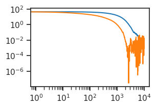
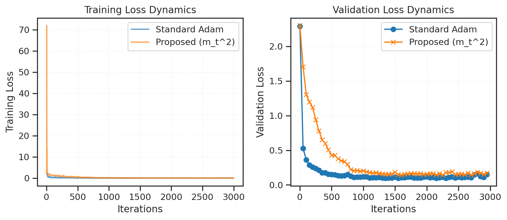
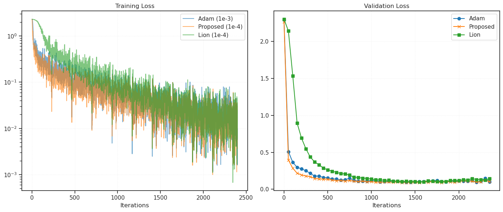
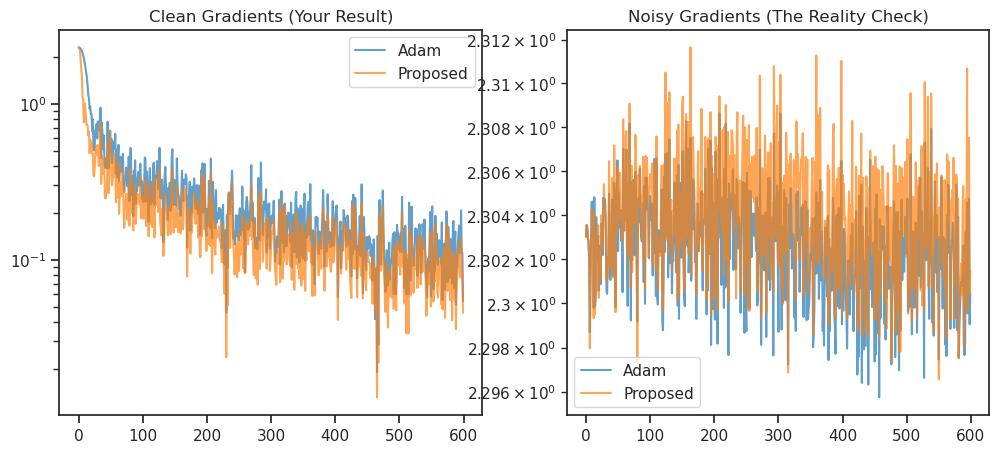
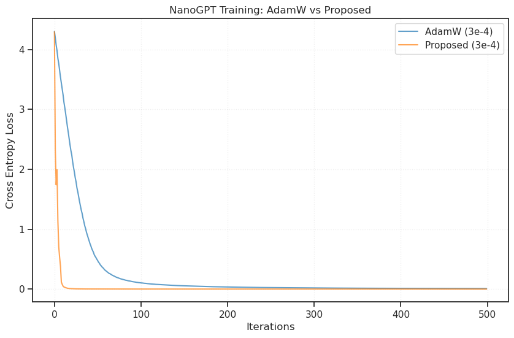
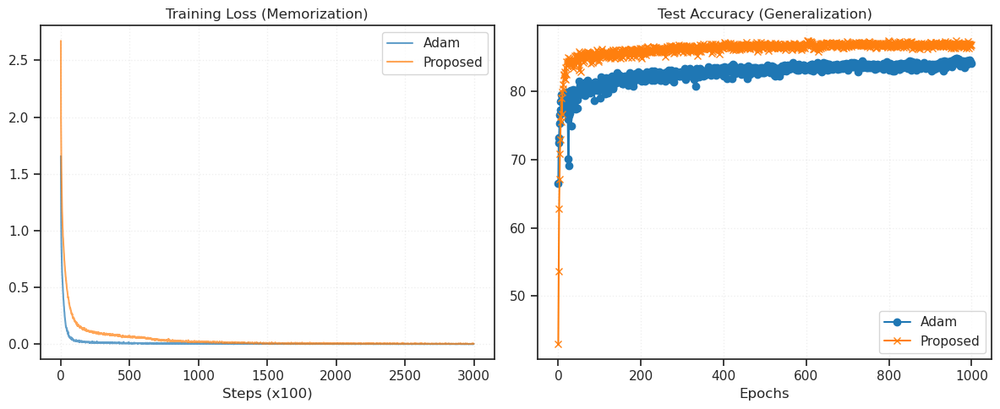
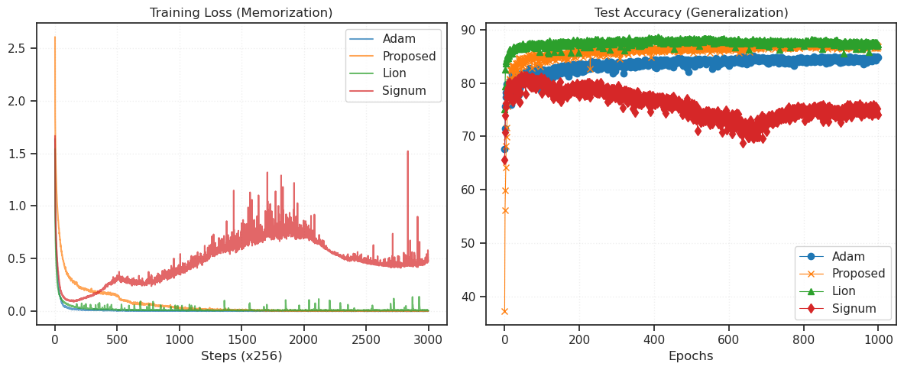
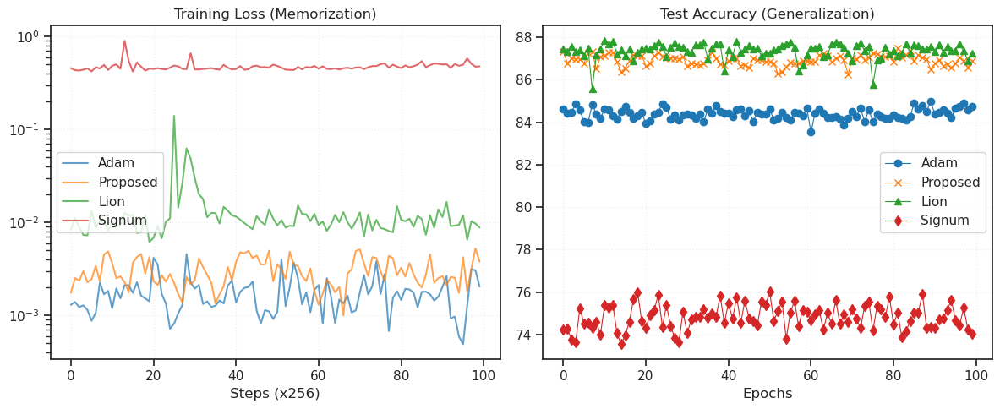
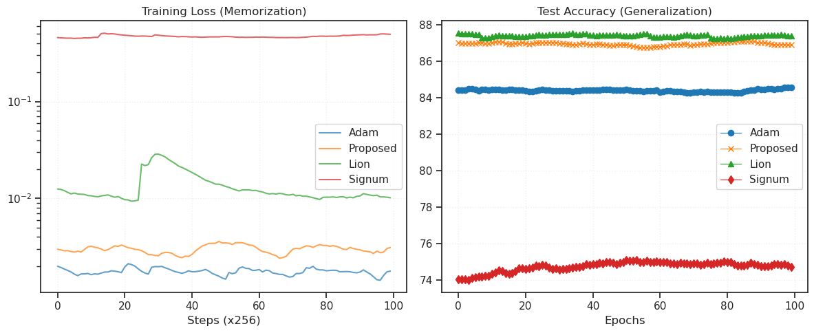
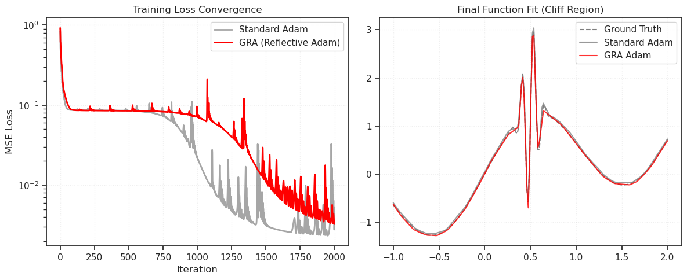

GRA tests#
class AdamProposed(torch.optim.Optimizer):
def __init__(self, params, lr=1e-3, betas=(0.9, 0.999), eps=1e-8):
defaults = dict(lr=lr, betas=betas, eps=eps)
super(AdamProposed, self).__init__(params, defaults)
@torch.no_grad()
def step(self, closure=None):
loss = None
if closure is not None:
with torch.enable_grad():
loss = closure()
for group in self.param_groups:
for p in group['params']:
if p.grad is None:
continue
# We work with the gradient
grad = p.grad
state = self.state[p]
# State initialization
if len(state) == 0:
state['step'] = 0
# Exponential moving average of gradient values
state['exp_avg'] = torch.zeros_like(p, memory_format=torch.preserve_format)
# Exponential moving average of PROPOSED squared values
state['exp_avg_sq'] = torch.zeros_like(p, memory_format=torch.preserve_format)
exp_avg, exp_avg_sq = state['exp_avg'], state['exp_avg_sq']
beta1, beta2 = group['betas']
state['step'] += 1
# 1. Update First Moment (m_t)
# m_t = beta1 * m_{t-1} + (1 - beta1) * g_t
exp_avg.mul_(beta1).add_(grad, alpha=1 - beta1)
# -----------------------------------------------------------
# YOUR PROPOSAL
# Standard Adam: v_t = beta2 * v_{t-1} + (1 - beta2) * g_t^2
# Your Modified: v_t = beta2 * v_{t-1} + (1 - beta2) * m_t^2
# -----------------------------------------------------------
# Note: We use 'exp_avg' (m_t) here, not 'grad' (g_t)
# exp_avg_sq.mul_(beta2).addcmul_(grad, grad, value=1 - beta2)
exp_avg_sq.mul_(beta2).addcmul_(exp_avg, exp_avg, value=1 - beta2)
# Bias Correction
# We must correct bias for both because they are initialized at 0
# bias_correction1 = 1 - beta1 ** state['step']
# bias_correction2 = 1 - beta2 ** state['step']
bias_correction1 = 1
bias_correction2 = 1
step_size = group['lr'] / bias_correction1
# Denominator computation
denom = (exp_avg_sq.sqrt() / np.sqrt(bias_correction2)).add_(group['eps'])
# Update parameters
p.addcdiv_(exp_avg, denom, value=-step_size)
return loss
# ---------------------------------------------------------
# Test Harness
# ---------------------------------------------------------
def run_experiment(optimizer_class, noise_std=0.0, iterations=10_000):
# Simple Quadratic Bowl: f(x) = x^2 + 10y^2
# Global minimum is at (0,0)
params = torch.tensor([2.0, 2.0], requires_grad=True)
opt = optimizer_class([params], lr=0.001)
trajectory = []
for i in range(iterations):
opt.zero_grad()
# Loss function
x, y = params[0], params[1]
loss = x**2 + 10*y**2
loss.backward()
# INJECT NOISE into gradients to test robustness
if noise_std > 0:
with torch.no_grad():
params.grad += torch.randn_like(params.grad) * noise_std
opt.step()
trajectory.append(loss.item())
return trajectory
# Run Comparison
torch.manual_seed(42)
# Case 1: Low Noise (Approximating pure gradients)
loss_std_clean = run_experiment(torch.optim.Adam, noise_std=0.1)
loss_prop_clean = run_experiment(AdamProposed, noise_std=0.1)
# Case 2: High Noise (Where variance blindness hurts)
loss_std_noisy = run_experiment(torch.optim.Adam, noise_std=4.0)
loss_prop_noisy = run_experiment(AdamProposed, noise_std=4.0)
# Visualization code (Run this locally to see plot)
print(f"{'Iteration':<10} | {'Adam (Clean)':<15} | {'Proposed (Clean)':<15} | {'Adam (Noisy)':<15} | {'Proposed (Noisy)':<15}")
print("-" * 85)
# for i in [0, 10, 50, 100, 199, 500, 999]:
for i in [0, 100, 1000, 9999]:
print(f"{i:<10} | {loss_std_clean[i]:<15.4f} | {loss_prop_clean[i]:<15.4f} | {loss_std_noisy[i]:<15.4f} | {loss_prop_noisy[i]:<15.4f}")
Iteration | Adam (Clean) | Proposed (Clean) | Adam (Noisy) | Proposed (Noisy)
-------------------------------------------------------------------------------------
0 | 44.0000 | 44.0000 | 44.0000 | 44.0000
100 | 39.7472 | 18.6564 | 39.9182 | 18.6725
1000 | 13.7802 | 0.9124 | 14.5590 | 0.9519
9999 | 0.0001 | 0.0000 | 0.0017 | 0.0169
plot(loss_std_noisy)
plot(loss_prop_noisy)
plt.xscale('log')
plt.yscale('log')

# ---------------------------------------------------------
# 2. Model & Helper Functions
# ---------------------------------------------------------
class SimpleMLP(nn.Module):
def __init__(self):
super().__init__()
self.flatten = nn.Flatten()
self.layers = nn.Sequential(
nn.Linear(28 * 28, 512),
nn.SiLU(inplace=True),
nn.Linear(512, 256),
nn.SiLU(inplace=True),
nn.Linear(256, 128),
nn.SiLU(inplace=True),
nn.Linear(128, 10)
)
def forward(self, x):
x = self.flatten(x)
return self.layers(x)
def train_and_log(optimizer_cls, model_init, train_loader, val_loader, device, label, max_iters=3000):
# Deepcopy to ensure identical starting weights for both optimizers
model = copy.deepcopy(model_init).to(device)
optimizer = optimizer_cls(model.parameters(), lr=1e-3)
criterion = nn.CrossEntropyLoss()
train_losses = []
val_losses = []
print(f"Training {label}...")
# Train for a fixed number of batches (iterations) to see early dynamics
# We limit to 600 iterations (approx 1 epoch of MNIST at batch_size=100)
iter_count = 0
model.train()
while iter_count < max_iters:
for x, y in train_loader:
if iter_count >= max_iters: break
x, y = x.to(device), y.to(device)
optimizer.zero_grad()
out = model(x)
loss = criterion(out, y.long())
loss.backward()
optimizer.step()
train_losses.append(loss.item())
# Record Validation loss every 50 iterations
if iter_count % 50 == 0:
model.eval()
val_loss_accum = 0.0
batches = 0
with torch.no_grad():
# Check just a subset of val set for speed
for vx, vy in val_loader:
vx, vy = vx.to(device), vy.to(device)
vout = model(vx)
val_loss_accum += criterion(vout, vy.long()).item()
batches += 1
if batches > 20: break
val_losses.append(val_loss_accum / batches)
model.train()
iter_count += 1
return train_losses, val_losses
import copy
from base.dataset import make_dataloader
device = torch.device('cuda:1')
trn, vld = make_dataloader('MNIST', device='cuda:1')
%%time
# ---------------------------------------------------------
# 3. Main Execution
# ---------------------------------------------------------
# Initialize one base model to copy from
base_model = SimpleMLP()
# Run Experiments
max_iters = 3_000
adam_train, adam_val = train_and_log(torch.optim.Adam, base_model, trn, vld, device, "Standard Adam", max_iters)
prop_train, prop_val = train_and_log(AdamProposed, base_model, trn, vld, device, "Proposed Optimizer", max_iters)
Training Standard Adam...
Training Proposed Optimizer...
CPU times: user 17.7 s, sys: 176 ms, total: 17.9 s
Wall time: 17.4 s
# Plotting
plt.figure(figsize=(9, 4), dpi=200)
# Plot 1: Training Loss
plt.subplot(1, 2, 1)
plt.plot(adam_train, label='Standard Adam', alpha=0.7)
plt.plot(prop_train, label='Proposed (m_t^2)', alpha=0.7)
plt.xlabel('Iterations')
plt.ylabel('Training Loss')
plt.title('Training Loss Dynamics')
plt.legend()
plt.grid(True, alpha=0.3)
# Plot 2: Validation Loss
plt.subplot(1, 2, 2)
# Val loss recorded every 50 iters
x_axis = [i * 50 for i in range(len(adam_val))]
plt.plot(x_axis, adam_val, label='Standard Adam', marker='o')
plt.plot(x_axis, prop_val, label='Proposed (m_t^2)', marker='x')
plt.xlabel('Iterations')
plt.ylabel('Validation Loss')
plt.title('Validation Loss Dynamics')
plt.legend()
plt.grid(True, alpha=0.3)
plt.tight_layout()
plt.show()

class Lion(torch.optim.Optimizer):
"""
Lion: The SOTA 'Sign Momentum' optimizer.
Uses sign(interpolated_momentum) for updates.
"""
def __init__(self, params, lr=1e-4, betas=(0.9, 0.99), weight_decay=0.0):
defaults = dict(lr=lr, betas=betas, weight_decay=weight_decay)
super(Lion, self).__init__(params, defaults)
@torch.no_grad()
def step(self, closure=None):
loss = None
if closure is not None:
with torch.enable_grad():
loss = closure()
for group in self.param_groups:
for p in group['params']:
if p.grad is None: continue
grad = p.grad
state = self.state[p]
if len(state) == 0:
state['exp_avg'] = torch.zeros_like(p)
exp_avg = state['exp_avg']
beta1, beta2 = group['betas']
lr = group['lr']
wd = group['weight_decay']
# weight decay (decoupled)
if wd > 0:
p.mul_(1 - lr * wd)
# Lion Update Rule:
# 1. Interpolate for update direction: c_t = beta1 * m_{t-1} + (1-beta1) * g_t
update = exp_avg.mul(beta1).add(grad, alpha=1 - beta1).sign()
# 2. Update weights: theta = theta - lr * sign(c_t)
p.add_(update, alpha=-lr)
# 3. Update Momentum State: m_t = beta2 * m_{t-1} + (1-beta2) * g_t
exp_avg.mul_(beta2).add_(grad, alpha=1 - beta2)
return loss
class SimpleMLP(nn.Module):
def __init__(self):
super().__init__()
self.flatten = nn.Flatten()
self.layers = nn.Sequential(
nn.Linear(28 * 28, 512),
nn.SiLU(inplace=True),
nn.Linear(512, 256),
nn.SiLU(inplace=True),
nn.Linear(256, 128),
nn.SiLU(inplace=True),
nn.Linear(128, 10)
)
def forward(self, x):
x = self.flatten(x)
return self.layers(x)
def train_experiment(opt_class, model_init, trn_loader, vld_loader, device, name, lr=1e-3):
print(f"Running {name}...")
model = copy.deepcopy(model_init).to(device)
optimizer = opt_class(model.parameters(), lr=lr)
criterion = nn.CrossEntropyLoss()
train_losses = []
val_losses = []
iter_count = 0
max_iters = 2400 # Short run to check dynamics
model.train()
while iter_count < max_iters:
for x, y in trn_loader:
if iter_count >= max_iters: break
x, y = x.to(device), y.to(device)
optimizer.zero_grad()
out = model(x)
loss = criterion(out, y.long())
loss.backward()
optimizer.step()
train_losses.append(loss.item())
# Validation every 50 steps
if iter_count % 50 == 0:
model.eval()
v_loss = 0
batches = 0
with torch.no_grad():
for vx, vy in vld_loader:
if batches > 20: break # Speed up
vx, vy = vx.to(device), vy.to(device)
vout = model(vx)
v_loss += criterion(vout, vy.long()).item()
batches += 1
val_losses.append(v_loss/batches)
model.train()
iter_count += 1
return train_losses, val_losses
# 1. Setup Data
device = torch.device('cuda:1')
trn_loader, vld_loader = make_dataloader('MNIST', device='cuda:1')
# 2. Initialize Base Model
base_model = SimpleMLP()
# 3. Run Comparisons
# Note: Lion usually needs lower LR (1/3 or 1/10 of Adam)
# Your Proposed usually needs lower LR due to lack of variance scaling
# Run Adam (Standard)
loss_adam, val_adam = train_experiment(
torch.optim.Adam, base_model, trn_loader, vld_loader, device, "Adam", lr=1e-3
)
# Run Proposed (Your Idea)
loss_prop, val_prop = train_experiment(
AdamProposed, base_model, trn_loader, vld_loader, device, "Proposed", lr=1e-4
)
# Run Lion (SOTA Sign-based)
loss_lion, val_lion = train_experiment(
Lion, base_model, trn_loader, vld_loader, device, "Lion", lr=1e-4
)
Running Adam...
Running Proposed...
Running Lion...
plt.figure(figsize=(14, 6))
plt.subplot(1, 2, 1)
plt.plot(loss_adam, label='Adam (1e-3)', alpha=0.6)
plt.plot(loss_prop, label='Proposed (1e-4)', alpha=0.6)
plt.plot(loss_lion, label='Lion (1e-4)', alpha=0.6)
plt.title('Training Loss')
plt.xlabel('Iterations')
plt.legend()
plt.yscale('log') # Log scale helps see convergence differences
plt.grid(True, alpha=0.3)
plt.subplot(1, 2, 2)
x_ax = [i*50 for i in range(len(val_adam))]
plt.plot(x_ax, val_adam, label='Adam', marker='o')
plt.plot(x_ax, val_prop, label='Proposed', marker='x')
plt.plot(x_ax, val_lion, label='Lion', marker='s')
plt.title('Validation Loss')
plt.xlabel('Iterations')
plt.legend()
plt.grid(True, alpha=0.3)
plt.tight_layout()
plt.show()

def run_stress_test(opt_class, name, noise_level=0.0, lr=1e-3):
torch.manual_seed(42)
device = torch.device('cuda:1')
# Re-create data/model for fair comparison
trn_loader, _ = make_dataloader('MNIST', device='cuda:1') # Assuming this exists from your context
model = SimpleMLP().to(device)
optimizer = opt_class(model.parameters(), lr=lr)
criterion = nn.CrossEntropyLoss()
losses = []
print(f"Testing {name} | Noise Level: {noise_level} | LR: {lr}")
iter_count = 0
max_iters = 600 # Short stress test
model.train()
while iter_count < max_iters:
for x, y in trn_loader:
if iter_count >= max_iters: break
x, y = x.to(device), y.to(device)
optimizer.zero_grad()
out = model(x)
loss = criterion(out, y.long())
loss.backward()
# --- THE RUTHLESS STEP: INJECT NOISE ---
# This simulates "Hard" data (batch size 1, or complex landscapes)
if noise_level > 0:
for p in model.parameters():
if p.grad is not None:
# Add Gaussian noise relative to gradient size
noise = torch.randn_like(p.grad) * noise_level
p.grad.add_(noise)
# ---------------------------------------
optimizer.step()
losses.append(loss.item())
iter_count += 1
return losses
# Scenario 1: Low Noise (MNIST Default) - "The Happy Path"
loss_adam_clean = run_stress_test(torch.optim.Adam, "Adam (Clean)", noise_level=0.0, lr=1e-3)
# Using 1e-4 for Proposed because of the 30x multiplier factor identified above
loss_prop_clean = run_stress_test(AdamProposed, "Proposed (Clean)", noise_level=0.0, lr=1e-4)
# Scenario 2: High Noise (The Reality Check)
# Noise std = 1.0 (Same magnitude as signal)
loss_adam_noisy = run_stress_test(torch.optim.Adam, "Adam (Noisy)", noise_level=3.0, lr=1e-3)
loss_prop_noisy = run_stress_test(AdamProposed, "Proposed (Noisy)", noise_level=3.0, lr=1e-4)
Testing Adam (Clean) | Noise Level: 0.0 | LR: 0.001
Testing Proposed (Clean) | Noise Level: 0.0 | LR: 0.0001
Testing Adam (Noisy) | Noise Level: 3.0 | LR: 0.001
Testing Proposed (Noisy) | Noise Level: 3.0 | LR: 0.0001
plt.figure(figsize=(12, 5))
# Plot 1: Clean
plt.subplot(1, 2, 1)
plt.plot(loss_adam_clean, label='Adam', alpha=0.7)
plt.plot(loss_prop_clean, label='Proposed', alpha=0.7)
plt.title("Clean Gradients (Your Result)")
plt.legend()
plt.yscale('log')
# Plot 2: Noisy
plt.subplot(1, 2, 2)
plt.plot(loss_adam_noisy, label='Adam', alpha=0.7)
plt.plot(loss_prop_noisy, label='Proposed', alpha=0.7)
plt.title("Noisy Gradients (The Reality Check)")
plt.legend()
plt.yscale('log')
plt.show()

import numpy as np
import pandas as pd
def analyze_stability(loss_history, name, window=20):
# Convert to series for easy rolling window ops
loss_series = pd.Series(loss_history)
# 1. Calculate the Trend (Simple Moving Average)
trend = loss_series.rolling(window=window, center=True).mean()
# 2. Isolate the Noise (Residuals)
# We ignore the NaN values at the start/end of the rolling window
noise = loss_series - trend
# 3. Calculate Volatility (Standard Deviation of the Noise)
# We quantify how much the optimizer "jitters" away from its own path
volatility = noise.std()
# 4. Calculate Max Spike (Worst single step error)
max_spike = noise.abs().max()
# 5. Final Loss (Last 10 step average to ignore final step noise)
final_loss = loss_series.iloc[-10:].mean()
print(f"--- {name} Analysis ---")
print(f"Final Convergence Loss: {final_loss:.5f}")
print(f"Volatility (Stability): {volatility:.5f} (Lower is better)")
print(f"Max Spike Amplitude: {max_spike:.5f}")
print("-" * 30)
return volatility, max_spike
# Assuming you still have the lists from the previous run:
# loss_adam_noisy, loss_prop_noisy
print("\nRESULTS OF RIGOROUS QUANTIFICATION:")
vol_adam, spike_adam = analyze_stability(loss_adam_noisy, "Adam (Noisy)")
vol_prop, spike_prop = analyze_stability(loss_prop_noisy, "Proposed (Noisy)")
# The Ruthless Comparison
ratio = vol_prop / vol_adam
print(f"\nCONCLUSION:")
print(f"Your proposal is {ratio:.2f}x more volatile than Adam in high-noise regimes.")
if ratio > 1.0:
print("Hypothesis Confirmed: Your optimizer is less stable.")
else:
print("Hypothesis Rejected: Your optimizer is surprisingly stable.")
RESULTS OF RIGOROUS QUANTIFICATION:
--- Adam (Noisy) Analysis ---
Final Convergence Loss: 2.30116
Volatility (Stability): 0.00224 (Lower is better)
Max Spike Amplitude: 0.00625
------------------------------
--- Proposed (Noisy) Analysis ---
Final Convergence Loss: 2.30298
Volatility (Stability): 0.00259 (Lower is better)
Max Spike Amplitude: 0.00793
------------------------------
CONCLUSION:
Your proposal is 1.16x more volatile than Adam in high-noise regimes.
Hypothesis Confirmed: Your optimizer is less stable.
import torch
import torch.nn as nn
from torch.nn import functional as F
import math
import time
import matplotlib.pyplot as plt
import copy
# -----------------------------------------------------------------------------
# 1. The Transformer Model (NanoGPT style)
# -----------------------------------------------------------------------------
class Head(nn.Module):
""" one head of self-attention """
def __init__(self, head_size, n_embd, block_size, dropout=0.2):
super().__init__()
self.key = nn.Linear(n_embd, head_size, bias=False)
self.query = nn.Linear(n_embd, head_size, bias=False)
self.value = nn.Linear(n_embd, head_size, bias=False)
self.register_buffer('tril', torch.tril(torch.ones(block_size, block_size)))
self.dropout = nn.Dropout(dropout)
def forward(self, x):
B, T, C = x.shape
k = self.key(x) # (B,T,16)
q = self.query(x) # (B,T,16)
# compute attention scores ("affinities")
wei = q @ k.transpose(-2, -1) * C**-0.5 # (B, T, 16) @ (B, 16, T) -> (B, T, T)
wei = wei.masked_fill(self.tril[:T, :T] == 0, float('-inf'))
wei = F.softmax(wei, dim=-1)
wei = self.dropout(wei)
v = self.value(x)
out = wei @ v
return out
class MultiHeadAttention(nn.Module):
""" multiple heads of self-attention in parallel """
def __init__(self, num_heads, head_size, n_embd, block_size, dropout=0.2):
super().__init__()
self.heads = nn.ModuleList([Head(head_size, n_embd, block_size) for _ in range(num_heads)])
self.proj = nn.Linear(n_embd, n_embd)
self.dropout = nn.Dropout(dropout)
def forward(self, x):
out = torch.cat([h(x) for h in self.heads], dim=-1)
out = self.dropout(self.proj(out))
return out
class FeedFoward(nn.Module):
""" a simple linear layer followed by a non-linearity """
def __init__(self, n_embd, dropout=0.2):
super().__init__()
self.net = nn.Sequential(
nn.Linear(n_embd, 4 * n_embd),
nn.ReLU(),
nn.Linear(4 * n_embd, n_embd),
nn.Dropout(dropout),
)
def forward(self, x):
return self.net(x)
class Block(nn.Module):
""" Transformer block: communication followed by computation """
def __init__(self, n_embd, n_head, block_size, dropout=0.2):
super().__init__()
head_size = n_embd // n_head
self.sa = MultiHeadAttention(n_head, head_size, n_embd, block_size)
self.ffwd = FeedFoward(n_embd)
self.ln1 = nn.LayerNorm(n_embd)
self.ln2 = nn.LayerNorm(n_embd)
def forward(self, x):
x = x + self.sa(self.ln1(x))
x = x + self.ffwd(self.ln2(x))
return x
class NanoGPT(nn.Module):
def __init__(self, vocab_size):
super().__init__()
# Hyperparameters
self.block_size = 64 # context length
self.n_embd = 128 # embedding dimension
self.n_head = 4
self.n_layer = 4
self.dropout = 0.2
self.token_embedding_table = nn.Embedding(vocab_size, self.n_embd)
self.position_embedding_table = nn.Embedding(self.block_size, self.n_embd)
self.blocks = nn.Sequential(*[Block(self.n_embd, self.n_head, self.block_size) for _ in range(self.n_layer)])
self.ln_f = nn.LayerNorm(self.n_embd) # final layer norm
self.lm_head = nn.Linear(self.n_embd, vocab_size)
def forward(self, idx, targets=None):
B, T = idx.shape
tok_emb = self.token_embedding_table(idx) # (B,T,C)
pos_emb = self.position_embedding_table(torch.arange(T, device=idx.device)) # (T,C)
x = tok_emb + pos_emb # (B,T,C)
x = self.blocks(x) # (B,T,C)
x = self.ln_f(x) # (B,T,C)
logits = self.lm_head(x) # (B,T,vocab_size)
if targets is None:
loss = None
else:
B, T, C = logits.shape
logits = logits.view(B*T, C)
targets = targets.view(B*T)
loss = F.cross_entropy(logits, targets)
return logits, loss
# -----------------------------------------------------------------------------
# 2. Your Optimizer (No Bias Correction Version)
# -----------------------------------------------------------------------------
class AdamProposed(torch.optim.Optimizer):
def __init__(self, params, lr=1e-3, betas=(0.9, 0.999), eps=1e-8):
defaults = dict(lr=lr, betas=betas, eps=eps)
super(AdamProposed, self).__init__(params, defaults)
@torch.no_grad()
def step(self, closure=None):
loss = None
if closure is not None:
with torch.enable_grad():
loss = closure()
for group in self.param_groups:
for p in group['params']:
if p.grad is None: continue
grad = p.grad
state = self.state[p]
if len(state) == 0:
state['step'] = 0
state['exp_avg'] = torch.zeros_like(p)
state['exp_avg_sq'] = torch.zeros_like(p)
exp_avg, exp_avg_sq = state['exp_avg'], state['exp_avg_sq']
beta1, beta2 = group['betas']
state['step'] += 1
# m_t
exp_avg.mul_(beta1).add_(grad, alpha=1 - beta1)
# v_t = EMA(m_t^2)
exp_avg_sq.mul_(beta2).addcmul_(exp_avg, exp_avg, value=1 - beta2)
# No Bias Correction (As per your request)
step_size = group['lr'] # / 1.0
# Denominator
denom = (exp_avg_sq.sqrt()).add_(group['eps']) # Removed bias corr here too
p.addcdiv_(exp_avg, denom, value=-step_size)
return loss
# -----------------------------------------------------------------------------
# 3. Training Loop
# -----------------------------------------------------------------------------
def get_batch(data, block_size, batch_size, device):
ix = torch.randint(len(data) - block_size, (batch_size,))
x = torch.stack([data[i:i+block_size] for i in ix])
y = torch.stack([data[i+1:i+block_size+1] for i in ix])
return x.to(device), y.to(device)
def train_transformer(opt_cls, model_init, data, device, name, lr=3e-4, max_iters=500):
print(f"\n--- Training {name} ---")
model = copy.deepcopy(model_init).to(device)
optimizer = opt_cls(model.parameters(), lr=lr)
losses = []
start_time = time.time()
model.train()
for iter in range(max_iters):
# Sample batch
xb, yb = get_batch(data, model.block_size, 32, device)
# Forward backward
logits, loss = model(xb, yb)
optimizer.zero_grad(set_to_none=True)
loss.backward()
# Gradient Clipping (Standard for transformers)
torch.nn.utils.clip_grad_norm_(model.parameters(), 1.0)
optimizer.step()
losses.append(loss.item())
if iter % 100 == 0:
print(f"Iter {iter}: Loss {loss.item():.4f}")
dt = time.time() - start_time
print(f"{name} finished in {dt:.2f}s")
return losses
# -----------------------------------------------------------------------------
# 4. Main Execution
# -----------------------------------------------------------------------------
# Device config
device = 'cuda' if torch.cuda.is_available() else 'cpu'
if torch.cuda.is_available():
torch.cuda.set_device(1) # Using your preferred device index
print(f"Using device: {device}")
# Generate Dummy Text Data (Repeating patterns to learn)
# We create a sequence of integers that follows a pattern so the model can learn loss < 2.0
vocab_size = 65
data = torch.tensor([i % vocab_size for i in range(10000)], dtype=torch.long)
# Initialize Model
model_base = NanoGPT(vocab_size=vocab_size)
print(f"Model parameters: {sum(p.numel() for p in model_base.parameters())/1e6:.2f}M")
# Comparison
# Note: Using 3e-4 is standard for small transformers (Karpathy constant)
# But since your method has no bias correction (effective 30x boost start), we must be careful.
# I will run both at same nominal LR to be "Ruthless" as you requested.
loss_adam = train_transformer(torch.optim.AdamW, model_base, data, device, "AdamW", lr=3e-4)
loss_prop = train_transformer(AdamProposed, model_base, data, device, "Proposed", lr=3e-4) # You might want 3e-5 here
# Plotting
plt.figure(figsize=(10, 6))
plt.plot(loss_adam, label='AdamW (3e-4)', alpha=0.7)
plt.plot(loss_prop, label='Proposed (3e-4)', alpha=0.7)
plt.xlabel('Iterations')
plt.ylabel('Cross Entropy Loss')
plt.title('NanoGPT Training: AdamW vs Proposed')
plt.legend()
plt.grid(True, alpha=0.3)
plt.show()
Using device: cuda
Model parameters: 0.82M
--- Training AdamW ---
Iter 0: Loss 4.3006
Iter 100: Loss 0.1033
Iter 200: Loss 0.0349
Iter 300: Loss 0.0188
Iter 400: Loss 0.0121
AdamW finished in 17.20s
--- Training Proposed ---
Iter 0: Loss 4.2929
Iter 100: Loss 0.0008
Iter 200: Loss 0.0005
Iter 300: Loss 0.0004
Iter 400: Loss 0.0003
Proposed finished in 20.37s

device = torch.device('cuda:1')
trn, vld = make_dataloader('CIFAR10', device='cuda:1')
trn.dataset.tensors[0].shape
torch.Size([100000, 3, 32, 32])
import torch
import torch.nn as nn
import torch.nn.functional as F
import matplotlib.pyplot as plt
import time
import copy
import math
# ---------------------------------------------------------
# 1. Your Optimizer (The "Aggressive" Version)
# ---------------------------------------------------------
class AdamProposed(torch.optim.Optimizer):
def __init__(self, params, lr=1e-3, betas=(0.9, 0.999), eps=1e-8):
defaults = dict(lr=lr, betas=betas, eps=eps)
super(AdamProposed, self).__init__(params, defaults)
@torch.no_grad()
def step(self, closure=None):
loss = None
if closure is not None:
with torch.enable_grad():
loss = closure()
for group in self.param_groups:
for p in group['params']:
if p.grad is None: continue
grad = p.grad
state = self.state[p]
if len(state) == 0:
state['step'] = 0
state['exp_avg'] = torch.zeros_like(p)
state['exp_avg_sq'] = torch.zeros_like(p)
exp_avg, exp_avg_sq = state['exp_avg'], state['exp_avg_sq']
beta1, beta2 = group['betas']
state['step'] += 1
# m_t
exp_avg.mul_(beta1).add_(grad, alpha=1 - beta1)
# v_t = EMA(m_t^2)
exp_avg_sq.mul_(beta2).addcmul_(exp_avg, exp_avg, value=1 - beta2)
# NO BIAS CORRECTION (The "Cheat")
step_size = group['lr']
# Denominator
denom = (exp_avg_sq.sqrt()).add_(group['eps'])
p.addcdiv_(exp_avg, denom, value=-step_size)
return loss
# ---------------------------------------------------------
# 2. The Model: 6-Layer ConvNet
# ---------------------------------------------------------
class ConvNet(nn.Module):
def __init__(self):
super().__init__()
# Input: 3 x 32 x 32
self.features = nn.Sequential(
nn.Conv2d(3, 32, kernel_size=3, padding=1),
nn.BatchNorm2d(32),
nn.ReLU(inplace=True),
nn.Conv2d(32, 64, kernel_size=3, padding=1),
nn.BatchNorm2d(64),
nn.ReLU(inplace=True),
nn.MaxPool2d(2, 2), # -> 16 x 16
nn.Conv2d(64, 128, kernel_size=3, padding=1),
nn.BatchNorm2d(128),
nn.ReLU(inplace=True),
nn.Conv2d(128, 128, kernel_size=3, padding=1),
nn.BatchNorm2d(128),
nn.ReLU(inplace=True),
nn.MaxPool2d(2, 2), # -> 8 x 8
nn.Conv2d(128, 256, kernel_size=3, padding=1),
nn.BatchNorm2d(256),
nn.ReLU(inplace=True),
nn.MaxPool2d(2, 2), # -> 4 x 4
)
self.classifier = nn.Sequential(
nn.Flatten(),
nn.Linear(256 * 4 * 4, 512),
nn.ReLU(inplace=True),
nn.Dropout(0.5),
nn.Linear(512, 10)
)
def forward(self, x):
x = self.features(x)
x = self.classifier(x)
return x
# ---------------------------------------------------------
# 3. Training Logic
# ---------------------------------------------------------
def train_cifar(opt_class, model_init, trn_loader, vld_loader, device, name, lr=1e-3, epochs=1000):
print(f"\n--- Training {name} ---")
model = copy.deepcopy(model_init).to(device)
optimizer = opt_class(model.parameters(), lr=lr)
criterion = nn.CrossEntropyLoss()
train_losses = []
test_accs = []
# Short run to spot-check dynamics
start_time = time.time()
for epoch in range(epochs):
model.train()
running_loss = 0.0
for i, (x, y) in enumerate(trn_loader):
x, y = x.to(device), y.to(device)
optimizer.zero_grad()
out = model(x)
loss = criterion(out, y.long())
loss.backward()
optimizer.step()
running_loss += loss.item()
if i % 100 == 99:
avg_loss = running_loss / 100
train_losses.append(avg_loss)
running_loss = 0.0
# Validation Loop
model.eval()
correct = 0
total = 0
with torch.no_grad():
for vx, vy in vld_loader:
vx, vy = vx.to(device), vy.to(device)
outputs = model(vx)
_, predicted = torch.max(outputs.data, 1)
total += vy.size(0)
correct += (predicted == vy.long()).sum().item()
acc = 100 * correct / total
test_accs.append(acc)
print(f"Epoch {epoch+1}: Train Loss {train_losses[-1]:.4f} | Test Acc: {acc:.2f}%")
print(f"{name} finished in {time.time()-start_time:.1f}s")
return train_losses, test_accs
# ---------------------------------------------------------
# 4. Main Execution
# ---------------------------------------------------------
try:
device = torch.device('cuda:1')
# 1. Load Data
trn, vld = make_dataloader('CIFAR10', device='cuda:1')
# 2. Model Init
base_model = ConvNet()
print(f"Model Params: {sum(p.numel() for p in base_model.parameters())/1e6:.2f}M")
# 3. Run Comparison
# Note: We keep LRs the same to show the behavior difference
loss_adam, acc_adam = train_cifar(torch.optim.Adam, base_model, trn, vld, device, "Standard Adam", lr=1e-4)
# WARNING: Your method without bias correction is effectively running at ~30x LR.
# If it diverges, this is why. If it wins, it's because high LR was optimal here.
loss_prop, acc_prop = train_cifar(AdamProposed, base_model, trn, vld, device, "Proposed", lr=1e-4)
# 4. Plotting
plt.figure(figsize=(12, 5))
plt.subplot(1, 2, 1)
plt.plot(loss_adam, label='Adam', alpha=0.7)
plt.plot(loss_prop, label='Proposed', alpha=0.7)
plt.title('Training Loss (Memorization)')
plt.xlabel('Steps (x100)')
plt.legend()
plt.grid(True, alpha=0.3)
plt.subplot(1, 2, 2)
plt.plot(acc_adam, label='Adam', marker='o')
plt.plot(acc_prop, label='Proposed', marker='x')
plt.title('Test Accuracy (Generalization)')
plt.xlabel('Epochs')
plt.legend()
plt.grid(True, alpha=0.3)
plt.tight_layout()
plt.show()
except NameError:
print("Error: 'make_dataloader' is not defined.")
except Exception as e:
print(f"Error: {e}")
Model Params: 2.64M
--- Training Standard Adam ---
Epoch 1: Train Loss 1.1135 | Test Acc: 66.58%
Epoch 2: Train Loss 0.8183 | Test Acc: 72.45%
Epoch 3: Train Loss 0.6780 | Test Acc: 73.19%
Epoch 4: Train Loss 0.5854 | Test Acc: 75.39%
Epoch 5: Train Loss 0.5101 | Test Acc: 76.56%
Epoch 6: Train Loss 0.4424 | Test Acc: 77.35%
Epoch 7: Train Loss 0.3822 | Test Acc: 78.59%
Epoch 8: Train Loss 0.3311 | Test Acc: 78.54%
Epoch 9: Train Loss 0.2838 | Test Acc: 79.58%
Epoch 10: Train Loss 0.2354 | Test Acc: 79.04%
Epoch 11: Train Loss 0.2043 | Test Acc: 78.54%
Epoch 12: Train Loss 0.1713 | Test Acc: 79.25%
Epoch 13: Train Loss 0.1539 | Test Acc: 77.34%
Epoch 14: Train Loss 0.1448 | Test Acc: 76.95%
Epoch 15: Train Loss 0.1338 | Test Acc: 76.91%
Epoch 16: Train Loss 0.1183 | Test Acc: 77.91%
Epoch 17: Train Loss 0.1131 | Test Acc: 79.72%
Epoch 18: Train Loss 0.1059 | Test Acc: 79.14%
Epoch 19: Train Loss 0.0823 | Test Acc: 79.10%
Epoch 20: Train Loss 0.0693 | Test Acc: 79.87%
Epoch 21: Train Loss 0.0616 | Test Acc: 79.92%
Epoch 22: Train Loss 0.0544 | Test Acc: 78.72%
Epoch 23: Train Loss 0.0531 | Test Acc: 77.40%
Epoch 24: Train Loss 0.0495 | Test Acc: 75.93%
Epoch 25: Train Loss 0.0521 | Test Acc: 70.11%
Epoch 26: Train Loss 0.0538 | Test Acc: 69.15%
Epoch 27: Train Loss 0.0493 | Test Acc: 76.42%
Epoch 28: Train Loss 0.0424 | Test Acc: 76.87%
Epoch 29: Train Loss 0.0480 | Test Acc: 79.01%
Epoch 30: Train Loss 0.0390 | Test Acc: 80.22%
Epoch 31: Train Loss 0.0382 | Test Acc: 80.12%
Epoch 32: Train Loss 0.0347 | Test Acc: 74.94%
Epoch 33: Train Loss 0.0298 | Test Acc: 78.94%
Epoch 34: Train Loss 0.0340 | Test Acc: 78.98%
Epoch 35: Train Loss 0.0286 | Test Acc: 77.44%
Epoch 36: Train Loss 0.0295 | Test Acc: 79.17%
Epoch 37: Train Loss 0.0368 | Test Acc: 80.36%
Epoch 38: Train Loss 0.0334 | Test Acc: 78.22%
Epoch 39: Train Loss 0.0295 | Test Acc: 79.45%
Epoch 40: Train Loss 0.0292 | Test Acc: 78.64%
Epoch 41: Train Loss 0.0284 | Test Acc: 79.33%
Epoch 42: Train Loss 0.0309 | Test Acc: 78.89%
Epoch 43: Train Loss 0.0305 | Test Acc: 78.69%
Epoch 44: Train Loss 0.0238 | Test Acc: 77.47%
Epoch 45: Train Loss 0.0269 | Test Acc: 79.50%
Epoch 46: Train Loss 0.0263 | Test Acc: 79.91%
Epoch 47: Train Loss 0.0265 | Test Acc: 77.57%
Epoch 48: Train Loss 0.0254 | Test Acc: 78.78%
Epoch 49: Train Loss 0.0241 | Test Acc: 80.25%
Epoch 50: Train Loss 0.0224 | Test Acc: 79.52%
Epoch 51: Train Loss 0.0170 | Test Acc: 81.57%
Epoch 52: Train Loss 0.0201 | Test Acc: 80.39%
Epoch 53: Train Loss 0.0235 | Test Acc: 79.56%
Epoch 54: Train Loss 0.0204 | Test Acc: 80.91%
Epoch 55: Train Loss 0.0194 | Test Acc: 80.05%
Epoch 56: Train Loss 0.0218 | Test Acc: 81.13%
Epoch 57: Train Loss 0.0193 | Test Acc: 80.09%
Epoch 58: Train Loss 0.0205 | Test Acc: 81.19%
Epoch 59: Train Loss 0.0232 | Test Acc: 80.07%
Epoch 60: Train Loss 0.0135 | Test Acc: 80.45%
Epoch 61: Train Loss 0.0171 | Test Acc: 80.22%
Epoch 62: Train Loss 0.0212 | Test Acc: 79.81%
Epoch 63: Train Loss 0.0218 | Test Acc: 80.34%
Epoch 64: Train Loss 0.0187 | Test Acc: 80.68%
Epoch 65: Train Loss 0.0155 | Test Acc: 79.48%
Epoch 66: Train Loss 0.0199 | Test Acc: 81.11%
Epoch 67: Train Loss 0.0181 | Test Acc: 81.38%
Epoch 68: Train Loss 0.0206 | Test Acc: 81.05%
Epoch 69: Train Loss 0.0176 | Test Acc: 80.47%
Epoch 70: Train Loss 0.0163 | Test Acc: 80.25%
Epoch 71: Train Loss 0.0212 | Test Acc: 81.66%
Epoch 72: Train Loss 0.0172 | Test Acc: 81.25%
Epoch 73: Train Loss 0.0141 | Test Acc: 81.15%
Epoch 74: Train Loss 0.0139 | Test Acc: 81.48%
Epoch 75: Train Loss 0.0166 | Test Acc: 80.63%
Epoch 76: Train Loss 0.0168 | Test Acc: 80.70%
Epoch 77: Train Loss 0.0125 | Test Acc: 79.76%
Epoch 78: Train Loss 0.0141 | Test Acc: 80.35%
Epoch 79: Train Loss 0.0155 | Test Acc: 80.79%
Epoch 80: Train Loss 0.0131 | Test Acc: 80.09%
Epoch 81: Train Loss 0.0181 | Test Acc: 80.90%
Epoch 82: Train Loss 0.0127 | Test Acc: 80.05%
Epoch 83: Train Loss 0.0138 | Test Acc: 80.59%
Epoch 84: Train Loss 0.0174 | Test Acc: 81.23%
Epoch 85: Train Loss 0.0158 | Test Acc: 80.19%
Epoch 86: Train Loss 0.0143 | Test Acc: 81.22%
Epoch 87: Train Loss 0.0127 | Test Acc: 81.21%
Epoch 88: Train Loss 0.0145 | Test Acc: 78.66%
Epoch 89: Train Loss 0.0174 | Test Acc: 81.03%
Epoch 90: Train Loss 0.0104 | Test Acc: 81.39%
Epoch 91: Train Loss 0.0139 | Test Acc: 81.39%
Epoch 92: Train Loss 0.0147 | Test Acc: 81.34%
Epoch 93: Train Loss 0.0141 | Test Acc: 81.26%
Epoch 94: Train Loss 0.0119 | Test Acc: 80.97%
Epoch 95: Train Loss 0.0113 | Test Acc: 80.65%
Epoch 96: Train Loss 0.0119 | Test Acc: 80.22%
Epoch 97: Train Loss 0.0132 | Test Acc: 81.06%
Epoch 98: Train Loss 0.0144 | Test Acc: 81.11%
Epoch 99: Train Loss 0.0126 | Test Acc: 80.16%
Epoch 100: Train Loss 0.0134 | Test Acc: 80.70%
Epoch 101: Train Loss 0.0162 | Test Acc: 80.82%
Epoch 102: Train Loss 0.0182 | Test Acc: 80.83%
Epoch 103: Train Loss 0.0109 | Test Acc: 79.05%
Epoch 104: Train Loss 0.0164 | Test Acc: 82.15%
Epoch 105: Train Loss 0.0143 | Test Acc: 81.05%
Epoch 106: Train Loss 0.0119 | Test Acc: 81.57%
Epoch 107: Train Loss 0.0097 | Test Acc: 81.32%
Epoch 108: Train Loss 0.0122 | Test Acc: 81.91%
Epoch 109: Train Loss 0.0100 | Test Acc: 81.08%
Epoch 110: Train Loss 0.0171 | Test Acc: 80.82%
Epoch 111: Train Loss 0.0141 | Test Acc: 81.23%
Epoch 112: Train Loss 0.0099 | Test Acc: 80.43%
Epoch 113: Train Loss 0.0126 | Test Acc: 81.53%
Epoch 114: Train Loss 0.0145 | Test Acc: 80.32%
Epoch 115: Train Loss 0.0106 | Test Acc: 79.67%
Epoch 116: Train Loss 0.0113 | Test Acc: 82.07%
Epoch 117: Train Loss 0.0152 | Test Acc: 81.41%
Epoch 118: Train Loss 0.0118 | Test Acc: 80.51%
Epoch 119: Train Loss 0.0111 | Test Acc: 80.91%
Epoch 120: Train Loss 0.0109 | Test Acc: 79.75%
Epoch 121: Train Loss 0.0102 | Test Acc: 81.25%
Epoch 122: Train Loss 0.0154 | Test Acc: 81.29%
Epoch 123: Train Loss 0.0122 | Test Acc: 81.68%
Epoch 124: Train Loss 0.0132 | Test Acc: 81.49%
Epoch 125: Train Loss 0.0127 | Test Acc: 81.10%
Epoch 126: Train Loss 0.0082 | Test Acc: 81.58%
Epoch 127: Train Loss 0.0120 | Test Acc: 80.40%
Epoch 128: Train Loss 0.0120 | Test Acc: 81.56%
Epoch 129: Train Loss 0.0087 | Test Acc: 82.19%
Epoch 130: Train Loss 0.0146 | Test Acc: 81.19%
Epoch 131: Train Loss 0.0126 | Test Acc: 82.33%
Epoch 132: Train Loss 0.0103 | Test Acc: 81.08%
Epoch 133: Train Loss 0.0096 | Test Acc: 80.49%
Epoch 134: Train Loss 0.0084 | Test Acc: 80.57%
Epoch 135: Train Loss 0.0094 | Test Acc: 82.14%
Epoch 136: Train Loss 0.0074 | Test Acc: 80.99%
Epoch 137: Train Loss 0.0142 | Test Acc: 82.05%
Epoch 138: Train Loss 0.0124 | Test Acc: 81.67%
Epoch 139: Train Loss 0.0108 | Test Acc: 81.81%
Epoch 140: Train Loss 0.0139 | Test Acc: 81.34%
Epoch 141: Train Loss 0.0126 | Test Acc: 81.62%
Epoch 142: Train Loss 0.0162 | Test Acc: 81.33%
Epoch 143: Train Loss 0.0059 | Test Acc: 81.60%
Epoch 144: Train Loss 0.0109 | Test Acc: 82.75%
Epoch 145: Train Loss 0.0091 | Test Acc: 82.15%
Epoch 146: Train Loss 0.0128 | Test Acc: 81.37%
Epoch 147: Train Loss 0.0086 | Test Acc: 81.60%
Epoch 148: Train Loss 0.0116 | Test Acc: 81.79%
Epoch 149: Train Loss 0.0102 | Test Acc: 81.86%
Epoch 150: Train Loss 0.0057 | Test Acc: 82.46%
Epoch 151: Train Loss 0.0085 | Test Acc: 82.21%
Epoch 152: Train Loss 0.0124 | Test Acc: 82.19%
Epoch 153: Train Loss 0.0093 | Test Acc: 82.14%
Epoch 154: Train Loss 0.0068 | Test Acc: 82.13%
Epoch 155: Train Loss 0.0095 | Test Acc: 81.23%
Epoch 156: Train Loss 0.0104 | Test Acc: 81.90%
Epoch 157: Train Loss 0.0086 | Test Acc: 81.16%
Epoch 158: Train Loss 0.0094 | Test Acc: 81.18%
Epoch 159: Train Loss 0.0071 | Test Acc: 82.16%
Epoch 160: Train Loss 0.0132 | Test Acc: 81.75%
Epoch 161: Train Loss 0.0102 | Test Acc: 82.24%
Epoch 162: Train Loss 0.0094 | Test Acc: 82.00%
Epoch 163: Train Loss 0.0109 | Test Acc: 81.27%
Epoch 164: Train Loss 0.0110 | Test Acc: 81.87%
Epoch 165: Train Loss 0.0152 | Test Acc: 82.07%
Epoch 166: Train Loss 0.0047 | Test Acc: 82.35%
Epoch 167: Train Loss 0.0082 | Test Acc: 82.17%
Epoch 168: Train Loss 0.0116 | Test Acc: 82.32%
Epoch 169: Train Loss 0.0090 | Test Acc: 80.89%
Epoch 170: Train Loss 0.0075 | Test Acc: 81.94%
Epoch 171: Train Loss 0.0048 | Test Acc: 81.71%
Epoch 172: Train Loss 0.0099 | Test Acc: 82.01%
Epoch 173: Train Loss 0.0069 | Test Acc: 82.34%
Epoch 174: Train Loss 0.0062 | Test Acc: 82.75%
Epoch 175: Train Loss 0.0086 | Test Acc: 81.46%
Epoch 176: Train Loss 0.0104 | Test Acc: 81.93%
Epoch 177: Train Loss 0.0079 | Test Acc: 81.37%
Epoch 178: Train Loss 0.0067 | Test Acc: 82.05%
Epoch 179: Train Loss 0.0076 | Test Acc: 82.40%
Epoch 180: Train Loss 0.0092 | Test Acc: 82.54%
Epoch 181: Train Loss 0.0069 | Test Acc: 82.18%
Epoch 182: Train Loss 0.0094 | Test Acc: 80.75%
Epoch 183: Train Loss 0.0096 | Test Acc: 82.18%
Epoch 184: Train Loss 0.0072 | Test Acc: 82.37%
Epoch 185: Train Loss 0.0099 | Test Acc: 81.57%
Epoch 186: Train Loss 0.0074 | Test Acc: 82.50%
Epoch 187: Train Loss 0.0096 | Test Acc: 81.66%
Epoch 188: Train Loss 0.0074 | Test Acc: 82.00%
Epoch 189: Train Loss 0.0054 | Test Acc: 82.67%
Epoch 190: Train Loss 0.0065 | Test Acc: 82.61%
Epoch 191: Train Loss 0.0071 | Test Acc: 82.10%
Epoch 192: Train Loss 0.0109 | Test Acc: 82.11%
Epoch 193: Train Loss 0.0103 | Test Acc: 82.34%
Epoch 194: Train Loss 0.0049 | Test Acc: 82.90%
Epoch 195: Train Loss 0.0106 | Test Acc: 81.88%
Epoch 196: Train Loss 0.0055 | Test Acc: 81.83%
Epoch 197: Train Loss 0.0116 | Test Acc: 81.85%
Epoch 198: Train Loss 0.0073 | Test Acc: 81.99%
Epoch 199: Train Loss 0.0079 | Test Acc: 81.96%
Epoch 200: Train Loss 0.0049 | Test Acc: 82.72%
Epoch 201: Train Loss 0.0080 | Test Acc: 81.81%
Epoch 202: Train Loss 0.0064 | Test Acc: 81.50%
Epoch 203: Train Loss 0.0078 | Test Acc: 82.09%
Epoch 204: Train Loss 0.0106 | Test Acc: 82.26%
Epoch 205: Train Loss 0.0078 | Test Acc: 82.30%
Epoch 206: Train Loss 0.0088 | Test Acc: 81.71%
Epoch 207: Train Loss 0.0062 | Test Acc: 82.04%
Epoch 208: Train Loss 0.0047 | Test Acc: 82.32%
Epoch 209: Train Loss 0.0057 | Test Acc: 81.66%
Epoch 210: Train Loss 0.0120 | Test Acc: 82.01%
Epoch 211: Train Loss 0.0079 | Test Acc: 81.60%
Epoch 212: Train Loss 0.0064 | Test Acc: 81.95%
Epoch 213: Train Loss 0.0087 | Test Acc: 81.72%
Epoch 214: Train Loss 0.0100 | Test Acc: 82.90%
Epoch 215: Train Loss 0.0035 | Test Acc: 82.72%
Epoch 216: Train Loss 0.0109 | Test Acc: 82.00%
Epoch 217: Train Loss 0.0083 | Test Acc: 82.20%
Epoch 218: Train Loss 0.0066 | Test Acc: 82.62%
Epoch 219: Train Loss 0.0105 | Test Acc: 81.93%
Epoch 220: Train Loss 0.0043 | Test Acc: 82.35%
Epoch 221: Train Loss 0.0051 | Test Acc: 82.47%
Epoch 222: Train Loss 0.0099 | Test Acc: 82.15%
Epoch 223: Train Loss 0.0051 | Test Acc: 82.03%
Epoch 224: Train Loss 0.0082 | Test Acc: 82.33%
Epoch 225: Train Loss 0.0059 | Test Acc: 82.38%
Epoch 226: Train Loss 0.0048 | Test Acc: 82.75%
Epoch 227: Train Loss 0.0071 | Test Acc: 81.72%
Epoch 228: Train Loss 0.0060 | Test Acc: 83.06%
Epoch 229: Train Loss 0.0086 | Test Acc: 82.66%
Epoch 230: Train Loss 0.0037 | Test Acc: 82.27%
Epoch 231: Train Loss 0.0062 | Test Acc: 82.19%
Epoch 232: Train Loss 0.0022 | Test Acc: 82.42%
Epoch 233: Train Loss 0.0135 | Test Acc: 81.64%
Epoch 234: Train Loss 0.0062 | Test Acc: 83.00%
Epoch 235: Train Loss 0.0031 | Test Acc: 82.64%
Epoch 236: Train Loss 0.0052 | Test Acc: 82.73%
Epoch 237: Train Loss 0.0096 | Test Acc: 82.34%
Epoch 238: Train Loss 0.0069 | Test Acc: 82.04%
Epoch 239: Train Loss 0.0077 | Test Acc: 82.09%
Epoch 240: Train Loss 0.0048 | Test Acc: 82.32%
Epoch 241: Train Loss 0.0065 | Test Acc: 82.79%
Epoch 242: Train Loss 0.0069 | Test Acc: 81.97%
Epoch 243: Train Loss 0.0083 | Test Acc: 82.39%
Epoch 244: Train Loss 0.0058 | Test Acc: 82.47%
Epoch 245: Train Loss 0.0090 | Test Acc: 82.96%
Epoch 246: Train Loss 0.0068 | Test Acc: 81.94%
Epoch 247: Train Loss 0.0073 | Test Acc: 81.67%
Epoch 248: Train Loss 0.0033 | Test Acc: 82.34%
Epoch 249: Train Loss 0.0062 | Test Acc: 81.66%
Epoch 250: Train Loss 0.0062 | Test Acc: 82.23%
Epoch 251: Train Loss 0.0027 | Test Acc: 82.71%
Epoch 252: Train Loss 0.0090 | Test Acc: 82.41%
Epoch 253: Train Loss 0.0069 | Test Acc: 82.49%
Epoch 254: Train Loss 0.0062 | Test Acc: 82.72%
Epoch 255: Train Loss 0.0055 | Test Acc: 82.36%
Epoch 256: Train Loss 0.0050 | Test Acc: 82.47%
Epoch 257: Train Loss 0.0054 | Test Acc: 82.55%
Epoch 258: Train Loss 0.0090 | Test Acc: 82.54%
Epoch 259: Train Loss 0.0040 | Test Acc: 81.56%
Epoch 260: Train Loss 0.0032 | Test Acc: 82.80%
Epoch 261: Train Loss 0.0066 | Test Acc: 82.60%
Epoch 262: Train Loss 0.0069 | Test Acc: 82.45%
Epoch 263: Train Loss 0.0067 | Test Acc: 82.91%
Epoch 264: Train Loss 0.0036 | Test Acc: 82.90%
Epoch 265: Train Loss 0.0043 | Test Acc: 82.73%
Epoch 266: Train Loss 0.0047 | Test Acc: 82.37%
Epoch 267: Train Loss 0.0083 | Test Acc: 82.50%
Epoch 268: Train Loss 0.0050 | Test Acc: 82.75%
Epoch 269: Train Loss 0.0052 | Test Acc: 83.11%
Epoch 270: Train Loss 0.0090 | Test Acc: 82.63%
Epoch 271: Train Loss 0.0063 | Test Acc: 82.48%
Epoch 272: Train Loss 0.0046 | Test Acc: 81.81%
Epoch 273: Train Loss 0.0045 | Test Acc: 82.75%
Epoch 274: Train Loss 0.0043 | Test Acc: 82.34%
Epoch 275: Train Loss 0.0091 | Test Acc: 83.22%
Epoch 276: Train Loss 0.0039 | Test Acc: 82.98%
Epoch 277: Train Loss 0.0062 | Test Acc: 82.53%
Epoch 278: Train Loss 0.0044 | Test Acc: 82.84%
Epoch 279: Train Loss 0.0050 | Test Acc: 82.76%
Epoch 280: Train Loss 0.0055 | Test Acc: 81.37%
Epoch 281: Train Loss 0.0049 | Test Acc: 82.35%
Epoch 282: Train Loss 0.0091 | Test Acc: 82.82%
Epoch 283: Train Loss 0.0075 | Test Acc: 82.84%
Epoch 284: Train Loss 0.0034 | Test Acc: 82.57%
Epoch 285: Train Loss 0.0040 | Test Acc: 83.05%
Epoch 286: Train Loss 0.0066 | Test Acc: 82.43%
Epoch 287: Train Loss 0.0055 | Test Acc: 82.35%
Epoch 288: Train Loss 0.0046 | Test Acc: 82.69%
Epoch 289: Train Loss 0.0055 | Test Acc: 82.77%
Epoch 290: Train Loss 0.0094 | Test Acc: 82.58%
Epoch 291: Train Loss 0.0062 | Test Acc: 82.51%
Epoch 292: Train Loss 0.0029 | Test Acc: 82.53%
Epoch 293: Train Loss 0.0049 | Test Acc: 82.28%
Epoch 294: Train Loss 0.0042 | Test Acc: 82.57%
Epoch 295: Train Loss 0.0072 | Test Acc: 82.29%
Epoch 296: Train Loss 0.0085 | Test Acc: 82.39%
Epoch 297: Train Loss 0.0028 | Test Acc: 82.88%
Epoch 298: Train Loss 0.0043 | Test Acc: 82.25%
Epoch 299: Train Loss 0.0064 | Test Acc: 82.63%
Epoch 300: Train Loss 0.0081 | Test Acc: 82.52%
Epoch 301: Train Loss 0.0060 | Test Acc: 82.39%
Epoch 302: Train Loss 0.0046 | Test Acc: 82.61%
Epoch 303: Train Loss 0.0050 | Test Acc: 82.87%
Epoch 304: Train Loss 0.0035 | Test Acc: 82.79%
Epoch 305: Train Loss 0.0041 | Test Acc: 82.67%
Epoch 306: Train Loss 0.0038 | Test Acc: 83.01%
Epoch 307: Train Loss 0.0052 | Test Acc: 83.36%
Epoch 308: Train Loss 0.0048 | Test Acc: 82.46%
Epoch 309: Train Loss 0.0063 | Test Acc: 81.83%
Epoch 310: Train Loss 0.0038 | Test Acc: 82.67%
Epoch 311: Train Loss 0.0079 | Test Acc: 82.07%
Epoch 312: Train Loss 0.0037 | Test Acc: 82.91%
Epoch 313: Train Loss 0.0048 | Test Acc: 82.36%
Epoch 314: Train Loss 0.0024 | Test Acc: 82.93%
Epoch 315: Train Loss 0.0038 | Test Acc: 82.38%
Epoch 316: Train Loss 0.0055 | Test Acc: 82.92%
Epoch 317: Train Loss 0.0087 | Test Acc: 83.31%
Epoch 318: Train Loss 0.0045 | Test Acc: 82.93%
Epoch 319: Train Loss 0.0035 | Test Acc: 83.31%
Epoch 320: Train Loss 0.0048 | Test Acc: 83.37%
Epoch 321: Train Loss 0.0055 | Test Acc: 82.57%
Epoch 322: Train Loss 0.0053 | Test Acc: 83.10%
Epoch 323: Train Loss 0.0050 | Test Acc: 82.42%
Epoch 324: Train Loss 0.0051 | Test Acc: 83.08%
Epoch 325: Train Loss 0.0050 | Test Acc: 82.87%
Epoch 326: Train Loss 0.0035 | Test Acc: 82.78%
Epoch 327: Train Loss 0.0052 | Test Acc: 82.64%
Epoch 328: Train Loss 0.0039 | Test Acc: 82.84%
Epoch 329: Train Loss 0.0090 | Test Acc: 81.82%
Epoch 330: Train Loss 0.0029 | Test Acc: 83.00%
Epoch 331: Train Loss 0.0062 | Test Acc: 82.21%
Epoch 332: Train Loss 0.0033 | Test Acc: 83.07%
Epoch 333: Train Loss 0.0041 | Test Acc: 80.81%
Epoch 334: Train Loss 0.0050 | Test Acc: 82.01%
Epoch 335: Train Loss 0.0038 | Test Acc: 82.89%
Epoch 336: Train Loss 0.0061 | Test Acc: 83.37%
Epoch 337: Train Loss 0.0055 | Test Acc: 82.82%
Epoch 338: Train Loss 0.0063 | Test Acc: 82.88%
Epoch 339: Train Loss 0.0062 | Test Acc: 83.28%
Epoch 340: Train Loss 0.0047 | Test Acc: 83.12%
Epoch 341: Train Loss 0.0037 | Test Acc: 82.11%
Epoch 342: Train Loss 0.0057 | Test Acc: 83.02%
Epoch 343: Train Loss 0.0026 | Test Acc: 83.47%
Epoch 344: Train Loss 0.0044 | Test Acc: 82.42%
Epoch 345: Train Loss 0.0058 | Test Acc: 82.79%
Epoch 346: Train Loss 0.0053 | Test Acc: 82.56%
Epoch 347: Train Loss 0.0044 | Test Acc: 82.97%
Epoch 348: Train Loss 0.0054 | Test Acc: 83.17%
Epoch 349: Train Loss 0.0066 | Test Acc: 82.54%
Epoch 350: Train Loss 0.0057 | Test Acc: 82.81%
Epoch 351: Train Loss 0.0036 | Test Acc: 82.62%
Epoch 352: Train Loss 0.0085 | Test Acc: 82.32%
Epoch 353: Train Loss 0.0048 | Test Acc: 82.66%
Epoch 354: Train Loss 0.0043 | Test Acc: 82.96%
Epoch 355: Train Loss 0.0030 | Test Acc: 82.86%
Epoch 356: Train Loss 0.0079 | Test Acc: 82.37%
Epoch 357: Train Loss 0.0034 | Test Acc: 82.68%
Epoch 358: Train Loss 0.0028 | Test Acc: 82.87%
Epoch 359: Train Loss 0.0044 | Test Acc: 82.86%
Epoch 360: Train Loss 0.0041 | Test Acc: 82.84%
Epoch 361: Train Loss 0.0082 | Test Acc: 83.17%
Epoch 362: Train Loss 0.0031 | Test Acc: 82.84%
Epoch 363: Train Loss 0.0055 | Test Acc: 82.96%
Epoch 364: Train Loss 0.0049 | Test Acc: 83.08%
Epoch 365: Train Loss 0.0065 | Test Acc: 83.65%
Epoch 366: Train Loss 0.0043 | Test Acc: 82.91%
Epoch 367: Train Loss 0.0028 | Test Acc: 82.69%
Epoch 368: Train Loss 0.0058 | Test Acc: 82.61%
Epoch 369: Train Loss 0.0040 | Test Acc: 83.37%
Epoch 370: Train Loss 0.0058 | Test Acc: 83.44%
Epoch 371: Train Loss 0.0048 | Test Acc: 82.36%
Epoch 372: Train Loss 0.0045 | Test Acc: 83.26%
Epoch 373: Train Loss 0.0025 | Test Acc: 83.04%
Epoch 374: Train Loss 0.0035 | Test Acc: 83.07%
Epoch 375: Train Loss 0.0044 | Test Acc: 83.29%
Epoch 376: Train Loss 0.0032 | Test Acc: 83.32%
Epoch 377: Train Loss 0.0055 | Test Acc: 83.39%
Epoch 378: Train Loss 0.0058 | Test Acc: 83.37%
Epoch 379: Train Loss 0.0028 | Test Acc: 83.54%
Epoch 380: Train Loss 0.0026 | Test Acc: 83.00%
Epoch 381: Train Loss 0.0040 | Test Acc: 82.64%
Epoch 382: Train Loss 0.0056 | Test Acc: 82.36%
Epoch 383: Train Loss 0.0043 | Test Acc: 82.73%
Epoch 384: Train Loss 0.0041 | Test Acc: 83.54%
Epoch 385: Train Loss 0.0025 | Test Acc: 83.14%
Epoch 386: Train Loss 0.0044 | Test Acc: 83.12%
Epoch 387: Train Loss 0.0025 | Test Acc: 83.18%
Epoch 388: Train Loss 0.0028 | Test Acc: 82.79%
Epoch 389: Train Loss 0.0093 | Test Acc: 82.65%
Epoch 390: Train Loss 0.0034 | Test Acc: 82.79%
Epoch 391: Train Loss 0.0038 | Test Acc: 82.89%
Epoch 392: Train Loss 0.0034 | Test Acc: 83.31%
Epoch 393: Train Loss 0.0042 | Test Acc: 82.69%
Epoch 394: Train Loss 0.0030 | Test Acc: 83.06%
Epoch 395: Train Loss 0.0031 | Test Acc: 82.82%
Epoch 396: Train Loss 0.0023 | Test Acc: 83.51%
Epoch 397: Train Loss 0.0073 | Test Acc: 83.40%
Epoch 398: Train Loss 0.0047 | Test Acc: 83.24%
Epoch 399: Train Loss 0.0039 | Test Acc: 83.44%
Epoch 400: Train Loss 0.0027 | Test Acc: 82.33%
Epoch 401: Train Loss 0.0036 | Test Acc: 83.23%
Epoch 402: Train Loss 0.0038 | Test Acc: 83.27%
Epoch 403: Train Loss 0.0079 | Test Acc: 83.11%
Epoch 404: Train Loss 0.0029 | Test Acc: 83.63%
Epoch 405: Train Loss 0.0039 | Test Acc: 83.57%
Epoch 406: Train Loss 0.0037 | Test Acc: 82.90%
Epoch 407: Train Loss 0.0038 | Test Acc: 83.17%
Epoch 408: Train Loss 0.0031 | Test Acc: 83.08%
Epoch 409: Train Loss 0.0039 | Test Acc: 81.97%
Epoch 410: Train Loss 0.0052 | Test Acc: 83.45%
Epoch 411: Train Loss 0.0035 | Test Acc: 83.52%
Epoch 412: Train Loss 0.0046 | Test Acc: 83.17%
Epoch 413: Train Loss 0.0043 | Test Acc: 83.51%
Epoch 414: Train Loss 0.0036 | Test Acc: 83.27%
Epoch 415: Train Loss 0.0045 | Test Acc: 83.56%
Epoch 416: Train Loss 0.0025 | Test Acc: 83.04%
Epoch 417: Train Loss 0.0034 | Test Acc: 83.00%
Epoch 418: Train Loss 0.0060 | Test Acc: 82.99%
Epoch 419: Train Loss 0.0011 | Test Acc: 83.74%
Epoch 420: Train Loss 0.0022 | Test Acc: 83.10%
Epoch 421: Train Loss 0.0041 | Test Acc: 83.27%
Epoch 422: Train Loss 0.0037 | Test Acc: 81.88%
Epoch 423: Train Loss 0.0042 | Test Acc: 83.79%
Epoch 424: Train Loss 0.0040 | Test Acc: 83.97%
Epoch 425: Train Loss 0.0020 | Test Acc: 83.61%
Epoch 426: Train Loss 0.0029 | Test Acc: 83.90%
Epoch 427: Train Loss 0.0032 | Test Acc: 83.52%
Epoch 428: Train Loss 0.0073 | Test Acc: 83.48%
Epoch 429: Train Loss 0.0032 | Test Acc: 82.72%
Epoch 430: Train Loss 0.0047 | Test Acc: 83.30%
Epoch 431: Train Loss 0.0036 | Test Acc: 83.24%
Epoch 432: Train Loss 0.0039 | Test Acc: 83.25%
Epoch 433: Train Loss 0.0029 | Test Acc: 82.93%
Epoch 434: Train Loss 0.0029 | Test Acc: 83.21%
Epoch 435: Train Loss 0.0029 | Test Acc: 83.32%
Epoch 436: Train Loss 0.0062 | Test Acc: 83.39%
Epoch 437: Train Loss 0.0035 | Test Acc: 83.09%
Epoch 438: Train Loss 0.0030 | Test Acc: 83.30%
Epoch 439: Train Loss 0.0032 | Test Acc: 83.04%
Epoch 440: Train Loss 0.0054 | Test Acc: 82.82%
Epoch 441: Train Loss 0.0022 | Test Acc: 83.71%
Epoch 442: Train Loss 0.0018 | Test Acc: 83.41%
Epoch 443: Train Loss 0.0065 | Test Acc: 82.53%
Epoch 444: Train Loss 0.0021 | Test Acc: 83.09%
Epoch 445: Train Loss 0.0025 | Test Acc: 83.28%
Epoch 446: Train Loss 0.0056 | Test Acc: 83.15%
Epoch 447: Train Loss 0.0027 | Test Acc: 82.88%
Epoch 448: Train Loss 0.0025 | Test Acc: 82.97%
Epoch 449: Train Loss 0.0056 | Test Acc: 83.27%
Epoch 450: Train Loss 0.0044 | Test Acc: 83.32%
Epoch 451: Train Loss 0.0033 | Test Acc: 83.24%
Epoch 452: Train Loss 0.0018 | Test Acc: 83.56%
Epoch 453: Train Loss 0.0033 | Test Acc: 83.11%
Epoch 454: Train Loss 0.0067 | Test Acc: 82.91%
Epoch 455: Train Loss 0.0030 | Test Acc: 83.30%
Epoch 456: Train Loss 0.0036 | Test Acc: 83.26%
Epoch 457: Train Loss 0.0045 | Test Acc: 83.22%
Epoch 458: Train Loss 0.0021 | Test Acc: 81.96%
Epoch 459: Train Loss 0.0039 | Test Acc: 82.54%
Epoch 460: Train Loss 0.0048 | Test Acc: 83.31%
Epoch 461: Train Loss 0.0036 | Test Acc: 83.82%
Epoch 462: Train Loss 0.0023 | Test Acc: 83.04%
Epoch 463: Train Loss 0.0024 | Test Acc: 83.41%
Epoch 464: Train Loss 0.0030 | Test Acc: 82.56%
Epoch 465: Train Loss 0.0022 | Test Acc: 83.35%
Epoch 466: Train Loss 0.0056 | Test Acc: 83.27%
Epoch 467: Train Loss 0.0037 | Test Acc: 83.51%
Epoch 468: Train Loss 0.0023 | Test Acc: 83.40%
Epoch 469: Train Loss 0.0050 | Test Acc: 83.28%
Epoch 470: Train Loss 0.0045 | Test Acc: 83.45%
Epoch 471: Train Loss 0.0050 | Test Acc: 82.77%
Epoch 472: Train Loss 0.0027 | Test Acc: 83.35%
Epoch 473: Train Loss 0.0029 | Test Acc: 83.53%
Epoch 474: Train Loss 0.0032 | Test Acc: 83.35%
Epoch 475: Train Loss 0.0052 | Test Acc: 83.27%
Epoch 476: Train Loss 0.0049 | Test Acc: 83.09%
Epoch 477: Train Loss 0.0026 | Test Acc: 83.50%
Epoch 478: Train Loss 0.0044 | Test Acc: 82.95%
Epoch 479: Train Loss 0.0015 | Test Acc: 83.48%
Epoch 480: Train Loss 0.0024 | Test Acc: 83.34%
Epoch 481: Train Loss 0.0019 | Test Acc: 83.23%
Epoch 482: Train Loss 0.0037 | Test Acc: 82.69%
Epoch 483: Train Loss 0.0059 | Test Acc: 82.51%
Epoch 484: Train Loss 0.0030 | Test Acc: 83.10%
Epoch 485: Train Loss 0.0028 | Test Acc: 83.37%
Epoch 486: Train Loss 0.0013 | Test Acc: 83.20%
Epoch 487: Train Loss 0.0040 | Test Acc: 83.28%
Epoch 488: Train Loss 0.0036 | Test Acc: 82.98%
Epoch 489: Train Loss 0.0048 | Test Acc: 83.06%
Epoch 490: Train Loss 0.0024 | Test Acc: 83.47%
Epoch 491: Train Loss 0.0025 | Test Acc: 83.49%
Epoch 492: Train Loss 0.0071 | Test Acc: 83.14%
Epoch 493: Train Loss 0.0044 | Test Acc: 83.41%
Epoch 494: Train Loss 0.0026 | Test Acc: 82.73%
Epoch 495: Train Loss 0.0023 | Test Acc: 83.07%
Epoch 496: Train Loss 0.0043 | Test Acc: 83.59%
Epoch 497: Train Loss 0.0020 | Test Acc: 83.26%
Epoch 498: Train Loss 0.0039 | Test Acc: 82.74%
Epoch 499: Train Loss 0.0026 | Test Acc: 83.30%
Epoch 500: Train Loss 0.0032 | Test Acc: 82.84%
Epoch 501: Train Loss 0.0016 | Test Acc: 83.58%
Epoch 502: Train Loss 0.0029 | Test Acc: 83.55%
Epoch 503: Train Loss 0.0022 | Test Acc: 83.28%
Epoch 504: Train Loss 0.0033 | Test Acc: 83.31%
Epoch 505: Train Loss 0.0037 | Test Acc: 83.28%
Epoch 506: Train Loss 0.0010 | Test Acc: 83.37%
Epoch 507: Train Loss 0.0045 | Test Acc: 83.04%
Epoch 508: Train Loss 0.0052 | Test Acc: 83.88%
Epoch 509: Train Loss 0.0038 | Test Acc: 83.21%
Epoch 510: Train Loss 0.0031 | Test Acc: 83.13%
Epoch 511: Train Loss 0.0031 | Test Acc: 83.07%
Epoch 512: Train Loss 0.0009 | Test Acc: 83.58%
Epoch 513: Train Loss 0.0040 | Test Acc: 82.75%
Epoch 514: Train Loss 0.0062 | Test Acc: 83.11%
Epoch 515: Train Loss 0.0043 | Test Acc: 83.05%
Epoch 516: Train Loss 0.0024 | Test Acc: 83.49%
Epoch 517: Train Loss 0.0017 | Test Acc: 83.80%
Epoch 518: Train Loss 0.0049 | Test Acc: 83.40%
Epoch 519: Train Loss 0.0028 | Test Acc: 82.92%
Epoch 520: Train Loss 0.0035 | Test Acc: 83.39%
Epoch 521: Train Loss 0.0035 | Test Acc: 83.62%
Epoch 522: Train Loss 0.0024 | Test Acc: 83.36%
Epoch 523: Train Loss 0.0038 | Test Acc: 83.30%
Epoch 524: Train Loss 0.0037 | Test Acc: 82.44%
Epoch 525: Train Loss 0.0013 | Test Acc: 82.26%
Epoch 526: Train Loss 0.0032 | Test Acc: 83.17%
Epoch 527: Train Loss 0.0036 | Test Acc: 83.36%
Epoch 528: Train Loss 0.0035 | Test Acc: 83.04%
Epoch 529: Train Loss 0.0036 | Test Acc: 83.04%
Epoch 530: Train Loss 0.0041 | Test Acc: 82.67%
Epoch 531: Train Loss 0.0026 | Test Acc: 83.03%
Epoch 532: Train Loss 0.0045 | Test Acc: 83.37%
Epoch 533: Train Loss 0.0035 | Test Acc: 82.58%
Epoch 534: Train Loss 0.0017 | Test Acc: 83.33%
Epoch 535: Train Loss 0.0018 | Test Acc: 82.88%
Epoch 536: Train Loss 0.0023 | Test Acc: 82.28%
Epoch 537: Train Loss 0.0057 | Test Acc: 83.48%
Epoch 538: Train Loss 0.0047 | Test Acc: 83.42%
Epoch 539: Train Loss 0.0029 | Test Acc: 83.50%
Epoch 540: Train Loss 0.0014 | Test Acc: 83.13%
Epoch 541: Train Loss 0.0057 | Test Acc: 83.48%
Epoch 542: Train Loss 0.0028 | Test Acc: 83.65%
Epoch 543: Train Loss 0.0021 | Test Acc: 83.81%
Epoch 544: Train Loss 0.0031 | Test Acc: 82.99%
Epoch 545: Train Loss 0.0041 | Test Acc: 83.55%
Epoch 546: Train Loss 0.0020 | Test Acc: 83.63%
Epoch 547: Train Loss 0.0023 | Test Acc: 83.26%
Epoch 548: Train Loss 0.0029 | Test Acc: 83.65%
Epoch 549: Train Loss 0.0014 | Test Acc: 83.94%
Epoch 550: Train Loss 0.0030 | Test Acc: 83.26%
Epoch 551: Train Loss 0.0026 | Test Acc: 83.66%
Epoch 552: Train Loss 0.0032 | Test Acc: 83.08%
Epoch 553: Train Loss 0.0048 | Test Acc: 83.43%
Epoch 554: Train Loss 0.0028 | Test Acc: 83.72%
Epoch 555: Train Loss 0.0019 | Test Acc: 83.46%
Epoch 556: Train Loss 0.0021 | Test Acc: 83.96%
Epoch 557: Train Loss 0.0048 | Test Acc: 83.33%
Epoch 558: Train Loss 0.0022 | Test Acc: 83.72%
Epoch 559: Train Loss 0.0044 | Test Acc: 83.34%
Epoch 560: Train Loss 0.0023 | Test Acc: 83.66%
Epoch 561: Train Loss 0.0019 | Test Acc: 83.68%
Epoch 562: Train Loss 0.0033 | Test Acc: 83.50%
Epoch 563: Train Loss 0.0031 | Test Acc: 83.47%
Epoch 564: Train Loss 0.0018 | Test Acc: 83.95%
Epoch 565: Train Loss 0.0024 | Test Acc: 83.44%
Epoch 566: Train Loss 0.0040 | Test Acc: 83.84%
Epoch 567: Train Loss 0.0042 | Test Acc: 83.69%
Epoch 568: Train Loss 0.0009 | Test Acc: 84.26%
Epoch 569: Train Loss 0.0052 | Test Acc: 83.66%
Epoch 570: Train Loss 0.0038 | Test Acc: 83.70%
Epoch 571: Train Loss 0.0033 | Test Acc: 83.83%
Epoch 572: Train Loss 0.0022 | Test Acc: 83.57%
Epoch 573: Train Loss 0.0031 | Test Acc: 83.80%
Epoch 574: Train Loss 0.0037 | Test Acc: 83.30%
Epoch 575: Train Loss 0.0043 | Test Acc: 83.37%
Epoch 576: Train Loss 0.0029 | Test Acc: 83.85%
Epoch 577: Train Loss 0.0031 | Test Acc: 83.69%
Epoch 578: Train Loss 0.0032 | Test Acc: 83.14%
Epoch 579: Train Loss 0.0054 | Test Acc: 83.46%
Epoch 580: Train Loss 0.0026 | Test Acc: 83.85%
Epoch 581: Train Loss 0.0013 | Test Acc: 83.87%
Epoch 582: Train Loss 0.0021 | Test Acc: 84.05%
Epoch 583: Train Loss 0.0034 | Test Acc: 83.80%
Epoch 584: Train Loss 0.0060 | Test Acc: 83.14%
Epoch 585: Train Loss 0.0031 | Test Acc: 83.80%
Epoch 586: Train Loss 0.0041 | Test Acc: 83.60%
Epoch 587: Train Loss 0.0018 | Test Acc: 83.63%
Epoch 588: Train Loss 0.0036 | Test Acc: 83.75%
Epoch 589: Train Loss 0.0055 | Test Acc: 83.59%
Epoch 590: Train Loss 0.0031 | Test Acc: 83.65%
Epoch 591: Train Loss 0.0027 | Test Acc: 83.83%
Epoch 592: Train Loss 0.0014 | Test Acc: 83.80%
Epoch 593: Train Loss 0.0021 | Test Acc: 83.91%
Epoch 594: Train Loss 0.0033 | Test Acc: 83.63%
Epoch 595: Train Loss 0.0032 | Test Acc: 83.56%
Epoch 596: Train Loss 0.0030 | Test Acc: 83.91%
Epoch 597: Train Loss 0.0023 | Test Acc: 83.12%
Epoch 598: Train Loss 0.0058 | Test Acc: 83.58%
Epoch 599: Train Loss 0.0024 | Test Acc: 83.48%
Epoch 600: Train Loss 0.0024 | Test Acc: 83.62%
Epoch 601: Train Loss 0.0023 | Test Acc: 83.44%
Epoch 602: Train Loss 0.0043 | Test Acc: 83.50%
Epoch 603: Train Loss 0.0012 | Test Acc: 83.50%
Epoch 604: Train Loss 0.0021 | Test Acc: 83.30%
Epoch 605: Train Loss 0.0016 | Test Acc: 83.65%
Epoch 606: Train Loss 0.0026 | Test Acc: 83.38%
Epoch 607: Train Loss 0.0024 | Test Acc: 83.48%
Epoch 608: Train Loss 0.0036 | Test Acc: 83.51%
Epoch 609: Train Loss 0.0027 | Test Acc: 83.90%
Epoch 610: Train Loss 0.0009 | Test Acc: 83.70%
Epoch 611: Train Loss 0.0031 | Test Acc: 83.79%
Epoch 612: Train Loss 0.0023 | Test Acc: 83.14%
Epoch 613: Train Loss 0.0037 | Test Acc: 84.07%
Epoch 614: Train Loss 0.0036 | Test Acc: 83.37%
Epoch 615: Train Loss 0.0019 | Test Acc: 83.63%
Epoch 616: Train Loss 0.0028 | Test Acc: 84.07%
Epoch 617: Train Loss 0.0031 | Test Acc: 83.46%
Epoch 618: Train Loss 0.0023 | Test Acc: 83.01%
Epoch 619: Train Loss 0.0021 | Test Acc: 83.48%
Epoch 620: Train Loss 0.0037 | Test Acc: 83.62%
Epoch 621: Train Loss 0.0023 | Test Acc: 83.76%
Epoch 622: Train Loss 0.0015 | Test Acc: 83.83%
Epoch 623: Train Loss 0.0033 | Test Acc: 83.64%
Epoch 624: Train Loss 0.0027 | Test Acc: 83.76%
Epoch 625: Train Loss 0.0039 | Test Acc: 83.79%
Epoch 626: Train Loss 0.0024 | Test Acc: 83.66%
Epoch 627: Train Loss 0.0036 | Test Acc: 84.10%
Epoch 628: Train Loss 0.0019 | Test Acc: 84.08%
Epoch 629: Train Loss 0.0024 | Test Acc: 84.27%
Epoch 630: Train Loss 0.0022 | Test Acc: 83.86%
Epoch 631: Train Loss 0.0027 | Test Acc: 83.92%
Epoch 632: Train Loss 0.0024 | Test Acc: 83.80%
Epoch 633: Train Loss 0.0018 | Test Acc: 83.82%
Epoch 634: Train Loss 0.0026 | Test Acc: 84.00%
Epoch 635: Train Loss 0.0023 | Test Acc: 83.21%
Epoch 636: Train Loss 0.0023 | Test Acc: 83.72%
Epoch 637: Train Loss 0.0033 | Test Acc: 84.06%
Epoch 638: Train Loss 0.0029 | Test Acc: 82.88%
Epoch 639: Train Loss 0.0019 | Test Acc: 83.84%
Epoch 640: Train Loss 0.0013 | Test Acc: 83.84%
Epoch 641: Train Loss 0.0030 | Test Acc: 83.39%
Epoch 642: Train Loss 0.0028 | Test Acc: 84.33%
Epoch 643: Train Loss 0.0019 | Test Acc: 83.81%
Epoch 644: Train Loss 0.0029 | Test Acc: 83.75%
Epoch 645: Train Loss 0.0017 | Test Acc: 83.70%
Epoch 646: Train Loss 0.0023 | Test Acc: 84.05%
Epoch 647: Train Loss 0.0043 | Test Acc: 83.68%
Epoch 648: Train Loss 0.0032 | Test Acc: 83.75%
Epoch 649: Train Loss 0.0028 | Test Acc: 84.11%
Epoch 650: Train Loss 0.0033 | Test Acc: 83.59%
Epoch 651: Train Loss 0.0016 | Test Acc: 83.82%
Epoch 652: Train Loss 0.0022 | Test Acc: 83.64%
Epoch 653: Train Loss 0.0026 | Test Acc: 83.17%
Epoch 654: Train Loss 0.0027 | Test Acc: 84.07%
Epoch 655: Train Loss 0.0029 | Test Acc: 83.71%
Epoch 656: Train Loss 0.0030 | Test Acc: 83.75%
Epoch 657: Train Loss 0.0012 | Test Acc: 84.09%
Epoch 658: Train Loss 0.0014 | Test Acc: 83.27%
Epoch 659: Train Loss 0.0036 | Test Acc: 83.75%
Epoch 660: Train Loss 0.0032 | Test Acc: 83.54%
Epoch 661: Train Loss 0.0024 | Test Acc: 83.75%
Epoch 662: Train Loss 0.0010 | Test Acc: 83.74%
Epoch 663: Train Loss 0.0037 | Test Acc: 83.42%
Epoch 664: Train Loss 0.0024 | Test Acc: 83.34%
Epoch 665: Train Loss 0.0024 | Test Acc: 83.79%
Epoch 666: Train Loss 0.0030 | Test Acc: 83.87%
Epoch 667: Train Loss 0.0030 | Test Acc: 83.87%
Epoch 668: Train Loss 0.0024 | Test Acc: 83.79%
Epoch 669: Train Loss 0.0037 | Test Acc: 83.60%
Epoch 670: Train Loss 0.0035 | Test Acc: 83.60%
Epoch 671: Train Loss 0.0028 | Test Acc: 83.93%
Epoch 672: Train Loss 0.0015 | Test Acc: 83.48%
Epoch 673: Train Loss 0.0025 | Test Acc: 83.90%
Epoch 674: Train Loss 0.0009 | Test Acc: 83.99%
Epoch 675: Train Loss 0.0024 | Test Acc: 83.54%
Epoch 676: Train Loss 0.0050 | Test Acc: 83.51%
Epoch 677: Train Loss 0.0033 | Test Acc: 83.43%
Epoch 678: Train Loss 0.0016 | Test Acc: 83.34%
Epoch 679: Train Loss 0.0022 | Test Acc: 83.83%
Epoch 680: Train Loss 0.0017 | Test Acc: 83.62%
Epoch 681: Train Loss 0.0006 | Test Acc: 83.75%
Epoch 682: Train Loss 0.0026 | Test Acc: 83.57%
Epoch 683: Train Loss 0.0044 | Test Acc: 83.42%
Epoch 684: Train Loss 0.0032 | Test Acc: 83.39%
Epoch 685: Train Loss 0.0023 | Test Acc: 83.77%
Epoch 686: Train Loss 0.0017 | Test Acc: 83.71%
Epoch 687: Train Loss 0.0023 | Test Acc: 83.84%
Epoch 688: Train Loss 0.0043 | Test Acc: 84.04%
Epoch 689: Train Loss 0.0016 | Test Acc: 84.04%
Epoch 690: Train Loss 0.0016 | Test Acc: 83.44%
Epoch 691: Train Loss 0.0022 | Test Acc: 84.05%
Epoch 692: Train Loss 0.0043 | Test Acc: 83.84%
Epoch 693: Train Loss 0.0034 | Test Acc: 84.02%
Epoch 694: Train Loss 0.0031 | Test Acc: 83.92%
Epoch 695: Train Loss 0.0023 | Test Acc: 83.94%
Epoch 696: Train Loss 0.0012 | Test Acc: 83.98%
Epoch 697: Train Loss 0.0020 | Test Acc: 83.94%
Epoch 698: Train Loss 0.0019 | Test Acc: 84.12%
Epoch 699: Train Loss 0.0034 | Test Acc: 83.66%
Epoch 700: Train Loss 0.0027 | Test Acc: 83.65%
Epoch 701: Train Loss 0.0023 | Test Acc: 83.97%
Epoch 702: Train Loss 0.0037 | Test Acc: 83.10%
Epoch 703: Train Loss 0.0033 | Test Acc: 83.85%
Epoch 704: Train Loss 0.0030 | Test Acc: 83.60%
Epoch 705: Train Loss 0.0012 | Test Acc: 84.05%
Epoch 706: Train Loss 0.0014 | Test Acc: 84.14%
Epoch 707: Train Loss 0.0031 | Test Acc: 84.10%
Epoch 708: Train Loss 0.0018 | Test Acc: 83.80%
Epoch 709: Train Loss 0.0043 | Test Acc: 84.31%
Epoch 710: Train Loss 0.0023 | Test Acc: 83.79%
Epoch 711: Train Loss 0.0010 | Test Acc: 83.65%
Epoch 712: Train Loss 0.0021 | Test Acc: 83.73%
Epoch 713: Train Loss 0.0010 | Test Acc: 83.63%
Epoch 714: Train Loss 0.0034 | Test Acc: 84.06%
Epoch 715: Train Loss 0.0029 | Test Acc: 84.04%
Epoch 716: Train Loss 0.0030 | Test Acc: 84.25%
Epoch 717: Train Loss 0.0023 | Test Acc: 83.96%
Epoch 718: Train Loss 0.0021 | Test Acc: 84.14%
Epoch 719: Train Loss 0.0024 | Test Acc: 83.77%
Epoch 720: Train Loss 0.0017 | Test Acc: 83.84%
Epoch 721: Train Loss 0.0026 | Test Acc: 84.12%
Epoch 722: Train Loss 0.0017 | Test Acc: 83.77%
Epoch 723: Train Loss 0.0024 | Test Acc: 84.11%
Epoch 724: Train Loss 0.0024 | Test Acc: 83.69%
Epoch 725: Train Loss 0.0034 | Test Acc: 83.45%
Epoch 726: Train Loss 0.0005 | Test Acc: 83.89%
Epoch 727: Train Loss 0.0016 | Test Acc: 82.91%
Epoch 728: Train Loss 0.0013 | Test Acc: 83.82%
Epoch 729: Train Loss 0.0022 | Test Acc: 83.40%
Epoch 730: Train Loss 0.0038 | Test Acc: 83.96%
Epoch 731: Train Loss 0.0023 | Test Acc: 83.93%
Epoch 732: Train Loss 0.0018 | Test Acc: 84.03%
Epoch 733: Train Loss 0.0023 | Test Acc: 83.79%
Epoch 734: Train Loss 0.0031 | Test Acc: 83.73%
Epoch 735: Train Loss 0.0012 | Test Acc: 84.32%
Epoch 736: Train Loss 0.0032 | Test Acc: 83.53%
Epoch 737: Train Loss 0.0029 | Test Acc: 84.53%
Epoch 738: Train Loss 0.0024 | Test Acc: 84.09%
Epoch 739: Train Loss 0.0010 | Test Acc: 84.11%
Epoch 740: Train Loss 0.0018 | Test Acc: 84.10%
Epoch 741: Train Loss 0.0022 | Test Acc: 83.69%
Epoch 742: Train Loss 0.0024 | Test Acc: 83.83%
Epoch 743: Train Loss 0.0034 | Test Acc: 84.04%
Epoch 744: Train Loss 0.0013 | Test Acc: 84.01%
Epoch 745: Train Loss 0.0027 | Test Acc: 83.89%
Epoch 746: Train Loss 0.0037 | Test Acc: 83.56%
Epoch 747: Train Loss 0.0022 | Test Acc: 83.75%
Epoch 748: Train Loss 0.0010 | Test Acc: 84.06%
Epoch 749: Train Loss 0.0015 | Test Acc: 83.48%
Epoch 750: Train Loss 0.0026 | Test Acc: 83.81%
Epoch 751: Train Loss 0.0018 | Test Acc: 83.77%
Epoch 752: Train Loss 0.0021 | Test Acc: 83.98%
Epoch 753: Train Loss 0.0020 | Test Acc: 83.53%
Epoch 754: Train Loss 0.0042 | Test Acc: 83.74%
Epoch 755: Train Loss 0.0026 | Test Acc: 83.73%
Epoch 756: Train Loss 0.0031 | Test Acc: 83.48%
Epoch 757: Train Loss 0.0020 | Test Acc: 83.78%
Epoch 758: Train Loss 0.0009 | Test Acc: 83.90%
Epoch 759: Train Loss 0.0018 | Test Acc: 83.76%
Epoch 760: Train Loss 0.0018 | Test Acc: 84.06%
Epoch 761: Train Loss 0.0022 | Test Acc: 83.84%
Epoch 762: Train Loss 0.0014 | Test Acc: 84.07%
Epoch 763: Train Loss 0.0026 | Test Acc: 83.82%
Epoch 764: Train Loss 0.0024 | Test Acc: 83.44%
Epoch 765: Train Loss 0.0025 | Test Acc: 84.02%
Epoch 766: Train Loss 0.0027 | Test Acc: 83.76%
Epoch 767: Train Loss 0.0019 | Test Acc: 83.36%
Epoch 768: Train Loss 0.0033 | Test Acc: 83.26%
Epoch 769: Train Loss 0.0025 | Test Acc: 83.68%
Epoch 770: Train Loss 0.0015 | Test Acc: 83.52%
Epoch 771: Train Loss 0.0032 | Test Acc: 83.46%
Epoch 772: Train Loss 0.0027 | Test Acc: 83.58%
Epoch 773: Train Loss 0.0024 | Test Acc: 83.76%
Epoch 774: Train Loss 0.0015 | Test Acc: 84.02%
Epoch 775: Train Loss 0.0012 | Test Acc: 83.95%
Epoch 776: Train Loss 0.0019 | Test Acc: 83.83%
Epoch 777: Train Loss 0.0034 | Test Acc: 83.87%
Epoch 778: Train Loss 0.0022 | Test Acc: 83.77%
Epoch 779: Train Loss 0.0040 | Test Acc: 83.54%
Epoch 780: Train Loss 0.0022 | Test Acc: 83.81%
Epoch 781: Train Loss 0.0018 | Test Acc: 83.74%
Epoch 782: Train Loss 0.0017 | Test Acc: 83.63%
Epoch 783: Train Loss 0.0010 | Test Acc: 83.83%
Epoch 784: Train Loss 0.0019 | Test Acc: 83.68%
Epoch 785: Train Loss 0.0032 | Test Acc: 83.53%
Epoch 786: Train Loss 0.0035 | Test Acc: 83.49%
Epoch 787: Train Loss 0.0027 | Test Acc: 83.27%
Epoch 788: Train Loss 0.0009 | Test Acc: 84.21%
Epoch 789: Train Loss 0.0013 | Test Acc: 83.62%
Epoch 790: Train Loss 0.0044 | Test Acc: 83.45%
Epoch 791: Train Loss 0.0043 | Test Acc: 83.58%
Epoch 792: Train Loss 0.0015 | Test Acc: 83.65%
Epoch 793: Train Loss 0.0019 | Test Acc: 83.96%
Epoch 794: Train Loss 0.0015 | Test Acc: 83.70%
Epoch 795: Train Loss 0.0018 | Test Acc: 84.24%
Epoch 796: Train Loss 0.0024 | Test Acc: 84.35%
Epoch 797: Train Loss 0.0011 | Test Acc: 83.96%
Epoch 798: Train Loss 0.0011 | Test Acc: 83.68%
Epoch 799: Train Loss 0.0020 | Test Acc: 83.41%
Epoch 800: Train Loss 0.0023 | Test Acc: 83.54%
Epoch 801: Train Loss 0.0038 | Test Acc: 83.22%
Epoch 802: Train Loss 0.0015 | Test Acc: 83.56%
Epoch 803: Train Loss 0.0014 | Test Acc: 84.15%
Epoch 804: Train Loss 0.0020 | Test Acc: 84.08%
Epoch 805: Train Loss 0.0026 | Test Acc: 83.81%
Epoch 806: Train Loss 0.0037 | Test Acc: 83.98%
Epoch 807: Train Loss 0.0017 | Test Acc: 83.77%
Epoch 808: Train Loss 0.0009 | Test Acc: 83.83%
Epoch 809: Train Loss 0.0026 | Test Acc: 83.53%
Epoch 810: Train Loss 0.0017 | Test Acc: 83.06%
Epoch 811: Train Loss 0.0035 | Test Acc: 83.60%
Epoch 812: Train Loss 0.0008 | Test Acc: 83.79%
Epoch 813: Train Loss 0.0010 | Test Acc: 83.95%
Epoch 814: Train Loss 0.0030 | Test Acc: 83.07%
Epoch 815: Train Loss 0.0035 | Test Acc: 83.63%
Epoch 816: Train Loss 0.0017 | Test Acc: 83.45%
Epoch 817: Train Loss 0.0015 | Test Acc: 83.40%
Epoch 818: Train Loss 0.0006 | Test Acc: 84.07%
Epoch 819: Train Loss 0.0008 | Test Acc: 84.04%
Epoch 820: Train Loss 0.0014 | Test Acc: 83.44%
Epoch 821: Train Loss 0.0029 | Test Acc: 83.47%
Epoch 822: Train Loss 0.0015 | Test Acc: 83.70%
Epoch 823: Train Loss 0.0020 | Test Acc: 84.08%
Epoch 824: Train Loss 0.0020 | Test Acc: 84.07%
Epoch 825: Train Loss 0.0017 | Test Acc: 83.68%
Epoch 826: Train Loss 0.0032 | Test Acc: 83.30%
Epoch 827: Train Loss 0.0028 | Test Acc: 83.32%
Epoch 828: Train Loss 0.0016 | Test Acc: 84.15%
Epoch 829: Train Loss 0.0013 | Test Acc: 84.01%
Epoch 830: Train Loss 0.0020 | Test Acc: 84.15%
Epoch 831: Train Loss 0.0017 | Test Acc: 83.85%
Epoch 832: Train Loss 0.0011 | Test Acc: 83.88%
Epoch 833: Train Loss 0.0038 | Test Acc: 83.82%
Epoch 834: Train Loss 0.0017 | Test Acc: 83.99%
Epoch 835: Train Loss 0.0013 | Test Acc: 83.52%
Epoch 836: Train Loss 0.0024 | Test Acc: 84.09%
Epoch 837: Train Loss 0.0021 | Test Acc: 83.61%
Epoch 838: Train Loss 0.0017 | Test Acc: 83.68%
Epoch 839: Train Loss 0.0030 | Test Acc: 83.79%
Epoch 840: Train Loss 0.0019 | Test Acc: 83.83%
Epoch 841: Train Loss 0.0015 | Test Acc: 84.10%
Epoch 842: Train Loss 0.0030 | Test Acc: 83.53%
Epoch 843: Train Loss 0.0014 | Test Acc: 84.17%
Epoch 844: Train Loss 0.0016 | Test Acc: 83.76%
Epoch 845: Train Loss 0.0017 | Test Acc: 83.99%
Epoch 846: Train Loss 0.0028 | Test Acc: 83.37%
Epoch 847: Train Loss 0.0020 | Test Acc: 83.66%
Epoch 848: Train Loss 0.0022 | Test Acc: 83.75%
Epoch 849: Train Loss 0.0009 | Test Acc: 84.41%
Epoch 850: Train Loss 0.0022 | Test Acc: 84.54%
Epoch 851: Train Loss 0.0010 | Test Acc: 84.31%
Epoch 852: Train Loss 0.0021 | Test Acc: 84.16%
Epoch 853: Train Loss 0.0020 | Test Acc: 84.12%
Epoch 854: Train Loss 0.0013 | Test Acc: 84.45%
Epoch 855: Train Loss 0.0019 | Test Acc: 83.84%
Epoch 856: Train Loss 0.0024 | Test Acc: 83.21%
Epoch 857: Train Loss 0.0035 | Test Acc: 83.87%
Epoch 858: Train Loss 0.0014 | Test Acc: 84.45%
Epoch 859: Train Loss 0.0007 | Test Acc: 84.09%
Epoch 860: Train Loss 0.0020 | Test Acc: 84.09%
Epoch 861: Train Loss 0.0027 | Test Acc: 83.67%
Epoch 862: Train Loss 0.0012 | Test Acc: 83.62%
Epoch 863: Train Loss 0.0033 | Test Acc: 83.98%
Epoch 864: Train Loss 0.0019 | Test Acc: 84.17%
Epoch 865: Train Loss 0.0013 | Test Acc: 84.23%
Epoch 866: Train Loss 0.0021 | Test Acc: 84.14%
Epoch 867: Train Loss 0.0019 | Test Acc: 83.21%
Epoch 868: Train Loss 0.0015 | Test Acc: 84.34%
Epoch 869: Train Loss 0.0008 | Test Acc: 84.32%
Epoch 870: Train Loss 0.0006 | Test Acc: 84.17%
Epoch 871: Train Loss 0.0016 | Test Acc: 83.49%
Epoch 872: Train Loss 0.0017 | Test Acc: 83.69%
Epoch 873: Train Loss 0.0022 | Test Acc: 83.55%
Epoch 874: Train Loss 0.0023 | Test Acc: 83.71%
Epoch 875: Train Loss 0.0008 | Test Acc: 83.76%
Epoch 876: Train Loss 0.0041 | Test Acc: 83.63%
Epoch 877: Train Loss 0.0024 | Test Acc: 83.46%
Epoch 878: Train Loss 0.0013 | Test Acc: 83.83%
Epoch 879: Train Loss 0.0010 | Test Acc: 83.72%
Epoch 880: Train Loss 0.0019 | Test Acc: 83.98%
Epoch 881: Train Loss 0.0012 | Test Acc: 84.07%
Epoch 882: Train Loss 0.0017 | Test Acc: 83.78%
Epoch 883: Train Loss 0.0019 | Test Acc: 83.66%
Epoch 884: Train Loss 0.0036 | Test Acc: 83.69%
Epoch 885: Train Loss 0.0015 | Test Acc: 84.27%
Epoch 886: Train Loss 0.0010 | Test Acc: 83.68%
Epoch 887: Train Loss 0.0010 | Test Acc: 83.63%
Epoch 888: Train Loss 0.0014 | Test Acc: 83.85%
Epoch 889: Train Loss 0.0034 | Test Acc: 83.93%
Epoch 890: Train Loss 0.0039 | Test Acc: 83.37%
Epoch 891: Train Loss 0.0028 | Test Acc: 83.52%
Epoch 892: Train Loss 0.0019 | Test Acc: 83.86%
Epoch 893: Train Loss 0.0013 | Test Acc: 83.89%
Epoch 894: Train Loss 0.0015 | Test Acc: 83.61%
Epoch 895: Train Loss 0.0010 | Test Acc: 84.07%
Epoch 896: Train Loss 0.0012 | Test Acc: 83.50%
Epoch 897: Train Loss 0.0027 | Test Acc: 84.00%
Epoch 898: Train Loss 0.0015 | Test Acc: 83.67%
Epoch 899: Train Loss 0.0026 | Test Acc: 83.58%
Epoch 900: Train Loss 0.0019 | Test Acc: 83.84%
Epoch 901: Train Loss 0.0005 | Test Acc: 84.07%
Epoch 902: Train Loss 0.0009 | Test Acc: 83.70%
Epoch 903: Train Loss 0.0015 | Test Acc: 83.75%
Epoch 904: Train Loss 0.0036 | Test Acc: 83.02%
Epoch 905: Train Loss 0.0019 | Test Acc: 83.72%
Epoch 906: Train Loss 0.0009 | Test Acc: 83.98%
Epoch 907: Train Loss 0.0013 | Test Acc: 83.94%
Epoch 908: Train Loss 0.0029 | Test Acc: 83.33%
Epoch 909: Train Loss 0.0019 | Test Acc: 83.92%
Epoch 910: Train Loss 0.0024 | Test Acc: 83.95%
Epoch 911: Train Loss 0.0035 | Test Acc: 83.32%
Epoch 912: Train Loss 0.0010 | Test Acc: 84.06%
Epoch 913: Train Loss 0.0018 | Test Acc: 83.83%
Epoch 914: Train Loss 0.0018 | Test Acc: 83.38%
Epoch 915: Train Loss 0.0013 | Test Acc: 83.88%
Epoch 916: Train Loss 0.0022 | Test Acc: 83.67%
Epoch 917: Train Loss 0.0027 | Test Acc: 83.70%
Epoch 918: Train Loss 0.0008 | Test Acc: 83.68%
Epoch 919: Train Loss 0.0010 | Test Acc: 83.99%
Epoch 920: Train Loss 0.0019 | Test Acc: 83.80%
Epoch 921: Train Loss 0.0018 | Test Acc: 84.10%
Epoch 922: Train Loss 0.0033 | Test Acc: 83.95%
Epoch 923: Train Loss 0.0021 | Test Acc: 83.57%
Epoch 924: Train Loss 0.0018 | Test Acc: 84.07%
Epoch 925: Train Loss 0.0016 | Test Acc: 84.05%
Epoch 926: Train Loss 0.0022 | Test Acc: 84.41%
Epoch 927: Train Loss 0.0016 | Test Acc: 83.95%
Epoch 928: Train Loss 0.0009 | Test Acc: 84.25%
Epoch 929: Train Loss 0.0021 | Test Acc: 83.95%
Epoch 930: Train Loss 0.0041 | Test Acc: 84.35%
Epoch 931: Train Loss 0.0013 | Test Acc: 84.09%
Epoch 932: Train Loss 0.0019 | Test Acc: 83.81%
Epoch 933: Train Loss 0.0015 | Test Acc: 83.00%
Epoch 934: Train Loss 0.0015 | Test Acc: 83.94%
Epoch 935: Train Loss 0.0012 | Test Acc: 84.48%
Epoch 936: Train Loss 0.0018 | Test Acc: 84.46%
Epoch 937: Train Loss 0.0013 | Test Acc: 84.17%
Epoch 938: Train Loss 0.0031 | Test Acc: 83.56%
Epoch 939: Train Loss 0.0021 | Test Acc: 83.90%
Epoch 940: Train Loss 0.0019 | Test Acc: 84.39%
Epoch 941: Train Loss 0.0012 | Test Acc: 84.26%
Epoch 942: Train Loss 0.0020 | Test Acc: 84.42%
Epoch 943: Train Loss 0.0012 | Test Acc: 84.23%
Epoch 944: Train Loss 0.0015 | Test Acc: 84.17%
Epoch 945: Train Loss 0.0010 | Test Acc: 84.02%
Epoch 946: Train Loss 0.0032 | Test Acc: 84.05%
Epoch 947: Train Loss 0.0029 | Test Acc: 83.99%
Epoch 948: Train Loss 0.0015 | Test Acc: 84.46%
Epoch 949: Train Loss 0.0014 | Test Acc: 84.17%
Epoch 950: Train Loss 0.0014 | Test Acc: 84.40%
Epoch 951: Train Loss 0.0013 | Test Acc: 84.02%
Epoch 952: Train Loss 0.0010 | Test Acc: 84.56%
Epoch 953: Train Loss 0.0020 | Test Acc: 84.04%
Epoch 954: Train Loss 0.0028 | Test Acc: 83.71%
Epoch 955: Train Loss 0.0014 | Test Acc: 84.19%
Epoch 956: Train Loss 0.0034 | Test Acc: 84.12%
Epoch 957: Train Loss 0.0018 | Test Acc: 84.58%
Epoch 958: Train Loss 0.0012 | Test Acc: 84.59%
Epoch 959: Train Loss 0.0011 | Test Acc: 84.19%
Epoch 960: Train Loss 0.0019 | Test Acc: 84.74%
Epoch 961: Train Loss 0.0009 | Test Acc: 84.39%
Epoch 962: Train Loss 0.0035 | Test Acc: 84.18%
Epoch 963: Train Loss 0.0013 | Test Acc: 84.86%
Epoch 964: Train Loss 0.0029 | Test Acc: 84.48%
Epoch 965: Train Loss 0.0021 | Test Acc: 84.65%
Epoch 966: Train Loss 0.0013 | Test Acc: 84.87%
Epoch 967: Train Loss 0.0051 | Test Acc: 84.44%
Epoch 968: Train Loss 0.0016 | Test Acc: 84.50%
Epoch 969: Train Loss 0.0005 | Test Acc: 84.75%
Epoch 970: Train Loss 0.0015 | Test Acc: 84.81%
Epoch 971: Train Loss 0.0019 | Test Acc: 84.14%
Epoch 972: Train Loss 0.0019 | Test Acc: 84.12%
Epoch 973: Train Loss 0.0016 | Test Acc: 84.28%
Epoch 974: Train Loss 0.0030 | Test Acc: 83.74%
Epoch 975: Train Loss 0.0020 | Test Acc: 84.22%
Epoch 976: Train Loss 0.0017 | Test Acc: 84.32%
Epoch 977: Train Loss 0.0020 | Test Acc: 84.20%
Epoch 978: Train Loss 0.0018 | Test Acc: 84.45%
Epoch 979: Train Loss 0.0016 | Test Acc: 84.53%
Epoch 980: Train Loss 0.0039 | Test Acc: 84.36%
Epoch 981: Train Loss 0.0011 | Test Acc: 84.38%
Epoch 982: Train Loss 0.0006 | Test Acc: 84.44%
Epoch 983: Train Loss 0.0019 | Test Acc: 84.21%
Epoch 984: Train Loss 0.0029 | Test Acc: 83.54%
Epoch 985: Train Loss 0.0032 | Test Acc: 84.21%
Epoch 986: Train Loss 0.0014 | Test Acc: 84.27%
Epoch 987: Train Loss 0.0014 | Test Acc: 84.54%
Epoch 988: Train Loss 0.0020 | Test Acc: 84.08%
Epoch 989: Train Loss 0.0014 | Test Acc: 84.08%
Epoch 990: Train Loss 0.0033 | Test Acc: 84.54%
Epoch 991: Train Loss 0.0007 | Test Acc: 84.47%
Epoch 992: Train Loss 0.0009 | Test Acc: 84.48%
Epoch 993: Train Loss 0.0011 | Test Acc: 84.15%
Epoch 994: Train Loss 0.0022 | Test Acc: 84.35%
Epoch 995: Train Loss 0.0034 | Test Acc: 84.14%
Epoch 996: Train Loss 0.0031 | Test Acc: 84.67%
Epoch 997: Train Loss 0.0010 | Test Acc: 84.56%
Epoch 998: Train Loss 0.0005 | Test Acc: 84.45%
Epoch 999: Train Loss 0.0017 | Test Acc: 84.33%
Epoch 1000: Train Loss 0.0029 | Test Acc: 84.13%
Standard Adam finished in 2877.8s
--- Training Proposed ---
Epoch 1: Train Loss 1.7917 | Test Acc: 42.91%
Epoch 2: Train Loss 1.4588 | Test Acc: 53.62%
Epoch 3: Train Loss 1.2590 | Test Acc: 62.75%
Epoch 4: Train Loss 1.1142 | Test Acc: 67.17%
Epoch 5: Train Loss 1.0057 | Test Acc: 70.87%
Epoch 6: Train Loss 0.9276 | Test Acc: 72.93%
Epoch 7: Train Loss 0.8557 | Test Acc: 76.33%
Epoch 8: Train Loss 0.7969 | Test Acc: 75.53%
Epoch 9: Train Loss 0.7303 | Test Acc: 79.03%
Epoch 10: Train Loss 0.6844 | Test Acc: 76.73%
Epoch 11: Train Loss 0.6380 | Test Acc: 79.92%
Epoch 12: Train Loss 0.5922 | Test Acc: 80.44%
Epoch 13: Train Loss 0.5660 | Test Acc: 81.00%
Epoch 14: Train Loss 0.5319 | Test Acc: 82.46%
Epoch 15: Train Loss 0.4901 | Test Acc: 82.55%
Epoch 16: Train Loss 0.4673 | Test Acc: 81.95%
Epoch 17: Train Loss 0.4367 | Test Acc: 82.93%
Epoch 18: Train Loss 0.4148 | Test Acc: 83.58%
Epoch 19: Train Loss 0.3935 | Test Acc: 81.82%
Epoch 20: Train Loss 0.3613 | Test Acc: 82.55%
Epoch 21: Train Loss 0.3479 | Test Acc: 84.36%
Epoch 22: Train Loss 0.3319 | Test Acc: 83.78%
Epoch 23: Train Loss 0.3155 | Test Acc: 84.05%
Epoch 24: Train Loss 0.3012 | Test Acc: 84.37%
Epoch 25: Train Loss 0.2878 | Test Acc: 84.99%
Epoch 26: Train Loss 0.2691 | Test Acc: 84.53%
Epoch 27: Train Loss 0.2678 | Test Acc: 84.37%
Epoch 28: Train Loss 0.2649 | Test Acc: 84.26%
Epoch 29: Train Loss 0.2408 | Test Acc: 84.95%
Epoch 30: Train Loss 0.2387 | Test Acc: 84.54%
Epoch 31: Train Loss 0.2360 | Test Acc: 84.11%
Epoch 32: Train Loss 0.2253 | Test Acc: 83.91%
Epoch 33: Train Loss 0.2136 | Test Acc: 84.20%
Epoch 34: Train Loss 0.2041 | Test Acc: 84.26%
Epoch 35: Train Loss 0.2011 | Test Acc: 84.52%
Epoch 36: Train Loss 0.1997 | Test Acc: 83.35%
Epoch 37: Train Loss 0.1886 | Test Acc: 83.75%
Epoch 38: Train Loss 0.1768 | Test Acc: 84.47%
Epoch 39: Train Loss 0.1907 | Test Acc: 84.79%
Epoch 40: Train Loss 0.1815 | Test Acc: 84.71%
Epoch 41: Train Loss 0.1692 | Test Acc: 84.07%
Epoch 42: Train Loss 0.1585 | Test Acc: 85.26%
Epoch 43: Train Loss 0.1728 | Test Acc: 84.47%
Epoch 44: Train Loss 0.1601 | Test Acc: 85.11%
Epoch 45: Train Loss 0.1611 | Test Acc: 85.34%
Epoch 46: Train Loss 0.1541 | Test Acc: 85.31%
Epoch 47: Train Loss 0.1534 | Test Acc: 84.83%
Epoch 48: Train Loss 0.1474 | Test Acc: 84.62%
Epoch 49: Train Loss 0.1511 | Test Acc: 85.21%
Epoch 50: Train Loss 0.1459 | Test Acc: 84.33%
Epoch 51: Train Loss 0.1462 | Test Acc: 85.88%
Epoch 52: Train Loss 0.1331 | Test Acc: 83.10%
Epoch 53: Train Loss 0.1306 | Test Acc: 85.64%
Epoch 54: Train Loss 0.1363 | Test Acc: 85.21%
Epoch 55: Train Loss 0.1361 | Test Acc: 82.94%
Epoch 56: Train Loss 0.1329 | Test Acc: 85.67%
Epoch 57: Train Loss 0.1339 | Test Acc: 85.44%
Epoch 58: Train Loss 0.1305 | Test Acc: 85.53%
Epoch 59: Train Loss 0.1234 | Test Acc: 84.77%
Epoch 60: Train Loss 0.1239 | Test Acc: 85.22%
Epoch 61: Train Loss 0.1209 | Test Acc: 85.03%
Epoch 62: Train Loss 0.1230 | Test Acc: 84.32%
Epoch 63: Train Loss 0.1236 | Test Acc: 85.45%
Epoch 64: Train Loss 0.1193 | Test Acc: 84.54%
Epoch 65: Train Loss 0.1152 | Test Acc: 85.61%
Epoch 66: Train Loss 0.1159 | Test Acc: 85.32%
Epoch 67: Train Loss 0.1184 | Test Acc: 84.86%
Epoch 68: Train Loss 0.1165 | Test Acc: 85.57%
Epoch 69: Train Loss 0.1131 | Test Acc: 85.33%
Epoch 70: Train Loss 0.1117 | Test Acc: 85.71%
Epoch 71: Train Loss 0.1074 | Test Acc: 85.89%
Epoch 72: Train Loss 0.1085 | Test Acc: 85.61%
Epoch 73: Train Loss 0.1078 | Test Acc: 85.47%
Epoch 74: Train Loss 0.1167 | Test Acc: 85.27%
Epoch 75: Train Loss 0.1127 | Test Acc: 85.71%
Epoch 76: Train Loss 0.1096 | Test Acc: 85.02%
Epoch 77: Train Loss 0.1015 | Test Acc: 85.54%
Epoch 78: Train Loss 0.1134 | Test Acc: 85.61%
Epoch 79: Train Loss 0.1043 | Test Acc: 84.11%
Epoch 80: Train Loss 0.0967 | Test Acc: 85.20%
Epoch 81: Train Loss 0.1001 | Test Acc: 84.84%
Epoch 82: Train Loss 0.1014 | Test Acc: 85.37%
Epoch 83: Train Loss 0.1037 | Test Acc: 85.53%
Epoch 84: Train Loss 0.0984 | Test Acc: 84.23%
Epoch 85: Train Loss 0.0974 | Test Acc: 85.80%
Epoch 86: Train Loss 0.0980 | Test Acc: 85.42%
Epoch 87: Train Loss 0.0955 | Test Acc: 85.70%
Epoch 88: Train Loss 0.1009 | Test Acc: 85.74%
Epoch 89: Train Loss 0.1008 | Test Acc: 85.27%
Epoch 90: Train Loss 0.0979 | Test Acc: 84.67%
Epoch 91: Train Loss 0.1022 | Test Acc: 84.88%
Epoch 92: Train Loss 0.1054 | Test Acc: 84.85%
Epoch 93: Train Loss 0.0929 | Test Acc: 85.58%
Epoch 94: Train Loss 0.0924 | Test Acc: 85.25%
Epoch 95: Train Loss 0.0893 | Test Acc: 86.16%
Epoch 96: Train Loss 0.0942 | Test Acc: 85.18%
Epoch 97: Train Loss 0.0903 | Test Acc: 85.88%
Epoch 98: Train Loss 0.0960 | Test Acc: 84.67%
Epoch 99: Train Loss 0.0931 | Test Acc: 84.41%
Epoch 100: Train Loss 0.0913 | Test Acc: 85.53%
Epoch 101: Train Loss 0.0895 | Test Acc: 85.04%
Epoch 102: Train Loss 0.0896 | Test Acc: 85.28%
Epoch 103: Train Loss 0.0871 | Test Acc: 85.53%
Epoch 104: Train Loss 0.0933 | Test Acc: 86.06%
Epoch 105: Train Loss 0.0894 | Test Acc: 85.83%
Epoch 106: Train Loss 0.0853 | Test Acc: 85.49%
Epoch 107: Train Loss 0.0927 | Test Acc: 86.28%
Epoch 108: Train Loss 0.0802 | Test Acc: 85.73%
Epoch 109: Train Loss 0.0887 | Test Acc: 85.17%
Epoch 110: Train Loss 0.0911 | Test Acc: 85.26%
Epoch 111: Train Loss 0.0904 | Test Acc: 85.41%
Epoch 112: Train Loss 0.0860 | Test Acc: 85.59%
Epoch 113: Train Loss 0.0820 | Test Acc: 85.53%
Epoch 114: Train Loss 0.0837 | Test Acc: 85.92%
Epoch 115: Train Loss 0.0914 | Test Acc: 85.35%
Epoch 116: Train Loss 0.0868 | Test Acc: 85.04%
Epoch 117: Train Loss 0.0905 | Test Acc: 85.85%
Epoch 118: Train Loss 0.0832 | Test Acc: 85.76%
Epoch 119: Train Loss 0.0780 | Test Acc: 85.78%
Epoch 120: Train Loss 0.0866 | Test Acc: 85.50%
Epoch 121: Train Loss 0.0840 | Test Acc: 85.62%
Epoch 122: Train Loss 0.0885 | Test Acc: 85.43%
Epoch 123: Train Loss 0.0838 | Test Acc: 85.03%
Epoch 124: Train Loss 0.0875 | Test Acc: 85.59%
Epoch 125: Train Loss 0.0830 | Test Acc: 85.37%
Epoch 126: Train Loss 0.0908 | Test Acc: 84.95%
Epoch 127: Train Loss 0.0858 | Test Acc: 85.20%
Epoch 128: Train Loss 0.0797 | Test Acc: 85.86%
Epoch 129: Train Loss 0.0800 | Test Acc: 85.09%
Epoch 130: Train Loss 0.0796 | Test Acc: 85.57%
Epoch 131: Train Loss 0.0724 | Test Acc: 85.14%
Epoch 132: Train Loss 0.0774 | Test Acc: 85.60%
Epoch 133: Train Loss 0.0746 | Test Acc: 85.99%
Epoch 134: Train Loss 0.0799 | Test Acc: 86.11%
Epoch 135: Train Loss 0.0774 | Test Acc: 85.65%
Epoch 136: Train Loss 0.0836 | Test Acc: 85.82%
Epoch 137: Train Loss 0.0833 | Test Acc: 84.86%
Epoch 138: Train Loss 0.0852 | Test Acc: 85.87%
Epoch 139: Train Loss 0.0721 | Test Acc: 86.15%
Epoch 140: Train Loss 0.0687 | Test Acc: 86.08%
Epoch 141: Train Loss 0.0774 | Test Acc: 85.07%
Epoch 142: Train Loss 0.0707 | Test Acc: 85.31%
Epoch 143: Train Loss 0.0763 | Test Acc: 85.46%
Epoch 144: Train Loss 0.0692 | Test Acc: 85.43%
Epoch 145: Train Loss 0.0684 | Test Acc: 85.62%
Epoch 146: Train Loss 0.0706 | Test Acc: 85.71%
Epoch 147: Train Loss 0.0697 | Test Acc: 85.30%
Epoch 148: Train Loss 0.0681 | Test Acc: 85.67%
Epoch 149: Train Loss 0.0736 | Test Acc: 86.12%
Epoch 150: Train Loss 0.0648 | Test Acc: 85.65%
Epoch 151: Train Loss 0.0684 | Test Acc: 85.56%
Epoch 152: Train Loss 0.0712 | Test Acc: 84.93%
Epoch 153: Train Loss 0.0698 | Test Acc: 85.87%
Epoch 154: Train Loss 0.0679 | Test Acc: 85.22%
Epoch 155: Train Loss 0.0686 | Test Acc: 85.74%
Epoch 156: Train Loss 0.0674 | Test Acc: 86.09%
Epoch 157: Train Loss 0.0732 | Test Acc: 85.06%
Epoch 158: Train Loss 0.0645 | Test Acc: 86.09%
Epoch 159: Train Loss 0.0632 | Test Acc: 85.74%
Epoch 160: Train Loss 0.0692 | Test Acc: 85.90%
Epoch 161: Train Loss 0.0664 | Test Acc: 86.22%
Epoch 162: Train Loss 0.0606 | Test Acc: 86.09%
Epoch 163: Train Loss 0.0731 | Test Acc: 86.02%
Epoch 164: Train Loss 0.0655 | Test Acc: 85.56%
Epoch 165: Train Loss 0.0650 | Test Acc: 85.66%
Epoch 166: Train Loss 0.0763 | Test Acc: 85.72%
Epoch 167: Train Loss 0.0686 | Test Acc: 85.74%
Epoch 168: Train Loss 0.0653 | Test Acc: 85.83%
Epoch 169: Train Loss 0.0610 | Test Acc: 85.06%
Epoch 170: Train Loss 0.0628 | Test Acc: 85.65%
Epoch 171: Train Loss 0.0615 | Test Acc: 85.38%
Epoch 172: Train Loss 0.0646 | Test Acc: 85.80%
Epoch 173: Train Loss 0.0649 | Test Acc: 85.82%
Epoch 174: Train Loss 0.0652 | Test Acc: 85.93%
Epoch 175: Train Loss 0.0684 | Test Acc: 86.27%
Epoch 176: Train Loss 0.0662 | Test Acc: 86.02%
Epoch 177: Train Loss 0.0603 | Test Acc: 86.08%
Epoch 178: Train Loss 0.0669 | Test Acc: 86.27%
Epoch 179: Train Loss 0.0602 | Test Acc: 85.02%
Epoch 180: Train Loss 0.0605 | Test Acc: 86.12%
Epoch 181: Train Loss 0.0644 | Test Acc: 86.19%
Epoch 182: Train Loss 0.0552 | Test Acc: 85.31%
Epoch 183: Train Loss 0.0574 | Test Acc: 85.69%
Epoch 184: Train Loss 0.0622 | Test Acc: 86.16%
Epoch 185: Train Loss 0.0636 | Test Acc: 85.87%
Epoch 186: Train Loss 0.0631 | Test Acc: 86.09%
Epoch 187: Train Loss 0.0554 | Test Acc: 86.02%
Epoch 188: Train Loss 0.0635 | Test Acc: 86.21%
Epoch 189: Train Loss 0.0640 | Test Acc: 85.14%
Epoch 190: Train Loss 0.0601 | Test Acc: 85.79%
Epoch 191: Train Loss 0.0566 | Test Acc: 85.92%
Epoch 192: Train Loss 0.0630 | Test Acc: 86.21%
Epoch 193: Train Loss 0.0628 | Test Acc: 85.58%
Epoch 194: Train Loss 0.0608 | Test Acc: 85.70%
Epoch 195: Train Loss 0.0620 | Test Acc: 85.65%
Epoch 196: Train Loss 0.0570 | Test Acc: 85.88%
Epoch 197: Train Loss 0.0600 | Test Acc: 85.96%
Epoch 198: Train Loss 0.0558 | Test Acc: 86.37%
Epoch 199: Train Loss 0.0555 | Test Acc: 85.58%
Epoch 200: Train Loss 0.0604 | Test Acc: 85.17%
Epoch 201: Train Loss 0.0565 | Test Acc: 85.64%
Epoch 202: Train Loss 0.0556 | Test Acc: 86.44%
Epoch 203: Train Loss 0.0568 | Test Acc: 84.87%
Epoch 204: Train Loss 0.0556 | Test Acc: 86.19%
Epoch 205: Train Loss 0.0535 | Test Acc: 85.90%
Epoch 206: Train Loss 0.0574 | Test Acc: 86.09%
Epoch 207: Train Loss 0.0546 | Test Acc: 85.54%
Epoch 208: Train Loss 0.0467 | Test Acc: 85.69%
Epoch 209: Train Loss 0.0536 | Test Acc: 85.99%
Epoch 210: Train Loss 0.0533 | Test Acc: 86.38%
Epoch 211: Train Loss 0.0584 | Test Acc: 85.93%
Epoch 212: Train Loss 0.0505 | Test Acc: 85.90%
Epoch 213: Train Loss 0.0519 | Test Acc: 85.43%
Epoch 214: Train Loss 0.0508 | Test Acc: 86.07%
Epoch 215: Train Loss 0.0496 | Test Acc: 86.48%
Epoch 216: Train Loss 0.0546 | Test Acc: 85.99%
Epoch 217: Train Loss 0.0495 | Test Acc: 86.59%
Epoch 218: Train Loss 0.0534 | Test Acc: 85.97%
Epoch 219: Train Loss 0.0443 | Test Acc: 86.38%
Epoch 220: Train Loss 0.0471 | Test Acc: 85.89%
Epoch 221: Train Loss 0.0464 | Test Acc: 85.76%
Epoch 222: Train Loss 0.0475 | Test Acc: 86.10%
Epoch 223: Train Loss 0.0443 | Test Acc: 85.83%
Epoch 224: Train Loss 0.0473 | Test Acc: 85.97%
Epoch 225: Train Loss 0.0413 | Test Acc: 85.78%
Epoch 226: Train Loss 0.0416 | Test Acc: 85.79%
Epoch 227: Train Loss 0.0368 | Test Acc: 85.92%
Epoch 228: Train Loss 0.0405 | Test Acc: 86.20%
Epoch 229: Train Loss 0.0334 | Test Acc: 85.71%
Epoch 230: Train Loss 0.0397 | Test Acc: 86.15%
Epoch 231: Train Loss 0.0434 | Test Acc: 86.56%
Epoch 232: Train Loss 0.0429 | Test Acc: 86.64%
Epoch 233: Train Loss 0.0376 | Test Acc: 86.37%
Epoch 234: Train Loss 0.0393 | Test Acc: 85.96%
Epoch 235: Train Loss 0.0416 | Test Acc: 86.46%
Epoch 236: Train Loss 0.0412 | Test Acc: 86.24%
Epoch 237: Train Loss 0.0325 | Test Acc: 86.46%
Epoch 238: Train Loss 0.0407 | Test Acc: 85.95%
Epoch 239: Train Loss 0.0393 | Test Acc: 85.86%
Epoch 240: Train Loss 0.0390 | Test Acc: 86.41%
Epoch 241: Train Loss 0.0396 | Test Acc: 86.14%
Epoch 242: Train Loss 0.0309 | Test Acc: 86.31%
Epoch 243: Train Loss 0.0295 | Test Acc: 86.10%
Epoch 244: Train Loss 0.0376 | Test Acc: 86.43%
Epoch 245: Train Loss 0.0313 | Test Acc: 86.36%
Epoch 246: Train Loss 0.0401 | Test Acc: 85.89%
Epoch 247: Train Loss 0.0345 | Test Acc: 86.26%
Epoch 248: Train Loss 0.0326 | Test Acc: 85.92%
Epoch 249: Train Loss 0.0323 | Test Acc: 85.73%
Epoch 250: Train Loss 0.0381 | Test Acc: 86.20%
Epoch 251: Train Loss 0.0350 | Test Acc: 86.30%
Epoch 252: Train Loss 0.0324 | Test Acc: 85.93%
Epoch 253: Train Loss 0.0316 | Test Acc: 86.08%
Epoch 254: Train Loss 0.0323 | Test Acc: 85.76%
Epoch 255: Train Loss 0.0316 | Test Acc: 86.16%
Epoch 256: Train Loss 0.0321 | Test Acc: 86.30%
Epoch 257: Train Loss 0.0380 | Test Acc: 85.78%
Epoch 258: Train Loss 0.0310 | Test Acc: 86.00%
Epoch 259: Train Loss 0.0305 | Test Acc: 86.20%
Epoch 260: Train Loss 0.0377 | Test Acc: 85.16%
Epoch 261: Train Loss 0.0353 | Test Acc: 86.35%
Epoch 262: Train Loss 0.0314 | Test Acc: 86.10%
Epoch 263: Train Loss 0.0355 | Test Acc: 86.57%
Epoch 264: Train Loss 0.0279 | Test Acc: 86.66%
Epoch 265: Train Loss 0.0295 | Test Acc: 86.34%
Epoch 266: Train Loss 0.0288 | Test Acc: 86.29%
Epoch 267: Train Loss 0.0326 | Test Acc: 86.29%
Epoch 268: Train Loss 0.0300 | Test Acc: 86.05%
Epoch 269: Train Loss 0.0275 | Test Acc: 86.22%
Epoch 270: Train Loss 0.0339 | Test Acc: 86.74%
Epoch 271: Train Loss 0.0383 | Test Acc: 86.52%
Epoch 272: Train Loss 0.0328 | Test Acc: 86.29%
Epoch 273: Train Loss 0.0319 | Test Acc: 86.23%
Epoch 274: Train Loss 0.0242 | Test Acc: 86.71%
Epoch 275: Train Loss 0.0288 | Test Acc: 85.95%
Epoch 276: Train Loss 0.0232 | Test Acc: 85.93%
Epoch 277: Train Loss 0.0323 | Test Acc: 85.95%
Epoch 278: Train Loss 0.0266 | Test Acc: 86.47%
Epoch 279: Train Loss 0.0328 | Test Acc: 86.35%
Epoch 280: Train Loss 0.0288 | Test Acc: 86.63%
Epoch 281: Train Loss 0.0296 | Test Acc: 85.62%
Epoch 282: Train Loss 0.0317 | Test Acc: 85.74%
Epoch 283: Train Loss 0.0304 | Test Acc: 86.69%
Epoch 284: Train Loss 0.0266 | Test Acc: 86.76%
Epoch 285: Train Loss 0.0289 | Test Acc: 86.37%
Epoch 286: Train Loss 0.0260 | Test Acc: 86.63%
Epoch 287: Train Loss 0.0285 | Test Acc: 86.40%
Epoch 288: Train Loss 0.0270 | Test Acc: 85.94%
Epoch 289: Train Loss 0.0319 | Test Acc: 86.37%
Epoch 290: Train Loss 0.0249 | Test Acc: 86.44%
Epoch 291: Train Loss 0.0240 | Test Acc: 86.49%
Epoch 292: Train Loss 0.0267 | Test Acc: 86.87%
Epoch 293: Train Loss 0.0226 | Test Acc: 86.17%
Epoch 294: Train Loss 0.0274 | Test Acc: 86.59%
Epoch 295: Train Loss 0.0254 | Test Acc: 86.18%
Epoch 296: Train Loss 0.0260 | Test Acc: 86.05%
Epoch 297: Train Loss 0.0266 | Test Acc: 86.03%
Epoch 298: Train Loss 0.0278 | Test Acc: 86.70%
Epoch 299: Train Loss 0.0221 | Test Acc: 86.55%
Epoch 300: Train Loss 0.0237 | Test Acc: 86.29%
Epoch 301: Train Loss 0.0237 | Test Acc: 86.69%
Epoch 302: Train Loss 0.0220 | Test Acc: 85.80%
Epoch 303: Train Loss 0.0290 | Test Acc: 86.73%
Epoch 304: Train Loss 0.0246 | Test Acc: 86.80%
Epoch 305: Train Loss 0.0246 | Test Acc: 86.66%
Epoch 306: Train Loss 0.0227 | Test Acc: 86.54%
Epoch 307: Train Loss 0.0235 | Test Acc: 86.36%
Epoch 308: Train Loss 0.0220 | Test Acc: 86.08%
Epoch 309: Train Loss 0.0258 | Test Acc: 86.27%
Epoch 310: Train Loss 0.0224 | Test Acc: 86.63%
Epoch 311: Train Loss 0.0229 | Test Acc: 86.74%
Epoch 312: Train Loss 0.0224 | Test Acc: 86.36%
Epoch 313: Train Loss 0.0220 | Test Acc: 86.02%
Epoch 314: Train Loss 0.0227 | Test Acc: 85.75%
Epoch 315: Train Loss 0.0202 | Test Acc: 86.41%
Epoch 316: Train Loss 0.0229 | Test Acc: 86.24%
Epoch 317: Train Loss 0.0225 | Test Acc: 86.78%
Epoch 318: Train Loss 0.0251 | Test Acc: 86.51%
Epoch 319: Train Loss 0.0199 | Test Acc: 86.45%
Epoch 320: Train Loss 0.0238 | Test Acc: 86.63%
Epoch 321: Train Loss 0.0229 | Test Acc: 86.16%
Epoch 322: Train Loss 0.0263 | Test Acc: 85.95%
Epoch 323: Train Loss 0.0196 | Test Acc: 86.57%
Epoch 324: Train Loss 0.0299 | Test Acc: 86.60%
Epoch 325: Train Loss 0.0229 | Test Acc: 86.32%
Epoch 326: Train Loss 0.0217 | Test Acc: 85.88%
Epoch 327: Train Loss 0.0194 | Test Acc: 86.20%
Epoch 328: Train Loss 0.0188 | Test Acc: 86.03%
Epoch 329: Train Loss 0.0234 | Test Acc: 86.40%
Epoch 330: Train Loss 0.0208 | Test Acc: 86.35%
Epoch 331: Train Loss 0.0209 | Test Acc: 86.43%
Epoch 332: Train Loss 0.0211 | Test Acc: 86.18%
Epoch 333: Train Loss 0.0228 | Test Acc: 86.69%
Epoch 334: Train Loss 0.0192 | Test Acc: 86.45%
Epoch 335: Train Loss 0.0207 | Test Acc: 86.78%
Epoch 336: Train Loss 0.0239 | Test Acc: 86.80%
Epoch 337: Train Loss 0.0195 | Test Acc: 86.49%
Epoch 338: Train Loss 0.0241 | Test Acc: 85.27%
Epoch 339: Train Loss 0.0225 | Test Acc: 86.38%
Epoch 340: Train Loss 0.0250 | Test Acc: 86.32%
Epoch 341: Train Loss 0.0254 | Test Acc: 86.30%
Epoch 342: Train Loss 0.0186 | Test Acc: 85.93%
Epoch 343: Train Loss 0.0204 | Test Acc: 86.85%
Epoch 344: Train Loss 0.0188 | Test Acc: 86.04%
Epoch 345: Train Loss 0.0187 | Test Acc: 86.31%
Epoch 346: Train Loss 0.0164 | Test Acc: 85.92%
Epoch 347: Train Loss 0.0238 | Test Acc: 86.41%
Epoch 348: Train Loss 0.0183 | Test Acc: 86.73%
Epoch 349: Train Loss 0.0153 | Test Acc: 86.73%
Epoch 350: Train Loss 0.0160 | Test Acc: 86.38%
Epoch 351: Train Loss 0.0233 | Test Acc: 86.69%
Epoch 352: Train Loss 0.0223 | Test Acc: 86.98%
Epoch 353: Train Loss 0.0146 | Test Acc: 86.26%
Epoch 354: Train Loss 0.0224 | Test Acc: 86.55%
Epoch 355: Train Loss 0.0195 | Test Acc: 86.60%
Epoch 356: Train Loss 0.0171 | Test Acc: 86.82%
Epoch 357: Train Loss 0.0201 | Test Acc: 86.65%
Epoch 358: Train Loss 0.0187 | Test Acc: 86.44%
Epoch 359: Train Loss 0.0155 | Test Acc: 86.54%
Epoch 360: Train Loss 0.0178 | Test Acc: 86.56%
Epoch 361: Train Loss 0.0182 | Test Acc: 86.57%
Epoch 362: Train Loss 0.0149 | Test Acc: 86.44%
Epoch 363: Train Loss 0.0156 | Test Acc: 86.46%
Epoch 364: Train Loss 0.0211 | Test Acc: 86.32%
Epoch 365: Train Loss 0.0152 | Test Acc: 86.39%
Epoch 366: Train Loss 0.0151 | Test Acc: 86.46%
Epoch 367: Train Loss 0.0145 | Test Acc: 86.28%
Epoch 368: Train Loss 0.0164 | Test Acc: 86.29%
Epoch 369: Train Loss 0.0203 | Test Acc: 86.26%
Epoch 370: Train Loss 0.0200 | Test Acc: 86.60%
Epoch 371: Train Loss 0.0200 | Test Acc: 86.97%
Epoch 372: Train Loss 0.0157 | Test Acc: 85.67%
Epoch 373: Train Loss 0.0194 | Test Acc: 86.85%
Epoch 374: Train Loss 0.0181 | Test Acc: 87.05%
Epoch 375: Train Loss 0.0158 | Test Acc: 85.89%
Epoch 376: Train Loss 0.0201 | Test Acc: 86.20%
Epoch 377: Train Loss 0.0166 | Test Acc: 86.28%
Epoch 378: Train Loss 0.0150 | Test Acc: 86.81%
Epoch 379: Train Loss 0.0236 | Test Acc: 86.47%
Epoch 380: Train Loss 0.0172 | Test Acc: 86.96%
Epoch 381: Train Loss 0.0168 | Test Acc: 86.48%
Epoch 382: Train Loss 0.0144 | Test Acc: 86.53%
Epoch 383: Train Loss 0.0163 | Test Acc: 86.47%
Epoch 384: Train Loss 0.0205 | Test Acc: 86.47%
Epoch 385: Train Loss 0.0193 | Test Acc: 86.63%
Epoch 386: Train Loss 0.0179 | Test Acc: 86.30%
Epoch 387: Train Loss 0.0151 | Test Acc: 86.78%
Epoch 388: Train Loss 0.0150 | Test Acc: 86.66%
Epoch 389: Train Loss 0.0212 | Test Acc: 86.37%
Epoch 390: Train Loss 0.0199 | Test Acc: 85.50%
Epoch 391: Train Loss 0.0155 | Test Acc: 86.58%
Epoch 392: Train Loss 0.0115 | Test Acc: 86.88%
Epoch 393: Train Loss 0.0122 | Test Acc: 86.17%
Epoch 394: Train Loss 0.0173 | Test Acc: 86.93%
Epoch 395: Train Loss 0.0127 | Test Acc: 86.73%
Epoch 396: Train Loss 0.0144 | Test Acc: 86.81%
Epoch 397: Train Loss 0.0164 | Test Acc: 86.49%
Epoch 398: Train Loss 0.0149 | Test Acc: 86.33%
Epoch 399: Train Loss 0.0176 | Test Acc: 86.45%
Epoch 400: Train Loss 0.0133 | Test Acc: 86.61%
Epoch 401: Train Loss 0.0156 | Test Acc: 86.74%
Epoch 402: Train Loss 0.0164 | Test Acc: 87.23%
Epoch 403: Train Loss 0.0145 | Test Acc: 86.71%
Epoch 404: Train Loss 0.0133 | Test Acc: 86.89%
Epoch 405: Train Loss 0.0127 | Test Acc: 86.98%
Epoch 406: Train Loss 0.0143 | Test Acc: 87.10%
Epoch 407: Train Loss 0.0127 | Test Acc: 86.64%
Epoch 408: Train Loss 0.0125 | Test Acc: 86.92%
Epoch 409: Train Loss 0.0159 | Test Acc: 86.51%
Epoch 410: Train Loss 0.0161 | Test Acc: 86.68%
Epoch 411: Train Loss 0.0120 | Test Acc: 87.10%
Epoch 412: Train Loss 0.0145 | Test Acc: 86.61%
Epoch 413: Train Loss 0.0128 | Test Acc: 86.97%
Epoch 414: Train Loss 0.0148 | Test Acc: 86.71%
Epoch 415: Train Loss 0.0206 | Test Acc: 86.33%
Epoch 416: Train Loss 0.0136 | Test Acc: 86.72%
Epoch 417: Train Loss 0.0143 | Test Acc: 87.16%
Epoch 418: Train Loss 0.0113 | Test Acc: 86.89%
Epoch 419: Train Loss 0.0120 | Test Acc: 86.42%
Epoch 420: Train Loss 0.0089 | Test Acc: 86.59%
Epoch 421: Train Loss 0.0103 | Test Acc: 86.69%
Epoch 422: Train Loss 0.0133 | Test Acc: 86.51%
Epoch 423: Train Loss 0.0143 | Test Acc: 86.17%
Epoch 424: Train Loss 0.0127 | Test Acc: 86.70%
Epoch 425: Train Loss 0.0124 | Test Acc: 86.41%
Epoch 426: Train Loss 0.0138 | Test Acc: 87.04%
Epoch 427: Train Loss 0.0144 | Test Acc: 86.67%
Epoch 428: Train Loss 0.0113 | Test Acc: 86.61%
Epoch 429: Train Loss 0.0122 | Test Acc: 86.19%
Epoch 430: Train Loss 0.0129 | Test Acc: 86.80%
Epoch 431: Train Loss 0.0158 | Test Acc: 86.69%
Epoch 432: Train Loss 0.0138 | Test Acc: 86.30%
Epoch 433: Train Loss 0.0123 | Test Acc: 86.94%
Epoch 434: Train Loss 0.0099 | Test Acc: 86.24%
Epoch 435: Train Loss 0.0121 | Test Acc: 86.75%
Epoch 436: Train Loss 0.0134 | Test Acc: 86.50%
Epoch 437: Train Loss 0.0111 | Test Acc: 86.38%
Epoch 438: Train Loss 0.0100 | Test Acc: 86.83%
Epoch 439: Train Loss 0.0121 | Test Acc: 86.17%
Epoch 440: Train Loss 0.0136 | Test Acc: 86.74%
Epoch 441: Train Loss 0.0086 | Test Acc: 86.36%
Epoch 442: Train Loss 0.0112 | Test Acc: 86.84%
Epoch 443: Train Loss 0.0098 | Test Acc: 86.95%
Epoch 444: Train Loss 0.0110 | Test Acc: 86.29%
Epoch 445: Train Loss 0.0116 | Test Acc: 86.75%
Epoch 446: Train Loss 0.0107 | Test Acc: 86.50%
Epoch 447: Train Loss 0.0105 | Test Acc: 87.02%
Epoch 448: Train Loss 0.0084 | Test Acc: 86.59%
Epoch 449: Train Loss 0.0105 | Test Acc: 86.68%
Epoch 450: Train Loss 0.0092 | Test Acc: 86.76%
Epoch 451: Train Loss 0.0128 | Test Acc: 86.63%
Epoch 452: Train Loss 0.0106 | Test Acc: 86.44%
Epoch 453: Train Loss 0.0099 | Test Acc: 86.39%
Epoch 454: Train Loss 0.0088 | Test Acc: 86.92%
Epoch 455: Train Loss 0.0145 | Test Acc: 86.71%
Epoch 456: Train Loss 0.0107 | Test Acc: 86.90%
Epoch 457: Train Loss 0.0092 | Test Acc: 87.26%
Epoch 458: Train Loss 0.0104 | Test Acc: 86.34%
Epoch 459: Train Loss 0.0093 | Test Acc: 86.89%
Epoch 460: Train Loss 0.0121 | Test Acc: 86.75%
Epoch 461: Train Loss 0.0074 | Test Acc: 86.75%
Epoch 462: Train Loss 0.0119 | Test Acc: 86.48%
Epoch 463: Train Loss 0.0100 | Test Acc: 86.66%
Epoch 464: Train Loss 0.0154 | Test Acc: 86.40%
Epoch 465: Train Loss 0.0103 | Test Acc: 86.25%
Epoch 466: Train Loss 0.0073 | Test Acc: 86.73%
Epoch 467: Train Loss 0.0064 | Test Acc: 86.68%
Epoch 468: Train Loss 0.0055 | Test Acc: 86.83%
Epoch 469: Train Loss 0.0126 | Test Acc: 86.88%
Epoch 470: Train Loss 0.0113 | Test Acc: 86.54%
Epoch 471: Train Loss 0.0136 | Test Acc: 86.77%
Epoch 472: Train Loss 0.0073 | Test Acc: 86.88%
Epoch 473: Train Loss 0.0094 | Test Acc: 86.91%
Epoch 474: Train Loss 0.0173 | Test Acc: 86.39%
Epoch 475: Train Loss 0.0112 | Test Acc: 86.63%
Epoch 476: Train Loss 0.0082 | Test Acc: 86.65%
Epoch 477: Train Loss 0.0130 | Test Acc: 86.85%
Epoch 478: Train Loss 0.0073 | Test Acc: 87.00%
Epoch 479: Train Loss 0.0076 | Test Acc: 87.04%
Epoch 480: Train Loss 0.0079 | Test Acc: 87.30%
Epoch 481: Train Loss 0.0064 | Test Acc: 86.79%
Epoch 482: Train Loss 0.0095 | Test Acc: 86.54%
Epoch 483: Train Loss 0.0101 | Test Acc: 85.91%
Epoch 484: Train Loss 0.0123 | Test Acc: 86.39%
Epoch 485: Train Loss 0.0104 | Test Acc: 86.19%
Epoch 486: Train Loss 0.0095 | Test Acc: 87.04%
Epoch 487: Train Loss 0.0071 | Test Acc: 86.27%
Epoch 488: Train Loss 0.0078 | Test Acc: 86.65%
Epoch 489: Train Loss 0.0086 | Test Acc: 86.93%
Epoch 490: Train Loss 0.0064 | Test Acc: 87.29%
Epoch 491: Train Loss 0.0070 | Test Acc: 86.60%
Epoch 492: Train Loss 0.0103 | Test Acc: 86.54%
Epoch 493: Train Loss 0.0099 | Test Acc: 87.06%
Epoch 494: Train Loss 0.0106 | Test Acc: 86.57%
Epoch 495: Train Loss 0.0064 | Test Acc: 86.36%
Epoch 496: Train Loss 0.0103 | Test Acc: 86.76%
Epoch 497: Train Loss 0.0112 | Test Acc: 86.75%
Epoch 498: Train Loss 0.0114 | Test Acc: 86.40%
Epoch 499: Train Loss 0.0062 | Test Acc: 87.13%
Epoch 500: Train Loss 0.0101 | Test Acc: 86.97%
Epoch 501: Train Loss 0.0108 | Test Acc: 86.81%
Epoch 502: Train Loss 0.0104 | Test Acc: 86.89%
Epoch 503: Train Loss 0.0087 | Test Acc: 86.65%
Epoch 504: Train Loss 0.0085 | Test Acc: 86.83%
Epoch 505: Train Loss 0.0146 | Test Acc: 86.76%
Epoch 506: Train Loss 0.0089 | Test Acc: 86.77%
Epoch 507: Train Loss 0.0054 | Test Acc: 86.84%
Epoch 508: Train Loss 0.0067 | Test Acc: 86.36%
Epoch 509: Train Loss 0.0091 | Test Acc: 86.88%
Epoch 510: Train Loss 0.0072 | Test Acc: 86.06%
Epoch 511: Train Loss 0.0142 | Test Acc: 86.65%
Epoch 512: Train Loss 0.0080 | Test Acc: 86.82%
Epoch 513: Train Loss 0.0111 | Test Acc: 86.71%
Epoch 514: Train Loss 0.0068 | Test Acc: 86.97%
Epoch 515: Train Loss 0.0093 | Test Acc: 86.55%
Epoch 516: Train Loss 0.0071 | Test Acc: 87.19%
Epoch 517: Train Loss 0.0060 | Test Acc: 86.39%
Epoch 518: Train Loss 0.0086 | Test Acc: 86.61%
Epoch 519: Train Loss 0.0117 | Test Acc: 86.53%
Epoch 520: Train Loss 0.0140 | Test Acc: 86.35%
Epoch 521: Train Loss 0.0071 | Test Acc: 86.78%
Epoch 522: Train Loss 0.0074 | Test Acc: 86.62%
Epoch 523: Train Loss 0.0066 | Test Acc: 86.45%
Epoch 524: Train Loss 0.0094 | Test Acc: 86.73%
Epoch 525: Train Loss 0.0081 | Test Acc: 87.09%
Epoch 526: Train Loss 0.0076 | Test Acc: 87.03%
Epoch 527: Train Loss 0.0074 | Test Acc: 86.83%
Epoch 528: Train Loss 0.0077 | Test Acc: 86.80%
Epoch 529: Train Loss 0.0091 | Test Acc: 86.83%
Epoch 530: Train Loss 0.0060 | Test Acc: 86.70%
Epoch 531: Train Loss 0.0065 | Test Acc: 86.41%
Epoch 532: Train Loss 0.0075 | Test Acc: 87.04%
Epoch 533: Train Loss 0.0079 | Test Acc: 86.68%
Epoch 534: Train Loss 0.0092 | Test Acc: 86.62%
Epoch 535: Train Loss 0.0068 | Test Acc: 86.55%
Epoch 536: Train Loss 0.0079 | Test Acc: 86.69%
Epoch 537: Train Loss 0.0083 | Test Acc: 86.53%
Epoch 538: Train Loss 0.0060 | Test Acc: 86.33%
Epoch 539: Train Loss 0.0070 | Test Acc: 87.00%
Epoch 540: Train Loss 0.0063 | Test Acc: 86.86%
Epoch 541: Train Loss 0.0080 | Test Acc: 86.70%
Epoch 542: Train Loss 0.0056 | Test Acc: 86.78%
Epoch 543: Train Loss 0.0070 | Test Acc: 86.61%
Epoch 544: Train Loss 0.0084 | Test Acc: 86.52%
Epoch 545: Train Loss 0.0060 | Test Acc: 86.55%
Epoch 546: Train Loss 0.0095 | Test Acc: 86.33%
Epoch 547: Train Loss 0.0090 | Test Acc: 86.67%
Epoch 548: Train Loss 0.0085 | Test Acc: 87.00%
Epoch 549: Train Loss 0.0068 | Test Acc: 86.97%
Epoch 550: Train Loss 0.0061 | Test Acc: 86.14%
Epoch 551: Train Loss 0.0092 | Test Acc: 86.66%
Epoch 552: Train Loss 0.0064 | Test Acc: 86.73%
Epoch 553: Train Loss 0.0105 | Test Acc: 86.44%
Epoch 554: Train Loss 0.0088 | Test Acc: 86.82%
Epoch 555: Train Loss 0.0076 | Test Acc: 86.46%
Epoch 556: Train Loss 0.0063 | Test Acc: 86.80%
Epoch 557: Train Loss 0.0080 | Test Acc: 86.58%
Epoch 558: Train Loss 0.0139 | Test Acc: 86.96%
Epoch 559: Train Loss 0.0118 | Test Acc: 86.82%
Epoch 560: Train Loss 0.0074 | Test Acc: 86.90%
Epoch 561: Train Loss 0.0051 | Test Acc: 87.06%
Epoch 562: Train Loss 0.0045 | Test Acc: 87.03%
Epoch 563: Train Loss 0.0075 | Test Acc: 86.85%
Epoch 564: Train Loss 0.0088 | Test Acc: 86.75%
Epoch 565: Train Loss 0.0058 | Test Acc: 86.89%
Epoch 566: Train Loss 0.0069 | Test Acc: 86.68%
Epoch 567: Train Loss 0.0071 | Test Acc: 86.15%
Epoch 568: Train Loss 0.0088 | Test Acc: 86.81%
Epoch 569: Train Loss 0.0048 | Test Acc: 86.83%
Epoch 570: Train Loss 0.0063 | Test Acc: 87.15%
Epoch 571: Train Loss 0.0065 | Test Acc: 86.61%
Epoch 572: Train Loss 0.0096 | Test Acc: 87.02%
Epoch 573: Train Loss 0.0059 | Test Acc: 87.07%
Epoch 574: Train Loss 0.0073 | Test Acc: 86.89%
Epoch 575: Train Loss 0.0097 | Test Acc: 86.65%
Epoch 576: Train Loss 0.0068 | Test Acc: 86.37%
Epoch 577: Train Loss 0.0044 | Test Acc: 86.65%
Epoch 578: Train Loss 0.0068 | Test Acc: 86.32%
Epoch 579: Train Loss 0.0125 | Test Acc: 86.85%
Epoch 580: Train Loss 0.0053 | Test Acc: 86.37%
Epoch 581: Train Loss 0.0069 | Test Acc: 86.45%
Epoch 582: Train Loss 0.0063 | Test Acc: 86.86%
Epoch 583: Train Loss 0.0060 | Test Acc: 86.76%
Epoch 584: Train Loss 0.0095 | Test Acc: 86.87%
Epoch 585: Train Loss 0.0087 | Test Acc: 86.83%
Epoch 586: Train Loss 0.0078 | Test Acc: 86.86%
Epoch 587: Train Loss 0.0082 | Test Acc: 86.94%
Epoch 588: Train Loss 0.0059 | Test Acc: 86.38%
Epoch 589: Train Loss 0.0062 | Test Acc: 86.09%
Epoch 590: Train Loss 0.0070 | Test Acc: 86.80%
Epoch 591: Train Loss 0.0081 | Test Acc: 86.57%
Epoch 592: Train Loss 0.0077 | Test Acc: 86.34%
Epoch 593: Train Loss 0.0080 | Test Acc: 86.79%
Epoch 594: Train Loss 0.0056 | Test Acc: 86.62%
Epoch 595: Train Loss 0.0065 | Test Acc: 86.87%
Epoch 596: Train Loss 0.0053 | Test Acc: 86.46%
Epoch 597: Train Loss 0.0070 | Test Acc: 86.42%
Epoch 598: Train Loss 0.0118 | Test Acc: 86.95%
Epoch 599: Train Loss 0.0044 | Test Acc: 87.00%
Epoch 600: Train Loss 0.0070 | Test Acc: 86.95%
Epoch 601: Train Loss 0.0056 | Test Acc: 87.11%
Epoch 602: Train Loss 0.0052 | Test Acc: 86.92%
Epoch 603: Train Loss 0.0100 | Test Acc: 86.76%
Epoch 604: Train Loss 0.0074 | Test Acc: 87.47%
Epoch 605: Train Loss 0.0065 | Test Acc: 87.32%
Epoch 606: Train Loss 0.0066 | Test Acc: 87.45%
Epoch 607: Train Loss 0.0036 | Test Acc: 87.23%
Epoch 608: Train Loss 0.0069 | Test Acc: 87.27%
Epoch 609: Train Loss 0.0090 | Test Acc: 87.03%
Epoch 610: Train Loss 0.0067 | Test Acc: 86.97%
Epoch 611: Train Loss 0.0067 | Test Acc: 86.71%
Epoch 612: Train Loss 0.0051 | Test Acc: 87.40%
Epoch 613: Train Loss 0.0067 | Test Acc: 87.17%
Epoch 614: Train Loss 0.0077 | Test Acc: 87.31%
Epoch 615: Train Loss 0.0093 | Test Acc: 86.95%
Epoch 616: Train Loss 0.0061 | Test Acc: 86.91%
Epoch 617: Train Loss 0.0061 | Test Acc: 86.71%
Epoch 618: Train Loss 0.0077 | Test Acc: 86.32%
Epoch 619: Train Loss 0.0065 | Test Acc: 86.67%
Epoch 620: Train Loss 0.0080 | Test Acc: 86.30%
Epoch 621: Train Loss 0.0052 | Test Acc: 86.93%
Epoch 622: Train Loss 0.0057 | Test Acc: 86.45%
Epoch 623: Train Loss 0.0076 | Test Acc: 86.73%
Epoch 624: Train Loss 0.0101 | Test Acc: 86.94%
Epoch 625: Train Loss 0.0062 | Test Acc: 86.94%
Epoch 626: Train Loss 0.0064 | Test Acc: 86.58%
Epoch 627: Train Loss 0.0095 | Test Acc: 86.63%
Epoch 628: Train Loss 0.0046 | Test Acc: 86.75%
Epoch 629: Train Loss 0.0078 | Test Acc: 86.43%
Epoch 630: Train Loss 0.0046 | Test Acc: 86.39%
Epoch 631: Train Loss 0.0081 | Test Acc: 85.95%
Epoch 632: Train Loss 0.0077 | Test Acc: 86.32%
Epoch 633: Train Loss 0.0064 | Test Acc: 86.64%
Epoch 634: Train Loss 0.0060 | Test Acc: 86.64%
Epoch 635: Train Loss 0.0045 | Test Acc: 87.05%
Epoch 636: Train Loss 0.0052 | Test Acc: 86.40%
Epoch 637: Train Loss 0.0086 | Test Acc: 86.95%
Epoch 638: Train Loss 0.0061 | Test Acc: 87.11%
Epoch 639: Train Loss 0.0072 | Test Acc: 86.83%
Epoch 640: Train Loss 0.0057 | Test Acc: 86.56%
Epoch 641: Train Loss 0.0058 | Test Acc: 86.68%
Epoch 642: Train Loss 0.0055 | Test Acc: 87.03%
Epoch 643: Train Loss 0.0068 | Test Acc: 87.10%
Epoch 644: Train Loss 0.0048 | Test Acc: 86.85%
Epoch 645: Train Loss 0.0094 | Test Acc: 86.68%
Epoch 646: Train Loss 0.0086 | Test Acc: 86.67%
Epoch 647: Train Loss 0.0062 | Test Acc: 86.80%
Epoch 648: Train Loss 0.0065 | Test Acc: 86.65%
Epoch 649: Train Loss 0.0072 | Test Acc: 87.11%
Epoch 650: Train Loss 0.0037 | Test Acc: 87.14%
Epoch 651: Train Loss 0.0040 | Test Acc: 87.28%
Epoch 652: Train Loss 0.0071 | Test Acc: 87.02%
Epoch 653: Train Loss 0.0055 | Test Acc: 86.92%
Epoch 654: Train Loss 0.0106 | Test Acc: 87.09%
Epoch 655: Train Loss 0.0048 | Test Acc: 87.09%
Epoch 656: Train Loss 0.0041 | Test Acc: 86.95%
Epoch 657: Train Loss 0.0048 | Test Acc: 87.12%
Epoch 658: Train Loss 0.0052 | Test Acc: 86.78%
Epoch 659: Train Loss 0.0061 | Test Acc: 86.62%
Epoch 660: Train Loss 0.0075 | Test Acc: 87.03%
Epoch 661: Train Loss 0.0069 | Test Acc: 86.94%
Epoch 662: Train Loss 0.0055 | Test Acc: 86.99%
Epoch 663: Train Loss 0.0042 | Test Acc: 86.63%
Epoch 664: Train Loss 0.0069 | Test Acc: 86.69%
Epoch 665: Train Loss 0.0047 | Test Acc: 86.98%
Epoch 666: Train Loss 0.0048 | Test Acc: 86.84%
Epoch 667: Train Loss 0.0038 | Test Acc: 87.10%
Epoch 668: Train Loss 0.0068 | Test Acc: 86.87%
Epoch 669: Train Loss 0.0067 | Test Acc: 87.15%
Epoch 670: Train Loss 0.0088 | Test Acc: 87.12%
Epoch 671: Train Loss 0.0063 | Test Acc: 86.92%
Epoch 672: Train Loss 0.0056 | Test Acc: 87.22%
Epoch 673: Train Loss 0.0034 | Test Acc: 86.97%
Epoch 674: Train Loss 0.0060 | Test Acc: 86.83%
Epoch 675: Train Loss 0.0041 | Test Acc: 86.75%
Epoch 676: Train Loss 0.0059 | Test Acc: 86.46%
Epoch 677: Train Loss 0.0074 | Test Acc: 86.70%
Epoch 678: Train Loss 0.0064 | Test Acc: 86.87%
Epoch 679: Train Loss 0.0051 | Test Acc: 87.09%
Epoch 680: Train Loss 0.0041 | Test Acc: 87.02%
Epoch 681: Train Loss 0.0033 | Test Acc: 87.15%
Epoch 682: Train Loss 0.0075 | Test Acc: 86.77%
Epoch 683: Train Loss 0.0097 | Test Acc: 86.86%
Epoch 684: Train Loss 0.0057 | Test Acc: 86.87%
Epoch 685: Train Loss 0.0069 | Test Acc: 86.71%
Epoch 686: Train Loss 0.0070 | Test Acc: 86.68%
Epoch 687: Train Loss 0.0060 | Test Acc: 86.58%
Epoch 688: Train Loss 0.0049 | Test Acc: 87.19%
Epoch 689: Train Loss 0.0028 | Test Acc: 86.84%
Epoch 690: Train Loss 0.0066 | Test Acc: 86.35%
Epoch 691: Train Loss 0.0082 | Test Acc: 87.07%
Epoch 692: Train Loss 0.0046 | Test Acc: 86.41%
Epoch 693: Train Loss 0.0073 | Test Acc: 87.05%
Epoch 694: Train Loss 0.0050 | Test Acc: 86.88%
Epoch 695: Train Loss 0.0068 | Test Acc: 86.78%
Epoch 696: Train Loss 0.0051 | Test Acc: 86.96%
Epoch 697: Train Loss 0.0063 | Test Acc: 87.04%
Epoch 698: Train Loss 0.0054 | Test Acc: 86.57%
Epoch 699: Train Loss 0.0058 | Test Acc: 86.90%
Epoch 700: Train Loss 0.0030 | Test Acc: 87.41%
Epoch 701: Train Loss 0.0039 | Test Acc: 87.26%
Epoch 702: Train Loss 0.0092 | Test Acc: 86.66%
Epoch 703: Train Loss 0.0080 | Test Acc: 86.63%
Epoch 704: Train Loss 0.0049 | Test Acc: 86.77%
Epoch 705: Train Loss 0.0047 | Test Acc: 86.94%
Epoch 706: Train Loss 0.0040 | Test Acc: 86.91%
Epoch 707: Train Loss 0.0057 | Test Acc: 86.94%
Epoch 708: Train Loss 0.0044 | Test Acc: 86.86%
Epoch 709: Train Loss 0.0068 | Test Acc: 86.83%
Epoch 710: Train Loss 0.0043 | Test Acc: 86.66%
Epoch 711: Train Loss 0.0082 | Test Acc: 86.83%
Epoch 712: Train Loss 0.0057 | Test Acc: 87.10%
Epoch 713: Train Loss 0.0063 | Test Acc: 86.85%
Epoch 714: Train Loss 0.0061 | Test Acc: 86.84%
Epoch 715: Train Loss 0.0057 | Test Acc: 86.98%
Epoch 716: Train Loss 0.0039 | Test Acc: 87.07%
Epoch 717: Train Loss 0.0062 | Test Acc: 87.15%
Epoch 718: Train Loss 0.0072 | Test Acc: 86.84%
Epoch 719: Train Loss 0.0047 | Test Acc: 87.02%
Epoch 720: Train Loss 0.0035 | Test Acc: 87.04%
Epoch 721: Train Loss 0.0034 | Test Acc: 87.22%
Epoch 722: Train Loss 0.0035 | Test Acc: 86.88%
Epoch 723: Train Loss 0.0056 | Test Acc: 87.12%
Epoch 724: Train Loss 0.0035 | Test Acc: 87.04%
Epoch 725: Train Loss 0.0040 | Test Acc: 87.06%
Epoch 726: Train Loss 0.0072 | Test Acc: 86.95%
Epoch 727: Train Loss 0.0048 | Test Acc: 86.91%
Epoch 728: Train Loss 0.0045 | Test Acc: 86.98%
Epoch 729: Train Loss 0.0037 | Test Acc: 87.24%
Epoch 730: Train Loss 0.0044 | Test Acc: 87.13%
Epoch 731: Train Loss 0.0041 | Test Acc: 87.18%
Epoch 732: Train Loss 0.0067 | Test Acc: 86.82%
Epoch 733: Train Loss 0.0045 | Test Acc: 86.86%
Epoch 734: Train Loss 0.0070 | Test Acc: 86.83%
Epoch 735: Train Loss 0.0051 | Test Acc: 86.76%
Epoch 736: Train Loss 0.0046 | Test Acc: 87.22%
Epoch 737: Train Loss 0.0052 | Test Acc: 87.19%
Epoch 738: Train Loss 0.0052 | Test Acc: 86.79%
Epoch 739: Train Loss 0.0058 | Test Acc: 86.75%
Epoch 740: Train Loss 0.0043 | Test Acc: 87.21%
Epoch 741: Train Loss 0.0046 | Test Acc: 87.10%
Epoch 742: Train Loss 0.0078 | Test Acc: 87.14%
Epoch 743: Train Loss 0.0073 | Test Acc: 86.70%
Epoch 744: Train Loss 0.0032 | Test Acc: 87.02%
Epoch 745: Train Loss 0.0058 | Test Acc: 86.94%
Epoch 746: Train Loss 0.0034 | Test Acc: 86.88%
Epoch 747: Train Loss 0.0043 | Test Acc: 87.04%
Epoch 748: Train Loss 0.0051 | Test Acc: 87.15%
Epoch 749: Train Loss 0.0053 | Test Acc: 86.61%
Epoch 750: Train Loss 0.0077 | Test Acc: 86.97%
Epoch 751: Train Loss 0.0038 | Test Acc: 86.93%
Epoch 752: Train Loss 0.0053 | Test Acc: 86.76%
Epoch 753: Train Loss 0.0060 | Test Acc: 87.42%
Epoch 754: Train Loss 0.0044 | Test Acc: 86.49%
Epoch 755: Train Loss 0.0042 | Test Acc: 87.23%
Epoch 756: Train Loss 0.0035 | Test Acc: 87.02%
Epoch 757: Train Loss 0.0062 | Test Acc: 86.97%
Epoch 758: Train Loss 0.0059 | Test Acc: 86.99%
Epoch 759: Train Loss 0.0038 | Test Acc: 87.08%
Epoch 760: Train Loss 0.0033 | Test Acc: 87.10%
Epoch 761: Train Loss 0.0037 | Test Acc: 87.05%
Epoch 762: Train Loss 0.0033 | Test Acc: 86.75%
Epoch 763: Train Loss 0.0034 | Test Acc: 87.10%
Epoch 764: Train Loss 0.0026 | Test Acc: 87.02%
Epoch 765: Train Loss 0.0056 | Test Acc: 86.77%
Epoch 766: Train Loss 0.0098 | Test Acc: 86.96%
Epoch 767: Train Loss 0.0043 | Test Acc: 87.01%
Epoch 768: Train Loss 0.0044 | Test Acc: 86.69%
Epoch 769: Train Loss 0.0030 | Test Acc: 86.95%
Epoch 770: Train Loss 0.0043 | Test Acc: 86.43%
Epoch 771: Train Loss 0.0028 | Test Acc: 86.46%
Epoch 772: Train Loss 0.0035 | Test Acc: 86.57%
Epoch 773: Train Loss 0.0045 | Test Acc: 87.12%
Epoch 774: Train Loss 0.0102 | Test Acc: 86.83%
Epoch 775: Train Loss 0.0040 | Test Acc: 86.92%
Epoch 776: Train Loss 0.0051 | Test Acc: 86.80%
Epoch 777: Train Loss 0.0054 | Test Acc: 86.81%
Epoch 778: Train Loss 0.0045 | Test Acc: 86.71%
Epoch 779: Train Loss 0.0041 | Test Acc: 86.78%
Epoch 780: Train Loss 0.0069 | Test Acc: 86.79%
Epoch 781: Train Loss 0.0032 | Test Acc: 86.87%
Epoch 782: Train Loss 0.0036 | Test Acc: 87.16%
Epoch 783: Train Loss 0.0056 | Test Acc: 86.58%
Epoch 784: Train Loss 0.0047 | Test Acc: 86.69%
Epoch 785: Train Loss 0.0038 | Test Acc: 86.76%
Epoch 786: Train Loss 0.0039 | Test Acc: 87.19%
Epoch 787: Train Loss 0.0027 | Test Acc: 86.82%
Epoch 788: Train Loss 0.0024 | Test Acc: 87.02%
Epoch 789: Train Loss 0.0048 | Test Acc: 86.99%
Epoch 790: Train Loss 0.0051 | Test Acc: 86.94%
Epoch 791: Train Loss 0.0088 | Test Acc: 86.84%
Epoch 792: Train Loss 0.0050 | Test Acc: 87.12%
Epoch 793: Train Loss 0.0019 | Test Acc: 86.93%
Epoch 794: Train Loss 0.0043 | Test Acc: 87.03%
Epoch 795: Train Loss 0.0021 | Test Acc: 87.03%
Epoch 796: Train Loss 0.0039 | Test Acc: 86.87%
Epoch 797: Train Loss 0.0046 | Test Acc: 86.53%
Epoch 798: Train Loss 0.0051 | Test Acc: 86.86%
Epoch 799: Train Loss 0.0043 | Test Acc: 87.23%
Epoch 800: Train Loss 0.0031 | Test Acc: 87.45%
Epoch 801: Train Loss 0.0030 | Test Acc: 86.96%
Epoch 802: Train Loss 0.0032 | Test Acc: 87.32%
Epoch 803: Train Loss 0.0050 | Test Acc: 87.06%
Epoch 804: Train Loss 0.0067 | Test Acc: 86.55%
Epoch 805: Train Loss 0.0029 | Test Acc: 86.87%
Epoch 806: Train Loss 0.0034 | Test Acc: 86.68%
Epoch 807: Train Loss 0.0075 | Test Acc: 86.76%
Epoch 808: Train Loss 0.0047 | Test Acc: 87.07%
Epoch 809: Train Loss 0.0033 | Test Acc: 86.61%
Epoch 810: Train Loss 0.0041 | Test Acc: 87.07%
Epoch 811: Train Loss 0.0048 | Test Acc: 86.93%
Epoch 812: Train Loss 0.0038 | Test Acc: 86.97%
Epoch 813: Train Loss 0.0047 | Test Acc: 86.90%
Epoch 814: Train Loss 0.0064 | Test Acc: 86.67%
Epoch 815: Train Loss 0.0047 | Test Acc: 86.78%
Epoch 816: Train Loss 0.0046 | Test Acc: 87.27%
Epoch 817: Train Loss 0.0027 | Test Acc: 87.24%
Epoch 818: Train Loss 0.0026 | Test Acc: 86.80%
Epoch 819: Train Loss 0.0043 | Test Acc: 86.94%
Epoch 820: Train Loss 0.0048 | Test Acc: 86.53%
Epoch 821: Train Loss 0.0022 | Test Acc: 87.00%
Epoch 822: Train Loss 0.0031 | Test Acc: 87.27%
Epoch 823: Train Loss 0.0045 | Test Acc: 86.74%
Epoch 824: Train Loss 0.0048 | Test Acc: 86.71%
Epoch 825: Train Loss 0.0055 | Test Acc: 86.88%
Epoch 826: Train Loss 0.0031 | Test Acc: 87.38%
Epoch 827: Train Loss 0.0034 | Test Acc: 87.12%
Epoch 828: Train Loss 0.0120 | Test Acc: 86.97%
Epoch 829: Train Loss 0.0039 | Test Acc: 86.63%
Epoch 830: Train Loss 0.0048 | Test Acc: 86.92%
Epoch 831: Train Loss 0.0048 | Test Acc: 86.75%
Epoch 832: Train Loss 0.0051 | Test Acc: 86.83%
Epoch 833: Train Loss 0.0047 | Test Acc: 87.07%
Epoch 834: Train Loss 0.0026 | Test Acc: 87.02%
Epoch 835: Train Loss 0.0019 | Test Acc: 87.14%
Epoch 836: Train Loss 0.0037 | Test Acc: 86.92%
Epoch 837: Train Loss 0.0052 | Test Acc: 86.52%
Epoch 838: Train Loss 0.0055 | Test Acc: 87.15%
Epoch 839: Train Loss 0.0038 | Test Acc: 86.78%
Epoch 840: Train Loss 0.0050 | Test Acc: 86.82%
Epoch 841: Train Loss 0.0074 | Test Acc: 87.09%
Epoch 842: Train Loss 0.0029 | Test Acc: 86.50%
Epoch 843: Train Loss 0.0025 | Test Acc: 87.07%
Epoch 844: Train Loss 0.0023 | Test Acc: 87.06%
Epoch 845: Train Loss 0.0041 | Test Acc: 87.36%
Epoch 846: Train Loss 0.0044 | Test Acc: 87.10%
Epoch 847: Train Loss 0.0025 | Test Acc: 87.12%
Epoch 848: Train Loss 0.0054 | Test Acc: 86.96%
Epoch 849: Train Loss 0.0032 | Test Acc: 86.84%
Epoch 850: Train Loss 0.0037 | Test Acc: 86.89%
Epoch 851: Train Loss 0.0030 | Test Acc: 87.31%
Epoch 852: Train Loss 0.0029 | Test Acc: 87.28%
Epoch 853: Train Loss 0.0044 | Test Acc: 86.97%
Epoch 854: Train Loss 0.0039 | Test Acc: 87.24%
Epoch 855: Train Loss 0.0037 | Test Acc: 87.32%
Epoch 856: Train Loss 0.0041 | Test Acc: 86.91%
Epoch 857: Train Loss 0.0056 | Test Acc: 87.04%
Epoch 858: Train Loss 0.0023 | Test Acc: 86.26%
Epoch 859: Train Loss 0.0047 | Test Acc: 86.70%
Epoch 860: Train Loss 0.0033 | Test Acc: 86.95%
Epoch 861: Train Loss 0.0024 | Test Acc: 87.01%
Epoch 862: Train Loss 0.0057 | Test Acc: 86.55%
Epoch 863: Train Loss 0.0031 | Test Acc: 87.02%
Epoch 864: Train Loss 0.0047 | Test Acc: 86.64%
Epoch 865: Train Loss 0.0030 | Test Acc: 87.01%
Epoch 866: Train Loss 0.0029 | Test Acc: 86.57%
Epoch 867: Train Loss 0.0039 | Test Acc: 86.68%
Epoch 868: Train Loss 0.0034 | Test Acc: 86.72%
Epoch 869: Train Loss 0.0031 | Test Acc: 86.65%
Epoch 870: Train Loss 0.0030 | Test Acc: 86.76%
Epoch 871: Train Loss 0.0031 | Test Acc: 86.84%
Epoch 872: Train Loss 0.0049 | Test Acc: 86.40%
Epoch 873: Train Loss 0.0048 | Test Acc: 86.96%
Epoch 874: Train Loss 0.0026 | Test Acc: 86.50%
Epoch 875: Train Loss 0.0067 | Test Acc: 86.24%
Epoch 876: Train Loss 0.0041 | Test Acc: 86.63%
Epoch 877: Train Loss 0.0030 | Test Acc: 87.06%
Epoch 878: Train Loss 0.0040 | Test Acc: 86.87%
Epoch 879: Train Loss 0.0026 | Test Acc: 87.14%
Epoch 880: Train Loss 0.0021 | Test Acc: 86.78%
Epoch 881: Train Loss 0.0055 | Test Acc: 86.81%
Epoch 882: Train Loss 0.0037 | Test Acc: 86.82%
Epoch 883: Train Loss 0.0048 | Test Acc: 86.99%
Epoch 884: Train Loss 0.0039 | Test Acc: 86.90%
Epoch 885: Train Loss 0.0031 | Test Acc: 87.10%
Epoch 886: Train Loss 0.0039 | Test Acc: 86.73%
Epoch 887: Train Loss 0.0023 | Test Acc: 86.66%
Epoch 888: Train Loss 0.0053 | Test Acc: 86.72%
Epoch 889: Train Loss 0.0035 | Test Acc: 86.88%
Epoch 890: Train Loss 0.0043 | Test Acc: 86.98%
Epoch 891: Train Loss 0.0039 | Test Acc: 86.97%
Epoch 892: Train Loss 0.0033 | Test Acc: 86.60%
Epoch 893: Train Loss 0.0031 | Test Acc: 86.75%
Epoch 894: Train Loss 0.0039 | Test Acc: 86.30%
Epoch 895: Train Loss 0.0043 | Test Acc: 86.72%
Epoch 896: Train Loss 0.0035 | Test Acc: 86.62%
Epoch 897: Train Loss 0.0031 | Test Acc: 86.85%
Epoch 898: Train Loss 0.0047 | Test Acc: 86.85%
Epoch 899: Train Loss 0.0040 | Test Acc: 86.70%
Epoch 900: Train Loss 0.0027 | Test Acc: 86.71%
Epoch 901: Train Loss 0.0029 | Test Acc: 86.95%
Epoch 902: Train Loss 0.0036 | Test Acc: 87.21%
Epoch 903: Train Loss 0.0042 | Test Acc: 87.26%
Epoch 904: Train Loss 0.0033 | Test Acc: 86.98%
Epoch 905: Train Loss 0.0032 | Test Acc: 86.73%
Epoch 906: Train Loss 0.0026 | Test Acc: 87.10%
Epoch 907: Train Loss 0.0038 | Test Acc: 86.38%
Epoch 908: Train Loss 0.0068 | Test Acc: 86.70%
Epoch 909: Train Loss 0.0030 | Test Acc: 86.90%
Epoch 910: Train Loss 0.0038 | Test Acc: 86.85%
Epoch 911: Train Loss 0.0023 | Test Acc: 87.03%
Epoch 912: Train Loss 0.0022 | Test Acc: 86.76%
Epoch 913: Train Loss 0.0038 | Test Acc: 86.69%
Epoch 914: Train Loss 0.0022 | Test Acc: 87.09%
Epoch 915: Train Loss 0.0042 | Test Acc: 87.20%
Epoch 916: Train Loss 0.0019 | Test Acc: 87.06%
Epoch 917: Train Loss 0.0066 | Test Acc: 86.91%
Epoch 918: Train Loss 0.0029 | Test Acc: 86.92%
Epoch 919: Train Loss 0.0038 | Test Acc: 86.88%
Epoch 920: Train Loss 0.0028 | Test Acc: 86.87%
Epoch 921: Train Loss 0.0058 | Test Acc: 87.05%
Epoch 922: Train Loss 0.0027 | Test Acc: 87.13%
Epoch 923: Train Loss 0.0015 | Test Acc: 87.18%
Epoch 924: Train Loss 0.0045 | Test Acc: 86.92%
Epoch 925: Train Loss 0.0045 | Test Acc: 86.60%
Epoch 926: Train Loss 0.0042 | Test Acc: 86.76%
Epoch 927: Train Loss 0.0025 | Test Acc: 87.18%
Epoch 928: Train Loss 0.0038 | Test Acc: 86.81%
Epoch 929: Train Loss 0.0029 | Test Acc: 87.16%
Epoch 930: Train Loss 0.0049 | Test Acc: 86.64%
Epoch 931: Train Loss 0.0039 | Test Acc: 86.76%
Epoch 932: Train Loss 0.0047 | Test Acc: 86.64%
Epoch 933: Train Loss 0.0059 | Test Acc: 87.00%
Epoch 934: Train Loss 0.0022 | Test Acc: 87.12%
Epoch 935: Train Loss 0.0042 | Test Acc: 87.06%
Epoch 936: Train Loss 0.0021 | Test Acc: 87.40%
Epoch 937: Train Loss 0.0049 | Test Acc: 87.11%
Epoch 938: Train Loss 0.0044 | Test Acc: 86.77%
Epoch 939: Train Loss 0.0024 | Test Acc: 86.64%
Epoch 940: Train Loss 0.0024 | Test Acc: 87.15%
Epoch 941: Train Loss 0.0026 | Test Acc: 87.00%
Epoch 942: Train Loss 0.0030 | Test Acc: 87.29%
Epoch 943: Train Loss 0.0021 | Test Acc: 87.12%
Epoch 944: Train Loss 0.0053 | Test Acc: 86.74%
Epoch 945: Train Loss 0.0030 | Test Acc: 86.93%
Epoch 946: Train Loss 0.0018 | Test Acc: 87.01%
Epoch 947: Train Loss 0.0037 | Test Acc: 86.65%
Epoch 948: Train Loss 0.0028 | Test Acc: 87.11%
Epoch 949: Train Loss 0.0042 | Test Acc: 86.98%
Epoch 950: Train Loss 0.0025 | Test Acc: 86.98%
Epoch 951: Train Loss 0.0031 | Test Acc: 86.72%
Epoch 952: Train Loss 0.0034 | Test Acc: 86.36%
Epoch 953: Train Loss 0.0035 | Test Acc: 86.76%
Epoch 954: Train Loss 0.0032 | Test Acc: 87.03%
Epoch 955: Train Loss 0.0030 | Test Acc: 87.14%
Epoch 956: Train Loss 0.0033 | Test Acc: 86.90%
Epoch 957: Train Loss 0.0033 | Test Acc: 86.50%
Epoch 958: Train Loss 0.0051 | Test Acc: 86.38%
Epoch 959: Train Loss 0.0018 | Test Acc: 86.94%
Epoch 960: Train Loss 0.0013 | Test Acc: 86.77%
Epoch 961: Train Loss 0.0036 | Test Acc: 86.36%
Epoch 962: Train Loss 0.0027 | Test Acc: 87.01%
Epoch 963: Train Loss 0.0066 | Test Acc: 86.83%
Epoch 964: Train Loss 0.0040 | Test Acc: 87.45%
Epoch 965: Train Loss 0.0022 | Test Acc: 86.96%
Epoch 966: Train Loss 0.0022 | Test Acc: 86.93%
Epoch 967: Train Loss 0.0050 | Test Acc: 86.91%
Epoch 968: Train Loss 0.0040 | Test Acc: 86.78%
Epoch 969: Train Loss 0.0060 | Test Acc: 86.80%
Epoch 970: Train Loss 0.0031 | Test Acc: 87.30%
Epoch 971: Train Loss 0.0018 | Test Acc: 86.95%
Epoch 972: Train Loss 0.0027 | Test Acc: 87.01%
Epoch 973: Train Loss 0.0031 | Test Acc: 86.91%
Epoch 974: Train Loss 0.0032 | Test Acc: 86.81%
Epoch 975: Train Loss 0.0052 | Test Acc: 86.62%
Epoch 976: Train Loss 0.0041 | Test Acc: 86.95%
Epoch 977: Train Loss 0.0021 | Test Acc: 86.80%
Epoch 978: Train Loss 0.0024 | Test Acc: 87.17%
Epoch 979: Train Loss 0.0056 | Test Acc: 86.59%
Epoch 980: Train Loss 0.0027 | Test Acc: 86.78%
Epoch 981: Train Loss 0.0032 | Test Acc: 87.16%
Epoch 982: Train Loss 0.0022 | Test Acc: 86.53%
Epoch 983: Train Loss 0.0047 | Test Acc: 86.68%
Epoch 984: Train Loss 0.0050 | Test Acc: 86.81%
Epoch 985: Train Loss 0.0039 | Test Acc: 86.84%
Epoch 986: Train Loss 0.0024 | Test Acc: 87.13%
Epoch 987: Train Loss 0.0009 | Test Acc: 86.92%
Epoch 988: Train Loss 0.0018 | Test Acc: 86.39%
Epoch 989: Train Loss 0.0034 | Test Acc: 87.01%
Epoch 990: Train Loss 0.0024 | Test Acc: 86.63%
Epoch 991: Train Loss 0.0019 | Test Acc: 87.32%
Epoch 992: Train Loss 0.0040 | Test Acc: 86.97%
Epoch 993: Train Loss 0.0017 | Test Acc: 86.93%
Epoch 994: Train Loss 0.0027 | Test Acc: 87.01%
Epoch 995: Train Loss 0.0016 | Test Acc: 86.40%
Epoch 996: Train Loss 0.0027 | Test Acc: 87.04%
Epoch 997: Train Loss 0.0042 | Test Acc: 86.84%
Epoch 998: Train Loss 0.0037 | Test Acc: 86.94%
Epoch 999: Train Loss 0.0040 | Test Acc: 86.61%
Epoch 1000: Train Loss 0.0046 | Test Acc: 86.86%
Proposed finished in 2930.8s

class Signum(torch.optim.Optimizer):
def __init__(self, params, lr=0.01, momentum=0.09, weight_decay = 0, **kwargs):
if not 0.0 <= lr:
raise ValueError("Invalid learning rate: {}".format(lr))
if not 0.0 <= momentum:
raise ValueError("Invalid momentum value: {}".format(momentum))
if not 0.0 <= weight_decay:
raise ValueError("Invalid weight_decay value: {}".format(weight_decay))
defaults = dict(lr=lr, momentum=momentum,
weight_decay=weight_decay)
super(Signum, self).__init__(params, defaults)
def __setstate__(self, state):
super(Signum, self).__setstate__(state)
def step(self, closure=None):
loss = None
if closure is not None:
loss = closure()
for group in self.param_groups:
weight_decay = group['weight_decay']
momentum = group['momentum']
for p in group['params']:
if p.grad is None:
continue
d_p = p.grad.data
if weight_decay != 0:
d_p.add_(weight_decay, p.data)
if momentum != 0:
# signum
param_state = self.state[p]
if 'momentum_buffer' not in param_state:
buf = param_state['momentum_buffer'] = torch.zeros_like(p.data)
else:
buf = param_state['momentum_buffer']
buf.mul_(momentum).add_((1 - momentum),d_p)
d_p = torch.sign(buf)
else:#signsgd
d_p = torch.sign(d_p)
p.data.add_(-group['lr'], d_p)
return loss
%%time
device = torch.device('cuda:1')
# 1. Load Data
trn, vld = make_dataloader('CIFAR10', device='cuda:1')
base_model = ConvNet()
print(f"Model Params: {sum(p.numel() for p in base_model.parameters())/1e6:.2f}M")
kws = dict(
lr=1e-4,
epochs=1000,
model_init=ConvNet(),
trn_loader=trn,
vld_loader=vld,
device=device,
)
loss_adam, acc_adam = train_cifar(torch.optim.Adam, name="Standard Adam", **kws)
loss_prop, acc_prop = train_cifar(AdamProposed, name="Proposed", **kws)
loss_lion, acc_lion = train_cifar(Lion, name="Lion", **kws)
loss_signum, acc_signum = train_cifar(Signum, name="Signum", **kws)
Model Params: 2.64M
--- Training Standard Adam ---
Epoch 1: Train Loss 1.1071 | Test Acc: 67.61%
Epoch 2: Train Loss 0.8031 | Test Acc: 71.44%
Epoch 3: Train Loss 0.6711 | Test Acc: 75.61%
Epoch 4: Train Loss 0.5756 | Test Acc: 77.41%
Epoch 5: Train Loss 0.4974 | Test Acc: 78.26%
Epoch 6: Train Loss 0.4316 | Test Acc: 79.07%
Epoch 7: Train Loss 0.3715 | Test Acc: 79.79%
Epoch 8: Train Loss 0.3235 | Test Acc: 79.54%
Epoch 9: Train Loss 0.2761 | Test Acc: 78.92%
Epoch 10: Train Loss 0.2397 | Test Acc: 78.97%
Epoch 11: Train Loss 0.2032 | Test Acc: 78.82%
Epoch 12: Train Loss 0.1781 | Test Acc: 79.07%
Epoch 13: Train Loss 0.1534 | Test Acc: 78.30%
Epoch 14: Train Loss 0.1453 | Test Acc: 79.09%
Epoch 15: Train Loss 0.1364 | Test Acc: 78.57%
Epoch 16: Train Loss 0.1220 | Test Acc: 78.28%
Epoch 17: Train Loss 0.1037 | Test Acc: 80.58%
Epoch 18: Train Loss 0.0923 | Test Acc: 79.40%
Epoch 19: Train Loss 0.0835 | Test Acc: 75.89%
Epoch 20: Train Loss 0.0766 | Test Acc: 81.71%
Epoch 21: Train Loss 0.0633 | Test Acc: 80.12%
Epoch 22: Train Loss 0.0555 | Test Acc: 79.73%
Epoch 23: Train Loss 0.0557 | Test Acc: 79.35%
Epoch 24: Train Loss 0.0505 | Test Acc: 79.37%
Epoch 25: Train Loss 0.0460 | Test Acc: 77.64%
Epoch 26: Train Loss 0.0409 | Test Acc: 78.23%
Epoch 27: Train Loss 0.0401 | Test Acc: 79.63%
Epoch 28: Train Loss 0.0380 | Test Acc: 80.68%
Epoch 29: Train Loss 0.0417 | Test Acc: 77.78%
Epoch 30: Train Loss 0.0437 | Test Acc: 79.40%
Epoch 31: Train Loss 0.0422 | Test Acc: 80.67%
Epoch 32: Train Loss 0.0440 | Test Acc: 78.75%
Epoch 33: Train Loss 0.0376 | Test Acc: 80.19%
Epoch 34: Train Loss 0.0320 | Test Acc: 79.75%
Epoch 35: Train Loss 0.0379 | Test Acc: 78.54%
Epoch 36: Train Loss 0.0377 | Test Acc: 81.03%
Epoch 37: Train Loss 0.0327 | Test Acc: 78.91%
Epoch 38: Train Loss 0.0278 | Test Acc: 77.80%
Epoch 39: Train Loss 0.0336 | Test Acc: 80.15%
Epoch 40: Train Loss 0.0326 | Test Acc: 80.92%
Epoch 41: Train Loss 0.0276 | Test Acc: 78.98%
Epoch 42: Train Loss 0.0301 | Test Acc: 81.61%
Epoch 43: Train Loss 0.0251 | Test Acc: 80.49%
Epoch 44: Train Loss 0.0219 | Test Acc: 81.28%
Epoch 45: Train Loss 0.0217 | Test Acc: 79.61%
Epoch 46: Train Loss 0.0246 | Test Acc: 81.82%
Epoch 47: Train Loss 0.0263 | Test Acc: 81.55%
Epoch 48: Train Loss 0.0208 | Test Acc: 80.90%
Epoch 49: Train Loss 0.0206 | Test Acc: 80.90%
Epoch 50: Train Loss 0.0230 | Test Acc: 80.46%
Epoch 51: Train Loss 0.0240 | Test Acc: 81.75%
Epoch 52: Train Loss 0.0237 | Test Acc: 81.15%
Epoch 53: Train Loss 0.0198 | Test Acc: 81.91%
Epoch 54: Train Loss 0.0174 | Test Acc: 81.04%
Epoch 55: Train Loss 0.0219 | Test Acc: 80.58%
Epoch 56: Train Loss 0.0201 | Test Acc: 81.47%
Epoch 57: Train Loss 0.0174 | Test Acc: 81.06%
Epoch 58: Train Loss 0.0165 | Test Acc: 80.02%
Epoch 59: Train Loss 0.0180 | Test Acc: 82.09%
Epoch 60: Train Loss 0.0219 | Test Acc: 80.13%
Epoch 61: Train Loss 0.0197 | Test Acc: 81.40%
Epoch 62: Train Loss 0.0197 | Test Acc: 82.07%
Epoch 63: Train Loss 0.0212 | Test Acc: 82.22%
Epoch 64: Train Loss 0.0250 | Test Acc: 81.23%
Epoch 65: Train Loss 0.0236 | Test Acc: 81.67%
Epoch 66: Train Loss 0.0164 | Test Acc: 80.99%
Epoch 67: Train Loss 0.0183 | Test Acc: 82.79%
Epoch 68: Train Loss 0.0174 | Test Acc: 79.97%
Epoch 69: Train Loss 0.0138 | Test Acc: 81.67%
Epoch 70: Train Loss 0.0200 | Test Acc: 81.69%
Epoch 71: Train Loss 0.0187 | Test Acc: 81.87%
Epoch 72: Train Loss 0.0142 | Test Acc: 80.26%
Epoch 73: Train Loss 0.0166 | Test Acc: 82.01%
Epoch 74: Train Loss 0.0197 | Test Acc: 81.68%
Epoch 75: Train Loss 0.0129 | Test Acc: 80.92%
Epoch 76: Train Loss 0.0158 | Test Acc: 80.95%
Epoch 77: Train Loss 0.0162 | Test Acc: 81.10%
Epoch 78: Train Loss 0.0181 | Test Acc: 81.72%
Epoch 79: Train Loss 0.0136 | Test Acc: 81.60%
Epoch 80: Train Loss 0.0188 | Test Acc: 80.40%
Epoch 81: Train Loss 0.0112 | Test Acc: 81.36%
Epoch 82: Train Loss 0.0160 | Test Acc: 82.13%
Epoch 83: Train Loss 0.0182 | Test Acc: 82.19%
Epoch 84: Train Loss 0.0161 | Test Acc: 82.13%
Epoch 85: Train Loss 0.0130 | Test Acc: 81.20%
Epoch 86: Train Loss 0.0131 | Test Acc: 82.05%
Epoch 87: Train Loss 0.0156 | Test Acc: 82.64%
Epoch 88: Train Loss 0.0158 | Test Acc: 82.84%
Epoch 89: Train Loss 0.0164 | Test Acc: 81.44%
Epoch 90: Train Loss 0.0131 | Test Acc: 82.36%
Epoch 91: Train Loss 0.0117 | Test Acc: 82.26%
Epoch 92: Train Loss 0.0156 | Test Acc: 82.02%
Epoch 93: Train Loss 0.0137 | Test Acc: 82.50%
Epoch 94: Train Loss 0.0092 | Test Acc: 82.41%
Epoch 95: Train Loss 0.0145 | Test Acc: 82.75%
Epoch 96: Train Loss 0.0119 | Test Acc: 82.40%
Epoch 97: Train Loss 0.0122 | Test Acc: 82.59%
Epoch 98: Train Loss 0.0157 | Test Acc: 78.54%
Epoch 99: Train Loss 0.0121 | Test Acc: 81.60%
Epoch 100: Train Loss 0.0105 | Test Acc: 82.00%
Epoch 101: Train Loss 0.0128 | Test Acc: 81.55%
Epoch 102: Train Loss 0.0101 | Test Acc: 81.68%
Epoch 103: Train Loss 0.0201 | Test Acc: 81.99%
Epoch 104: Train Loss 0.0153 | Test Acc: 82.46%
Epoch 105: Train Loss 0.0136 | Test Acc: 81.29%
Epoch 106: Train Loss 0.0100 | Test Acc: 81.13%
Epoch 107: Train Loss 0.0112 | Test Acc: 81.71%
Epoch 108: Train Loss 0.0082 | Test Acc: 81.47%
Epoch 109: Train Loss 0.0109 | Test Acc: 81.86%
Epoch 110: Train Loss 0.0141 | Test Acc: 81.74%
Epoch 111: Train Loss 0.0111 | Test Acc: 82.39%
Epoch 112: Train Loss 0.0099 | Test Acc: 82.17%
Epoch 113: Train Loss 0.0106 | Test Acc: 81.40%
Epoch 114: Train Loss 0.0114 | Test Acc: 81.81%
Epoch 115: Train Loss 0.0150 | Test Acc: 81.74%
Epoch 116: Train Loss 0.0111 | Test Acc: 81.06%
Epoch 117: Train Loss 0.0103 | Test Acc: 82.22%
Epoch 118: Train Loss 0.0112 | Test Acc: 82.45%
Epoch 119: Train Loss 0.0110 | Test Acc: 81.28%
Epoch 120: Train Loss 0.0134 | Test Acc: 82.07%
Epoch 121: Train Loss 0.0099 | Test Acc: 82.05%
Epoch 122: Train Loss 0.0119 | Test Acc: 81.49%
Epoch 123: Train Loss 0.0084 | Test Acc: 81.67%
Epoch 124: Train Loss 0.0123 | Test Acc: 82.26%
Epoch 125: Train Loss 0.0107 | Test Acc: 82.30%
Epoch 126: Train Loss 0.0095 | Test Acc: 81.18%
Epoch 127: Train Loss 0.0094 | Test Acc: 82.11%
Epoch 128: Train Loss 0.0093 | Test Acc: 80.90%
Epoch 129: Train Loss 0.0144 | Test Acc: 82.22%
Epoch 130: Train Loss 0.0092 | Test Acc: 79.41%
Epoch 131: Train Loss 0.0153 | Test Acc: 82.82%
Epoch 132: Train Loss 0.0105 | Test Acc: 82.16%
Epoch 133: Train Loss 0.0092 | Test Acc: 81.46%
Epoch 134: Train Loss 0.0113 | Test Acc: 81.95%
Epoch 135: Train Loss 0.0123 | Test Acc: 82.46%
Epoch 136: Train Loss 0.0110 | Test Acc: 82.87%
Epoch 137: Train Loss 0.0138 | Test Acc: 81.85%
Epoch 138: Train Loss 0.0089 | Test Acc: 82.05%
Epoch 139: Train Loss 0.0142 | Test Acc: 81.36%
Epoch 140: Train Loss 0.0066 | Test Acc: 82.12%
Epoch 141: Train Loss 0.0193 | Test Acc: 81.94%
Epoch 142: Train Loss 0.0120 | Test Acc: 81.49%
Epoch 143: Train Loss 0.0100 | Test Acc: 82.76%
Epoch 144: Train Loss 0.0077 | Test Acc: 82.31%
Epoch 145: Train Loss 0.0092 | Test Acc: 82.79%
Epoch 146: Train Loss 0.0093 | Test Acc: 83.12%
Epoch 147: Train Loss 0.0094 | Test Acc: 82.67%
Epoch 148: Train Loss 0.0092 | Test Acc: 82.35%
Epoch 149: Train Loss 0.0091 | Test Acc: 82.56%
Epoch 150: Train Loss 0.0081 | Test Acc: 81.98%
Epoch 151: Train Loss 0.0139 | Test Acc: 82.60%
Epoch 152: Train Loss 0.0133 | Test Acc: 81.75%
Epoch 153: Train Loss 0.0120 | Test Acc: 82.56%
Epoch 154: Train Loss 0.0086 | Test Acc: 83.16%
Epoch 155: Train Loss 0.0081 | Test Acc: 82.57%
Epoch 156: Train Loss 0.0111 | Test Acc: 81.95%
Epoch 157: Train Loss 0.0086 | Test Acc: 82.86%
Epoch 158: Train Loss 0.0070 | Test Acc: 82.75%
Epoch 159: Train Loss 0.0097 | Test Acc: 82.53%
Epoch 160: Train Loss 0.0096 | Test Acc: 82.91%
Epoch 161: Train Loss 0.0075 | Test Acc: 82.36%
Epoch 162: Train Loss 0.0126 | Test Acc: 82.67%
Epoch 163: Train Loss 0.0114 | Test Acc: 83.11%
Epoch 164: Train Loss 0.0085 | Test Acc: 83.42%
Epoch 165: Train Loss 0.0107 | Test Acc: 82.76%
Epoch 166: Train Loss 0.0059 | Test Acc: 81.77%
Epoch 167: Train Loss 0.0084 | Test Acc: 83.07%
Epoch 168: Train Loss 0.0091 | Test Acc: 82.96%
Epoch 169: Train Loss 0.0159 | Test Acc: 82.54%
Epoch 170: Train Loss 0.0069 | Test Acc: 83.35%
Epoch 171: Train Loss 0.0075 | Test Acc: 82.58%
Epoch 172: Train Loss 0.0061 | Test Acc: 81.21%
Epoch 173: Train Loss 0.0108 | Test Acc: 82.59%
Epoch 174: Train Loss 0.0065 | Test Acc: 82.56%
Epoch 175: Train Loss 0.0073 | Test Acc: 82.90%
Epoch 176: Train Loss 0.0068 | Test Acc: 82.91%
Epoch 177: Train Loss 0.0096 | Test Acc: 83.06%
Epoch 178: Train Loss 0.0078 | Test Acc: 82.17%
Epoch 179: Train Loss 0.0073 | Test Acc: 82.10%
Epoch 180: Train Loss 0.0067 | Test Acc: 83.33%
Epoch 181: Train Loss 0.0124 | Test Acc: 83.10%
Epoch 182: Train Loss 0.0070 | Test Acc: 82.84%
Epoch 183: Train Loss 0.0076 | Test Acc: 83.31%
Epoch 184: Train Loss 0.0085 | Test Acc: 83.53%
Epoch 185: Train Loss 0.0068 | Test Acc: 82.95%
Epoch 186: Train Loss 0.0070 | Test Acc: 83.22%
Epoch 187: Train Loss 0.0096 | Test Acc: 83.16%
Epoch 188: Train Loss 0.0071 | Test Acc: 83.38%
Epoch 189: Train Loss 0.0110 | Test Acc: 82.78%
Epoch 190: Train Loss 0.0093 | Test Acc: 82.21%
Epoch 191: Train Loss 0.0056 | Test Acc: 81.99%
Epoch 192: Train Loss 0.0072 | Test Acc: 82.51%
Epoch 193: Train Loss 0.0082 | Test Acc: 82.98%
Epoch 194: Train Loss 0.0067 | Test Acc: 81.77%
Epoch 195: Train Loss 0.0095 | Test Acc: 83.30%
Epoch 196: Train Loss 0.0114 | Test Acc: 83.52%
Epoch 197: Train Loss 0.0050 | Test Acc: 82.90%
Epoch 198: Train Loss 0.0079 | Test Acc: 83.45%
Epoch 199: Train Loss 0.0059 | Test Acc: 83.37%
Epoch 200: Train Loss 0.0063 | Test Acc: 83.48%
Epoch 201: Train Loss 0.0085 | Test Acc: 82.72%
Epoch 202: Train Loss 0.0059 | Test Acc: 83.09%
Epoch 203: Train Loss 0.0084 | Test Acc: 83.13%
Epoch 204: Train Loss 0.0075 | Test Acc: 83.71%
Epoch 205: Train Loss 0.0103 | Test Acc: 83.27%
Epoch 206: Train Loss 0.0090 | Test Acc: 82.67%
Epoch 207: Train Loss 0.0075 | Test Acc: 83.05%
Epoch 208: Train Loss 0.0049 | Test Acc: 83.33%
Epoch 209: Train Loss 0.0083 | Test Acc: 82.01%
Epoch 210: Train Loss 0.0062 | Test Acc: 83.24%
Epoch 211: Train Loss 0.0083 | Test Acc: 83.45%
Epoch 212: Train Loss 0.0095 | Test Acc: 82.22%
Epoch 213: Train Loss 0.0047 | Test Acc: 82.20%
Epoch 214: Train Loss 0.0046 | Test Acc: 83.03%
Epoch 215: Train Loss 0.0102 | Test Acc: 83.15%
Epoch 216: Train Loss 0.0076 | Test Acc: 83.51%
Epoch 217: Train Loss 0.0051 | Test Acc: 83.43%
Epoch 218: Train Loss 0.0071 | Test Acc: 83.10%
Epoch 219: Train Loss 0.0069 | Test Acc: 82.46%
Epoch 220: Train Loss 0.0081 | Test Acc: 82.89%
Epoch 221: Train Loss 0.0079 | Test Acc: 82.82%
Epoch 222: Train Loss 0.0086 | Test Acc: 83.33%
Epoch 223: Train Loss 0.0051 | Test Acc: 83.55%
Epoch 224: Train Loss 0.0103 | Test Acc: 82.63%
Epoch 225: Train Loss 0.0069 | Test Acc: 82.75%
Epoch 226: Train Loss 0.0068 | Test Acc: 83.24%
Epoch 227: Train Loss 0.0043 | Test Acc: 83.20%
Epoch 228: Train Loss 0.0071 | Test Acc: 83.57%
Epoch 229: Train Loss 0.0054 | Test Acc: 82.62%
Epoch 230: Train Loss 0.0102 | Test Acc: 83.32%
Epoch 231: Train Loss 0.0077 | Test Acc: 82.78%
Epoch 232: Train Loss 0.0103 | Test Acc: 83.57%
Epoch 233: Train Loss 0.0046 | Test Acc: 84.03%
Epoch 234: Train Loss 0.0045 | Test Acc: 83.27%
Epoch 235: Train Loss 0.0072 | Test Acc: 82.81%
Epoch 236: Train Loss 0.0071 | Test Acc: 82.92%
Epoch 237: Train Loss 0.0069 | Test Acc: 83.30%
Epoch 238: Train Loss 0.0057 | Test Acc: 83.50%
Epoch 239: Train Loss 0.0095 | Test Acc: 83.46%
Epoch 240: Train Loss 0.0050 | Test Acc: 83.62%
Epoch 241: Train Loss 0.0060 | Test Acc: 83.27%
Epoch 242: Train Loss 0.0049 | Test Acc: 83.27%
Epoch 243: Train Loss 0.0091 | Test Acc: 83.04%
Epoch 244: Train Loss 0.0044 | Test Acc: 83.26%
Epoch 245: Train Loss 0.0060 | Test Acc: 83.99%
Epoch 246: Train Loss 0.0057 | Test Acc: 83.38%
Epoch 247: Train Loss 0.0070 | Test Acc: 83.03%
Epoch 248: Train Loss 0.0060 | Test Acc: 83.50%
Epoch 249: Train Loss 0.0056 | Test Acc: 83.92%
Epoch 250: Train Loss 0.0052 | Test Acc: 82.44%
Epoch 251: Train Loss 0.0053 | Test Acc: 83.22%
Epoch 252: Train Loss 0.0068 | Test Acc: 83.54%
Epoch 253: Train Loss 0.0057 | Test Acc: 83.25%
Epoch 254: Train Loss 0.0091 | Test Acc: 83.27%
Epoch 255: Train Loss 0.0078 | Test Acc: 83.19%
Epoch 256: Train Loss 0.0081 | Test Acc: 83.49%
Epoch 257: Train Loss 0.0045 | Test Acc: 82.69%
Epoch 258: Train Loss 0.0069 | Test Acc: 83.44%
Epoch 259: Train Loss 0.0075 | Test Acc: 82.94%
Epoch 260: Train Loss 0.0069 | Test Acc: 83.28%
Epoch 261: Train Loss 0.0062 | Test Acc: 83.18%
Epoch 262: Train Loss 0.0040 | Test Acc: 83.31%
Epoch 263: Train Loss 0.0092 | Test Acc: 83.60%
Epoch 264: Train Loss 0.0061 | Test Acc: 83.41%
Epoch 265: Train Loss 0.0064 | Test Acc: 83.07%
Epoch 266: Train Loss 0.0051 | Test Acc: 83.33%
Epoch 267: Train Loss 0.0091 | Test Acc: 83.50%
Epoch 268: Train Loss 0.0059 | Test Acc: 82.94%
Epoch 269: Train Loss 0.0045 | Test Acc: 83.30%
Epoch 270: Train Loss 0.0047 | Test Acc: 83.53%
Epoch 271: Train Loss 0.0034 | Test Acc: 83.19%
Epoch 272: Train Loss 0.0065 | Test Acc: 82.88%
Epoch 273: Train Loss 0.0077 | Test Acc: 83.30%
Epoch 274: Train Loss 0.0081 | Test Acc: 83.59%
Epoch 275: Train Loss 0.0056 | Test Acc: 83.61%
Epoch 276: Train Loss 0.0049 | Test Acc: 82.51%
Epoch 277: Train Loss 0.0035 | Test Acc: 84.05%
Epoch 278: Train Loss 0.0050 | Test Acc: 83.55%
Epoch 279: Train Loss 0.0096 | Test Acc: 82.99%
Epoch 280: Train Loss 0.0056 | Test Acc: 83.82%
Epoch 281: Train Loss 0.0080 | Test Acc: 83.51%
Epoch 282: Train Loss 0.0076 | Test Acc: 83.25%
Epoch 283: Train Loss 0.0054 | Test Acc: 83.59%
Epoch 284: Train Loss 0.0052 | Test Acc: 82.54%
Epoch 285: Train Loss 0.0094 | Test Acc: 83.88%
Epoch 286: Train Loss 0.0035 | Test Acc: 83.94%
Epoch 287: Train Loss 0.0067 | Test Acc: 83.01%
Epoch 288: Train Loss 0.0060 | Test Acc: 83.01%
Epoch 289: Train Loss 0.0049 | Test Acc: 83.18%
Epoch 290: Train Loss 0.0066 | Test Acc: 83.71%
Epoch 291: Train Loss 0.0051 | Test Acc: 81.77%
Epoch 292: Train Loss 0.0047 | Test Acc: 83.64%
Epoch 293: Train Loss 0.0040 | Test Acc: 83.39%
Epoch 294: Train Loss 0.0049 | Test Acc: 83.09%
Epoch 295: Train Loss 0.0059 | Test Acc: 83.35%
Epoch 296: Train Loss 0.0066 | Test Acc: 82.16%
Epoch 297: Train Loss 0.0044 | Test Acc: 83.53%
Epoch 298: Train Loss 0.0040 | Test Acc: 82.88%
Epoch 299: Train Loss 0.0067 | Test Acc: 82.92%
Epoch 300: Train Loss 0.0048 | Test Acc: 83.22%
Epoch 301: Train Loss 0.0074 | Test Acc: 83.65%
Epoch 302: Train Loss 0.0043 | Test Acc: 83.66%
Epoch 303: Train Loss 0.0056 | Test Acc: 83.32%
Epoch 304: Train Loss 0.0055 | Test Acc: 83.93%
Epoch 305: Train Loss 0.0043 | Test Acc: 83.07%
Epoch 306: Train Loss 0.0069 | Test Acc: 83.43%
Epoch 307: Train Loss 0.0046 | Test Acc: 83.78%
Epoch 308: Train Loss 0.0041 | Test Acc: 83.45%
Epoch 309: Train Loss 0.0070 | Test Acc: 83.32%
Epoch 310: Train Loss 0.0066 | Test Acc: 83.72%
Epoch 311: Train Loss 0.0054 | Test Acc: 83.86%
Epoch 312: Train Loss 0.0061 | Test Acc: 83.42%
Epoch 313: Train Loss 0.0042 | Test Acc: 83.43%
Epoch 314: Train Loss 0.0022 | Test Acc: 83.84%
Epoch 315: Train Loss 0.0082 | Test Acc: 83.68%
Epoch 316: Train Loss 0.0054 | Test Acc: 83.36%
Epoch 317: Train Loss 0.0074 | Test Acc: 82.99%
Epoch 318: Train Loss 0.0029 | Test Acc: 83.39%
Epoch 319: Train Loss 0.0039 | Test Acc: 81.77%
Epoch 320: Train Loss 0.0056 | Test Acc: 83.03%
Epoch 321: Train Loss 0.0079 | Test Acc: 82.85%
Epoch 322: Train Loss 0.0044 | Test Acc: 83.47%
Epoch 323: Train Loss 0.0043 | Test Acc: 83.75%
Epoch 324: Train Loss 0.0050 | Test Acc: 83.15%
Epoch 325: Train Loss 0.0057 | Test Acc: 83.79%
Epoch 326: Train Loss 0.0051 | Test Acc: 83.51%
Epoch 327: Train Loss 0.0047 | Test Acc: 83.39%
Epoch 328: Train Loss 0.0051 | Test Acc: 83.42%
Epoch 329: Train Loss 0.0103 | Test Acc: 83.15%
Epoch 330: Train Loss 0.0039 | Test Acc: 83.58%
Epoch 331: Train Loss 0.0030 | Test Acc: 83.29%
Epoch 332: Train Loss 0.0039 | Test Acc: 83.28%
Epoch 333: Train Loss 0.0048 | Test Acc: 83.90%
Epoch 334: Train Loss 0.0059 | Test Acc: 83.71%
Epoch 335: Train Loss 0.0064 | Test Acc: 83.61%
Epoch 336: Train Loss 0.0055 | Test Acc: 84.15%
Epoch 337: Train Loss 0.0040 | Test Acc: 82.94%
Epoch 338: Train Loss 0.0042 | Test Acc: 83.32%
Epoch 339: Train Loss 0.0051 | Test Acc: 83.88%
Epoch 340: Train Loss 0.0034 | Test Acc: 83.75%
Epoch 341: Train Loss 0.0072 | Test Acc: 83.08%
Epoch 342: Train Loss 0.0036 | Test Acc: 83.69%
Epoch 343: Train Loss 0.0019 | Test Acc: 83.95%
Epoch 344: Train Loss 0.0031 | Test Acc: 83.37%
Epoch 345: Train Loss 0.0077 | Test Acc: 83.59%
Epoch 346: Train Loss 0.0045 | Test Acc: 83.78%
Epoch 347: Train Loss 0.0032 | Test Acc: 83.18%
Epoch 348: Train Loss 0.0033 | Test Acc: 83.63%
Epoch 349: Train Loss 0.0057 | Test Acc: 83.00%
Epoch 350: Train Loss 0.0079 | Test Acc: 82.88%
Epoch 351: Train Loss 0.0052 | Test Acc: 83.57%
Epoch 352: Train Loss 0.0041 | Test Acc: 83.80%
Epoch 353: Train Loss 0.0041 | Test Acc: 84.04%
Epoch 354: Train Loss 0.0029 | Test Acc: 83.48%
Epoch 355: Train Loss 0.0058 | Test Acc: 83.61%
Epoch 356: Train Loss 0.0021 | Test Acc: 83.54%
Epoch 357: Train Loss 0.0041 | Test Acc: 84.09%
Epoch 358: Train Loss 0.0032 | Test Acc: 84.15%
Epoch 359: Train Loss 0.0041 | Test Acc: 83.76%
Epoch 360: Train Loss 0.0035 | Test Acc: 83.10%
Epoch 361: Train Loss 0.0047 | Test Acc: 83.72%
Epoch 362: Train Loss 0.0041 | Test Acc: 83.93%
Epoch 363: Train Loss 0.0046 | Test Acc: 83.20%
Epoch 364: Train Loss 0.0036 | Test Acc: 83.94%
Epoch 365: Train Loss 0.0048 | Test Acc: 83.31%
Epoch 366: Train Loss 0.0061 | Test Acc: 83.68%
Epoch 367: Train Loss 0.0036 | Test Acc: 83.28%
Epoch 368: Train Loss 0.0047 | Test Acc: 83.48%
Epoch 369: Train Loss 0.0037 | Test Acc: 83.62%
Epoch 370: Train Loss 0.0038 | Test Acc: 83.99%
Epoch 371: Train Loss 0.0024 | Test Acc: 83.28%
Epoch 372: Train Loss 0.0072 | Test Acc: 83.64%
Epoch 373: Train Loss 0.0037 | Test Acc: 83.81%
Epoch 374: Train Loss 0.0050 | Test Acc: 83.65%
Epoch 375: Train Loss 0.0032 | Test Acc: 83.61%
Epoch 376: Train Loss 0.0033 | Test Acc: 84.21%
Epoch 377: Train Loss 0.0044 | Test Acc: 84.31%
Epoch 378: Train Loss 0.0030 | Test Acc: 83.80%
Epoch 379: Train Loss 0.0044 | Test Acc: 83.83%
Epoch 380: Train Loss 0.0043 | Test Acc: 83.95%
Epoch 381: Train Loss 0.0062 | Test Acc: 83.59%
Epoch 382: Train Loss 0.0043 | Test Acc: 83.68%
Epoch 383: Train Loss 0.0038 | Test Acc: 83.66%
Epoch 384: Train Loss 0.0061 | Test Acc: 83.21%
Epoch 385: Train Loss 0.0047 | Test Acc: 83.85%
Epoch 386: Train Loss 0.0050 | Test Acc: 83.83%
Epoch 387: Train Loss 0.0025 | Test Acc: 83.95%
Epoch 388: Train Loss 0.0045 | Test Acc: 83.99%
Epoch 389: Train Loss 0.0033 | Test Acc: 83.95%
Epoch 390: Train Loss 0.0024 | Test Acc: 83.83%
Epoch 391: Train Loss 0.0044 | Test Acc: 84.04%
Epoch 392: Train Loss 0.0080 | Test Acc: 83.82%
Epoch 393: Train Loss 0.0024 | Test Acc: 84.22%
Epoch 394: Train Loss 0.0035 | Test Acc: 83.98%
Epoch 395: Train Loss 0.0050 | Test Acc: 83.52%
Epoch 396: Train Loss 0.0047 | Test Acc: 84.18%
Epoch 397: Train Loss 0.0032 | Test Acc: 83.77%
Epoch 398: Train Loss 0.0052 | Test Acc: 83.89%
Epoch 399: Train Loss 0.0047 | Test Acc: 84.10%
Epoch 400: Train Loss 0.0036 | Test Acc: 84.35%
Epoch 401: Train Loss 0.0025 | Test Acc: 84.15%
Epoch 402: Train Loss 0.0049 | Test Acc: 83.37%
Epoch 403: Train Loss 0.0044 | Test Acc: 82.93%
Epoch 404: Train Loss 0.0039 | Test Acc: 83.74%
Epoch 405: Train Loss 0.0034 | Test Acc: 83.83%
Epoch 406: Train Loss 0.0045 | Test Acc: 84.32%
Epoch 407: Train Loss 0.0013 | Test Acc: 84.24%
Epoch 408: Train Loss 0.0057 | Test Acc: 82.79%
Epoch 409: Train Loss 0.0046 | Test Acc: 84.13%
Epoch 410: Train Loss 0.0053 | Test Acc: 83.64%
Epoch 411: Train Loss 0.0034 | Test Acc: 83.91%
Epoch 412: Train Loss 0.0027 | Test Acc: 83.93%
Epoch 413: Train Loss 0.0040 | Test Acc: 83.58%
Epoch 414: Train Loss 0.0017 | Test Acc: 83.88%
Epoch 415: Train Loss 0.0042 | Test Acc: 83.54%
Epoch 416: Train Loss 0.0100 | Test Acc: 84.21%
Epoch 417: Train Loss 0.0041 | Test Acc: 84.13%
Epoch 418: Train Loss 0.0019 | Test Acc: 84.40%
Epoch 419: Train Loss 0.0024 | Test Acc: 83.29%
Epoch 420: Train Loss 0.0063 | Test Acc: 83.91%
Epoch 421: Train Loss 0.0041 | Test Acc: 83.81%
Epoch 422: Train Loss 0.0037 | Test Acc: 83.76%
Epoch 423: Train Loss 0.0033 | Test Acc: 84.22%
Epoch 424: Train Loss 0.0037 | Test Acc: 84.04%
Epoch 425: Train Loss 0.0051 | Test Acc: 83.38%
Epoch 426: Train Loss 0.0062 | Test Acc: 84.03%
Epoch 427: Train Loss 0.0034 | Test Acc: 84.43%
Epoch 428: Train Loss 0.0033 | Test Acc: 83.77%
Epoch 429: Train Loss 0.0045 | Test Acc: 84.17%
Epoch 430: Train Loss 0.0046 | Test Acc: 83.74%
Epoch 431: Train Loss 0.0017 | Test Acc: 83.91%
Epoch 432: Train Loss 0.0022 | Test Acc: 84.11%
Epoch 433: Train Loss 0.0041 | Test Acc: 83.58%
Epoch 434: Train Loss 0.0054 | Test Acc: 84.41%
Epoch 435: Train Loss 0.0030 | Test Acc: 84.17%
Epoch 436: Train Loss 0.0038 | Test Acc: 83.90%
Epoch 437: Train Loss 0.0060 | Test Acc: 83.61%
Epoch 438: Train Loss 0.0039 | Test Acc: 83.35%
Epoch 439: Train Loss 0.0047 | Test Acc: 83.60%
Epoch 440: Train Loss 0.0040 | Test Acc: 83.28%
Epoch 441: Train Loss 0.0036 | Test Acc: 83.61%
Epoch 442: Train Loss 0.0016 | Test Acc: 83.23%
Epoch 443: Train Loss 0.0028 | Test Acc: 84.04%
Epoch 444: Train Loss 0.0021 | Test Acc: 83.53%
Epoch 445: Train Loss 0.0038 | Test Acc: 84.08%
Epoch 446: Train Loss 0.0049 | Test Acc: 83.96%
Epoch 447: Train Loss 0.0027 | Test Acc: 84.08%
Epoch 448: Train Loss 0.0030 | Test Acc: 83.80%
Epoch 449: Train Loss 0.0031 | Test Acc: 83.46%
Epoch 450: Train Loss 0.0049 | Test Acc: 84.11%
Epoch 451: Train Loss 0.0031 | Test Acc: 84.20%
Epoch 452: Train Loss 0.0022 | Test Acc: 83.51%
Epoch 453: Train Loss 0.0048 | Test Acc: 82.98%
Epoch 454: Train Loss 0.0045 | Test Acc: 83.54%
Epoch 455: Train Loss 0.0022 | Test Acc: 84.32%
Epoch 456: Train Loss 0.0055 | Test Acc: 84.16%
Epoch 457: Train Loss 0.0028 | Test Acc: 84.06%
Epoch 458: Train Loss 0.0031 | Test Acc: 83.90%
Epoch 459: Train Loss 0.0066 | Test Acc: 83.69%
Epoch 460: Train Loss 0.0036 | Test Acc: 83.90%
Epoch 461: Train Loss 0.0017 | Test Acc: 84.04%
Epoch 462: Train Loss 0.0018 | Test Acc: 84.03%
Epoch 463: Train Loss 0.0037 | Test Acc: 84.15%
Epoch 464: Train Loss 0.0075 | Test Acc: 84.67%
Epoch 465: Train Loss 0.0026 | Test Acc: 84.57%
Epoch 466: Train Loss 0.0029 | Test Acc: 83.92%
Epoch 467: Train Loss 0.0053 | Test Acc: 84.17%
Epoch 468: Train Loss 0.0047 | Test Acc: 84.02%
Epoch 469: Train Loss 0.0038 | Test Acc: 83.85%
Epoch 470: Train Loss 0.0019 | Test Acc: 84.65%
Epoch 471: Train Loss 0.0039 | Test Acc: 84.17%
Epoch 472: Train Loss 0.0039 | Test Acc: 84.07%
Epoch 473: Train Loss 0.0036 | Test Acc: 84.50%
Epoch 474: Train Loss 0.0027 | Test Acc: 84.46%
Epoch 475: Train Loss 0.0043 | Test Acc: 84.45%
Epoch 476: Train Loss 0.0031 | Test Acc: 84.22%
Epoch 477: Train Loss 0.0019 | Test Acc: 84.26%
Epoch 478: Train Loss 0.0043 | Test Acc: 84.00%
Epoch 479: Train Loss 0.0054 | Test Acc: 83.24%
Epoch 480: Train Loss 0.0021 | Test Acc: 83.49%
Epoch 481: Train Loss 0.0036 | Test Acc: 83.81%
Epoch 482: Train Loss 0.0054 | Test Acc: 83.76%
Epoch 483: Train Loss 0.0033 | Test Acc: 83.84%
Epoch 484: Train Loss 0.0032 | Test Acc: 84.42%
Epoch 485: Train Loss 0.0029 | Test Acc: 83.75%
Epoch 486: Train Loss 0.0036 | Test Acc: 84.30%
Epoch 487: Train Loss 0.0017 | Test Acc: 84.01%
Epoch 488: Train Loss 0.0034 | Test Acc: 84.08%
Epoch 489: Train Loss 0.0053 | Test Acc: 82.78%
Epoch 490: Train Loss 0.0052 | Test Acc: 84.27%
Epoch 491: Train Loss 0.0030 | Test Acc: 84.44%
Epoch 492: Train Loss 0.0035 | Test Acc: 82.07%
Epoch 493: Train Loss 0.0047 | Test Acc: 83.96%
Epoch 494: Train Loss 0.0028 | Test Acc: 84.03%
Epoch 495: Train Loss 0.0025 | Test Acc: 84.24%
Epoch 496: Train Loss 0.0048 | Test Acc: 84.08%
Epoch 497: Train Loss 0.0025 | Test Acc: 84.03%
Epoch 498: Train Loss 0.0044 | Test Acc: 84.19%
Epoch 499: Train Loss 0.0018 | Test Acc: 84.17%
Epoch 500: Train Loss 0.0023 | Test Acc: 83.52%
Epoch 501: Train Loss 0.0029 | Test Acc: 84.09%
Epoch 502: Train Loss 0.0032 | Test Acc: 83.62%
Epoch 503: Train Loss 0.0036 | Test Acc: 84.05%
Epoch 504: Train Loss 0.0050 | Test Acc: 84.27%
Epoch 505: Train Loss 0.0031 | Test Acc: 84.23%
Epoch 506: Train Loss 0.0032 | Test Acc: 84.00%
Epoch 507: Train Loss 0.0039 | Test Acc: 84.20%
Epoch 508: Train Loss 0.0037 | Test Acc: 83.64%
Epoch 509: Train Loss 0.0030 | Test Acc: 83.94%
Epoch 510: Train Loss 0.0039 | Test Acc: 83.10%
Epoch 511: Train Loss 0.0033 | Test Acc: 83.83%
Epoch 512: Train Loss 0.0030 | Test Acc: 83.94%
Epoch 513: Train Loss 0.0026 | Test Acc: 83.74%
Epoch 514: Train Loss 0.0022 | Test Acc: 84.46%
Epoch 515: Train Loss 0.0043 | Test Acc: 83.51%
Epoch 516: Train Loss 0.0020 | Test Acc: 84.07%
Epoch 517: Train Loss 0.0028 | Test Acc: 83.78%
Epoch 518: Train Loss 0.0045 | Test Acc: 83.97%
Epoch 519: Train Loss 0.0026 | Test Acc: 84.00%
Epoch 520: Train Loss 0.0020 | Test Acc: 83.66%
Epoch 521: Train Loss 0.0033 | Test Acc: 83.46%
Epoch 522: Train Loss 0.0051 | Test Acc: 84.47%
Epoch 523: Train Loss 0.0032 | Test Acc: 83.54%
Epoch 524: Train Loss 0.0028 | Test Acc: 83.73%
Epoch 525: Train Loss 0.0034 | Test Acc: 84.05%
Epoch 526: Train Loss 0.0019 | Test Acc: 84.01%
Epoch 527: Train Loss 0.0022 | Test Acc: 83.91%
Epoch 528: Train Loss 0.0047 | Test Acc: 84.13%
Epoch 529: Train Loss 0.0027 | Test Acc: 84.16%
Epoch 530: Train Loss 0.0015 | Test Acc: 84.04%
Epoch 531: Train Loss 0.0021 | Test Acc: 84.10%
Epoch 532: Train Loss 0.0025 | Test Acc: 84.34%
Epoch 533: Train Loss 0.0017 | Test Acc: 84.16%
Epoch 534: Train Loss 0.0029 | Test Acc: 83.93%
Epoch 535: Train Loss 0.0058 | Test Acc: 84.52%
Epoch 536: Train Loss 0.0042 | Test Acc: 84.16%
Epoch 537: Train Loss 0.0015 | Test Acc: 83.82%
Epoch 538: Train Loss 0.0013 | Test Acc: 84.26%
Epoch 539: Train Loss 0.0019 | Test Acc: 84.15%
Epoch 540: Train Loss 0.0041 | Test Acc: 84.27%
Epoch 541: Train Loss 0.0026 | Test Acc: 83.46%
Epoch 542: Train Loss 0.0041 | Test Acc: 84.12%
Epoch 543: Train Loss 0.0024 | Test Acc: 83.90%
Epoch 544: Train Loss 0.0027 | Test Acc: 84.01%
Epoch 545: Train Loss 0.0020 | Test Acc: 84.10%
Epoch 546: Train Loss 0.0031 | Test Acc: 83.97%
Epoch 547: Train Loss 0.0026 | Test Acc: 84.21%
Epoch 548: Train Loss 0.0038 | Test Acc: 84.41%
Epoch 549: Train Loss 0.0029 | Test Acc: 83.92%
Epoch 550: Train Loss 0.0031 | Test Acc: 83.88%
Epoch 551: Train Loss 0.0070 | Test Acc: 83.96%
Epoch 552: Train Loss 0.0036 | Test Acc: 83.82%
Epoch 553: Train Loss 0.0019 | Test Acc: 84.26%
Epoch 554: Train Loss 0.0029 | Test Acc: 84.28%
Epoch 555: Train Loss 0.0028 | Test Acc: 83.78%
Epoch 556: Train Loss 0.0024 | Test Acc: 82.72%
Epoch 557: Train Loss 0.0034 | Test Acc: 84.18%
Epoch 558: Train Loss 0.0023 | Test Acc: 84.04%
Epoch 559: Train Loss 0.0047 | Test Acc: 83.88%
Epoch 560: Train Loss 0.0028 | Test Acc: 84.27%
Epoch 561: Train Loss 0.0030 | Test Acc: 83.89%
Epoch 562: Train Loss 0.0013 | Test Acc: 83.82%
Epoch 563: Train Loss 0.0031 | Test Acc: 84.15%
Epoch 564: Train Loss 0.0032 | Test Acc: 83.99%
Epoch 565: Train Loss 0.0047 | Test Acc: 84.27%
Epoch 566: Train Loss 0.0014 | Test Acc: 84.59%
Epoch 567: Train Loss 0.0018 | Test Acc: 84.45%
Epoch 568: Train Loss 0.0021 | Test Acc: 83.46%
Epoch 569: Train Loss 0.0053 | Test Acc: 83.26%
Epoch 570: Train Loss 0.0015 | Test Acc: 83.86%
Epoch 571: Train Loss 0.0022 | Test Acc: 83.06%
Epoch 572: Train Loss 0.0027 | Test Acc: 84.11%
Epoch 573: Train Loss 0.0040 | Test Acc: 83.66%
Epoch 574: Train Loss 0.0022 | Test Acc: 83.91%
Epoch 575: Train Loss 0.0020 | Test Acc: 84.07%
Epoch 576: Train Loss 0.0014 | Test Acc: 84.09%
Epoch 577: Train Loss 0.0020 | Test Acc: 83.58%
Epoch 578: Train Loss 0.0028 | Test Acc: 83.92%
Epoch 579: Train Loss 0.0022 | Test Acc: 84.07%
Epoch 580: Train Loss 0.0024 | Test Acc: 83.68%
Epoch 581: Train Loss 0.0027 | Test Acc: 83.82%
Epoch 582: Train Loss 0.0012 | Test Acc: 84.33%
Epoch 583: Train Loss 0.0048 | Test Acc: 84.04%
Epoch 584: Train Loss 0.0024 | Test Acc: 83.95%
Epoch 585: Train Loss 0.0044 | Test Acc: 83.94%
Epoch 586: Train Loss 0.0042 | Test Acc: 84.00%
Epoch 587: Train Loss 0.0033 | Test Acc: 84.72%
Epoch 588: Train Loss 0.0018 | Test Acc: 84.67%
Epoch 589: Train Loss 0.0048 | Test Acc: 83.93%
Epoch 590: Train Loss 0.0030 | Test Acc: 84.40%
Epoch 591: Train Loss 0.0019 | Test Acc: 84.42%
Epoch 592: Train Loss 0.0031 | Test Acc: 84.09%
Epoch 593: Train Loss 0.0023 | Test Acc: 84.07%
Epoch 594: Train Loss 0.0022 | Test Acc: 83.97%
Epoch 595: Train Loss 0.0026 | Test Acc: 83.70%
Epoch 596: Train Loss 0.0019 | Test Acc: 84.18%
Epoch 597: Train Loss 0.0035 | Test Acc: 83.98%
Epoch 598: Train Loss 0.0036 | Test Acc: 84.43%
Epoch 599: Train Loss 0.0029 | Test Acc: 84.40%
Epoch 600: Train Loss 0.0038 | Test Acc: 83.68%
Epoch 601: Train Loss 0.0047 | Test Acc: 84.07%
Epoch 602: Train Loss 0.0015 | Test Acc: 83.27%
Epoch 603: Train Loss 0.0039 | Test Acc: 84.05%
Epoch 604: Train Loss 0.0034 | Test Acc: 84.24%
Epoch 605: Train Loss 0.0032 | Test Acc: 84.24%
Epoch 606: Train Loss 0.0043 | Test Acc: 84.49%
Epoch 607: Train Loss 0.0039 | Test Acc: 84.26%
Epoch 608: Train Loss 0.0008 | Test Acc: 84.52%
Epoch 609: Train Loss 0.0027 | Test Acc: 84.04%
Epoch 610: Train Loss 0.0025 | Test Acc: 84.22%
Epoch 611: Train Loss 0.0038 | Test Acc: 84.34%
Epoch 612: Train Loss 0.0026 | Test Acc: 84.11%
Epoch 613: Train Loss 0.0027 | Test Acc: 83.78%
Epoch 614: Train Loss 0.0026 | Test Acc: 84.27%
Epoch 615: Train Loss 0.0061 | Test Acc: 83.96%
Epoch 616: Train Loss 0.0017 | Test Acc: 84.34%
Epoch 617: Train Loss 0.0019 | Test Acc: 84.55%
Epoch 618: Train Loss 0.0064 | Test Acc: 84.29%
Epoch 619: Train Loss 0.0045 | Test Acc: 84.38%
Epoch 620: Train Loss 0.0016 | Test Acc: 84.67%
Epoch 621: Train Loss 0.0016 | Test Acc: 84.33%
Epoch 622: Train Loss 0.0019 | Test Acc: 84.51%
Epoch 623: Train Loss 0.0029 | Test Acc: 83.88%
Epoch 624: Train Loss 0.0022 | Test Acc: 84.09%
Epoch 625: Train Loss 0.0014 | Test Acc: 83.97%
Epoch 626: Train Loss 0.0028 | Test Acc: 84.67%
Epoch 627: Train Loss 0.0018 | Test Acc: 84.32%
Epoch 628: Train Loss 0.0035 | Test Acc: 84.52%
Epoch 629: Train Loss 0.0019 | Test Acc: 84.74%
Epoch 630: Train Loss 0.0020 | Test Acc: 84.36%
Epoch 631: Train Loss 0.0044 | Test Acc: 83.74%
Epoch 632: Train Loss 0.0017 | Test Acc: 84.09%
Epoch 633: Train Loss 0.0020 | Test Acc: 84.42%
Epoch 634: Train Loss 0.0017 | Test Acc: 84.92%
Epoch 635: Train Loss 0.0038 | Test Acc: 84.28%
Epoch 636: Train Loss 0.0020 | Test Acc: 84.47%
Epoch 637: Train Loss 0.0026 | Test Acc: 83.72%
Epoch 638: Train Loss 0.0023 | Test Acc: 84.55%
Epoch 639: Train Loss 0.0027 | Test Acc: 84.54%
Epoch 640: Train Loss 0.0052 | Test Acc: 84.48%
Epoch 641: Train Loss 0.0043 | Test Acc: 84.46%
Epoch 642: Train Loss 0.0025 | Test Acc: 84.95%
Epoch 643: Train Loss 0.0012 | Test Acc: 84.72%
Epoch 644: Train Loss 0.0019 | Test Acc: 83.99%
Epoch 645: Train Loss 0.0054 | Test Acc: 84.61%
Epoch 646: Train Loss 0.0019 | Test Acc: 84.24%
Epoch 647: Train Loss 0.0013 | Test Acc: 84.44%
Epoch 648: Train Loss 0.0019 | Test Acc: 84.65%
Epoch 649: Train Loss 0.0013 | Test Acc: 83.57%
Epoch 650: Train Loss 0.0031 | Test Acc: 84.43%
Epoch 651: Train Loss 0.0014 | Test Acc: 84.62%
Epoch 652: Train Loss 0.0010 | Test Acc: 84.08%
Epoch 653: Train Loss 0.0051 | Test Acc: 84.27%
Epoch 654: Train Loss 0.0009 | Test Acc: 84.31%
Epoch 655: Train Loss 0.0025 | Test Acc: 84.00%
Epoch 656: Train Loss 0.0035 | Test Acc: 84.70%
Epoch 657: Train Loss 0.0030 | Test Acc: 83.99%
Epoch 658: Train Loss 0.0020 | Test Acc: 83.79%
Epoch 659: Train Loss 0.0019 | Test Acc: 84.77%
Epoch 660: Train Loss 0.0011 | Test Acc: 84.50%
Epoch 661: Train Loss 0.0026 | Test Acc: 84.26%
Epoch 662: Train Loss 0.0052 | Test Acc: 84.18%
Epoch 663: Train Loss 0.0031 | Test Acc: 84.77%
Epoch 664: Train Loss 0.0041 | Test Acc: 84.52%
Epoch 665: Train Loss 0.0018 | Test Acc: 84.66%
Epoch 666: Train Loss 0.0024 | Test Acc: 85.06%
Epoch 667: Train Loss 0.0028 | Test Acc: 84.67%
Epoch 668: Train Loss 0.0030 | Test Acc: 84.23%
Epoch 669: Train Loss 0.0028 | Test Acc: 84.36%
Epoch 670: Train Loss 0.0018 | Test Acc: 84.77%
Epoch 671: Train Loss 0.0021 | Test Acc: 84.84%
Epoch 672: Train Loss 0.0016 | Test Acc: 84.74%
Epoch 673: Train Loss 0.0029 | Test Acc: 84.58%
Epoch 674: Train Loss 0.0030 | Test Acc: 84.52%
Epoch 675: Train Loss 0.0023 | Test Acc: 84.63%
Epoch 676: Train Loss 0.0028 | Test Acc: 84.18%
Epoch 677: Train Loss 0.0032 | Test Acc: 84.34%
Epoch 678: Train Loss 0.0025 | Test Acc: 84.62%
Epoch 679: Train Loss 0.0011 | Test Acc: 84.81%
Epoch 680: Train Loss 0.0007 | Test Acc: 84.21%
Epoch 681: Train Loss 0.0037 | Test Acc: 84.18%
Epoch 682: Train Loss 0.0046 | Test Acc: 84.09%
Epoch 683: Train Loss 0.0033 | Test Acc: 84.50%
Epoch 684: Train Loss 0.0011 | Test Acc: 84.30%
Epoch 685: Train Loss 0.0020 | Test Acc: 84.37%
Epoch 686: Train Loss 0.0017 | Test Acc: 84.42%
Epoch 687: Train Loss 0.0027 | Test Acc: 84.22%
Epoch 688: Train Loss 0.0020 | Test Acc: 84.68%
Epoch 689: Train Loss 0.0023 | Test Acc: 84.41%
Epoch 690: Train Loss 0.0054 | Test Acc: 84.23%
Epoch 691: Train Loss 0.0025 | Test Acc: 84.78%
Epoch 692: Train Loss 0.0015 | Test Acc: 84.32%
Epoch 693: Train Loss 0.0020 | Test Acc: 84.16%
Epoch 694: Train Loss 0.0032 | Test Acc: 84.21%
Epoch 695: Train Loss 0.0018 | Test Acc: 84.51%
Epoch 696: Train Loss 0.0015 | Test Acc: 84.73%
Epoch 697: Train Loss 0.0016 | Test Acc: 84.46%
Epoch 698: Train Loss 0.0020 | Test Acc: 84.41%
Epoch 699: Train Loss 0.0023 | Test Acc: 84.27%
Epoch 700: Train Loss 0.0015 | Test Acc: 84.51%
Epoch 701: Train Loss 0.0037 | Test Acc: 83.99%
Epoch 702: Train Loss 0.0029 | Test Acc: 84.45%
Epoch 703: Train Loss 0.0021 | Test Acc: 83.83%
Epoch 704: Train Loss 0.0018 | Test Acc: 84.68%
Epoch 705: Train Loss 0.0005 | Test Acc: 84.53%
Epoch 706: Train Loss 0.0020 | Test Acc: 83.70%
Epoch 707: Train Loss 0.0033 | Test Acc: 83.62%
Epoch 708: Train Loss 0.0009 | Test Acc: 84.02%
Epoch 709: Train Loss 0.0020 | Test Acc: 84.46%
Epoch 710: Train Loss 0.0027 | Test Acc: 84.52%
Epoch 711: Train Loss 0.0020 | Test Acc: 84.52%
Epoch 712: Train Loss 0.0033 | Test Acc: 84.63%
Epoch 713: Train Loss 0.0013 | Test Acc: 84.46%
Epoch 714: Train Loss 0.0026 | Test Acc: 84.30%
Epoch 715: Train Loss 0.0011 | Test Acc: 84.52%
Epoch 716: Train Loss 0.0033 | Test Acc: 84.44%
Epoch 717: Train Loss 0.0024 | Test Acc: 84.74%
Epoch 718: Train Loss 0.0013 | Test Acc: 84.12%
Epoch 719: Train Loss 0.0010 | Test Acc: 84.55%
Epoch 720: Train Loss 0.0028 | Test Acc: 83.92%
Epoch 721: Train Loss 0.0018 | Test Acc: 83.98%
Epoch 722: Train Loss 0.0025 | Test Acc: 84.49%
Epoch 723: Train Loss 0.0022 | Test Acc: 84.60%
Epoch 724: Train Loss 0.0024 | Test Acc: 84.49%
Epoch 725: Train Loss 0.0041 | Test Acc: 84.44%
Epoch 726: Train Loss 0.0019 | Test Acc: 84.79%
Epoch 727: Train Loss 0.0021 | Test Acc: 84.57%
Epoch 728: Train Loss 0.0015 | Test Acc: 84.78%
Epoch 729: Train Loss 0.0035 | Test Acc: 84.36%
Epoch 730: Train Loss 0.0034 | Test Acc: 84.74%
Epoch 731: Train Loss 0.0014 | Test Acc: 84.70%
Epoch 732: Train Loss 0.0020 | Test Acc: 84.56%
Epoch 733: Train Loss 0.0004 | Test Acc: 84.55%
Epoch 734: Train Loss 0.0054 | Test Acc: 83.63%
Epoch 735: Train Loss 0.0042 | Test Acc: 84.15%
Epoch 736: Train Loss 0.0019 | Test Acc: 84.14%
Epoch 737: Train Loss 0.0013 | Test Acc: 84.50%
Epoch 738: Train Loss 0.0026 | Test Acc: 84.45%
Epoch 739: Train Loss 0.0021 | Test Acc: 84.81%
Epoch 740: Train Loss 0.0021 | Test Acc: 84.11%
Epoch 741: Train Loss 0.0011 | Test Acc: 84.79%
Epoch 742: Train Loss 0.0013 | Test Acc: 84.52%
Epoch 743: Train Loss 0.0009 | Test Acc: 84.83%
Epoch 744: Train Loss 0.0033 | Test Acc: 83.80%
Epoch 745: Train Loss 0.0028 | Test Acc: 84.59%
Epoch 746: Train Loss 0.0020 | Test Acc: 84.19%
Epoch 747: Train Loss 0.0022 | Test Acc: 84.15%
Epoch 748: Train Loss 0.0033 | Test Acc: 84.49%
Epoch 749: Train Loss 0.0011 | Test Acc: 84.31%
Epoch 750: Train Loss 0.0016 | Test Acc: 83.68%
Epoch 751: Train Loss 0.0015 | Test Acc: 84.06%
Epoch 752: Train Loss 0.0024 | Test Acc: 84.43%
Epoch 753: Train Loss 0.0022 | Test Acc: 84.15%
Epoch 754: Train Loss 0.0016 | Test Acc: 84.28%
Epoch 755: Train Loss 0.0029 | Test Acc: 84.43%
Epoch 756: Train Loss 0.0030 | Test Acc: 84.16%
Epoch 757: Train Loss 0.0033 | Test Acc: 83.80%
Epoch 758: Train Loss 0.0014 | Test Acc: 84.52%
Epoch 759: Train Loss 0.0015 | Test Acc: 84.35%
Epoch 760: Train Loss 0.0042 | Test Acc: 83.67%
Epoch 761: Train Loss 0.0024 | Test Acc: 84.56%
Epoch 762: Train Loss 0.0019 | Test Acc: 84.09%
Epoch 763: Train Loss 0.0018 | Test Acc: 84.18%
Epoch 764: Train Loss 0.0036 | Test Acc: 84.11%
Epoch 765: Train Loss 0.0019 | Test Acc: 83.59%
Epoch 766: Train Loss 0.0024 | Test Acc: 84.19%
Epoch 767: Train Loss 0.0015 | Test Acc: 84.10%
Epoch 768: Train Loss 0.0012 | Test Acc: 83.64%
Epoch 769: Train Loss 0.0023 | Test Acc: 84.00%
Epoch 770: Train Loss 0.0025 | Test Acc: 83.75%
Epoch 771: Train Loss 0.0020 | Test Acc: 84.30%
Epoch 772: Train Loss 0.0034 | Test Acc: 84.00%
Epoch 773: Train Loss 0.0022 | Test Acc: 84.48%
Epoch 774: Train Loss 0.0005 | Test Acc: 84.37%
Epoch 775: Train Loss 0.0023 | Test Acc: 83.19%
Epoch 776: Train Loss 0.0023 | Test Acc: 84.29%
Epoch 777: Train Loss 0.0027 | Test Acc: 84.41%
Epoch 778: Train Loss 0.0031 | Test Acc: 84.21%
Epoch 779: Train Loss 0.0024 | Test Acc: 84.44%
Epoch 780: Train Loss 0.0018 | Test Acc: 84.01%
Epoch 781: Train Loss 0.0022 | Test Acc: 84.30%
Epoch 782: Train Loss 0.0017 | Test Acc: 84.05%
Epoch 783: Train Loss 0.0048 | Test Acc: 84.07%
Epoch 784: Train Loss 0.0018 | Test Acc: 84.53%
Epoch 785: Train Loss 0.0021 | Test Acc: 84.53%
Epoch 786: Train Loss 0.0006 | Test Acc: 84.64%
Epoch 787: Train Loss 0.0020 | Test Acc: 84.09%
Epoch 788: Train Loss 0.0028 | Test Acc: 83.97%
Epoch 789: Train Loss 0.0030 | Test Acc: 84.35%
Epoch 790: Train Loss 0.0011 | Test Acc: 84.50%
Epoch 791: Train Loss 0.0026 | Test Acc: 84.32%
Epoch 792: Train Loss 0.0017 | Test Acc: 84.64%
Epoch 793: Train Loss 0.0012 | Test Acc: 84.84%
Epoch 794: Train Loss 0.0003 | Test Acc: 84.06%
Epoch 795: Train Loss 0.0014 | Test Acc: 84.63%
Epoch 796: Train Loss 0.0016 | Test Acc: 84.27%
Epoch 797: Train Loss 0.0026 | Test Acc: 84.00%
Epoch 798: Train Loss 0.0034 | Test Acc: 84.49%
Epoch 799: Train Loss 0.0027 | Test Acc: 84.28%
Epoch 800: Train Loss 0.0011 | Test Acc: 84.58%
Epoch 801: Train Loss 0.0013 | Test Acc: 84.31%
Epoch 802: Train Loss 0.0014 | Test Acc: 84.29%
Epoch 803: Train Loss 0.0041 | Test Acc: 84.51%
Epoch 804: Train Loss 0.0010 | Test Acc: 84.30%
Epoch 805: Train Loss 0.0028 | Test Acc: 84.26%
Epoch 806: Train Loss 0.0017 | Test Acc: 84.46%
Epoch 807: Train Loss 0.0014 | Test Acc: 84.40%
Epoch 808: Train Loss 0.0023 | Test Acc: 83.81%
Epoch 809: Train Loss 0.0020 | Test Acc: 84.25%
Epoch 810: Train Loss 0.0021 | Test Acc: 84.13%
Epoch 811: Train Loss 0.0015 | Test Acc: 84.71%
Epoch 812: Train Loss 0.0029 | Test Acc: 84.10%
Epoch 813: Train Loss 0.0012 | Test Acc: 84.23%
Epoch 814: Train Loss 0.0020 | Test Acc: 84.31%
Epoch 815: Train Loss 0.0029 | Test Acc: 84.29%
Epoch 816: Train Loss 0.0021 | Test Acc: 84.49%
Epoch 817: Train Loss 0.0032 | Test Acc: 84.14%
Epoch 818: Train Loss 0.0017 | Test Acc: 84.56%
Epoch 819: Train Loss 0.0014 | Test Acc: 84.10%
Epoch 820: Train Loss 0.0016 | Test Acc: 84.57%
Epoch 821: Train Loss 0.0023 | Test Acc: 83.99%
Epoch 822: Train Loss 0.0013 | Test Acc: 84.33%
Epoch 823: Train Loss 0.0021 | Test Acc: 84.04%
Epoch 824: Train Loss 0.0012 | Test Acc: 84.71%
Epoch 825: Train Loss 0.0022 | Test Acc: 84.45%
Epoch 826: Train Loss 0.0033 | Test Acc: 84.62%
Epoch 827: Train Loss 0.0017 | Test Acc: 84.33%
Epoch 828: Train Loss 0.0042 | Test Acc: 84.81%
Epoch 829: Train Loss 0.0006 | Test Acc: 84.92%
Epoch 830: Train Loss 0.0015 | Test Acc: 83.98%
Epoch 831: Train Loss 0.0020 | Test Acc: 84.48%
Epoch 832: Train Loss 0.0034 | Test Acc: 84.22%
Epoch 833: Train Loss 0.0028 | Test Acc: 84.22%
Epoch 834: Train Loss 0.0024 | Test Acc: 84.08%
Epoch 835: Train Loss 0.0024 | Test Acc: 84.20%
Epoch 836: Train Loss 0.0020 | Test Acc: 84.29%
Epoch 837: Train Loss 0.0020 | Test Acc: 84.72%
Epoch 838: Train Loss 0.0014 | Test Acc: 84.35%
Epoch 839: Train Loss 0.0001 | Test Acc: 84.35%
Epoch 840: Train Loss 0.0016 | Test Acc: 84.27%
Epoch 841: Train Loss 0.0033 | Test Acc: 84.68%
Epoch 842: Train Loss 0.0027 | Test Acc: 84.28%
Epoch 843: Train Loss 0.0034 | Test Acc: 84.22%
Epoch 844: Train Loss 0.0025 | Test Acc: 84.36%
Epoch 845: Train Loss 0.0036 | Test Acc: 83.91%
Epoch 846: Train Loss 0.0022 | Test Acc: 84.62%
Epoch 847: Train Loss 0.0014 | Test Acc: 84.63%
Epoch 848: Train Loss 0.0024 | Test Acc: 84.91%
Epoch 849: Train Loss 0.0027 | Test Acc: 84.32%
Epoch 850: Train Loss 0.0024 | Test Acc: 84.09%
Epoch 851: Train Loss 0.0016 | Test Acc: 84.55%
Epoch 852: Train Loss 0.0019 | Test Acc: 84.22%
Epoch 853: Train Loss 0.0018 | Test Acc: 84.51%
Epoch 854: Train Loss 0.0011 | Test Acc: 84.56%
Epoch 855: Train Loss 0.0019 | Test Acc: 84.49%
Epoch 856: Train Loss 0.0021 | Test Acc: 84.32%
Epoch 857: Train Loss 0.0049 | Test Acc: 84.18%
Epoch 858: Train Loss 0.0019 | Test Acc: 84.80%
Epoch 859: Train Loss 0.0016 | Test Acc: 84.68%
Epoch 860: Train Loss 0.0027 | Test Acc: 84.38%
Epoch 861: Train Loss 0.0015 | Test Acc: 83.61%
Epoch 862: Train Loss 0.0023 | Test Acc: 84.42%
Epoch 863: Train Loss 0.0020 | Test Acc: 84.43%
Epoch 864: Train Loss 0.0023 | Test Acc: 84.33%
Epoch 865: Train Loss 0.0011 | Test Acc: 84.86%
Epoch 866: Train Loss 0.0011 | Test Acc: 84.69%
Epoch 867: Train Loss 0.0026 | Test Acc: 84.60%
Epoch 868: Train Loss 0.0019 | Test Acc: 84.25%
Epoch 869: Train Loss 0.0034 | Test Acc: 83.76%
Epoch 870: Train Loss 0.0030 | Test Acc: 84.29%
Epoch 871: Train Loss 0.0013 | Test Acc: 84.79%
Epoch 872: Train Loss 0.0007 | Test Acc: 84.62%
Epoch 873: Train Loss 0.0008 | Test Acc: 84.09%
Epoch 874: Train Loss 0.0021 | Test Acc: 83.99%
Epoch 875: Train Loss 0.0019 | Test Acc: 84.63%
Epoch 876: Train Loss 0.0018 | Test Acc: 84.23%
Epoch 877: Train Loss 0.0015 | Test Acc: 84.16%
Epoch 878: Train Loss 0.0011 | Test Acc: 84.67%
Epoch 879: Train Loss 0.0014 | Test Acc: 84.16%
Epoch 880: Train Loss 0.0014 | Test Acc: 84.70%
Epoch 881: Train Loss 0.0016 | Test Acc: 84.64%
Epoch 882: Train Loss 0.0017 | Test Acc: 84.58%
Epoch 883: Train Loss 0.0015 | Test Acc: 84.64%
Epoch 884: Train Loss 0.0019 | Test Acc: 84.98%
Epoch 885: Train Loss 0.0021 | Test Acc: 84.53%
Epoch 886: Train Loss 0.0031 | Test Acc: 84.21%
Epoch 887: Train Loss 0.0022 | Test Acc: 84.74%
Epoch 888: Train Loss 0.0027 | Test Acc: 84.57%
Epoch 889: Train Loss 0.0016 | Test Acc: 84.27%
Epoch 890: Train Loss 0.0050 | Test Acc: 84.66%
Epoch 891: Train Loss 0.0017 | Test Acc: 84.40%
Epoch 892: Train Loss 0.0014 | Test Acc: 84.33%
Epoch 893: Train Loss 0.0010 | Test Acc: 84.49%
Epoch 894: Train Loss 0.0020 | Test Acc: 84.02%
Epoch 895: Train Loss 0.0021 | Test Acc: 84.51%
Epoch 896: Train Loss 0.0012 | Test Acc: 84.14%
Epoch 897: Train Loss 0.0014 | Test Acc: 84.85%
Epoch 898: Train Loss 0.0005 | Test Acc: 83.83%
Epoch 899: Train Loss 0.0034 | Test Acc: 83.86%
Epoch 900: Train Loss 0.0026 | Test Acc: 84.76%
Epoch 901: Train Loss 0.0016 | Test Acc: 84.63%
Epoch 902: Train Loss 0.0021 | Test Acc: 84.41%
Epoch 903: Train Loss 0.0009 | Test Acc: 84.48%
Epoch 904: Train Loss 0.0014 | Test Acc: 84.86%
Epoch 905: Train Loss 0.0007 | Test Acc: 84.58%
Epoch 906: Train Loss 0.0031 | Test Acc: 84.01%
Epoch 907: Train Loss 0.0022 | Test Acc: 83.99%
Epoch 908: Train Loss 0.0037 | Test Acc: 84.84%
Epoch 909: Train Loss 0.0022 | Test Acc: 84.38%
Epoch 910: Train Loss 0.0024 | Test Acc: 84.20%
Epoch 911: Train Loss 0.0019 | Test Acc: 84.62%
Epoch 912: Train Loss 0.0018 | Test Acc: 84.57%
Epoch 913: Train Loss 0.0012 | Test Acc: 84.32%
Epoch 914: Train Loss 0.0015 | Test Acc: 84.13%
Epoch 915: Train Loss 0.0033 | Test Acc: 84.52%
Epoch 916: Train Loss 0.0021 | Test Acc: 84.74%
Epoch 917: Train Loss 0.0002 | Test Acc: 84.45%
Epoch 918: Train Loss 0.0015 | Test Acc: 84.18%
Epoch 919: Train Loss 0.0032 | Test Acc: 84.32%
Epoch 920: Train Loss 0.0011 | Test Acc: 84.45%
Epoch 921: Train Loss 0.0030 | Test Acc: 83.94%
Epoch 922: Train Loss 0.0019 | Test Acc: 84.06%
Epoch 923: Train Loss 0.0015 | Test Acc: 84.38%
Epoch 924: Train Loss 0.0020 | Test Acc: 84.48%
Epoch 925: Train Loss 0.0017 | Test Acc: 84.88%
Epoch 926: Train Loss 0.0017 | Test Acc: 84.69%
Epoch 927: Train Loss 0.0016 | Test Acc: 84.15%
Epoch 928: Train Loss 0.0018 | Test Acc: 84.33%
Epoch 929: Train Loss 0.0034 | Test Acc: 84.10%
Epoch 930: Train Loss 0.0035 | Test Acc: 84.35%
Epoch 931: Train Loss 0.0008 | Test Acc: 84.39%
Epoch 932: Train Loss 0.0008 | Test Acc: 84.34%
Epoch 933: Train Loss 0.0026 | Test Acc: 84.19%
Epoch 934: Train Loss 0.0009 | Test Acc: 84.38%
Epoch 935: Train Loss 0.0022 | Test Acc: 84.01%
Epoch 936: Train Loss 0.0023 | Test Acc: 84.62%
Epoch 937: Train Loss 0.0017 | Test Acc: 84.43%
Epoch 938: Train Loss 0.0018 | Test Acc: 84.78%
Epoch 939: Train Loss 0.0017 | Test Acc: 84.52%
Epoch 940: Train Loss 0.0017 | Test Acc: 84.43%
Epoch 941: Train Loss 0.0010 | Test Acc: 84.41%
Epoch 942: Train Loss 0.0020 | Test Acc: 84.27%
Epoch 943: Train Loss 0.0027 | Test Acc: 84.58%
Epoch 944: Train Loss 0.0015 | Test Acc: 84.64%
Epoch 945: Train Loss 0.0040 | Test Acc: 84.31%
Epoch 946: Train Loss 0.0027 | Test Acc: 84.53%
Epoch 947: Train Loss 0.0014 | Test Acc: 84.04%
Epoch 948: Train Loss 0.0024 | Test Acc: 84.47%
Epoch 949: Train Loss 0.0021 | Test Acc: 84.39%
Epoch 950: Train Loss 0.0007 | Test Acc: 84.40%
Epoch 951: Train Loss 0.0009 | Test Acc: 84.62%
Epoch 952: Train Loss 0.0013 | Test Acc: 84.11%
Epoch 953: Train Loss 0.0009 | Test Acc: 84.18%
Epoch 954: Train Loss 0.0010 | Test Acc: 84.48%
Epoch 955: Train Loss 0.0018 | Test Acc: 84.21%
Epoch 956: Train Loss 0.0029 | Test Acc: 84.10%
Epoch 957: Train Loss 0.0014 | Test Acc: 84.47%
Epoch 958: Train Loss 0.0010 | Test Acc: 84.44%
Epoch 959: Train Loss 0.0013 | Test Acc: 84.32%
Epoch 960: Train Loss 0.0013 | Test Acc: 84.67%
Epoch 961: Train Loss 0.0027 | Test Acc: 83.53%
Epoch 962: Train Loss 0.0026 | Test Acc: 84.44%
Epoch 963: Train Loss 0.0016 | Test Acc: 84.61%
Epoch 964: Train Loss 0.0006 | Test Acc: 84.41%
Epoch 965: Train Loss 0.0023 | Test Acc: 84.23%
Epoch 966: Train Loss 0.0031 | Test Acc: 84.21%
Epoch 967: Train Loss 0.0013 | Test Acc: 84.26%
Epoch 968: Train Loss 0.0013 | Test Acc: 84.15%
Epoch 969: Train Loss 0.0011 | Test Acc: 83.87%
Epoch 970: Train Loss 0.0018 | Test Acc: 84.17%
Epoch 971: Train Loss 0.0015 | Test Acc: 84.51%
Epoch 972: Train Loss 0.0017 | Test Acc: 84.28%
Epoch 973: Train Loss 0.0015 | Test Acc: 84.67%
Epoch 974: Train Loss 0.0035 | Test Acc: 84.02%
Epoch 975: Train Loss 0.0007 | Test Acc: 84.59%
Epoch 976: Train Loss 0.0013 | Test Acc: 84.03%
Epoch 977: Train Loss 0.0019 | Test Acc: 84.37%
Epoch 978: Train Loss 0.0014 | Test Acc: 84.25%
Epoch 979: Train Loss 0.0014 | Test Acc: 84.19%
Epoch 980: Train Loss 0.0024 | Test Acc: 84.19%
Epoch 981: Train Loss 0.0020 | Test Acc: 84.36%
Epoch 982: Train Loss 0.0011 | Test Acc: 84.24%
Epoch 983: Train Loss 0.0011 | Test Acc: 84.18%
Epoch 984: Train Loss 0.0040 | Test Acc: 84.12%
Epoch 985: Train Loss 0.0037 | Test Acc: 84.27%
Epoch 986: Train Loss 0.0018 | Test Acc: 84.90%
Epoch 987: Train Loss 0.0021 | Test Acc: 84.61%
Epoch 988: Train Loss 0.0016 | Test Acc: 84.78%
Epoch 989: Train Loss 0.0013 | Test Acc: 84.51%
Epoch 990: Train Loss 0.0011 | Test Acc: 84.97%
Epoch 991: Train Loss 0.0017 | Test Acc: 84.39%
Epoch 992: Train Loss 0.0017 | Test Acc: 84.47%
Epoch 993: Train Loss 0.0015 | Test Acc: 84.60%
Epoch 994: Train Loss 0.0019 | Test Acc: 84.44%
Epoch 995: Train Loss 0.0012 | Test Acc: 84.21%
Epoch 996: Train Loss 0.0017 | Test Acc: 84.68%
Epoch 997: Train Loss 0.0020 | Test Acc: 84.74%
Epoch 998: Train Loss 0.0010 | Test Acc: 84.92%
Epoch 999: Train Loss 0.0013 | Test Acc: 84.60%
Epoch 1000: Train Loss 0.0020 | Test Acc: 84.74%
Standard Adam finished in 2925.9s
--- Training Proposed ---
Epoch 1: Train Loss 1.7279 | Test Acc: 37.20%
Epoch 2: Train Loss 1.4493 | Test Acc: 56.12%
Epoch 3: Train Loss 1.3083 | Test Acc: 59.94%
Epoch 4: Train Loss 1.1946 | Test Acc: 64.16%
Epoch 5: Train Loss 1.1094 | Test Acc: 68.25%
Epoch 6: Train Loss 1.0190 | Test Acc: 69.88%
Epoch 7: Train Loss 0.9703 | Test Acc: 71.64%
Epoch 8: Train Loss 0.9134 | Test Acc: 75.68%
Epoch 9: Train Loss 0.8684 | Test Acc: 78.14%
Epoch 10: Train Loss 0.8200 | Test Acc: 78.16%
Epoch 11: Train Loss 0.7885 | Test Acc: 79.37%
Epoch 12: Train Loss 0.7453 | Test Acc: 80.28%
Epoch 13: Train Loss 0.7088 | Test Acc: 79.94%
Epoch 14: Train Loss 0.6817 | Test Acc: 80.77%
Epoch 15: Train Loss 0.6435 | Test Acc: 80.69%
Epoch 16: Train Loss 0.6238 | Test Acc: 82.30%
Epoch 17: Train Loss 0.5844 | Test Acc: 82.71%
Epoch 18: Train Loss 0.5709 | Test Acc: 82.38%
Epoch 19: Train Loss 0.5328 | Test Acc: 82.50%
Epoch 20: Train Loss 0.5200 | Test Acc: 83.06%
Epoch 21: Train Loss 0.5045 | Test Acc: 83.31%
Epoch 22: Train Loss 0.4896 | Test Acc: 82.70%
Epoch 23: Train Loss 0.4803 | Test Acc: 83.27%
Epoch 24: Train Loss 0.4595 | Test Acc: 81.70%
Epoch 25: Train Loss 0.4537 | Test Acc: 83.21%
Epoch 26: Train Loss 0.4250 | Test Acc: 81.39%
Epoch 27: Train Loss 0.4119 | Test Acc: 82.63%
Epoch 28: Train Loss 0.4222 | Test Acc: 81.38%
Epoch 29: Train Loss 0.3993 | Test Acc: 82.08%
Epoch 30: Train Loss 0.3755 | Test Acc: 83.14%
Epoch 31: Train Loss 0.3704 | Test Acc: 83.69%
Epoch 32: Train Loss 0.3716 | Test Acc: 83.71%
Epoch 33: Train Loss 0.3471 | Test Acc: 82.41%
Epoch 34: Train Loss 0.3478 | Test Acc: 83.75%
Epoch 35: Train Loss 0.3431 | Test Acc: 82.33%
Epoch 36: Train Loss 0.3402 | Test Acc: 80.00%
Epoch 37: Train Loss 0.3368 | Test Acc: 84.49%
Epoch 38: Train Loss 0.3327 | Test Acc: 84.05%
Epoch 39: Train Loss 0.3167 | Test Acc: 83.34%
Epoch 40: Train Loss 0.3143 | Test Acc: 84.61%
Epoch 41: Train Loss 0.3126 | Test Acc: 84.69%
Epoch 42: Train Loss 0.3020 | Test Acc: 83.98%
Epoch 43: Train Loss 0.2887 | Test Acc: 83.57%
Epoch 44: Train Loss 0.2956 | Test Acc: 83.95%
Epoch 45: Train Loss 0.2922 | Test Acc: 82.33%
Epoch 46: Train Loss 0.2915 | Test Acc: 84.51%
Epoch 47: Train Loss 0.2920 | Test Acc: 83.19%
Epoch 48: Train Loss 0.2781 | Test Acc: 83.19%
Epoch 49: Train Loss 0.2692 | Test Acc: 84.59%
Epoch 50: Train Loss 0.2823 | Test Acc: 83.04%
Epoch 51: Train Loss 0.2796 | Test Acc: 83.68%
Epoch 52: Train Loss 0.2788 | Test Acc: 83.93%
Epoch 53: Train Loss 0.2703 | Test Acc: 84.56%
Epoch 54: Train Loss 0.2707 | Test Acc: 83.41%
Epoch 55: Train Loss 0.2636 | Test Acc: 84.42%
Epoch 56: Train Loss 0.2799 | Test Acc: 83.96%
Epoch 57: Train Loss 0.2665 | Test Acc: 84.64%
Epoch 58: Train Loss 0.2644 | Test Acc: 84.09%
Epoch 59: Train Loss 0.2527 | Test Acc: 84.16%
Epoch 60: Train Loss 0.2434 | Test Acc: 84.75%
Epoch 61: Train Loss 0.2497 | Test Acc: 84.47%
Epoch 62: Train Loss 0.2435 | Test Acc: 84.83%
Epoch 63: Train Loss 0.2418 | Test Acc: 85.30%
Epoch 64: Train Loss 0.2399 | Test Acc: 84.60%
Epoch 65: Train Loss 0.2239 | Test Acc: 85.05%
Epoch 66: Train Loss 0.2198 | Test Acc: 84.68%
Epoch 67: Train Loss 0.2259 | Test Acc: 84.67%
Epoch 68: Train Loss 0.2217 | Test Acc: 85.50%
Epoch 69: Train Loss 0.2223 | Test Acc: 84.91%
Epoch 70: Train Loss 0.2166 | Test Acc: 85.22%
Epoch 71: Train Loss 0.2138 | Test Acc: 84.56%
Epoch 72: Train Loss 0.2224 | Test Acc: 84.71%
Epoch 73: Train Loss 0.2167 | Test Acc: 85.08%
Epoch 74: Train Loss 0.2139 | Test Acc: 82.73%
Epoch 75: Train Loss 0.2166 | Test Acc: 84.44%
Epoch 76: Train Loss 0.2097 | Test Acc: 84.18%
Epoch 77: Train Loss 0.2182 | Test Acc: 84.28%
Epoch 78: Train Loss 0.2204 | Test Acc: 84.88%
Epoch 79: Train Loss 0.2120 | Test Acc: 84.71%
Epoch 80: Train Loss 0.2056 | Test Acc: 85.00%
Epoch 81: Train Loss 0.2072 | Test Acc: 85.34%
Epoch 82: Train Loss 0.2123 | Test Acc: 83.17%
Epoch 83: Train Loss 0.2126 | Test Acc: 84.67%
Epoch 84: Train Loss 0.2019 | Test Acc: 85.28%
Epoch 85: Train Loss 0.2102 | Test Acc: 85.22%
Epoch 86: Train Loss 0.2096 | Test Acc: 85.32%
Epoch 87: Train Loss 0.2037 | Test Acc: 85.31%
Epoch 88: Train Loss 0.2000 | Test Acc: 84.84%
Epoch 89: Train Loss 0.2069 | Test Acc: 84.79%
Epoch 90: Train Loss 0.1946 | Test Acc: 83.93%
Epoch 91: Train Loss 0.1977 | Test Acc: 84.24%
Epoch 92: Train Loss 0.1930 | Test Acc: 85.18%
Epoch 93: Train Loss 0.1931 | Test Acc: 83.92%
Epoch 94: Train Loss 0.1896 | Test Acc: 84.75%
Epoch 95: Train Loss 0.1898 | Test Acc: 83.69%
Epoch 96: Train Loss 0.1839 | Test Acc: 83.14%
Epoch 97: Train Loss 0.1892 | Test Acc: 84.53%
Epoch 98: Train Loss 0.1937 | Test Acc: 84.72%
Epoch 99: Train Loss 0.1898 | Test Acc: 84.62%
Epoch 100: Train Loss 0.1850 | Test Acc: 85.12%
Epoch 101: Train Loss 0.1824 | Test Acc: 84.86%
Epoch 102: Train Loss 0.1845 | Test Acc: 85.39%
Epoch 103: Train Loss 0.1882 | Test Acc: 83.89%
Epoch 104: Train Loss 0.1909 | Test Acc: 85.40%
Epoch 105: Train Loss 0.1889 | Test Acc: 85.01%
Epoch 106: Train Loss 0.1837 | Test Acc: 84.86%
Epoch 107: Train Loss 0.1813 | Test Acc: 85.24%
Epoch 108: Train Loss 0.1776 | Test Acc: 83.90%
Epoch 109: Train Loss 0.1825 | Test Acc: 85.26%
Epoch 110: Train Loss 0.1814 | Test Acc: 84.97%
Epoch 111: Train Loss 0.1758 | Test Acc: 84.69%
Epoch 112: Train Loss 0.1812 | Test Acc: 84.67%
Epoch 113: Train Loss 0.1775 | Test Acc: 85.45%
Epoch 114: Train Loss 0.1812 | Test Acc: 83.92%
Epoch 115: Train Loss 0.1826 | Test Acc: 85.10%
Epoch 116: Train Loss 0.1744 | Test Acc: 84.40%
Epoch 117: Train Loss 0.1792 | Test Acc: 85.31%
Epoch 118: Train Loss 0.1766 | Test Acc: 84.78%
Epoch 119: Train Loss 0.1796 | Test Acc: 85.18%
Epoch 120: Train Loss 0.1790 | Test Acc: 84.14%
Epoch 121: Train Loss 0.1874 | Test Acc: 85.13%
Epoch 122: Train Loss 0.1802 | Test Acc: 85.52%
Epoch 123: Train Loss 0.1726 | Test Acc: 84.96%
Epoch 124: Train Loss 0.1763 | Test Acc: 85.74%
Epoch 125: Train Loss 0.1786 | Test Acc: 84.84%
Epoch 126: Train Loss 0.1735 | Test Acc: 85.11%
Epoch 127: Train Loss 0.1740 | Test Acc: 85.36%
Epoch 128: Train Loss 0.1783 | Test Acc: 85.91%
Epoch 129: Train Loss 0.1616 | Test Acc: 84.39%
Epoch 130: Train Loss 0.1763 | Test Acc: 85.48%
Epoch 131: Train Loss 0.1695 | Test Acc: 84.45%
Epoch 132: Train Loss 0.1707 | Test Acc: 85.38%
Epoch 133: Train Loss 0.1805 | Test Acc: 85.03%
Epoch 134: Train Loss 0.1830 | Test Acc: 85.36%
Epoch 135: Train Loss 0.1659 | Test Acc: 85.30%
Epoch 136: Train Loss 0.1742 | Test Acc: 85.63%
Epoch 137: Train Loss 0.1735 | Test Acc: 84.22%
Epoch 138: Train Loss 0.1663 | Test Acc: 85.24%
Epoch 139: Train Loss 0.1691 | Test Acc: 85.49%
Epoch 140: Train Loss 0.1673 | Test Acc: 85.71%
Epoch 141: Train Loss 0.1613 | Test Acc: 84.83%
Epoch 142: Train Loss 0.1669 | Test Acc: 84.92%
Epoch 143: Train Loss 0.1617 | Test Acc: 85.51%
Epoch 144: Train Loss 0.1602 | Test Acc: 85.28%
Epoch 145: Train Loss 0.1594 | Test Acc: 85.11%
Epoch 146: Train Loss 0.1676 | Test Acc: 84.65%
Epoch 147: Train Loss 0.1702 | Test Acc: 85.48%
Epoch 148: Train Loss 0.1668 | Test Acc: 85.40%
Epoch 149: Train Loss 0.1798 | Test Acc: 84.82%
Epoch 150: Train Loss 0.1566 | Test Acc: 85.32%
Epoch 151: Train Loss 0.1599 | Test Acc: 85.30%
Epoch 152: Train Loss 0.1560 | Test Acc: 85.27%
Epoch 153: Train Loss 0.1596 | Test Acc: 84.87%
Epoch 154: Train Loss 0.1676 | Test Acc: 85.39%
Epoch 155: Train Loss 0.1576 | Test Acc: 85.67%
Epoch 156: Train Loss 0.1645 | Test Acc: 85.34%
Epoch 157: Train Loss 0.1637 | Test Acc: 85.12%
Epoch 158: Train Loss 0.1557 | Test Acc: 85.58%
Epoch 159: Train Loss 0.1591 | Test Acc: 84.51%
Epoch 160: Train Loss 0.1591 | Test Acc: 84.64%
Epoch 161: Train Loss 0.1624 | Test Acc: 84.90%
Epoch 162: Train Loss 0.1540 | Test Acc: 84.89%
Epoch 163: Train Loss 0.1453 | Test Acc: 85.47%
Epoch 164: Train Loss 0.1474 | Test Acc: 84.62%
Epoch 165: Train Loss 0.1454 | Test Acc: 84.89%
Epoch 166: Train Loss 0.1513 | Test Acc: 85.54%
Epoch 167: Train Loss 0.1520 | Test Acc: 84.55%
Epoch 168: Train Loss 0.1462 | Test Acc: 85.09%
Epoch 169: Train Loss 0.1469 | Test Acc: 84.37%
Epoch 170: Train Loss 0.1404 | Test Acc: 85.53%
Epoch 171: Train Loss 0.1359 | Test Acc: 85.77%
Epoch 172: Train Loss 0.1241 | Test Acc: 85.60%
Epoch 173: Train Loss 0.1231 | Test Acc: 85.71%
Epoch 174: Train Loss 0.1111 | Test Acc: 85.56%
Epoch 175: Train Loss 0.1093 | Test Acc: 86.23%
Epoch 176: Train Loss 0.1106 | Test Acc: 86.03%
Epoch 177: Train Loss 0.1217 | Test Acc: 85.62%
Epoch 178: Train Loss 0.1051 | Test Acc: 85.77%
Epoch 179: Train Loss 0.1070 | Test Acc: 85.47%
Epoch 180: Train Loss 0.1088 | Test Acc: 85.65%
Epoch 181: Train Loss 0.1116 | Test Acc: 85.48%
Epoch 182: Train Loss 0.1069 | Test Acc: 85.21%
Epoch 183: Train Loss 0.1064 | Test Acc: 86.16%
Epoch 184: Train Loss 0.1004 | Test Acc: 85.81%
Epoch 185: Train Loss 0.1080 | Test Acc: 84.60%
Epoch 186: Train Loss 0.0990 | Test Acc: 85.51%
Epoch 187: Train Loss 0.1030 | Test Acc: 84.98%
Epoch 188: Train Loss 0.1007 | Test Acc: 85.51%
Epoch 189: Train Loss 0.1039 | Test Acc: 86.25%
Epoch 190: Train Loss 0.0991 | Test Acc: 85.30%
Epoch 191: Train Loss 0.0964 | Test Acc: 84.82%
Epoch 192: Train Loss 0.0998 | Test Acc: 85.66%
Epoch 193: Train Loss 0.0950 | Test Acc: 85.89%
Epoch 194: Train Loss 0.0970 | Test Acc: 85.69%
Epoch 195: Train Loss 0.0922 | Test Acc: 85.94%
Epoch 196: Train Loss 0.0970 | Test Acc: 85.59%
Epoch 197: Train Loss 0.0889 | Test Acc: 86.07%
Epoch 198: Train Loss 0.0954 | Test Acc: 86.15%
Epoch 199: Train Loss 0.0964 | Test Acc: 86.02%
Epoch 200: Train Loss 0.0856 | Test Acc: 86.00%
Epoch 201: Train Loss 0.0943 | Test Acc: 85.86%
Epoch 202: Train Loss 0.0924 | Test Acc: 85.99%
Epoch 203: Train Loss 0.0791 | Test Acc: 86.16%
Epoch 204: Train Loss 0.0804 | Test Acc: 86.16%
Epoch 205: Train Loss 0.0807 | Test Acc: 85.30%
Epoch 206: Train Loss 0.0804 | Test Acc: 86.43%
Epoch 207: Train Loss 0.0810 | Test Acc: 85.90%
Epoch 208: Train Loss 0.0708 | Test Acc: 86.50%
Epoch 209: Train Loss 0.0692 | Test Acc: 86.37%
Epoch 210: Train Loss 0.0756 | Test Acc: 84.75%
Epoch 211: Train Loss 0.0886 | Test Acc: 85.87%
Epoch 212: Train Loss 0.0763 | Test Acc: 85.70%
Epoch 213: Train Loss 0.0751 | Test Acc: 86.50%
Epoch 214: Train Loss 0.0739 | Test Acc: 85.65%
Epoch 215: Train Loss 0.0671 | Test Acc: 85.39%
Epoch 216: Train Loss 0.0716 | Test Acc: 86.05%
Epoch 217: Train Loss 0.0817 | Test Acc: 86.41%
Epoch 218: Train Loss 0.0683 | Test Acc: 85.40%
Epoch 219: Train Loss 0.0778 | Test Acc: 86.28%
Epoch 220: Train Loss 0.0771 | Test Acc: 85.67%
Epoch 221: Train Loss 0.0704 | Test Acc: 85.87%
Epoch 222: Train Loss 0.0713 | Test Acc: 86.37%
Epoch 223: Train Loss 0.0712 | Test Acc: 85.91%
Epoch 224: Train Loss 0.0654 | Test Acc: 85.49%
Epoch 225: Train Loss 0.0750 | Test Acc: 85.20%
Epoch 226: Train Loss 0.0741 | Test Acc: 86.60%
Epoch 227: Train Loss 0.0736 | Test Acc: 86.02%
Epoch 228: Train Loss 0.0670 | Test Acc: 86.41%
Epoch 229: Train Loss 0.0735 | Test Acc: 85.78%
Epoch 230: Train Loss 0.0669 | Test Acc: 82.70%
Epoch 231: Train Loss 0.0717 | Test Acc: 86.32%
Epoch 232: Train Loss 0.0695 | Test Acc: 86.14%
Epoch 233: Train Loss 0.0794 | Test Acc: 86.08%
Epoch 234: Train Loss 0.0642 | Test Acc: 85.70%
Epoch 235: Train Loss 0.0799 | Test Acc: 85.77%
Epoch 236: Train Loss 0.0666 | Test Acc: 85.78%
Epoch 237: Train Loss 0.0647 | Test Acc: 85.73%
Epoch 238: Train Loss 0.0695 | Test Acc: 86.15%
Epoch 239: Train Loss 0.0660 | Test Acc: 85.95%
Epoch 240: Train Loss 0.0737 | Test Acc: 86.02%
Epoch 241: Train Loss 0.0692 | Test Acc: 85.63%
Epoch 242: Train Loss 0.0654 | Test Acc: 86.11%
Epoch 243: Train Loss 0.0661 | Test Acc: 86.15%
Epoch 244: Train Loss 0.0684 | Test Acc: 85.80%
Epoch 245: Train Loss 0.0690 | Test Acc: 85.17%
Epoch 246: Train Loss 0.0699 | Test Acc: 85.82%
Epoch 247: Train Loss 0.0728 | Test Acc: 85.77%
Epoch 248: Train Loss 0.0666 | Test Acc: 86.26%
Epoch 249: Train Loss 0.0667 | Test Acc: 86.11%
Epoch 250: Train Loss 0.0629 | Test Acc: 85.79%
Epoch 251: Train Loss 0.0782 | Test Acc: 85.75%
Epoch 252: Train Loss 0.0685 | Test Acc: 85.82%
Epoch 253: Train Loss 0.0604 | Test Acc: 85.38%
Epoch 254: Train Loss 0.0655 | Test Acc: 85.95%
Epoch 255: Train Loss 0.0745 | Test Acc: 85.79%
Epoch 256: Train Loss 0.0685 | Test Acc: 85.13%
Epoch 257: Train Loss 0.0693 | Test Acc: 85.77%
Epoch 258: Train Loss 0.0619 | Test Acc: 86.03%
Epoch 259: Train Loss 0.0653 | Test Acc: 86.24%
Epoch 260: Train Loss 0.0708 | Test Acc: 86.21%
Epoch 261: Train Loss 0.0670 | Test Acc: 85.68%
Epoch 262: Train Loss 0.0640 | Test Acc: 85.23%
Epoch 263: Train Loss 0.0654 | Test Acc: 85.87%
Epoch 264: Train Loss 0.0623 | Test Acc: 86.18%
Epoch 265: Train Loss 0.0682 | Test Acc: 85.59%
Epoch 266: Train Loss 0.0669 | Test Acc: 85.98%
Epoch 267: Train Loss 0.0576 | Test Acc: 86.11%
Epoch 268: Train Loss 0.0595 | Test Acc: 86.34%
Epoch 269: Train Loss 0.0624 | Test Acc: 86.09%
Epoch 270: Train Loss 0.0508 | Test Acc: 86.41%
Epoch 271: Train Loss 0.0584 | Test Acc: 86.00%
Epoch 272: Train Loss 0.0532 | Test Acc: 85.14%
Epoch 273: Train Loss 0.0535 | Test Acc: 85.66%
Epoch 274: Train Loss 0.0594 | Test Acc: 86.48%
Epoch 275: Train Loss 0.0508 | Test Acc: 86.27%
Epoch 276: Train Loss 0.0469 | Test Acc: 86.21%
Epoch 277: Train Loss 0.0484 | Test Acc: 85.74%
Epoch 278: Train Loss 0.0503 | Test Acc: 86.24%
Epoch 279: Train Loss 0.0541 | Test Acc: 86.05%
Epoch 280: Train Loss 0.0510 | Test Acc: 85.90%
Epoch 281: Train Loss 0.0530 | Test Acc: 86.18%
Epoch 282: Train Loss 0.0498 | Test Acc: 85.87%
Epoch 283: Train Loss 0.0493 | Test Acc: 86.17%
Epoch 284: Train Loss 0.0489 | Test Acc: 86.37%
Epoch 285: Train Loss 0.0498 | Test Acc: 86.12%
Epoch 286: Train Loss 0.0458 | Test Acc: 86.13%
Epoch 287: Train Loss 0.0580 | Test Acc: 85.57%
Epoch 288: Train Loss 0.0534 | Test Acc: 86.02%
Epoch 289: Train Loss 0.0510 | Test Acc: 86.07%
Epoch 290: Train Loss 0.0545 | Test Acc: 86.14%
Epoch 291: Train Loss 0.0495 | Test Acc: 85.42%
Epoch 292: Train Loss 0.0501 | Test Acc: 85.59%
Epoch 293: Train Loss 0.0499 | Test Acc: 85.58%
Epoch 294: Train Loss 0.0470 | Test Acc: 85.96%
Epoch 295: Train Loss 0.0462 | Test Acc: 85.85%
Epoch 296: Train Loss 0.0518 | Test Acc: 85.52%
Epoch 297: Train Loss 0.0497 | Test Acc: 86.14%
Epoch 298: Train Loss 0.0515 | Test Acc: 85.77%
Epoch 299: Train Loss 0.0465 | Test Acc: 86.09%
Epoch 300: Train Loss 0.0462 | Test Acc: 85.95%
Epoch 301: Train Loss 0.0513 | Test Acc: 86.33%
Epoch 302: Train Loss 0.0461 | Test Acc: 86.27%
Epoch 303: Train Loss 0.0509 | Test Acc: 85.62%
Epoch 304: Train Loss 0.0441 | Test Acc: 86.35%
Epoch 305: Train Loss 0.0461 | Test Acc: 85.40%
Epoch 306: Train Loss 0.0497 | Test Acc: 85.68%
Epoch 307: Train Loss 0.0474 | Test Acc: 85.70%
Epoch 308: Train Loss 0.0446 | Test Acc: 85.71%
Epoch 309: Train Loss 0.0433 | Test Acc: 84.53%
Epoch 310: Train Loss 0.0519 | Test Acc: 86.43%
Epoch 311: Train Loss 0.0489 | Test Acc: 86.11%
Epoch 312: Train Loss 0.0415 | Test Acc: 86.04%
Epoch 313: Train Loss 0.0373 | Test Acc: 86.79%
Epoch 314: Train Loss 0.0428 | Test Acc: 86.00%
Epoch 315: Train Loss 0.0427 | Test Acc: 86.15%
Epoch 316: Train Loss 0.0416 | Test Acc: 85.86%
Epoch 317: Train Loss 0.0369 | Test Acc: 86.25%
Epoch 318: Train Loss 0.0386 | Test Acc: 85.63%
Epoch 319: Train Loss 0.0420 | Test Acc: 85.45%
Epoch 320: Train Loss 0.0364 | Test Acc: 85.73%
Epoch 321: Train Loss 0.0400 | Test Acc: 86.78%
Epoch 322: Train Loss 0.0390 | Test Acc: 86.80%
Epoch 323: Train Loss 0.0407 | Test Acc: 86.53%
Epoch 324: Train Loss 0.0323 | Test Acc: 86.38%
Epoch 325: Train Loss 0.0398 | Test Acc: 86.29%
Epoch 326: Train Loss 0.0372 | Test Acc: 86.44%
Epoch 327: Train Loss 0.0391 | Test Acc: 85.92%
Epoch 328: Train Loss 0.0390 | Test Acc: 86.19%
Epoch 329: Train Loss 0.0326 | Test Acc: 85.68%
Epoch 330: Train Loss 0.0296 | Test Acc: 86.43%
Epoch 331: Train Loss 0.0339 | Test Acc: 86.42%
Epoch 332: Train Loss 0.0390 | Test Acc: 85.31%
Epoch 333: Train Loss 0.0292 | Test Acc: 86.11%
Epoch 334: Train Loss 0.0296 | Test Acc: 86.39%
Epoch 335: Train Loss 0.0305 | Test Acc: 86.58%
Epoch 336: Train Loss 0.0275 | Test Acc: 86.27%
Epoch 337: Train Loss 0.0326 | Test Acc: 85.77%
Epoch 338: Train Loss 0.0357 | Test Acc: 86.30%
Epoch 339: Train Loss 0.0337 | Test Acc: 86.24%
Epoch 340: Train Loss 0.0385 | Test Acc: 86.01%
Epoch 341: Train Loss 0.0266 | Test Acc: 85.92%
Epoch 342: Train Loss 0.0233 | Test Acc: 86.63%
Epoch 343: Train Loss 0.0305 | Test Acc: 86.74%
Epoch 344: Train Loss 0.0296 | Test Acc: 85.91%
Epoch 345: Train Loss 0.0275 | Test Acc: 86.54%
Epoch 346: Train Loss 0.0277 | Test Acc: 86.46%
Epoch 347: Train Loss 0.0282 | Test Acc: 86.38%
Epoch 348: Train Loss 0.0294 | Test Acc: 86.56%
Epoch 349: Train Loss 0.0413 | Test Acc: 86.49%
Epoch 350: Train Loss 0.0226 | Test Acc: 86.54%
Epoch 351: Train Loss 0.0239 | Test Acc: 86.42%
Epoch 352: Train Loss 0.0253 | Test Acc: 85.86%
Epoch 353: Train Loss 0.0256 | Test Acc: 86.23%
Epoch 354: Train Loss 0.0321 | Test Acc: 85.87%
Epoch 355: Train Loss 0.0213 | Test Acc: 85.99%
Epoch 356: Train Loss 0.0246 | Test Acc: 86.29%
Epoch 357: Train Loss 0.0259 | Test Acc: 86.33%
Epoch 358: Train Loss 0.0250 | Test Acc: 86.62%
Epoch 359: Train Loss 0.0223 | Test Acc: 86.52%
Epoch 360: Train Loss 0.0223 | Test Acc: 86.34%
Epoch 361: Train Loss 0.0186 | Test Acc: 86.54%
Epoch 362: Train Loss 0.0244 | Test Acc: 86.67%
Epoch 363: Train Loss 0.0264 | Test Acc: 86.25%
Epoch 364: Train Loss 0.0206 | Test Acc: 86.41%
Epoch 365: Train Loss 0.0319 | Test Acc: 86.06%
Epoch 366: Train Loss 0.0192 | Test Acc: 86.58%
Epoch 367: Train Loss 0.0313 | Test Acc: 86.10%
Epoch 368: Train Loss 0.0232 | Test Acc: 86.74%
Epoch 369: Train Loss 0.0203 | Test Acc: 85.71%
Epoch 370: Train Loss 0.0229 | Test Acc: 86.49%
Epoch 371: Train Loss 0.0226 | Test Acc: 86.07%
Epoch 372: Train Loss 0.0174 | Test Acc: 86.20%
Epoch 373: Train Loss 0.0209 | Test Acc: 86.52%
Epoch 374: Train Loss 0.0226 | Test Acc: 86.11%
Epoch 375: Train Loss 0.0202 | Test Acc: 86.06%
Epoch 376: Train Loss 0.0238 | Test Acc: 86.27%
Epoch 377: Train Loss 0.0194 | Test Acc: 85.96%
Epoch 378: Train Loss 0.0221 | Test Acc: 86.02%
Epoch 379: Train Loss 0.0195 | Test Acc: 86.51%
Epoch 380: Train Loss 0.0260 | Test Acc: 85.99%
Epoch 381: Train Loss 0.0205 | Test Acc: 86.02%
Epoch 382: Train Loss 0.0219 | Test Acc: 86.15%
Epoch 383: Train Loss 0.0221 | Test Acc: 86.05%
Epoch 384: Train Loss 0.0190 | Test Acc: 86.56%
Epoch 385: Train Loss 0.0285 | Test Acc: 86.54%
Epoch 386: Train Loss 0.0175 | Test Acc: 86.68%
Epoch 387: Train Loss 0.0174 | Test Acc: 86.31%
Epoch 388: Train Loss 0.0336 | Test Acc: 86.15%
Epoch 389: Train Loss 0.0211 | Test Acc: 85.87%
Epoch 390: Train Loss 0.0173 | Test Acc: 86.40%
Epoch 391: Train Loss 0.0212 | Test Acc: 86.30%
Epoch 392: Train Loss 0.0164 | Test Acc: 86.56%
Epoch 393: Train Loss 0.0203 | Test Acc: 84.75%
Epoch 394: Train Loss 0.0195 | Test Acc: 86.64%
Epoch 395: Train Loss 0.0189 | Test Acc: 86.14%
Epoch 396: Train Loss 0.0216 | Test Acc: 86.35%
Epoch 397: Train Loss 0.0144 | Test Acc: 86.14%
Epoch 398: Train Loss 0.0215 | Test Acc: 85.86%
Epoch 399: Train Loss 0.0182 | Test Acc: 85.94%
Epoch 400: Train Loss 0.0204 | Test Acc: 86.42%
Epoch 401: Train Loss 0.0215 | Test Acc: 86.39%
Epoch 402: Train Loss 0.0153 | Test Acc: 86.16%
Epoch 403: Train Loss 0.0205 | Test Acc: 86.25%
Epoch 404: Train Loss 0.0207 | Test Acc: 86.15%
Epoch 405: Train Loss 0.0185 | Test Acc: 86.19%
Epoch 406: Train Loss 0.0161 | Test Acc: 86.26%
Epoch 407: Train Loss 0.0206 | Test Acc: 85.95%
Epoch 408: Train Loss 0.0173 | Test Acc: 86.39%
Epoch 409: Train Loss 0.0163 | Test Acc: 86.32%
Epoch 410: Train Loss 0.0143 | Test Acc: 86.37%
Epoch 411: Train Loss 0.0155 | Test Acc: 86.08%
Epoch 412: Train Loss 0.0161 | Test Acc: 86.59%
Epoch 413: Train Loss 0.0198 | Test Acc: 86.31%
Epoch 414: Train Loss 0.0206 | Test Acc: 85.88%
Epoch 415: Train Loss 0.0191 | Test Acc: 86.65%
Epoch 416: Train Loss 0.0170 | Test Acc: 86.81%
Epoch 417: Train Loss 0.0157 | Test Acc: 86.17%
Epoch 418: Train Loss 0.0168 | Test Acc: 86.35%
Epoch 419: Train Loss 0.0171 | Test Acc: 86.15%
Epoch 420: Train Loss 0.0130 | Test Acc: 86.23%
Epoch 421: Train Loss 0.0202 | Test Acc: 86.47%
Epoch 422: Train Loss 0.0222 | Test Acc: 85.76%
Epoch 423: Train Loss 0.0171 | Test Acc: 86.43%
Epoch 424: Train Loss 0.0151 | Test Acc: 86.38%
Epoch 425: Train Loss 0.0157 | Test Acc: 85.93%
Epoch 426: Train Loss 0.0139 | Test Acc: 86.18%
Epoch 427: Train Loss 0.0181 | Test Acc: 85.91%
Epoch 428: Train Loss 0.0163 | Test Acc: 86.84%
Epoch 429: Train Loss 0.0164 | Test Acc: 86.24%
Epoch 430: Train Loss 0.0162 | Test Acc: 86.52%
Epoch 431: Train Loss 0.0162 | Test Acc: 86.42%
Epoch 432: Train Loss 0.0181 | Test Acc: 86.36%
Epoch 433: Train Loss 0.0152 | Test Acc: 86.56%
Epoch 434: Train Loss 0.0166 | Test Acc: 86.42%
Epoch 435: Train Loss 0.0259 | Test Acc: 86.20%
Epoch 436: Train Loss 0.0166 | Test Acc: 86.44%
Epoch 437: Train Loss 0.0144 | Test Acc: 86.46%
Epoch 438: Train Loss 0.0156 | Test Acc: 86.60%
Epoch 439: Train Loss 0.0152 | Test Acc: 86.25%
Epoch 440: Train Loss 0.0170 | Test Acc: 86.37%
Epoch 441: Train Loss 0.0142 | Test Acc: 85.91%
Epoch 442: Train Loss 0.0187 | Test Acc: 86.18%
Epoch 443: Train Loss 0.0240 | Test Acc: 86.27%
Epoch 444: Train Loss 0.0129 | Test Acc: 86.32%
Epoch 445: Train Loss 0.0135 | Test Acc: 86.66%
Epoch 446: Train Loss 0.0134 | Test Acc: 86.31%
Epoch 447: Train Loss 0.0159 | Test Acc: 86.47%
Epoch 448: Train Loss 0.0148 | Test Acc: 86.34%
Epoch 449: Train Loss 0.0140 | Test Acc: 86.39%
Epoch 450: Train Loss 0.0165 | Test Acc: 86.80%
Epoch 451: Train Loss 0.0184 | Test Acc: 86.57%
Epoch 452: Train Loss 0.0148 | Test Acc: 86.58%
Epoch 453: Train Loss 0.0126 | Test Acc: 86.74%
Epoch 454: Train Loss 0.0109 | Test Acc: 86.25%
Epoch 455: Train Loss 0.0140 | Test Acc: 86.06%
Epoch 456: Train Loss 0.0181 | Test Acc: 86.39%
Epoch 457: Train Loss 0.0158 | Test Acc: 86.43%
Epoch 458: Train Loss 0.0154 | Test Acc: 86.04%
Epoch 459: Train Loss 0.0114 | Test Acc: 86.36%
Epoch 460: Train Loss 0.0122 | Test Acc: 86.82%
Epoch 461: Train Loss 0.0161 | Test Acc: 86.75%
Epoch 462: Train Loss 0.0126 | Test Acc: 85.99%
Epoch 463: Train Loss 0.0156 | Test Acc: 86.37%
Epoch 464: Train Loss 0.0130 | Test Acc: 85.85%
Epoch 465: Train Loss 0.0102 | Test Acc: 86.30%
Epoch 466: Train Loss 0.0146 | Test Acc: 86.29%
Epoch 467: Train Loss 0.0188 | Test Acc: 86.00%
Epoch 468: Train Loss 0.0134 | Test Acc: 86.48%
Epoch 469: Train Loss 0.0153 | Test Acc: 85.91%
Epoch 470: Train Loss 0.0125 | Test Acc: 86.45%
Epoch 471: Train Loss 0.0184 | Test Acc: 86.16%
Epoch 472: Train Loss 0.0110 | Test Acc: 86.82%
Epoch 473: Train Loss 0.0128 | Test Acc: 86.69%
Epoch 474: Train Loss 0.0109 | Test Acc: 86.23%
Epoch 475: Train Loss 0.0181 | Test Acc: 86.59%
Epoch 476: Train Loss 0.0109 | Test Acc: 86.53%
Epoch 477: Train Loss 0.0137 | Test Acc: 86.49%
Epoch 478: Train Loss 0.0149 | Test Acc: 86.36%
Epoch 479: Train Loss 0.0125 | Test Acc: 86.54%
Epoch 480: Train Loss 0.0123 | Test Acc: 86.66%
Epoch 481: Train Loss 0.0132 | Test Acc: 86.18%
Epoch 482: Train Loss 0.0179 | Test Acc: 86.08%
Epoch 483: Train Loss 0.0132 | Test Acc: 86.61%
Epoch 484: Train Loss 0.0119 | Test Acc: 86.23%
Epoch 485: Train Loss 0.0127 | Test Acc: 86.54%
Epoch 486: Train Loss 0.0113 | Test Acc: 86.39%
Epoch 487: Train Loss 0.0135 | Test Acc: 86.30%
Epoch 488: Train Loss 0.0171 | Test Acc: 86.24%
Epoch 489: Train Loss 0.0120 | Test Acc: 86.21%
Epoch 490: Train Loss 0.0119 | Test Acc: 86.37%
Epoch 491: Train Loss 0.0097 | Test Acc: 86.33%
Epoch 492: Train Loss 0.0072 | Test Acc: 86.85%
Epoch 493: Train Loss 0.0155 | Test Acc: 86.35%
Epoch 494: Train Loss 0.0198 | Test Acc: 86.61%
Epoch 495: Train Loss 0.0098 | Test Acc: 86.08%
Epoch 496: Train Loss 0.0128 | Test Acc: 86.47%
Epoch 497: Train Loss 0.0116 | Test Acc: 86.54%
Epoch 498: Train Loss 0.0119 | Test Acc: 86.16%
Epoch 499: Train Loss 0.0116 | Test Acc: 86.05%
Epoch 500: Train Loss 0.0112 | Test Acc: 86.17%
Epoch 501: Train Loss 0.0113 | Test Acc: 86.37%
Epoch 502: Train Loss 0.0153 | Test Acc: 86.13%
Epoch 503: Train Loss 0.0169 | Test Acc: 86.54%
Epoch 504: Train Loss 0.0129 | Test Acc: 86.48%
Epoch 505: Train Loss 0.0103 | Test Acc: 86.60%
Epoch 506: Train Loss 0.0125 | Test Acc: 85.73%
Epoch 507: Train Loss 0.0086 | Test Acc: 86.31%
Epoch 508: Train Loss 0.0137 | Test Acc: 86.10%
Epoch 509: Train Loss 0.0085 | Test Acc: 86.71%
Epoch 510: Train Loss 0.0104 | Test Acc: 86.77%
Epoch 511: Train Loss 0.0102 | Test Acc: 86.93%
Epoch 512: Train Loss 0.0176 | Test Acc: 86.19%
Epoch 513: Train Loss 0.0091 | Test Acc: 86.17%
Epoch 514: Train Loss 0.0119 | Test Acc: 86.66%
Epoch 515: Train Loss 0.0113 | Test Acc: 86.31%
Epoch 516: Train Loss 0.0107 | Test Acc: 86.04%
Epoch 517: Train Loss 0.0101 | Test Acc: 86.56%
Epoch 518: Train Loss 0.0091 | Test Acc: 86.31%
Epoch 519: Train Loss 0.0113 | Test Acc: 86.45%
Epoch 520: Train Loss 0.0090 | Test Acc: 86.54%
Epoch 521: Train Loss 0.0105 | Test Acc: 86.34%
Epoch 522: Train Loss 0.0094 | Test Acc: 86.20%
Epoch 523: Train Loss 0.0103 | Test Acc: 86.14%
Epoch 524: Train Loss 0.0075 | Test Acc: 86.60%
Epoch 525: Train Loss 0.0115 | Test Acc: 86.22%
Epoch 526: Train Loss 0.0084 | Test Acc: 86.18%
Epoch 527: Train Loss 0.0126 | Test Acc: 86.42%
Epoch 528: Train Loss 0.0151 | Test Acc: 86.65%
Epoch 529: Train Loss 0.0090 | Test Acc: 86.67%
Epoch 530: Train Loss 0.0102 | Test Acc: 86.02%
Epoch 531: Train Loss 0.0075 | Test Acc: 86.50%
Epoch 532: Train Loss 0.0089 | Test Acc: 86.17%
Epoch 533: Train Loss 0.0113 | Test Acc: 86.79%
Epoch 534: Train Loss 0.0082 | Test Acc: 86.48%
Epoch 535: Train Loss 0.0100 | Test Acc: 86.34%
Epoch 536: Train Loss 0.0074 | Test Acc: 86.48%
Epoch 537: Train Loss 0.0099 | Test Acc: 86.71%
Epoch 538: Train Loss 0.0070 | Test Acc: 86.51%
Epoch 539: Train Loss 0.0086 | Test Acc: 86.60%
Epoch 540: Train Loss 0.0132 | Test Acc: 86.65%
Epoch 541: Train Loss 0.0085 | Test Acc: 86.51%
Epoch 542: Train Loss 0.0134 | Test Acc: 86.77%
Epoch 543: Train Loss 0.0086 | Test Acc: 86.67%
Epoch 544: Train Loss 0.0109 | Test Acc: 86.56%
Epoch 545: Train Loss 0.0115 | Test Acc: 86.49%
Epoch 546: Train Loss 0.0084 | Test Acc: 86.90%
Epoch 547: Train Loss 0.0064 | Test Acc: 87.16%
Epoch 548: Train Loss 0.0115 | Test Acc: 86.34%
Epoch 549: Train Loss 0.0082 | Test Acc: 86.34%
Epoch 550: Train Loss 0.0114 | Test Acc: 85.68%
Epoch 551: Train Loss 0.0085 | Test Acc: 86.34%
Epoch 552: Train Loss 0.0071 | Test Acc: 86.38%
Epoch 553: Train Loss 0.0097 | Test Acc: 86.56%
Epoch 554: Train Loss 0.0095 | Test Acc: 86.13%
Epoch 555: Train Loss 0.0082 | Test Acc: 86.56%
Epoch 556: Train Loss 0.0087 | Test Acc: 86.80%
Epoch 557: Train Loss 0.0080 | Test Acc: 86.49%
Epoch 558: Train Loss 0.0082 | Test Acc: 86.39%
Epoch 559: Train Loss 0.0088 | Test Acc: 86.77%
Epoch 560: Train Loss 0.0094 | Test Acc: 86.56%
Epoch 561: Train Loss 0.0064 | Test Acc: 87.04%
Epoch 562: Train Loss 0.0128 | Test Acc: 86.28%
Epoch 563: Train Loss 0.0111 | Test Acc: 86.34%
Epoch 564: Train Loss 0.0077 | Test Acc: 86.90%
Epoch 565: Train Loss 0.0057 | Test Acc: 86.72%
Epoch 566: Train Loss 0.0078 | Test Acc: 86.78%
Epoch 567: Train Loss 0.0148 | Test Acc: 86.45%
Epoch 568: Train Loss 0.0109 | Test Acc: 86.37%
Epoch 569: Train Loss 0.0082 | Test Acc: 86.78%
Epoch 570: Train Loss 0.0132 | Test Acc: 86.78%
Epoch 571: Train Loss 0.0074 | Test Acc: 86.76%
Epoch 572: Train Loss 0.0090 | Test Acc: 86.44%
Epoch 573: Train Loss 0.0061 | Test Acc: 86.97%
Epoch 574: Train Loss 0.0089 | Test Acc: 86.05%
Epoch 575: Train Loss 0.0097 | Test Acc: 86.55%
Epoch 576: Train Loss 0.0076 | Test Acc: 85.85%
Epoch 577: Train Loss 0.0075 | Test Acc: 86.47%
Epoch 578: Train Loss 0.0052 | Test Acc: 86.51%
Epoch 579: Train Loss 0.0080 | Test Acc: 86.70%
Epoch 580: Train Loss 0.0080 | Test Acc: 86.73%
Epoch 581: Train Loss 0.0076 | Test Acc: 86.46%
Epoch 582: Train Loss 0.0098 | Test Acc: 86.37%
Epoch 583: Train Loss 0.0078 | Test Acc: 86.65%
Epoch 584: Train Loss 0.0087 | Test Acc: 86.39%
Epoch 585: Train Loss 0.0061 | Test Acc: 86.59%
Epoch 586: Train Loss 0.0079 | Test Acc: 86.45%
Epoch 587: Train Loss 0.0091 | Test Acc: 86.03%
Epoch 588: Train Loss 0.0115 | Test Acc: 86.52%
Epoch 589: Train Loss 0.0066 | Test Acc: 86.53%
Epoch 590: Train Loss 0.0067 | Test Acc: 86.17%
Epoch 591: Train Loss 0.0111 | Test Acc: 86.36%
Epoch 592: Train Loss 0.0101 | Test Acc: 86.57%
Epoch 593: Train Loss 0.0066 | Test Acc: 86.17%
Epoch 594: Train Loss 0.0055 | Test Acc: 86.59%
Epoch 595: Train Loss 0.0097 | Test Acc: 86.40%
Epoch 596: Train Loss 0.0076 | Test Acc: 86.70%
Epoch 597: Train Loss 0.0067 | Test Acc: 86.67%
Epoch 598: Train Loss 0.0065 | Test Acc: 86.51%
Epoch 599: Train Loss 0.0063 | Test Acc: 86.06%
Epoch 600: Train Loss 0.0114 | Test Acc: 86.49%
Epoch 601: Train Loss 0.0068 | Test Acc: 86.69%
Epoch 602: Train Loss 0.0087 | Test Acc: 86.92%
Epoch 603: Train Loss 0.0046 | Test Acc: 87.07%
Epoch 604: Train Loss 0.0133 | Test Acc: 86.73%
Epoch 605: Train Loss 0.0082 | Test Acc: 86.47%
Epoch 606: Train Loss 0.0072 | Test Acc: 86.78%
Epoch 607: Train Loss 0.0074 | Test Acc: 86.90%
Epoch 608: Train Loss 0.0060 | Test Acc: 86.65%
Epoch 609: Train Loss 0.0069 | Test Acc: 86.85%
Epoch 610: Train Loss 0.0088 | Test Acc: 86.79%
Epoch 611: Train Loss 0.0099 | Test Acc: 86.43%
Epoch 612: Train Loss 0.0083 | Test Acc: 86.44%
Epoch 613: Train Loss 0.0050 | Test Acc: 86.77%
Epoch 614: Train Loss 0.0078 | Test Acc: 86.54%
Epoch 615: Train Loss 0.0060 | Test Acc: 86.41%
Epoch 616: Train Loss 0.0047 | Test Acc: 86.99%
Epoch 617: Train Loss 0.0125 | Test Acc: 86.07%
Epoch 618: Train Loss 0.0074 | Test Acc: 86.54%
Epoch 619: Train Loss 0.0078 | Test Acc: 86.35%
Epoch 620: Train Loss 0.0048 | Test Acc: 86.80%
Epoch 621: Train Loss 0.0047 | Test Acc: 86.74%
Epoch 622: Train Loss 0.0049 | Test Acc: 86.53%
Epoch 623: Train Loss 0.0088 | Test Acc: 86.45%
Epoch 624: Train Loss 0.0070 | Test Acc: 86.67%
Epoch 625: Train Loss 0.0055 | Test Acc: 86.77%
Epoch 626: Train Loss 0.0060 | Test Acc: 86.56%
Epoch 627: Train Loss 0.0049 | Test Acc: 86.60%
Epoch 628: Train Loss 0.0080 | Test Acc: 85.60%
Epoch 629: Train Loss 0.0065 | Test Acc: 86.63%
Epoch 630: Train Loss 0.0047 | Test Acc: 86.39%
Epoch 631: Train Loss 0.0088 | Test Acc: 86.58%
Epoch 632: Train Loss 0.0075 | Test Acc: 86.18%
Epoch 633: Train Loss 0.0061 | Test Acc: 86.25%
Epoch 634: Train Loss 0.0054 | Test Acc: 86.57%
Epoch 635: Train Loss 0.0037 | Test Acc: 86.89%
Epoch 636: Train Loss 0.0040 | Test Acc: 86.46%
Epoch 637: Train Loss 0.0069 | Test Acc: 85.97%
Epoch 638: Train Loss 0.0063 | Test Acc: 86.26%
Epoch 639: Train Loss 0.0088 | Test Acc: 86.65%
Epoch 640: Train Loss 0.0045 | Test Acc: 86.89%
Epoch 641: Train Loss 0.0073 | Test Acc: 86.19%
Epoch 642: Train Loss 0.0066 | Test Acc: 86.31%
Epoch 643: Train Loss 0.0071 | Test Acc: 86.22%
Epoch 644: Train Loss 0.0073 | Test Acc: 86.27%
Epoch 645: Train Loss 0.0079 | Test Acc: 86.35%
Epoch 646: Train Loss 0.0043 | Test Acc: 86.37%
Epoch 647: Train Loss 0.0040 | Test Acc: 86.78%
Epoch 648: Train Loss 0.0047 | Test Acc: 86.22%
Epoch 649: Train Loss 0.0061 | Test Acc: 86.43%
Epoch 650: Train Loss 0.0060 | Test Acc: 86.57%
Epoch 651: Train Loss 0.0047 | Test Acc: 86.37%
Epoch 652: Train Loss 0.0082 | Test Acc: 86.65%
Epoch 653: Train Loss 0.0054 | Test Acc: 86.77%
Epoch 654: Train Loss 0.0054 | Test Acc: 86.71%
Epoch 655: Train Loss 0.0081 | Test Acc: 86.55%
Epoch 656: Train Loss 0.0074 | Test Acc: 87.06%
Epoch 657: Train Loss 0.0051 | Test Acc: 85.77%
Epoch 658: Train Loss 0.0076 | Test Acc: 86.95%
Epoch 659: Train Loss 0.0047 | Test Acc: 86.58%
Epoch 660: Train Loss 0.0044 | Test Acc: 86.86%
Epoch 661: Train Loss 0.0044 | Test Acc: 86.53%
Epoch 662: Train Loss 0.0086 | Test Acc: 86.36%
Epoch 663: Train Loss 0.0052 | Test Acc: 86.69%
Epoch 664: Train Loss 0.0057 | Test Acc: 86.55%
Epoch 665: Train Loss 0.0040 | Test Acc: 86.67%
Epoch 666: Train Loss 0.0032 | Test Acc: 87.30%
Epoch 667: Train Loss 0.0028 | Test Acc: 86.68%
Epoch 668: Train Loss 0.0052 | Test Acc: 86.84%
Epoch 669: Train Loss 0.0082 | Test Acc: 86.65%
Epoch 670: Train Loss 0.0046 | Test Acc: 86.74%
Epoch 671: Train Loss 0.0059 | Test Acc: 86.90%
Epoch 672: Train Loss 0.0068 | Test Acc: 86.87%
Epoch 673: Train Loss 0.0060 | Test Acc: 86.45%
Epoch 674: Train Loss 0.0049 | Test Acc: 86.63%
Epoch 675: Train Loss 0.0038 | Test Acc: 86.50%
Epoch 676: Train Loss 0.0059 | Test Acc: 86.61%
Epoch 677: Train Loss 0.0068 | Test Acc: 86.77%
Epoch 678: Train Loss 0.0044 | Test Acc: 86.74%
Epoch 679: Train Loss 0.0056 | Test Acc: 86.79%
Epoch 680: Train Loss 0.0087 | Test Acc: 86.59%
Epoch 681: Train Loss 0.0067 | Test Acc: 87.11%
Epoch 682: Train Loss 0.0073 | Test Acc: 86.86%
Epoch 683: Train Loss 0.0066 | Test Acc: 86.68%
Epoch 684: Train Loss 0.0032 | Test Acc: 87.08%
Epoch 685: Train Loss 0.0049 | Test Acc: 87.02%
Epoch 686: Train Loss 0.0033 | Test Acc: 86.43%
Epoch 687: Train Loss 0.0091 | Test Acc: 86.46%
Epoch 688: Train Loss 0.0076 | Test Acc: 86.98%
Epoch 689: Train Loss 0.0032 | Test Acc: 86.88%
Epoch 690: Train Loss 0.0075 | Test Acc: 86.81%
Epoch 691: Train Loss 0.0057 | Test Acc: 86.83%
Epoch 692: Train Loss 0.0049 | Test Acc: 86.76%
Epoch 693: Train Loss 0.0034 | Test Acc: 86.85%
Epoch 694: Train Loss 0.0032 | Test Acc: 87.05%
Epoch 695: Train Loss 0.0041 | Test Acc: 87.13%
Epoch 696: Train Loss 0.0111 | Test Acc: 86.80%
Epoch 697: Train Loss 0.0065 | Test Acc: 86.94%
Epoch 698: Train Loss 0.0075 | Test Acc: 86.92%
Epoch 699: Train Loss 0.0047 | Test Acc: 86.86%
Epoch 700: Train Loss 0.0040 | Test Acc: 86.87%
Epoch 701: Train Loss 0.0058 | Test Acc: 87.16%
Epoch 702: Train Loss 0.0064 | Test Acc: 86.78%
Epoch 703: Train Loss 0.0039 | Test Acc: 86.75%
Epoch 704: Train Loss 0.0038 | Test Acc: 87.31%
Epoch 705: Train Loss 0.0063 | Test Acc: 86.43%
Epoch 706: Train Loss 0.0062 | Test Acc: 87.09%
Epoch 707: Train Loss 0.0040 | Test Acc: 86.93%
Epoch 708: Train Loss 0.0035 | Test Acc: 87.12%
Epoch 709: Train Loss 0.0055 | Test Acc: 86.99%
Epoch 710: Train Loss 0.0041 | Test Acc: 87.01%
Epoch 711: Train Loss 0.0062 | Test Acc: 87.29%
Epoch 712: Train Loss 0.0035 | Test Acc: 87.39%
Epoch 713: Train Loss 0.0047 | Test Acc: 86.68%
Epoch 714: Train Loss 0.0051 | Test Acc: 86.94%
Epoch 715: Train Loss 0.0054 | Test Acc: 86.91%
Epoch 716: Train Loss 0.0053 | Test Acc: 87.03%
Epoch 717: Train Loss 0.0062 | Test Acc: 86.76%
Epoch 718: Train Loss 0.0045 | Test Acc: 87.14%
Epoch 719: Train Loss 0.0026 | Test Acc: 86.69%
Epoch 720: Train Loss 0.0036 | Test Acc: 87.41%
Epoch 721: Train Loss 0.0032 | Test Acc: 87.24%
Epoch 722: Train Loss 0.0051 | Test Acc: 87.05%
Epoch 723: Train Loss 0.0037 | Test Acc: 87.05%
Epoch 724: Train Loss 0.0077 | Test Acc: 87.11%
Epoch 725: Train Loss 0.0041 | Test Acc: 86.34%
Epoch 726: Train Loss 0.0047 | Test Acc: 87.11%
Epoch 727: Train Loss 0.0027 | Test Acc: 87.35%
Epoch 728: Train Loss 0.0031 | Test Acc: 87.33%
Epoch 729: Train Loss 0.0068 | Test Acc: 86.87%
Epoch 730: Train Loss 0.0039 | Test Acc: 87.35%
Epoch 731: Train Loss 0.0034 | Test Acc: 87.33%
Epoch 732: Train Loss 0.0033 | Test Acc: 87.56%
Epoch 733: Train Loss 0.0044 | Test Acc: 87.20%
Epoch 734: Train Loss 0.0105 | Test Acc: 86.98%
Epoch 735: Train Loss 0.0049 | Test Acc: 87.07%
Epoch 736: Train Loss 0.0043 | Test Acc: 86.56%
Epoch 737: Train Loss 0.0048 | Test Acc: 86.84%
Epoch 738: Train Loss 0.0045 | Test Acc: 86.51%
Epoch 739: Train Loss 0.0056 | Test Acc: 86.77%
Epoch 740: Train Loss 0.0035 | Test Acc: 86.85%
Epoch 741: Train Loss 0.0052 | Test Acc: 87.08%
Epoch 742: Train Loss 0.0051 | Test Acc: 87.06%
Epoch 743: Train Loss 0.0036 | Test Acc: 86.94%
Epoch 744: Train Loss 0.0032 | Test Acc: 86.81%
Epoch 745: Train Loss 0.0032 | Test Acc: 86.71%
Epoch 746: Train Loss 0.0053 | Test Acc: 86.77%
Epoch 747: Train Loss 0.0028 | Test Acc: 87.07%
Epoch 748: Train Loss 0.0062 | Test Acc: 86.65%
Epoch 749: Train Loss 0.0036 | Test Acc: 87.08%
Epoch 750: Train Loss 0.0042 | Test Acc: 86.57%
Epoch 751: Train Loss 0.0047 | Test Acc: 86.76%
Epoch 752: Train Loss 0.0050 | Test Acc: 87.05%
Epoch 753: Train Loss 0.0064 | Test Acc: 86.77%
Epoch 754: Train Loss 0.0029 | Test Acc: 87.20%
Epoch 755: Train Loss 0.0044 | Test Acc: 86.46%
Epoch 756: Train Loss 0.0081 | Test Acc: 86.60%
Epoch 757: Train Loss 0.0042 | Test Acc: 86.86%
Epoch 758: Train Loss 0.0037 | Test Acc: 87.12%
Epoch 759: Train Loss 0.0051 | Test Acc: 86.42%
Epoch 760: Train Loss 0.0032 | Test Acc: 86.87%
Epoch 761: Train Loss 0.0059 | Test Acc: 86.65%
Epoch 762: Train Loss 0.0101 | Test Acc: 86.70%
Epoch 763: Train Loss 0.0080 | Test Acc: 86.89%
Epoch 764: Train Loss 0.0044 | Test Acc: 86.53%
Epoch 765: Train Loss 0.0047 | Test Acc: 86.52%
Epoch 766: Train Loss 0.0062 | Test Acc: 86.85%
Epoch 767: Train Loss 0.0028 | Test Acc: 86.67%
Epoch 768: Train Loss 0.0035 | Test Acc: 86.89%
Epoch 769: Train Loss 0.0030 | Test Acc: 86.92%
Epoch 770: Train Loss 0.0031 | Test Acc: 86.99%
Epoch 771: Train Loss 0.0040 | Test Acc: 86.52%
Epoch 772: Train Loss 0.0077 | Test Acc: 86.57%
Epoch 773: Train Loss 0.0040 | Test Acc: 86.69%
Epoch 774: Train Loss 0.0035 | Test Acc: 86.76%
Epoch 775: Train Loss 0.0044 | Test Acc: 86.58%
Epoch 776: Train Loss 0.0059 | Test Acc: 86.96%
Epoch 777: Train Loss 0.0042 | Test Acc: 86.98%
Epoch 778: Train Loss 0.0021 | Test Acc: 86.86%
Epoch 779: Train Loss 0.0043 | Test Acc: 86.84%
Epoch 780: Train Loss 0.0030 | Test Acc: 87.19%
Epoch 781: Train Loss 0.0049 | Test Acc: 86.95%
Epoch 782: Train Loss 0.0051 | Test Acc: 87.26%
Epoch 783: Train Loss 0.0044 | Test Acc: 87.14%
Epoch 784: Train Loss 0.0048 | Test Acc: 86.99%
Epoch 785: Train Loss 0.0037 | Test Acc: 86.79%
Epoch 786: Train Loss 0.0044 | Test Acc: 86.73%
Epoch 787: Train Loss 0.0029 | Test Acc: 87.05%
Epoch 788: Train Loss 0.0068 | Test Acc: 86.72%
Epoch 789: Train Loss 0.0029 | Test Acc: 86.59%
Epoch 790: Train Loss 0.0060 | Test Acc: 86.52%
Epoch 791: Train Loss 0.0025 | Test Acc: 87.05%
Epoch 792: Train Loss 0.0050 | Test Acc: 87.07%
Epoch 793: Train Loss 0.0019 | Test Acc: 86.84%
Epoch 794: Train Loss 0.0031 | Test Acc: 87.06%
Epoch 795: Train Loss 0.0033 | Test Acc: 87.08%
Epoch 796: Train Loss 0.0041 | Test Acc: 87.07%
Epoch 797: Train Loss 0.0042 | Test Acc: 87.29%
Epoch 798: Train Loss 0.0032 | Test Acc: 87.10%
Epoch 799: Train Loss 0.0042 | Test Acc: 87.12%
Epoch 800: Train Loss 0.0050 | Test Acc: 86.98%
Epoch 801: Train Loss 0.0059 | Test Acc: 87.05%
Epoch 802: Train Loss 0.0040 | Test Acc: 87.46%
Epoch 803: Train Loss 0.0018 | Test Acc: 86.93%
Epoch 804: Train Loss 0.0042 | Test Acc: 87.12%
Epoch 805: Train Loss 0.0049 | Test Acc: 86.99%
Epoch 806: Train Loss 0.0059 | Test Acc: 86.88%
Epoch 807: Train Loss 0.0059 | Test Acc: 87.19%
Epoch 808: Train Loss 0.0041 | Test Acc: 87.35%
Epoch 809: Train Loss 0.0045 | Test Acc: 86.96%
Epoch 810: Train Loss 0.0031 | Test Acc: 87.12%
Epoch 811: Train Loss 0.0053 | Test Acc: 86.78%
Epoch 812: Train Loss 0.0046 | Test Acc: 87.02%
Epoch 813: Train Loss 0.0021 | Test Acc: 87.24%
Epoch 814: Train Loss 0.0041 | Test Acc: 87.33%
Epoch 815: Train Loss 0.0028 | Test Acc: 87.19%
Epoch 816: Train Loss 0.0039 | Test Acc: 87.09%
Epoch 817: Train Loss 0.0045 | Test Acc: 87.17%
Epoch 818: Train Loss 0.0039 | Test Acc: 86.90%
Epoch 819: Train Loss 0.0050 | Test Acc: 87.32%
Epoch 820: Train Loss 0.0029 | Test Acc: 86.90%
Epoch 821: Train Loss 0.0023 | Test Acc: 87.28%
Epoch 822: Train Loss 0.0031 | Test Acc: 87.25%
Epoch 823: Train Loss 0.0038 | Test Acc: 86.69%
Epoch 824: Train Loss 0.0031 | Test Acc: 86.75%
Epoch 825: Train Loss 0.0020 | Test Acc: 87.02%
Epoch 826: Train Loss 0.0064 | Test Acc: 86.66%
Epoch 827: Train Loss 0.0089 | Test Acc: 87.02%
Epoch 828: Train Loss 0.0047 | Test Acc: 86.89%
Epoch 829: Train Loss 0.0035 | Test Acc: 87.46%
Epoch 830: Train Loss 0.0021 | Test Acc: 87.35%
Epoch 831: Train Loss 0.0022 | Test Acc: 87.43%
Epoch 832: Train Loss 0.0031 | Test Acc: 86.48%
Epoch 833: Train Loss 0.0034 | Test Acc: 86.81%
Epoch 834: Train Loss 0.0040 | Test Acc: 86.97%
Epoch 835: Train Loss 0.0038 | Test Acc: 87.12%
Epoch 836: Train Loss 0.0025 | Test Acc: 87.28%
Epoch 837: Train Loss 0.0020 | Test Acc: 87.10%
Epoch 838: Train Loss 0.0047 | Test Acc: 87.33%
Epoch 839: Train Loss 0.0020 | Test Acc: 87.29%
Epoch 840: Train Loss 0.0048 | Test Acc: 86.96%
Epoch 841: Train Loss 0.0038 | Test Acc: 86.98%
Epoch 842: Train Loss 0.0026 | Test Acc: 87.05%
Epoch 843: Train Loss 0.0034 | Test Acc: 87.38%
Epoch 844: Train Loss 0.0086 | Test Acc: 87.00%
Epoch 845: Train Loss 0.0024 | Test Acc: 87.10%
Epoch 846: Train Loss 0.0018 | Test Acc: 87.14%
Epoch 847: Train Loss 0.0024 | Test Acc: 86.81%
Epoch 848: Train Loss 0.0025 | Test Acc: 86.94%
Epoch 849: Train Loss 0.0049 | Test Acc: 87.32%
Epoch 850: Train Loss 0.0026 | Test Acc: 86.96%
Epoch 851: Train Loss 0.0028 | Test Acc: 87.13%
Epoch 852: Train Loss 0.0049 | Test Acc: 86.91%
Epoch 853: Train Loss 0.0050 | Test Acc: 87.08%
Epoch 854: Train Loss 0.0044 | Test Acc: 86.68%
Epoch 855: Train Loss 0.0044 | Test Acc: 87.09%
Epoch 856: Train Loss 0.0033 | Test Acc: 87.12%
Epoch 857: Train Loss 0.0048 | Test Acc: 87.15%
Epoch 858: Train Loss 0.0037 | Test Acc: 87.03%
Epoch 859: Train Loss 0.0018 | Test Acc: 86.97%
Epoch 860: Train Loss 0.0040 | Test Acc: 86.85%
Epoch 861: Train Loss 0.0068 | Test Acc: 86.84%
Epoch 862: Train Loss 0.0028 | Test Acc: 86.80%
Epoch 863: Train Loss 0.0028 | Test Acc: 86.99%
Epoch 864: Train Loss 0.0021 | Test Acc: 86.82%
Epoch 865: Train Loss 0.0023 | Test Acc: 86.36%
Epoch 866: Train Loss 0.0037 | Test Acc: 87.29%
Epoch 867: Train Loss 0.0030 | Test Acc: 86.98%
Epoch 868: Train Loss 0.0030 | Test Acc: 87.09%
Epoch 869: Train Loss 0.0029 | Test Acc: 86.70%
Epoch 870: Train Loss 0.0035 | Test Acc: 87.03%
Epoch 871: Train Loss 0.0030 | Test Acc: 86.81%
Epoch 872: Train Loss 0.0051 | Test Acc: 86.83%
Epoch 873: Train Loss 0.0020 | Test Acc: 87.18%
Epoch 874: Train Loss 0.0033 | Test Acc: 86.93%
Epoch 875: Train Loss 0.0046 | Test Acc: 86.60%
Epoch 876: Train Loss 0.0031 | Test Acc: 86.85%
Epoch 877: Train Loss 0.0035 | Test Acc: 86.71%
Epoch 878: Train Loss 0.0038 | Test Acc: 86.95%
Epoch 879: Train Loss 0.0047 | Test Acc: 87.15%
Epoch 880: Train Loss 0.0022 | Test Acc: 87.26%
Epoch 881: Train Loss 0.0020 | Test Acc: 87.54%
Epoch 882: Train Loss 0.0024 | Test Acc: 87.27%
Epoch 883: Train Loss 0.0041 | Test Acc: 86.81%
Epoch 884: Train Loss 0.0021 | Test Acc: 87.33%
Epoch 885: Train Loss 0.0034 | Test Acc: 86.82%
Epoch 886: Train Loss 0.0055 | Test Acc: 87.08%
Epoch 887: Train Loss 0.0057 | Test Acc: 86.80%
Epoch 888: Train Loss 0.0026 | Test Acc: 87.17%
Epoch 889: Train Loss 0.0039 | Test Acc: 87.08%
Epoch 890: Train Loss 0.0034 | Test Acc: 86.39%
Epoch 891: Train Loss 0.0062 | Test Acc: 86.58%
Epoch 892: Train Loss 0.0027 | Test Acc: 86.94%
Epoch 893: Train Loss 0.0083 | Test Acc: 87.09%
Epoch 894: Train Loss 0.0023 | Test Acc: 87.04%
Epoch 895: Train Loss 0.0039 | Test Acc: 87.15%
Epoch 896: Train Loss 0.0042 | Test Acc: 86.72%
Epoch 897: Train Loss 0.0028 | Test Acc: 86.77%
Epoch 898: Train Loss 0.0014 | Test Acc: 87.04%
Epoch 899: Train Loss 0.0018 | Test Acc: 87.00%
Epoch 900: Train Loss 0.0022 | Test Acc: 87.00%
Epoch 901: Train Loss 0.0024 | Test Acc: 87.32%
Epoch 902: Train Loss 0.0023 | Test Acc: 86.79%
Epoch 903: Train Loss 0.0051 | Test Acc: 87.00%
Epoch 904: Train Loss 0.0029 | Test Acc: 86.98%
Epoch 905: Train Loss 0.0046 | Test Acc: 86.99%
Epoch 906: Train Loss 0.0022 | Test Acc: 86.77%
Epoch 907: Train Loss 0.0052 | Test Acc: 87.27%
Epoch 908: Train Loss 0.0037 | Test Acc: 87.34%
Epoch 909: Train Loss 0.0029 | Test Acc: 86.52%
Epoch 910: Train Loss 0.0030 | Test Acc: 87.08%
Epoch 911: Train Loss 0.0019 | Test Acc: 87.15%
Epoch 912: Train Loss 0.0041 | Test Acc: 87.28%
Epoch 913: Train Loss 0.0038 | Test Acc: 87.30%
Epoch 914: Train Loss 0.0038 | Test Acc: 86.85%
Epoch 915: Train Loss 0.0023 | Test Acc: 86.38%
Epoch 916: Train Loss 0.0023 | Test Acc: 86.55%
Epoch 917: Train Loss 0.0024 | Test Acc: 86.90%
Epoch 918: Train Loss 0.0022 | Test Acc: 87.19%
Epoch 919: Train Loss 0.0025 | Test Acc: 87.13%
Epoch 920: Train Loss 0.0035 | Test Acc: 87.14%
Epoch 921: Train Loss 0.0054 | Test Acc: 86.65%
Epoch 922: Train Loss 0.0023 | Test Acc: 86.76%
Epoch 923: Train Loss 0.0035 | Test Acc: 87.13%
Epoch 924: Train Loss 0.0024 | Test Acc: 87.30%
Epoch 925: Train Loss 0.0041 | Test Acc: 87.10%
Epoch 926: Train Loss 0.0024 | Test Acc: 87.07%
Epoch 927: Train Loss 0.0030 | Test Acc: 87.03%
Epoch 928: Train Loss 0.0037 | Test Acc: 87.02%
Epoch 929: Train Loss 0.0029 | Test Acc: 86.99%
Epoch 930: Train Loss 0.0028 | Test Acc: 87.08%
Epoch 931: Train Loss 0.0021 | Test Acc: 86.65%
Epoch 932: Train Loss 0.0030 | Test Acc: 86.79%
Epoch 933: Train Loss 0.0037 | Test Acc: 86.75%
Epoch 934: Train Loss 0.0080 | Test Acc: 86.69%
Epoch 935: Train Loss 0.0043 | Test Acc: 86.76%
Epoch 936: Train Loss 0.0036 | Test Acc: 86.93%
Epoch 937: Train Loss 0.0025 | Test Acc: 87.29%
Epoch 938: Train Loss 0.0029 | Test Acc: 87.02%
Epoch 939: Train Loss 0.0037 | Test Acc: 86.74%
Epoch 940: Train Loss 0.0021 | Test Acc: 86.71%
Epoch 941: Train Loss 0.0031 | Test Acc: 86.90%
Epoch 942: Train Loss 0.0023 | Test Acc: 87.00%
Epoch 943: Train Loss 0.0018 | Test Acc: 87.00%
Epoch 944: Train Loss 0.0019 | Test Acc: 86.66%
Epoch 945: Train Loss 0.0014 | Test Acc: 86.70%
Epoch 946: Train Loss 0.0059 | Test Acc: 86.57%
Epoch 947: Train Loss 0.0018 | Test Acc: 87.01%
Epoch 948: Train Loss 0.0013 | Test Acc: 86.94%
Epoch 949: Train Loss 0.0055 | Test Acc: 86.92%
Epoch 950: Train Loss 0.0028 | Test Acc: 86.86%
Epoch 951: Train Loss 0.0023 | Test Acc: 86.85%
Epoch 952: Train Loss 0.0027 | Test Acc: 86.77%
Epoch 953: Train Loss 0.0040 | Test Acc: 86.29%
Epoch 954: Train Loss 0.0032 | Test Acc: 86.37%
Epoch 955: Train Loss 0.0033 | Test Acc: 86.63%
Epoch 956: Train Loss 0.0024 | Test Acc: 86.80%
Epoch 957: Train Loss 0.0031 | Test Acc: 86.76%
Epoch 958: Train Loss 0.0037 | Test Acc: 86.79%
Epoch 959: Train Loss 0.0036 | Test Acc: 86.91%
Epoch 960: Train Loss 0.0038 | Test Acc: 86.88%
Epoch 961: Train Loss 0.0038 | Test Acc: 86.85%
Epoch 962: Train Loss 0.0045 | Test Acc: 86.85%
Epoch 963: Train Loss 0.0023 | Test Acc: 87.16%
Epoch 964: Train Loss 0.0023 | Test Acc: 87.24%
Epoch 965: Train Loss 0.0030 | Test Acc: 87.12%
Epoch 966: Train Loss 0.0043 | Test Acc: 86.84%
Epoch 967: Train Loss 0.0018 | Test Acc: 87.00%
Epoch 968: Train Loss 0.0030 | Test Acc: 87.13%
Epoch 969: Train Loss 0.0034 | Test Acc: 86.92%
Epoch 970: Train Loss 0.0049 | Test Acc: 86.26%
Epoch 971: Train Loss 0.0026 | Test Acc: 87.02%
Epoch 972: Train Loss 0.0037 | Test Acc: 86.98%
Epoch 973: Train Loss 0.0028 | Test Acc: 87.17%
Epoch 974: Train Loss 0.0021 | Test Acc: 86.94%
Epoch 975: Train Loss 0.0028 | Test Acc: 87.06%
Epoch 976: Train Loss 0.0014 | Test Acc: 87.25%
Epoch 977: Train Loss 0.0024 | Test Acc: 87.21%
Epoch 978: Train Loss 0.0027 | Test Acc: 87.10%
Epoch 979: Train Loss 0.0017 | Test Acc: 87.08%
Epoch 980: Train Loss 0.0024 | Test Acc: 87.13%
Epoch 981: Train Loss 0.0047 | Test Acc: 86.87%
Epoch 982: Train Loss 0.0044 | Test Acc: 87.50%
Epoch 983: Train Loss 0.0050 | Test Acc: 87.06%
Epoch 984: Train Loss 0.0031 | Test Acc: 87.17%
Epoch 985: Train Loss 0.0035 | Test Acc: 87.36%
Epoch 986: Train Loss 0.0023 | Test Acc: 86.88%
Epoch 987: Train Loss 0.0013 | Test Acc: 87.17%
Epoch 988: Train Loss 0.0022 | Test Acc: 87.07%
Epoch 989: Train Loss 0.0010 | Test Acc: 86.97%
Epoch 990: Train Loss 0.0049 | Test Acc: 86.50%
Epoch 991: Train Loss 0.0027 | Test Acc: 86.76%
Epoch 992: Train Loss 0.0030 | Test Acc: 86.94%
Epoch 993: Train Loss 0.0041 | Test Acc: 86.65%
Epoch 994: Train Loss 0.0026 | Test Acc: 86.75%
Epoch 995: Train Loss 0.0022 | Test Acc: 86.59%
Epoch 996: Train Loss 0.0045 | Test Acc: 86.77%
Epoch 997: Train Loss 0.0027 | Test Acc: 87.06%
Epoch 998: Train Loss 0.0025 | Test Acc: 86.91%
Epoch 999: Train Loss 0.0018 | Test Acc: 86.59%
Epoch 1000: Train Loss 0.0038 | Test Acc: 86.88%
Proposed finished in 2867.5s
--- Training Lion ---
Epoch 1: Train Loss 0.9051 | Test Acc: 75.05%
Epoch 2: Train Loss 0.6368 | Test Acc: 79.33%
Epoch 3: Train Loss 0.5034 | Test Acc: 82.55%
Epoch 4: Train Loss 0.4112 | Test Acc: 83.70%
Epoch 5: Train Loss 0.3491 | Test Acc: 84.15%
Epoch 6: Train Loss 0.2985 | Test Acc: 84.63%
Epoch 7: Train Loss 0.2616 | Test Acc: 84.46%
Epoch 8: Train Loss 0.2288 | Test Acc: 85.21%
Epoch 9: Train Loss 0.2068 | Test Acc: 84.95%
Epoch 10: Train Loss 0.1863 | Test Acc: 85.11%
Epoch 11: Train Loss 0.1707 | Test Acc: 84.65%
Epoch 12: Train Loss 0.1646 | Test Acc: 85.09%
Epoch 13: Train Loss 0.1488 | Test Acc: 85.55%
Epoch 14: Train Loss 0.1369 | Test Acc: 85.56%
Epoch 15: Train Loss 0.1297 | Test Acc: 86.39%
Epoch 16: Train Loss 0.1192 | Test Acc: 85.54%
Epoch 17: Train Loss 0.1215 | Test Acc: 85.54%
Epoch 18: Train Loss 0.1144 | Test Acc: 85.70%
Epoch 19: Train Loss 0.1058 | Test Acc: 86.02%
Epoch 20: Train Loss 0.1030 | Test Acc: 85.58%
Epoch 21: Train Loss 0.0957 | Test Acc: 85.88%
Epoch 22: Train Loss 0.0994 | Test Acc: 86.21%
Epoch 23: Train Loss 0.0884 | Test Acc: 86.38%
Epoch 24: Train Loss 0.0850 | Test Acc: 86.17%
Epoch 25: Train Loss 0.0846 | Test Acc: 86.79%
Epoch 26: Train Loss 0.0863 | Test Acc: 86.06%
Epoch 27: Train Loss 0.0796 | Test Acc: 86.65%
Epoch 28: Train Loss 0.0819 | Test Acc: 86.42%
Epoch 29: Train Loss 0.0744 | Test Acc: 86.47%
Epoch 30: Train Loss 0.0760 | Test Acc: 86.42%
Epoch 31: Train Loss 0.0740 | Test Acc: 86.71%
Epoch 32: Train Loss 0.0674 | Test Acc: 86.75%
Epoch 33: Train Loss 0.0669 | Test Acc: 86.52%
Epoch 34: Train Loss 0.0664 | Test Acc: 86.70%
Epoch 35: Train Loss 0.0726 | Test Acc: 86.87%
Epoch 36: Train Loss 0.0646 | Test Acc: 87.02%
Epoch 37: Train Loss 0.0596 | Test Acc: 86.95%
Epoch 38: Train Loss 0.0576 | Test Acc: 86.41%
Epoch 39: Train Loss 0.0577 | Test Acc: 86.68%
Epoch 40: Train Loss 0.0609 | Test Acc: 86.95%
Epoch 41: Train Loss 0.0553 | Test Acc: 86.42%
Epoch 42: Train Loss 0.0525 | Test Acc: 87.04%
Epoch 43: Train Loss 0.0529 | Test Acc: 86.83%
Epoch 44: Train Loss 0.0549 | Test Acc: 86.47%
Epoch 45: Train Loss 0.0527 | Test Acc: 86.87%
Epoch 46: Train Loss 0.0485 | Test Acc: 86.87%
Epoch 47: Train Loss 0.0475 | Test Acc: 86.77%
Epoch 48: Train Loss 0.0501 | Test Acc: 87.08%
Epoch 49: Train Loss 0.0454 | Test Acc: 87.18%
Epoch 50: Train Loss 0.0482 | Test Acc: 87.35%
Epoch 51: Train Loss 0.0460 | Test Acc: 86.99%
Epoch 52: Train Loss 0.0438 | Test Acc: 86.45%
Epoch 53: Train Loss 0.0436 | Test Acc: 86.55%
Epoch 54: Train Loss 0.0441 | Test Acc: 86.69%
Epoch 55: Train Loss 0.0415 | Test Acc: 86.70%
Epoch 56: Train Loss 0.0399 | Test Acc: 86.96%
Epoch 57: Train Loss 0.0425 | Test Acc: 86.73%
Epoch 58: Train Loss 0.0416 | Test Acc: 86.58%
Epoch 59: Train Loss 0.0581 | Test Acc: 86.48%
Epoch 60: Train Loss 0.0417 | Test Acc: 86.95%
Epoch 61: Train Loss 0.0400 | Test Acc: 86.90%
Epoch 62: Train Loss 0.0362 | Test Acc: 87.20%
Epoch 63: Train Loss 0.0374 | Test Acc: 87.01%
Epoch 64: Train Loss 0.0340 | Test Acc: 87.42%
Epoch 65: Train Loss 0.0380 | Test Acc: 86.74%
Epoch 66: Train Loss 0.0300 | Test Acc: 87.05%
Epoch 67: Train Loss 0.0343 | Test Acc: 86.95%
Epoch 68: Train Loss 0.0309 | Test Acc: 87.54%
Epoch 69: Train Loss 0.0299 | Test Acc: 87.30%
Epoch 70: Train Loss 0.0331 | Test Acc: 87.12%
Epoch 71: Train Loss 0.0319 | Test Acc: 87.10%
Epoch 72: Train Loss 0.0753 | Test Acc: 86.75%
Epoch 73: Train Loss 0.0361 | Test Acc: 87.53%
Epoch 74: Train Loss 0.0351 | Test Acc: 87.18%
Epoch 75: Train Loss 0.0327 | Test Acc: 87.03%
Epoch 76: Train Loss 0.0304 | Test Acc: 87.25%
Epoch 77: Train Loss 0.0286 | Test Acc: 87.24%
Epoch 78: Train Loss 0.0286 | Test Acc: 87.44%
Epoch 79: Train Loss 0.0454 | Test Acc: 86.62%
Epoch 80: Train Loss 0.0298 | Test Acc: 87.35%
Epoch 81: Train Loss 0.0287 | Test Acc: 86.89%
Epoch 82: Train Loss 0.0282 | Test Acc: 87.21%
Epoch 83: Train Loss 0.0710 | Test Acc: 86.47%
Epoch 84: Train Loss 0.0314 | Test Acc: 87.30%
Epoch 85: Train Loss 0.0282 | Test Acc: 87.45%
Epoch 86: Train Loss 0.0295 | Test Acc: 87.00%
Epoch 87: Train Loss 0.0261 | Test Acc: 87.15%
Epoch 88: Train Loss 0.0247 | Test Acc: 86.73%
Epoch 89: Train Loss 0.0280 | Test Acc: 87.13%
Epoch 90: Train Loss 0.0248 | Test Acc: 87.53%
Epoch 91: Train Loss 0.0256 | Test Acc: 87.18%
Epoch 92: Train Loss 0.0256 | Test Acc: 86.97%
Epoch 93: Train Loss 0.0250 | Test Acc: 87.34%
Epoch 94: Train Loss 0.0246 | Test Acc: 87.59%
Epoch 95: Train Loss 0.0232 | Test Acc: 85.87%
Epoch 96: Train Loss 0.0468 | Test Acc: 87.13%
Epoch 97: Train Loss 0.0336 | Test Acc: 87.30%
Epoch 98: Train Loss 0.0257 | Test Acc: 87.55%
Epoch 99: Train Loss 0.0277 | Test Acc: 87.43%
Epoch 100: Train Loss 0.0240 | Test Acc: 87.18%
Epoch 101: Train Loss 0.0214 | Test Acc: 87.59%
Epoch 102: Train Loss 0.0238 | Test Acc: 87.45%
Epoch 103: Train Loss 0.0246 | Test Acc: 87.31%
Epoch 104: Train Loss 0.0237 | Test Acc: 87.39%
Epoch 105: Train Loss 0.0213 | Test Acc: 87.19%
Epoch 106: Train Loss 0.0245 | Test Acc: 86.93%
Epoch 107: Train Loss 0.0237 | Test Acc: 87.19%
Epoch 108: Train Loss 0.0238 | Test Acc: 86.82%
Epoch 109: Train Loss 0.0615 | Test Acc: 86.59%
Epoch 110: Train Loss 0.0301 | Test Acc: 87.33%
Epoch 111: Train Loss 0.0204 | Test Acc: 86.89%
Epoch 112: Train Loss 0.0224 | Test Acc: 87.01%
Epoch 113: Train Loss 0.0208 | Test Acc: 87.46%
Epoch 114: Train Loss 0.0202 | Test Acc: 87.40%
Epoch 115: Train Loss 0.0192 | Test Acc: 87.60%
Epoch 116: Train Loss 0.0195 | Test Acc: 85.85%
Epoch 117: Train Loss 0.0462 | Test Acc: 87.09%
Epoch 118: Train Loss 0.0245 | Test Acc: 87.53%
Epoch 119: Train Loss 0.0324 | Test Acc: 85.54%
Epoch 120: Train Loss 0.0448 | Test Acc: 87.34%
Epoch 121: Train Loss 0.0240 | Test Acc: 87.95%
Epoch 122: Train Loss 0.0212 | Test Acc: 87.62%
Epoch 123: Train Loss 0.0201 | Test Acc: 87.37%
Epoch 124: Train Loss 0.0171 | Test Acc: 87.17%
Epoch 125: Train Loss 0.0204 | Test Acc: 87.32%
Epoch 126: Train Loss 0.0207 | Test Acc: 87.15%
Epoch 127: Train Loss 0.0376 | Test Acc: 86.70%
Epoch 128: Train Loss 0.0262 | Test Acc: 87.26%
Epoch 129: Train Loss 0.0219 | Test Acc: 87.14%
Epoch 130: Train Loss 0.0187 | Test Acc: 87.36%
Epoch 131: Train Loss 0.0181 | Test Acc: 87.66%
Epoch 132: Train Loss 0.0195 | Test Acc: 87.28%
Epoch 133: Train Loss 0.0514 | Test Acc: 85.85%
Epoch 134: Train Loss 0.0345 | Test Acc: 87.18%
Epoch 135: Train Loss 0.0224 | Test Acc: 87.06%
Epoch 136: Train Loss 0.0190 | Test Acc: 87.29%
Epoch 137: Train Loss 0.0188 | Test Acc: 87.72%
Epoch 138: Train Loss 0.0205 | Test Acc: 87.50%
Epoch 139: Train Loss 0.0169 | Test Acc: 87.29%
Epoch 140: Train Loss 0.0178 | Test Acc: 87.31%
Epoch 141: Train Loss 0.0678 | Test Acc: 86.53%
Epoch 142: Train Loss 0.0241 | Test Acc: 87.19%
Epoch 143: Train Loss 0.0198 | Test Acc: 87.61%
Epoch 144: Train Loss 0.0179 | Test Acc: 87.19%
Epoch 145: Train Loss 0.0196 | Test Acc: 87.73%
Epoch 146: Train Loss 0.0150 | Test Acc: 87.33%
Epoch 147: Train Loss 0.0185 | Test Acc: 86.89%
Epoch 148: Train Loss 0.0378 | Test Acc: 87.55%
Epoch 149: Train Loss 0.0188 | Test Acc: 87.10%
Epoch 150: Train Loss 0.0185 | Test Acc: 87.77%
Epoch 151: Train Loss 0.0461 | Test Acc: 85.78%
Epoch 152: Train Loss 0.0425 | Test Acc: 87.38%
Epoch 153: Train Loss 0.0225 | Test Acc: 87.70%
Epoch 154: Train Loss 0.0182 | Test Acc: 87.88%
Epoch 155: Train Loss 0.0189 | Test Acc: 87.26%
Epoch 156: Train Loss 0.0174 | Test Acc: 87.42%
Epoch 157: Train Loss 0.0142 | Test Acc: 87.81%
Epoch 158: Train Loss 0.0176 | Test Acc: 87.65%
Epoch 159: Train Loss 0.0192 | Test Acc: 87.29%
Epoch 160: Train Loss 0.0171 | Test Acc: 87.62%
Epoch 161: Train Loss 0.0177 | Test Acc: 87.73%
Epoch 162: Train Loss 0.0137 | Test Acc: 87.41%
Epoch 163: Train Loss 0.0173 | Test Acc: 87.70%
Epoch 164: Train Loss 0.0216 | Test Acc: 87.02%
Epoch 165: Train Loss 0.0165 | Test Acc: 87.32%
Epoch 166: Train Loss 0.0172 | Test Acc: 87.64%
Epoch 167: Train Loss 0.0171 | Test Acc: 87.61%
Epoch 168: Train Loss 0.0164 | Test Acc: 87.28%
Epoch 169: Train Loss 0.0139 | Test Acc: 87.59%
Epoch 170: Train Loss 0.0129 | Test Acc: 87.79%
Epoch 171: Train Loss 0.0175 | Test Acc: 87.47%
Epoch 172: Train Loss 0.0135 | Test Acc: 87.70%
Epoch 173: Train Loss 0.0144 | Test Acc: 87.61%
Epoch 174: Train Loss 0.0150 | Test Acc: 87.28%
Epoch 175: Train Loss 0.0128 | Test Acc: 87.53%
Epoch 176: Train Loss 0.0134 | Test Acc: 87.47%
Epoch 177: Train Loss 0.0123 | Test Acc: 87.37%
Epoch 178: Train Loss 0.0466 | Test Acc: 85.65%
Epoch 179: Train Loss 0.0396 | Test Acc: 86.96%
Epoch 180: Train Loss 0.0192 | Test Acc: 87.70%
Epoch 181: Train Loss 0.0170 | Test Acc: 87.44%
Epoch 182: Train Loss 0.0170 | Test Acc: 87.65%
Epoch 183: Train Loss 0.0136 | Test Acc: 87.79%
Epoch 184: Train Loss 0.0146 | Test Acc: 87.87%
Epoch 185: Train Loss 0.0154 | Test Acc: 88.05%
Epoch 186: Train Loss 0.0161 | Test Acc: 87.50%
Epoch 187: Train Loss 0.0310 | Test Acc: 87.41%
Epoch 188: Train Loss 0.0160 | Test Acc: 87.59%
Epoch 189: Train Loss 0.0156 | Test Acc: 87.46%
Epoch 190: Train Loss 0.0136 | Test Acc: 87.69%
Epoch 191: Train Loss 0.0124 | Test Acc: 87.36%
Epoch 192: Train Loss 0.0169 | Test Acc: 87.69%
Epoch 193: Train Loss 0.0143 | Test Acc: 87.45%
Epoch 194: Train Loss 0.0152 | Test Acc: 88.05%
Epoch 195: Train Loss 0.0132 | Test Acc: 87.59%
Epoch 196: Train Loss 0.0134 | Test Acc: 87.40%
Epoch 197: Train Loss 0.0131 | Test Acc: 87.89%
Epoch 198: Train Loss 0.0307 | Test Acc: 85.72%
Epoch 199: Train Loss 0.0349 | Test Acc: 87.51%
Epoch 200: Train Loss 0.0153 | Test Acc: 87.46%
Epoch 201: Train Loss 0.0168 | Test Acc: 87.05%
Epoch 202: Train Loss 0.0155 | Test Acc: 87.82%
Epoch 203: Train Loss 0.0142 | Test Acc: 87.72%
Epoch 204: Train Loss 0.0132 | Test Acc: 87.80%
Epoch 205: Train Loss 0.0116 | Test Acc: 87.73%
Epoch 206: Train Loss 0.0130 | Test Acc: 87.43%
Epoch 207: Train Loss 0.0147 | Test Acc: 87.78%
Epoch 208: Train Loss 0.0149 | Test Acc: 87.46%
Epoch 209: Train Loss 0.0124 | Test Acc: 87.48%
Epoch 210: Train Loss 0.0126 | Test Acc: 87.59%
Epoch 211: Train Loss 0.0137 | Test Acc: 87.55%
Epoch 212: Train Loss 0.0119 | Test Acc: 87.78%
Epoch 213: Train Loss 0.0593 | Test Acc: 86.67%
Epoch 214: Train Loss 0.0228 | Test Acc: 86.94%
Epoch 215: Train Loss 0.0129 | Test Acc: 87.23%
Epoch 216: Train Loss 0.0131 | Test Acc: 87.12%
Epoch 217: Train Loss 0.0132 | Test Acc: 87.24%
Epoch 218: Train Loss 0.0130 | Test Acc: 87.64%
Epoch 219: Train Loss 0.0120 | Test Acc: 87.66%
Epoch 220: Train Loss 0.0120 | Test Acc: 87.69%
Epoch 221: Train Loss 0.0116 | Test Acc: 88.13%
Epoch 222: Train Loss 0.0118 | Test Acc: 87.78%
Epoch 223: Train Loss 0.0142 | Test Acc: 87.42%
Epoch 224: Train Loss 0.0115 | Test Acc: 87.61%
Epoch 225: Train Loss 0.0132 | Test Acc: 87.74%
Epoch 226: Train Loss 0.0119 | Test Acc: 87.66%
Epoch 227: Train Loss 0.0163 | Test Acc: 87.94%
Epoch 228: Train Loss 0.0108 | Test Acc: 87.46%
Epoch 229: Train Loss 0.0956 | Test Acc: 86.61%
Epoch 230: Train Loss 0.0252 | Test Acc: 87.72%
Epoch 231: Train Loss 0.0159 | Test Acc: 87.74%
Epoch 232: Train Loss 0.0147 | Test Acc: 87.40%
Epoch 233: Train Loss 0.0138 | Test Acc: 87.26%
Epoch 234: Train Loss 0.0131 | Test Acc: 87.96%
Epoch 235: Train Loss 0.0129 | Test Acc: 87.84%
Epoch 236: Train Loss 0.0140 | Test Acc: 87.53%
Epoch 237: Train Loss 0.0134 | Test Acc: 87.40%
Epoch 238: Train Loss 0.0123 | Test Acc: 87.83%
Epoch 239: Train Loss 0.0117 | Test Acc: 87.33%
Epoch 240: Train Loss 0.0127 | Test Acc: 87.81%
Epoch 241: Train Loss 0.0109 | Test Acc: 87.75%
Epoch 242: Train Loss 0.0127 | Test Acc: 87.71%
Epoch 243: Train Loss 0.0116 | Test Acc: 88.11%
Epoch 244: Train Loss 0.0124 | Test Acc: 88.22%
Epoch 245: Train Loss 0.0126 | Test Acc: 88.06%
Epoch 246: Train Loss 0.0126 | Test Acc: 87.57%
Epoch 247: Train Loss 0.0395 | Test Acc: 87.43%
Epoch 248: Train Loss 0.0163 | Test Acc: 87.60%
Epoch 249: Train Loss 0.0135 | Test Acc: 88.28%
Epoch 250: Train Loss 0.0109 | Test Acc: 87.91%
Epoch 251: Train Loss 0.0131 | Test Acc: 87.34%
Epoch 252: Train Loss 0.0125 | Test Acc: 87.48%
Epoch 253: Train Loss 0.0501 | Test Acc: 86.84%
Epoch 254: Train Loss 0.0207 | Test Acc: 87.36%
Epoch 255: Train Loss 0.0144 | Test Acc: 87.47%
Epoch 256: Train Loss 0.0121 | Test Acc: 87.49%
Epoch 257: Train Loss 0.0108 | Test Acc: 87.92%
Epoch 258: Train Loss 0.0115 | Test Acc: 87.73%
Epoch 259: Train Loss 0.0116 | Test Acc: 87.93%
Epoch 260: Train Loss 0.0099 | Test Acc: 87.99%
Epoch 261: Train Loss 0.0123 | Test Acc: 88.11%
Epoch 262: Train Loss 0.0117 | Test Acc: 87.93%
Epoch 263: Train Loss 0.0927 | Test Acc: 86.46%
Epoch 264: Train Loss 0.0191 | Test Acc: 87.69%
Epoch 265: Train Loss 0.0138 | Test Acc: 87.56%
Epoch 266: Train Loss 0.0135 | Test Acc: 87.57%
Epoch 267: Train Loss 0.0114 | Test Acc: 87.17%
Epoch 268: Train Loss 0.0135 | Test Acc: 87.62%
Epoch 269: Train Loss 0.0122 | Test Acc: 87.59%
Epoch 270: Train Loss 0.0121 | Test Acc: 87.59%
Epoch 271: Train Loss 0.0113 | Test Acc: 87.56%
Epoch 272: Train Loss 0.0129 | Test Acc: 87.56%
Epoch 273: Train Loss 0.0099 | Test Acc: 87.45%
Epoch 274: Train Loss 0.0117 | Test Acc: 87.77%
Epoch 275: Train Loss 0.0112 | Test Acc: 87.65%
Epoch 276: Train Loss 0.0148 | Test Acc: 88.01%
Epoch 277: Train Loss 0.0131 | Test Acc: 88.05%
Epoch 278: Train Loss 0.0101 | Test Acc: 87.51%
Epoch 279: Train Loss 0.0128 | Test Acc: 87.73%
Epoch 280: Train Loss 0.0116 | Test Acc: 87.59%
Epoch 281: Train Loss 0.0102 | Test Acc: 88.13%
Epoch 282: Train Loss 0.0089 | Test Acc: 87.93%
Epoch 283: Train Loss 0.0314 | Test Acc: 86.28%
Epoch 284: Train Loss 0.0329 | Test Acc: 87.28%
Epoch 285: Train Loss 0.0148 | Test Acc: 87.98%
Epoch 286: Train Loss 0.0146 | Test Acc: 87.91%
Epoch 287: Train Loss 0.0119 | Test Acc: 87.52%
Epoch 288: Train Loss 0.0116 | Test Acc: 87.71%
Epoch 289: Train Loss 0.0081 | Test Acc: 87.80%
Epoch 290: Train Loss 0.0087 | Test Acc: 87.68%
Epoch 291: Train Loss 0.0116 | Test Acc: 87.89%
Epoch 292: Train Loss 0.0358 | Test Acc: 87.26%
Epoch 293: Train Loss 0.0224 | Test Acc: 87.41%
Epoch 294: Train Loss 0.0118 | Test Acc: 87.92%
Epoch 295: Train Loss 0.0145 | Test Acc: 87.83%
Epoch 296: Train Loss 0.0103 | Test Acc: 87.70%
Epoch 297: Train Loss 0.0105 | Test Acc: 87.67%
Epoch 298: Train Loss 0.0107 | Test Acc: 88.16%
Epoch 299: Train Loss 0.0111 | Test Acc: 88.03%
Epoch 300: Train Loss 0.0107 | Test Acc: 87.70%
Epoch 301: Train Loss 0.0109 | Test Acc: 87.79%
Epoch 302: Train Loss 0.0098 | Test Acc: 88.23%
Epoch 303: Train Loss 0.0096 | Test Acc: 87.91%
Epoch 304: Train Loss 0.0098 | Test Acc: 88.02%
Epoch 305: Train Loss 0.0107 | Test Acc: 87.92%
Epoch 306: Train Loss 0.0097 | Test Acc: 88.00%
Epoch 307: Train Loss 0.0096 | Test Acc: 88.17%
Epoch 308: Train Loss 0.0095 | Test Acc: 87.88%
Epoch 309: Train Loss 0.0114 | Test Acc: 87.77%
Epoch 310: Train Loss 0.0107 | Test Acc: 86.77%
Epoch 311: Train Loss 0.0274 | Test Acc: 87.55%
Epoch 312: Train Loss 0.0140 | Test Acc: 87.56%
Epoch 313: Train Loss 0.0095 | Test Acc: 87.66%
Epoch 314: Train Loss 0.0100 | Test Acc: 87.83%
Epoch 315: Train Loss 0.0126 | Test Acc: 87.82%
Epoch 316: Train Loss 0.0113 | Test Acc: 87.85%
Epoch 317: Train Loss 0.0109 | Test Acc: 87.73%
Epoch 318: Train Loss 0.0094 | Test Acc: 88.30%
Epoch 319: Train Loss 0.0102 | Test Acc: 88.11%
Epoch 320: Train Loss 0.0109 | Test Acc: 88.11%
Epoch 321: Train Loss 0.0096 | Test Acc: 88.15%
Epoch 322: Train Loss 0.0486 | Test Acc: 86.09%
Epoch 323: Train Loss 0.0318 | Test Acc: 87.31%
Epoch 324: Train Loss 0.0138 | Test Acc: 87.65%
Epoch 325: Train Loss 0.0117 | Test Acc: 87.75%
Epoch 326: Train Loss 0.0103 | Test Acc: 87.63%
Epoch 327: Train Loss 0.0088 | Test Acc: 87.58%
Epoch 328: Train Loss 0.0122 | Test Acc: 87.93%
Epoch 329: Train Loss 0.0541 | Test Acc: 86.60%
Epoch 330: Train Loss 0.0203 | Test Acc: 87.85%
Epoch 331: Train Loss 0.0107 | Test Acc: 88.11%
Epoch 332: Train Loss 0.0102 | Test Acc: 87.67%
Epoch 333: Train Loss 0.0088 | Test Acc: 87.83%
Epoch 334: Train Loss 0.0108 | Test Acc: 88.53%
Epoch 335: Train Loss 0.0116 | Test Acc: 87.76%
Epoch 336: Train Loss 0.0118 | Test Acc: 87.95%
Epoch 337: Train Loss 0.0092 | Test Acc: 87.53%
Epoch 338: Train Loss 0.0089 | Test Acc: 87.84%
Epoch 339: Train Loss 0.0120 | Test Acc: 87.72%
Epoch 340: Train Loss 0.0267 | Test Acc: 87.05%
Epoch 341: Train Loss 0.0270 | Test Acc: 87.43%
Epoch 342: Train Loss 0.0139 | Test Acc: 87.88%
Epoch 343: Train Loss 0.0079 | Test Acc: 87.67%
Epoch 344: Train Loss 0.0120 | Test Acc: 87.68%
Epoch 345: Train Loss 0.0102 | Test Acc: 87.83%
Epoch 346: Train Loss 0.0095 | Test Acc: 87.80%
Epoch 347: Train Loss 0.0099 | Test Acc: 87.93%
Epoch 348: Train Loss 0.0105 | Test Acc: 87.48%
Epoch 349: Train Loss 0.0086 | Test Acc: 87.78%
Epoch 350: Train Loss 0.0086 | Test Acc: 88.14%
Epoch 351: Train Loss 0.0097 | Test Acc: 88.12%
Epoch 352: Train Loss 0.0072 | Test Acc: 88.13%
Epoch 353: Train Loss 0.0116 | Test Acc: 88.13%
Epoch 354: Train Loss 0.0110 | Test Acc: 87.86%
Epoch 355: Train Loss 0.0082 | Test Acc: 88.13%
Epoch 356: Train Loss 0.0105 | Test Acc: 87.97%
Epoch 357: Train Loss 0.0078 | Test Acc: 87.98%
Epoch 358: Train Loss 0.0088 | Test Acc: 87.87%
Epoch 359: Train Loss 0.0121 | Test Acc: 87.89%
Epoch 360: Train Loss 0.0339 | Test Acc: 86.91%
Epoch 361: Train Loss 0.0350 | Test Acc: 87.25%
Epoch 362: Train Loss 0.0138 | Test Acc: 87.64%
Epoch 363: Train Loss 0.0137 | Test Acc: 88.13%
Epoch 364: Train Loss 0.0098 | Test Acc: 87.71%
Epoch 365: Train Loss 0.0208 | Test Acc: 87.02%
Epoch 366: Train Loss 0.0413 | Test Acc: 87.10%
Epoch 367: Train Loss 0.0146 | Test Acc: 87.69%
Epoch 368: Train Loss 0.0105 | Test Acc: 87.67%
Epoch 369: Train Loss 0.0103 | Test Acc: 88.08%
Epoch 370: Train Loss 0.0109 | Test Acc: 88.13%
Epoch 371: Train Loss 0.0114 | Test Acc: 87.51%
Epoch 372: Train Loss 0.0112 | Test Acc: 87.73%
Epoch 373: Train Loss 0.0095 | Test Acc: 87.78%
Epoch 374: Train Loss 0.0108 | Test Acc: 87.83%
Epoch 375: Train Loss 0.0513 | Test Acc: 87.19%
Epoch 376: Train Loss 0.0206 | Test Acc: 88.03%
Epoch 377: Train Loss 0.0155 | Test Acc: 87.95%
Epoch 378: Train Loss 0.0109 | Test Acc: 88.14%
Epoch 379: Train Loss 0.0128 | Test Acc: 88.15%
Epoch 380: Train Loss 0.0083 | Test Acc: 87.84%
Epoch 381: Train Loss 0.0067 | Test Acc: 87.94%
Epoch 382: Train Loss 0.0088 | Test Acc: 88.03%
Epoch 383: Train Loss 0.0112 | Test Acc: 88.16%
Epoch 384: Train Loss 0.0092 | Test Acc: 87.96%
Epoch 385: Train Loss 0.0090 | Test Acc: 88.19%
Epoch 386: Train Loss 0.0103 | Test Acc: 87.98%
Epoch 387: Train Loss 0.0098 | Test Acc: 88.54%
Epoch 388: Train Loss 0.0359 | Test Acc: 87.46%
Epoch 389: Train Loss 0.0158 | Test Acc: 87.99%
Epoch 390: Train Loss 0.0110 | Test Acc: 88.18%
Epoch 391: Train Loss 0.0120 | Test Acc: 88.30%
Epoch 392: Train Loss 0.0078 | Test Acc: 88.44%
Epoch 393: Train Loss 0.0085 | Test Acc: 88.34%
Epoch 394: Train Loss 0.0100 | Test Acc: 88.17%
Epoch 395: Train Loss 0.0112 | Test Acc: 88.02%
Epoch 396: Train Loss 0.0076 | Test Acc: 87.97%
Epoch 397: Train Loss 0.0094 | Test Acc: 88.19%
Epoch 398: Train Loss 0.0091 | Test Acc: 88.24%
Epoch 399: Train Loss 0.0112 | Test Acc: 87.90%
Epoch 400: Train Loss 0.0089 | Test Acc: 88.04%
Epoch 401: Train Loss 0.0098 | Test Acc: 88.21%
Epoch 402: Train Loss 0.0078 | Test Acc: 88.03%
Epoch 403: Train Loss 0.0095 | Test Acc: 88.20%
Epoch 404: Train Loss 0.0084 | Test Acc: 88.45%
Epoch 405: Train Loss 0.0101 | Test Acc: 88.37%
Epoch 406: Train Loss 0.0078 | Test Acc: 88.01%
Epoch 407: Train Loss 0.0097 | Test Acc: 88.14%
Epoch 408: Train Loss 0.0098 | Test Acc: 88.11%
Epoch 409: Train Loss 0.0142 | Test Acc: 88.12%
Epoch 410: Train Loss 0.0107 | Test Acc: 87.76%
Epoch 411: Train Loss 0.0099 | Test Acc: 88.51%
Epoch 412: Train Loss 0.0107 | Test Acc: 88.63%
Epoch 413: Train Loss 0.0088 | Test Acc: 88.38%
Epoch 414: Train Loss 0.0098 | Test Acc: 88.54%
Epoch 415: Train Loss 0.0079 | Test Acc: 88.05%
Epoch 416: Train Loss 0.0107 | Test Acc: 88.20%
Epoch 417: Train Loss 0.0099 | Test Acc: 87.58%
Epoch 418: Train Loss 0.0086 | Test Acc: 88.05%
Epoch 419: Train Loss 0.0093 | Test Acc: 88.37%
Epoch 420: Train Loss 0.0081 | Test Acc: 87.99%
Epoch 421: Train Loss 0.0124 | Test Acc: 87.74%
Epoch 422: Train Loss 0.0109 | Test Acc: 87.92%
Epoch 423: Train Loss 0.0114 | Test Acc: 88.08%
Epoch 424: Train Loss 0.0088 | Test Acc: 87.80%
Epoch 425: Train Loss 0.0105 | Test Acc: 87.96%
Epoch 426: Train Loss 0.0093 | Test Acc: 87.36%
Epoch 427: Train Loss 0.0104 | Test Acc: 87.74%
Epoch 428: Train Loss 0.0087 | Test Acc: 87.73%
Epoch 429: Train Loss 0.0106 | Test Acc: 87.73%
Epoch 430: Train Loss 0.0096 | Test Acc: 87.70%
Epoch 431: Train Loss 0.0077 | Test Acc: 87.94%
Epoch 432: Train Loss 0.0102 | Test Acc: 88.07%
Epoch 433: Train Loss 0.0093 | Test Acc: 87.98%
Epoch 434: Train Loss 0.0105 | Test Acc: 87.80%
Epoch 435: Train Loss 0.0101 | Test Acc: 87.90%
Epoch 436: Train Loss 0.0093 | Test Acc: 87.77%
Epoch 437: Train Loss 0.0077 | Test Acc: 88.24%
Epoch 438: Train Loss 0.0103 | Test Acc: 87.79%
Epoch 439: Train Loss 0.0117 | Test Acc: 87.83%
Epoch 440: Train Loss 0.0105 | Test Acc: 87.70%
Epoch 441: Train Loss 0.0087 | Test Acc: 87.73%
Epoch 442: Train Loss 0.0069 | Test Acc: 87.99%
Epoch 443: Train Loss 0.0080 | Test Acc: 88.08%
Epoch 444: Train Loss 0.0095 | Test Acc: 87.85%
Epoch 445: Train Loss 0.0076 | Test Acc: 87.72%
Epoch 446: Train Loss 0.0084 | Test Acc: 87.99%
Epoch 447: Train Loss 0.0085 | Test Acc: 88.21%
Epoch 448: Train Loss 0.0075 | Test Acc: 88.14%
Epoch 449: Train Loss 0.0077 | Test Acc: 87.97%
Epoch 450: Train Loss 0.0074 | Test Acc: 87.35%
Epoch 451: Train Loss 0.0115 | Test Acc: 87.68%
Epoch 452: Train Loss 0.0084 | Test Acc: 87.67%
Epoch 453: Train Loss 0.0133 | Test Acc: 87.93%
Epoch 454: Train Loss 0.1028 | Test Acc: 86.40%
Epoch 455: Train Loss 0.0276 | Test Acc: 87.96%
Epoch 456: Train Loss 0.0151 | Test Acc: 87.41%
Epoch 457: Train Loss 0.0108 | Test Acc: 87.73%
Epoch 458: Train Loss 0.0118 | Test Acc: 88.12%
Epoch 459: Train Loss 0.0099 | Test Acc: 87.74%
Epoch 460: Train Loss 0.0127 | Test Acc: 87.73%
Epoch 461: Train Loss 0.0095 | Test Acc: 87.90%
Epoch 462: Train Loss 0.0119 | Test Acc: 87.89%
Epoch 463: Train Loss 0.0115 | Test Acc: 88.13%
Epoch 464: Train Loss 0.0086 | Test Acc: 88.13%
Epoch 465: Train Loss 0.0305 | Test Acc: 87.38%
Epoch 466: Train Loss 0.0136 | Test Acc: 87.95%
Epoch 467: Train Loss 0.0123 | Test Acc: 87.81%
Epoch 468: Train Loss 0.0103 | Test Acc: 87.77%
Epoch 469: Train Loss 0.0092 | Test Acc: 87.84%
Epoch 470: Train Loss 0.0105 | Test Acc: 87.87%
Epoch 471: Train Loss 0.0085 | Test Acc: 88.39%
Epoch 472: Train Loss 0.0105 | Test Acc: 87.99%
Epoch 473: Train Loss 0.0086 | Test Acc: 88.05%
Epoch 474: Train Loss 0.0091 | Test Acc: 87.88%
Epoch 475: Train Loss 0.0085 | Test Acc: 87.91%
Epoch 476: Train Loss 0.0122 | Test Acc: 87.72%
Epoch 477: Train Loss 0.0095 | Test Acc: 88.05%
Epoch 478: Train Loss 0.0112 | Test Acc: 87.89%
Epoch 479: Train Loss 0.0116 | Test Acc: 87.74%
Epoch 480: Train Loss 0.0085 | Test Acc: 87.94%
Epoch 481: Train Loss 0.0099 | Test Acc: 88.09%
Epoch 482: Train Loss 0.0100 | Test Acc: 88.19%
Epoch 483: Train Loss 0.0095 | Test Acc: 87.78%
Epoch 484: Train Loss 0.0105 | Test Acc: 88.13%
Epoch 485: Train Loss 0.0086 | Test Acc: 88.17%
Epoch 486: Train Loss 0.0093 | Test Acc: 88.00%
Epoch 487: Train Loss 0.0102 | Test Acc: 87.92%
Epoch 488: Train Loss 0.0082 | Test Acc: 87.59%
Epoch 489: Train Loss 0.0076 | Test Acc: 88.29%
Epoch 490: Train Loss 0.0108 | Test Acc: 87.93%
Epoch 491: Train Loss 0.0066 | Test Acc: 87.74%
Epoch 492: Train Loss 0.0101 | Test Acc: 88.18%
Epoch 493: Train Loss 0.0079 | Test Acc: 88.24%
Epoch 494: Train Loss 0.0084 | Test Acc: 88.21%
Epoch 495: Train Loss 0.0115 | Test Acc: 88.35%
Epoch 496: Train Loss 0.0092 | Test Acc: 88.18%
Epoch 497: Train Loss 0.0110 | Test Acc: 87.76%
Epoch 498: Train Loss 0.0079 | Test Acc: 88.22%
Epoch 499: Train Loss 0.0083 | Test Acc: 88.20%
Epoch 500: Train Loss 0.0094 | Test Acc: 87.84%
Epoch 501: Train Loss 0.0071 | Test Acc: 88.04%
Epoch 502: Train Loss 0.0108 | Test Acc: 87.67%
Epoch 503: Train Loss 0.0103 | Test Acc: 87.98%
Epoch 504: Train Loss 0.0077 | Test Acc: 88.11%
Epoch 505: Train Loss 0.0085 | Test Acc: 88.15%
Epoch 506: Train Loss 0.0121 | Test Acc: 87.84%
Epoch 507: Train Loss 0.0102 | Test Acc: 88.32%
Epoch 508: Train Loss 0.0101 | Test Acc: 87.98%
Epoch 509: Train Loss 0.0092 | Test Acc: 88.08%
Epoch 510: Train Loss 0.0082 | Test Acc: 88.11%
Epoch 511: Train Loss 0.0104 | Test Acc: 87.51%
Epoch 512: Train Loss 0.0082 | Test Acc: 87.92%
Epoch 513: Train Loss 0.0097 | Test Acc: 88.18%
Epoch 514: Train Loss 0.0094 | Test Acc: 88.03%
Epoch 515: Train Loss 0.0090 | Test Acc: 88.11%
Epoch 516: Train Loss 0.0076 | Test Acc: 88.04%
Epoch 517: Train Loss 0.0124 | Test Acc: 88.12%
Epoch 518: Train Loss 0.0090 | Test Acc: 87.73%
Epoch 519: Train Loss 0.0100 | Test Acc: 88.18%
Epoch 520: Train Loss 0.0106 | Test Acc: 88.18%
Epoch 521: Train Loss 0.0110 | Test Acc: 88.00%
Epoch 522: Train Loss 0.0794 | Test Acc: 86.91%
Epoch 523: Train Loss 0.0196 | Test Acc: 87.92%
Epoch 524: Train Loss 0.0132 | Test Acc: 87.87%
Epoch 525: Train Loss 0.0134 | Test Acc: 87.81%
Epoch 526: Train Loss 0.0102 | Test Acc: 87.91%
Epoch 527: Train Loss 0.0103 | Test Acc: 87.83%
Epoch 528: Train Loss 0.0132 | Test Acc: 87.83%
Epoch 529: Train Loss 0.0077 | Test Acc: 88.05%
Epoch 530: Train Loss 0.0091 | Test Acc: 88.26%
Epoch 531: Train Loss 0.0078 | Test Acc: 87.93%
Epoch 532: Train Loss 0.0087 | Test Acc: 87.71%
Epoch 533: Train Loss 0.0086 | Test Acc: 88.18%
Epoch 534: Train Loss 0.0109 | Test Acc: 88.33%
Epoch 535: Train Loss 0.0116 | Test Acc: 88.12%
Epoch 536: Train Loss 0.0073 | Test Acc: 88.44%
Epoch 537: Train Loss 0.0082 | Test Acc: 88.01%
Epoch 538: Train Loss 0.0110 | Test Acc: 88.32%
Epoch 539: Train Loss 0.0072 | Test Acc: 88.32%
Epoch 540: Train Loss 0.0071 | Test Acc: 88.07%
Epoch 541: Train Loss 0.0093 | Test Acc: 88.12%
Epoch 542: Train Loss 0.0096 | Test Acc: 88.23%
Epoch 543: Train Loss 0.0098 | Test Acc: 88.26%
Epoch 544: Train Loss 0.0115 | Test Acc: 88.27%
Epoch 545: Train Loss 0.0096 | Test Acc: 88.03%
Epoch 546: Train Loss 0.0087 | Test Acc: 88.33%
Epoch 547: Train Loss 0.0110 | Test Acc: 88.11%
Epoch 548: Train Loss 0.0085 | Test Acc: 87.94%
Epoch 549: Train Loss 0.0071 | Test Acc: 88.17%
Epoch 550: Train Loss 0.0079 | Test Acc: 88.34%
Epoch 551: Train Loss 0.0098 | Test Acc: 88.08%
Epoch 552: Train Loss 0.0107 | Test Acc: 87.74%
Epoch 553: Train Loss 0.0099 | Test Acc: 88.19%
Epoch 554: Train Loss 0.0113 | Test Acc: 87.87%
Epoch 555: Train Loss 0.0106 | Test Acc: 88.28%
Epoch 556: Train Loss 0.0099 | Test Acc: 88.10%
Epoch 557: Train Loss 0.0120 | Test Acc: 87.98%
Epoch 558: Train Loss 0.0128 | Test Acc: 88.20%
Epoch 559: Train Loss 0.0092 | Test Acc: 88.04%
Epoch 560: Train Loss 0.0390 | Test Acc: 87.41%
Epoch 561: Train Loss 0.0159 | Test Acc: 87.51%
Epoch 562: Train Loss 0.0106 | Test Acc: 87.53%
Epoch 563: Train Loss 0.0109 | Test Acc: 87.68%
Epoch 564: Train Loss 0.0104 | Test Acc: 87.92%
Epoch 565: Train Loss 0.0129 | Test Acc: 88.08%
Epoch 566: Train Loss 0.0092 | Test Acc: 87.85%
Epoch 567: Train Loss 0.0104 | Test Acc: 87.58%
Epoch 568: Train Loss 0.0486 | Test Acc: 87.73%
Epoch 569: Train Loss 0.0171 | Test Acc: 88.01%
Epoch 570: Train Loss 0.0145 | Test Acc: 87.66%
Epoch 571: Train Loss 0.0102 | Test Acc: 87.82%
Epoch 572: Train Loss 0.0088 | Test Acc: 88.07%
Epoch 573: Train Loss 0.0105 | Test Acc: 87.68%
Epoch 574: Train Loss 0.0114 | Test Acc: 88.02%
Epoch 575: Train Loss 0.0070 | Test Acc: 88.00%
Epoch 576: Train Loss 0.0097 | Test Acc: 88.03%
Epoch 577: Train Loss 0.0091 | Test Acc: 88.03%
Epoch 578: Train Loss 0.0083 | Test Acc: 88.13%
Epoch 579: Train Loss 0.0096 | Test Acc: 88.08%
Epoch 580: Train Loss 0.0118 | Test Acc: 88.20%
Epoch 581: Train Loss 0.0094 | Test Acc: 88.31%
Epoch 582: Train Loss 0.0088 | Test Acc: 88.01%
Epoch 583: Train Loss 0.0109 | Test Acc: 88.18%
Epoch 584: Train Loss 0.0091 | Test Acc: 88.14%
Epoch 585: Train Loss 0.0100 | Test Acc: 88.02%
Epoch 586: Train Loss 0.0127 | Test Acc: 88.29%
Epoch 587: Train Loss 0.0084 | Test Acc: 88.27%
Epoch 588: Train Loss 0.0125 | Test Acc: 88.40%
Epoch 589: Train Loss 0.0100 | Test Acc: 87.63%
Epoch 590: Train Loss 0.0100 | Test Acc: 87.88%
Epoch 591: Train Loss 0.0103 | Test Acc: 88.01%
Epoch 592: Train Loss 0.0098 | Test Acc: 87.98%
Epoch 593: Train Loss 0.0080 | Test Acc: 88.01%
Epoch 594: Train Loss 0.0104 | Test Acc: 88.13%
Epoch 595: Train Loss 0.0118 | Test Acc: 88.00%
Epoch 596: Train Loss 0.0099 | Test Acc: 87.79%
Epoch 597: Train Loss 0.0081 | Test Acc: 87.73%
Epoch 598: Train Loss 0.0157 | Test Acc: 87.81%
Epoch 599: Train Loss 0.0110 | Test Acc: 87.53%
Epoch 600: Train Loss 0.0065 | Test Acc: 87.76%
Epoch 601: Train Loss 0.0113 | Test Acc: 87.89%
Epoch 602: Train Loss 0.0071 | Test Acc: 87.98%
Epoch 603: Train Loss 0.0095 | Test Acc: 87.68%
Epoch 604: Train Loss 0.0106 | Test Acc: 87.72%
Epoch 605: Train Loss 0.0085 | Test Acc: 87.53%
Epoch 606: Train Loss 0.0094 | Test Acc: 88.08%
Epoch 607: Train Loss 0.0092 | Test Acc: 87.87%
Epoch 608: Train Loss 0.0094 | Test Acc: 88.02%
Epoch 609: Train Loss 0.0104 | Test Acc: 87.33%
Epoch 610: Train Loss 0.0136 | Test Acc: 87.76%
Epoch 611: Train Loss 0.0102 | Test Acc: 87.98%
Epoch 612: Train Loss 0.0111 | Test Acc: 88.00%
Epoch 613: Train Loss 0.0111 | Test Acc: 87.77%
Epoch 614: Train Loss 0.0108 | Test Acc: 87.86%
Epoch 615: Train Loss 0.0112 | Test Acc: 87.89%
Epoch 616: Train Loss 0.0076 | Test Acc: 88.09%
Epoch 617: Train Loss 0.0101 | Test Acc: 87.93%
Epoch 618: Train Loss 0.1079 | Test Acc: 86.62%
Epoch 619: Train Loss 0.0438 | Test Acc: 87.59%
Epoch 620: Train Loss 0.0170 | Test Acc: 87.80%
Epoch 621: Train Loss 0.0193 | Test Acc: 87.77%
Epoch 622: Train Loss 0.0130 | Test Acc: 87.84%
Epoch 623: Train Loss 0.0108 | Test Acc: 87.60%
Epoch 624: Train Loss 0.0110 | Test Acc: 87.68%
Epoch 625: Train Loss 0.0081 | Test Acc: 88.27%
Epoch 626: Train Loss 0.0082 | Test Acc: 88.22%
Epoch 627: Train Loss 0.0114 | Test Acc: 87.76%
Epoch 628: Train Loss 0.0095 | Test Acc: 87.87%
Epoch 629: Train Loss 0.0093 | Test Acc: 87.68%
Epoch 630: Train Loss 0.0105 | Test Acc: 87.54%
Epoch 631: Train Loss 0.0163 | Test Acc: 87.71%
Epoch 632: Train Loss 0.0080 | Test Acc: 87.38%
Epoch 633: Train Loss 0.0094 | Test Acc: 87.77%
Epoch 634: Train Loss 0.0108 | Test Acc: 87.59%
Epoch 635: Train Loss 0.0135 | Test Acc: 87.64%
Epoch 636: Train Loss 0.0116 | Test Acc: 87.57%
Epoch 637: Train Loss 0.0090 | Test Acc: 87.76%
Epoch 638: Train Loss 0.0075 | Test Acc: 87.59%
Epoch 639: Train Loss 0.0120 | Test Acc: 87.49%
Epoch 640: Train Loss 0.0088 | Test Acc: 87.57%
Epoch 641: Train Loss 0.0101 | Test Acc: 87.62%
Epoch 642: Train Loss 0.0077 | Test Acc: 87.66%
Epoch 643: Train Loss 0.0099 | Test Acc: 87.83%
Epoch 644: Train Loss 0.0082 | Test Acc: 87.86%
Epoch 645: Train Loss 0.0080 | Test Acc: 87.93%
Epoch 646: Train Loss 0.0095 | Test Acc: 87.96%
Epoch 647: Train Loss 0.0082 | Test Acc: 87.53%
Epoch 648: Train Loss 0.0103 | Test Acc: 87.56%
Epoch 649: Train Loss 0.0107 | Test Acc: 87.65%
Epoch 650: Train Loss 0.0104 | Test Acc: 87.49%
Epoch 651: Train Loss 0.0132 | Test Acc: 87.78%
Epoch 652: Train Loss 0.0099 | Test Acc: 87.48%
Epoch 653: Train Loss 0.0132 | Test Acc: 87.66%
Epoch 654: Train Loss 0.0233 | Test Acc: 86.23%
Epoch 655: Train Loss 0.0216 | Test Acc: 87.48%
Epoch 656: Train Loss 0.0120 | Test Acc: 87.81%
Epoch 657: Train Loss 0.0125 | Test Acc: 87.44%
Epoch 658: Train Loss 0.0125 | Test Acc: 87.75%
Epoch 659: Train Loss 0.0093 | Test Acc: 87.87%
Epoch 660: Train Loss 0.0082 | Test Acc: 87.88%
Epoch 661: Train Loss 0.0072 | Test Acc: 87.73%
Epoch 662: Train Loss 0.0095 | Test Acc: 87.96%
Epoch 663: Train Loss 0.0077 | Test Acc: 87.75%
Epoch 664: Train Loss 0.0101 | Test Acc: 87.71%
Epoch 665: Train Loss 0.0101 | Test Acc: 88.17%
Epoch 666: Train Loss 0.0090 | Test Acc: 88.00%
Epoch 667: Train Loss 0.0080 | Test Acc: 87.73%
Epoch 668: Train Loss 0.0095 | Test Acc: 87.66%
Epoch 669: Train Loss 0.0098 | Test Acc: 87.77%
Epoch 670: Train Loss 0.0099 | Test Acc: 87.75%
Epoch 671: Train Loss 0.0096 | Test Acc: 87.55%
Epoch 672: Train Loss 0.0085 | Test Acc: 87.96%
Epoch 673: Train Loss 0.0091 | Test Acc: 87.87%
Epoch 674: Train Loss 0.0076 | Test Acc: 87.85%
Epoch 675: Train Loss 0.0101 | Test Acc: 87.89%
Epoch 676: Train Loss 0.0124 | Test Acc: 87.90%
Epoch 677: Train Loss 0.0074 | Test Acc: 87.53%
Epoch 678: Train Loss 0.0111 | Test Acc: 87.88%
Epoch 679: Train Loss 0.0098 | Test Acc: 87.71%
Epoch 680: Train Loss 0.0091 | Test Acc: 87.58%
Epoch 681: Train Loss 0.0658 | Test Acc: 87.03%
Epoch 682: Train Loss 0.0170 | Test Acc: 87.92%
Epoch 683: Train Loss 0.0136 | Test Acc: 88.06%
Epoch 684: Train Loss 0.0092 | Test Acc: 87.79%
Epoch 685: Train Loss 0.0107 | Test Acc: 87.31%
Epoch 686: Train Loss 0.0087 | Test Acc: 87.58%
Epoch 687: Train Loss 0.0082 | Test Acc: 87.46%
Epoch 688: Train Loss 0.0080 | Test Acc: 87.80%
Epoch 689: Train Loss 0.0098 | Test Acc: 87.65%
Epoch 690: Train Loss 0.0080 | Test Acc: 87.40%
Epoch 691: Train Loss 0.0072 | Test Acc: 87.79%
Epoch 692: Train Loss 0.0111 | Test Acc: 87.83%
Epoch 693: Train Loss 0.0229 | Test Acc: 87.38%
Epoch 694: Train Loss 0.0087 | Test Acc: 87.60%
Epoch 695: Train Loss 0.0087 | Test Acc: 88.04%
Epoch 696: Train Loss 0.0115 | Test Acc: 87.54%
Epoch 697: Train Loss 0.0776 | Test Acc: 87.16%
Epoch 698: Train Loss 0.0230 | Test Acc: 87.30%
Epoch 699: Train Loss 0.0188 | Test Acc: 87.48%
Epoch 700: Train Loss 0.0096 | Test Acc: 87.60%
Epoch 701: Train Loss 0.0088 | Test Acc: 87.45%
Epoch 702: Train Loss 0.0125 | Test Acc: 87.41%
Epoch 703: Train Loss 0.0085 | Test Acc: 87.80%
Epoch 704: Train Loss 0.0063 | Test Acc: 87.80%
Epoch 705: Train Loss 0.0097 | Test Acc: 87.82%
Epoch 706: Train Loss 0.0126 | Test Acc: 87.23%
Epoch 707: Train Loss 0.0490 | Test Acc: 86.81%
Epoch 708: Train Loss 0.0151 | Test Acc: 87.36%
Epoch 709: Train Loss 0.0095 | Test Acc: 87.39%
Epoch 710: Train Loss 0.0095 | Test Acc: 87.38%
Epoch 711: Train Loss 0.0080 | Test Acc: 87.52%
Epoch 712: Train Loss 0.0109 | Test Acc: 88.03%
Epoch 713: Train Loss 0.0114 | Test Acc: 87.47%
Epoch 714: Train Loss 0.0096 | Test Acc: 87.67%
Epoch 715: Train Loss 0.0085 | Test Acc: 87.62%
Epoch 716: Train Loss 0.0106 | Test Acc: 87.79%
Epoch 717: Train Loss 0.0077 | Test Acc: 87.89%
Epoch 718: Train Loss 0.0104 | Test Acc: 87.53%
Epoch 719: Train Loss 0.0085 | Test Acc: 87.58%
Epoch 720: Train Loss 0.0079 | Test Acc: 87.48%
Epoch 721: Train Loss 0.0104 | Test Acc: 87.84%
Epoch 722: Train Loss 0.0082 | Test Acc: 87.83%
Epoch 723: Train Loss 0.0120 | Test Acc: 87.47%
Epoch 724: Train Loss 0.0131 | Test Acc: 87.98%
Epoch 725: Train Loss 0.0081 | Test Acc: 87.69%
Epoch 726: Train Loss 0.0075 | Test Acc: 87.60%
Epoch 727: Train Loss 0.0123 | Test Acc: 87.77%
Epoch 728: Train Loss 0.0102 | Test Acc: 87.49%
Epoch 729: Train Loss 0.0085 | Test Acc: 87.71%
Epoch 730: Train Loss 0.0069 | Test Acc: 87.55%
Epoch 731: Train Loss 0.0088 | Test Acc: 87.90%
Epoch 732: Train Loss 0.0095 | Test Acc: 87.60%
Epoch 733: Train Loss 0.0088 | Test Acc: 87.73%
Epoch 734: Train Loss 0.0133 | Test Acc: 87.79%
Epoch 735: Train Loss 0.0107 | Test Acc: 87.77%
Epoch 736: Train Loss 0.0114 | Test Acc: 86.17%
Epoch 737: Train Loss 0.0390 | Test Acc: 87.55%
Epoch 738: Train Loss 0.0161 | Test Acc: 87.17%
Epoch 739: Train Loss 0.0129 | Test Acc: 87.91%
Epoch 740: Train Loss 0.0144 | Test Acc: 87.85%
Epoch 741: Train Loss 0.0066 | Test Acc: 87.99%
Epoch 742: Train Loss 0.0105 | Test Acc: 87.50%
Epoch 743: Train Loss 0.0094 | Test Acc: 87.54%
Epoch 744: Train Loss 0.0081 | Test Acc: 87.56%
Epoch 745: Train Loss 0.0111 | Test Acc: 87.56%
Epoch 746: Train Loss 0.0088 | Test Acc: 87.81%
Epoch 747: Train Loss 0.0122 | Test Acc: 87.69%
Epoch 748: Train Loss 0.0111 | Test Acc: 87.43%
Epoch 749: Train Loss 0.0110 | Test Acc: 87.49%
Epoch 750: Train Loss 0.0099 | Test Acc: 87.61%
Epoch 751: Train Loss 0.0079 | Test Acc: 87.84%
Epoch 752: Train Loss 0.0120 | Test Acc: 87.54%
Epoch 753: Train Loss 0.0126 | Test Acc: 87.60%
Epoch 754: Train Loss 0.0086 | Test Acc: 87.57%
Epoch 755: Train Loss 0.0098 | Test Acc: 87.82%
Epoch 756: Train Loss 0.0075 | Test Acc: 87.53%
Epoch 757: Train Loss 0.0156 | Test Acc: 87.49%
Epoch 758: Train Loss 0.0117 | Test Acc: 87.93%
Epoch 759: Train Loss 0.0140 | Test Acc: 87.78%
Epoch 760: Train Loss 0.0113 | Test Acc: 87.59%
Epoch 761: Train Loss 0.0108 | Test Acc: 87.85%
Epoch 762: Train Loss 0.0106 | Test Acc: 87.57%
Epoch 763: Train Loss 0.0103 | Test Acc: 87.57%
Epoch 764: Train Loss 0.0090 | Test Acc: 87.60%
Epoch 765: Train Loss 0.0477 | Test Acc: 86.61%
Epoch 766: Train Loss 0.0164 | Test Acc: 87.30%
Epoch 767: Train Loss 0.0121 | Test Acc: 87.34%
Epoch 768: Train Loss 0.0119 | Test Acc: 87.90%
Epoch 769: Train Loss 0.0097 | Test Acc: 87.47%
Epoch 770: Train Loss 0.0116 | Test Acc: 87.67%
Epoch 771: Train Loss 0.0097 | Test Acc: 87.25%
Epoch 772: Train Loss 0.0105 | Test Acc: 87.46%
Epoch 773: Train Loss 0.0115 | Test Acc: 87.82%
Epoch 774: Train Loss 0.0093 | Test Acc: 87.54%
Epoch 775: Train Loss 0.0151 | Test Acc: 87.42%
Epoch 776: Train Loss 0.0107 | Test Acc: 87.61%
Epoch 777: Train Loss 0.0065 | Test Acc: 87.95%
Epoch 778: Train Loss 0.0100 | Test Acc: 87.42%
Epoch 779: Train Loss 0.0128 | Test Acc: 87.52%
Epoch 780: Train Loss 0.0097 | Test Acc: 87.87%
Epoch 781: Train Loss 0.0115 | Test Acc: 87.69%
Epoch 782: Train Loss 0.0098 | Test Acc: 87.65%
Epoch 783: Train Loss 0.0115 | Test Acc: 87.61%
Epoch 784: Train Loss 0.0081 | Test Acc: 87.76%
Epoch 785: Train Loss 0.0640 | Test Acc: 87.64%
Epoch 786: Train Loss 0.0125 | Test Acc: 87.71%
Epoch 787: Train Loss 0.0115 | Test Acc: 87.60%
Epoch 788: Train Loss 0.0098 | Test Acc: 87.55%
Epoch 789: Train Loss 0.0086 | Test Acc: 87.52%
Epoch 790: Train Loss 0.0086 | Test Acc: 87.86%
Epoch 791: Train Loss 0.0098 | Test Acc: 87.47%
Epoch 792: Train Loss 0.0122 | Test Acc: 87.64%
Epoch 793: Train Loss 0.0062 | Test Acc: 87.56%
Epoch 794: Train Loss 0.0103 | Test Acc: 87.60%
Epoch 795: Train Loss 0.0101 | Test Acc: 87.49%
Epoch 796: Train Loss 0.0081 | Test Acc: 87.45%
Epoch 797: Train Loss 0.0098 | Test Acc: 87.46%
Epoch 798: Train Loss 0.0083 | Test Acc: 87.87%
Epoch 799: Train Loss 0.0070 | Test Acc: 87.34%
Epoch 800: Train Loss 0.0077 | Test Acc: 87.50%
Epoch 801: Train Loss 0.0083 | Test Acc: 86.96%
Epoch 802: Train Loss 0.0235 | Test Acc: 87.53%
Epoch 803: Train Loss 0.0110 | Test Acc: 87.62%
Epoch 804: Train Loss 0.0138 | Test Acc: 87.49%
Epoch 805: Train Loss 0.0105 | Test Acc: 87.55%
Epoch 806: Train Loss 0.0086 | Test Acc: 87.90%
Epoch 807: Train Loss 0.0090 | Test Acc: 87.96%
Epoch 808: Train Loss 0.0080 | Test Acc: 87.67%
Epoch 809: Train Loss 0.0081 | Test Acc: 87.72%
Epoch 810: Train Loss 0.0096 | Test Acc: 87.78%
Epoch 811: Train Loss 0.0100 | Test Acc: 87.72%
Epoch 812: Train Loss 0.0099 | Test Acc: 87.96%
Epoch 813: Train Loss 0.0095 | Test Acc: 87.73%
Epoch 814: Train Loss 0.0082 | Test Acc: 87.40%
Epoch 815: Train Loss 0.0099 | Test Acc: 87.60%
Epoch 816: Train Loss 0.0109 | Test Acc: 87.56%
Epoch 817: Train Loss 0.0087 | Test Acc: 87.58%
Epoch 818: Train Loss 0.0111 | Test Acc: 87.39%
Epoch 819: Train Loss 0.0106 | Test Acc: 87.57%
Epoch 820: Train Loss 0.0099 | Test Acc: 87.66%
Epoch 821: Train Loss 0.0078 | Test Acc: 87.91%
Epoch 822: Train Loss 0.0109 | Test Acc: 87.87%
Epoch 823: Train Loss 0.0102 | Test Acc: 88.22%
Epoch 824: Train Loss 0.0099 | Test Acc: 88.05%
Epoch 825: Train Loss 0.0087 | Test Acc: 87.56%
Epoch 826: Train Loss 0.0119 | Test Acc: 88.00%
Epoch 827: Train Loss 0.0097 | Test Acc: 87.94%
Epoch 828: Train Loss 0.0100 | Test Acc: 88.06%
Epoch 829: Train Loss 0.0076 | Test Acc: 88.07%
Epoch 830: Train Loss 0.0088 | Test Acc: 87.45%
Epoch 831: Train Loss 0.0088 | Test Acc: 87.69%
Epoch 832: Train Loss 0.0126 | Test Acc: 87.92%
Epoch 833: Train Loss 0.0108 | Test Acc: 88.07%
Epoch 834: Train Loss 0.0089 | Test Acc: 87.60%
Epoch 835: Train Loss 0.0110 | Test Acc: 87.41%
Epoch 836: Train Loss 0.0122 | Test Acc: 87.49%
Epoch 837: Train Loss 0.0103 | Test Acc: 87.79%
Epoch 838: Train Loss 0.0109 | Test Acc: 87.91%
Epoch 839: Train Loss 0.0085 | Test Acc: 87.70%
Epoch 840: Train Loss 0.0142 | Test Acc: 87.62%
Epoch 841: Train Loss 0.0119 | Test Acc: 87.62%
Epoch 842: Train Loss 0.0096 | Test Acc: 87.47%
Epoch 843: Train Loss 0.0090 | Test Acc: 87.62%
Epoch 844: Train Loss 0.0110 | Test Acc: 87.90%
Epoch 845: Train Loss 0.0104 | Test Acc: 87.99%
Epoch 846: Train Loss 0.0121 | Test Acc: 87.94%
Epoch 847: Train Loss 0.0114 | Test Acc: 87.45%
Epoch 848: Train Loss 0.0095 | Test Acc: 87.29%
Epoch 849: Train Loss 0.0110 | Test Acc: 87.60%
Epoch 850: Train Loss 0.0123 | Test Acc: 86.32%
Epoch 851: Train Loss 0.0271 | Test Acc: 87.71%
Epoch 852: Train Loss 0.0095 | Test Acc: 87.61%
Epoch 853: Train Loss 0.0104 | Test Acc: 87.78%
Epoch 854: Train Loss 0.0079 | Test Acc: 87.59%
Epoch 855: Train Loss 0.0124 | Test Acc: 87.80%
Epoch 856: Train Loss 0.0103 | Test Acc: 87.96%
Epoch 857: Train Loss 0.0084 | Test Acc: 87.62%
Epoch 858: Train Loss 0.0127 | Test Acc: 87.82%
Epoch 859: Train Loss 0.0100 | Test Acc: 88.07%
Epoch 860: Train Loss 0.0118 | Test Acc: 87.39%
Epoch 861: Train Loss 0.0142 | Test Acc: 87.42%
Epoch 862: Train Loss 0.0131 | Test Acc: 88.07%
Epoch 863: Train Loss 0.0123 | Test Acc: 87.47%
Epoch 864: Train Loss 0.0115 | Test Acc: 87.60%
Epoch 865: Train Loss 0.0107 | Test Acc: 87.34%
Epoch 866: Train Loss 0.0110 | Test Acc: 87.88%
Epoch 867: Train Loss 0.0132 | Test Acc: 87.49%
Epoch 868: Train Loss 0.0108 | Test Acc: 87.79%
Epoch 869: Train Loss 0.0109 | Test Acc: 87.64%
Epoch 870: Train Loss 0.0071 | Test Acc: 87.64%
Epoch 871: Train Loss 0.0071 | Test Acc: 87.47%
Epoch 872: Train Loss 0.0101 | Test Acc: 87.83%
Epoch 873: Train Loss 0.0087 | Test Acc: 87.58%
Epoch 874: Train Loss 0.0124 | Test Acc: 87.40%
Epoch 875: Train Loss 0.0101 | Test Acc: 87.62%
Epoch 876: Train Loss 0.0098 | Test Acc: 87.78%
Epoch 877: Train Loss 0.0113 | Test Acc: 87.60%
Epoch 878: Train Loss 0.0120 | Test Acc: 87.51%
Epoch 879: Train Loss 0.0085 | Test Acc: 87.64%
Epoch 880: Train Loss 0.0138 | Test Acc: 87.69%
Epoch 881: Train Loss 0.0093 | Test Acc: 87.58%
Epoch 882: Train Loss 0.0106 | Test Acc: 87.13%
Epoch 883: Train Loss 0.0165 | Test Acc: 87.59%
Epoch 884: Train Loss 0.0082 | Test Acc: 87.90%
Epoch 885: Train Loss 0.0131 | Test Acc: 87.91%
Epoch 886: Train Loss 0.0093 | Test Acc: 87.98%
Epoch 887: Train Loss 0.0083 | Test Acc: 87.92%
Epoch 888: Train Loss 0.0112 | Test Acc: 88.04%
Epoch 889: Train Loss 0.0110 | Test Acc: 88.03%
Epoch 890: Train Loss 0.0107 | Test Acc: 87.94%
Epoch 891: Train Loss 0.0195 | Test Acc: 87.72%
Epoch 892: Train Loss 0.0094 | Test Acc: 87.44%
Epoch 893: Train Loss 0.0113 | Test Acc: 87.65%
Epoch 894: Train Loss 0.0082 | Test Acc: 87.57%
Epoch 895: Train Loss 0.0076 | Test Acc: 87.62%
Epoch 896: Train Loss 0.0101 | Test Acc: 87.56%
Epoch 897: Train Loss 0.0086 | Test Acc: 87.38%
Epoch 898: Train Loss 0.0100 | Test Acc: 87.70%
Epoch 899: Train Loss 0.0743 | Test Acc: 86.78%
Epoch 900: Train Loss 0.0306 | Test Acc: 87.07%
Epoch 901: Train Loss 0.0092 | Test Acc: 87.47%
Epoch 902: Train Loss 0.0130 | Test Acc: 87.33%
Epoch 903: Train Loss 0.0131 | Test Acc: 87.56%
Epoch 904: Train Loss 0.0141 | Test Acc: 87.35%
Epoch 905: Train Loss 0.0091 | Test Acc: 87.40%
Epoch 906: Train Loss 0.0122 | Test Acc: 87.15%
Epoch 907: Train Loss 0.0130 | Test Acc: 87.49%
Epoch 908: Train Loss 0.0219 | Test Acc: 85.57%
Epoch 909: Train Loss 0.0392 | Test Acc: 87.17%
Epoch 910: Train Loss 0.0135 | Test Acc: 87.47%
Epoch 911: Train Loss 0.0095 | Test Acc: 87.84%
Epoch 912: Train Loss 0.0092 | Test Acc: 87.68%
Epoch 913: Train Loss 0.0092 | Test Acc: 87.81%
Epoch 914: Train Loss 0.0083 | Test Acc: 87.23%
Epoch 915: Train Loss 0.0129 | Test Acc: 87.42%
Epoch 916: Train Loss 0.0126 | Test Acc: 87.12%
Epoch 917: Train Loss 0.0116 | Test Acc: 87.46%
Epoch 918: Train Loss 0.0116 | Test Acc: 86.91%
Epoch 919: Train Loss 0.0132 | Test Acc: 87.28%
Epoch 920: Train Loss 0.0080 | Test Acc: 87.44%
Epoch 921: Train Loss 0.0120 | Test Acc: 87.49%
Epoch 922: Train Loss 0.0111 | Test Acc: 87.46%
Epoch 923: Train Loss 0.0079 | Test Acc: 87.61%
Epoch 924: Train Loss 0.0127 | Test Acc: 87.78%
Epoch 925: Train Loss 0.0074 | Test Acc: 87.58%
Epoch 926: Train Loss 0.0104 | Test Acc: 87.09%
Epoch 927: Train Loss 0.0118 | Test Acc: 87.55%
Epoch 928: Train Loss 0.0070 | Test Acc: 87.73%
Epoch 929: Train Loss 0.0120 | Test Acc: 87.58%
Epoch 930: Train Loss 0.0089 | Test Acc: 87.53%
Epoch 931: Train Loss 0.0111 | Test Acc: 87.34%
Epoch 932: Train Loss 0.0136 | Test Acc: 87.31%
Epoch 933: Train Loss 0.0080 | Test Acc: 87.65%
Epoch 934: Train Loss 0.0060 | Test Acc: 87.66%
Epoch 935: Train Loss 0.0133 | Test Acc: 87.79%
Epoch 936: Train Loss 0.0232 | Test Acc: 86.99%
Epoch 937: Train Loss 0.0189 | Test Acc: 87.51%
Epoch 938: Train Loss 0.0111 | Test Acc: 87.68%
Epoch 939: Train Loss 0.0121 | Test Acc: 87.70%
Epoch 940: Train Loss 0.0531 | Test Acc: 86.40%
Epoch 941: Train Loss 0.0230 | Test Acc: 87.43%
Epoch 942: Train Loss 0.0138 | Test Acc: 87.11%
Epoch 943: Train Loss 0.0138 | Test Acc: 87.82%
Epoch 944: Train Loss 0.0112 | Test Acc: 87.31%
Epoch 945: Train Loss 0.0123 | Test Acc: 87.45%
Epoch 946: Train Loss 0.0095 | Test Acc: 87.63%
Epoch 947: Train Loss 0.0112 | Test Acc: 87.44%
Epoch 948: Train Loss 0.0093 | Test Acc: 87.49%
Epoch 949: Train Loss 0.0102 | Test Acc: 87.14%
Epoch 950: Train Loss 0.0098 | Test Acc: 87.27%
Epoch 951: Train Loss 0.0113 | Test Acc: 87.27%
Epoch 952: Train Loss 0.0115 | Test Acc: 87.41%
Epoch 953: Train Loss 0.0076 | Test Acc: 87.45%
Epoch 954: Train Loss 0.0109 | Test Acc: 87.61%
Epoch 955: Train Loss 0.0094 | Test Acc: 87.71%
Epoch 956: Train Loss 0.0065 | Test Acc: 87.78%
Epoch 957: Train Loss 0.0110 | Test Acc: 87.54%
Epoch 958: Train Loss 0.0167 | Test Acc: 86.42%
Epoch 959: Train Loss 0.0412 | Test Acc: 86.69%
Epoch 960: Train Loss 0.0149 | Test Acc: 87.18%
Epoch 961: Train Loss 0.0142 | Test Acc: 87.50%
Epoch 962: Train Loss 0.0073 | Test Acc: 87.50%
Epoch 963: Train Loss 0.0123 | Test Acc: 87.59%
Epoch 964: Train Loss 0.0110 | Test Acc: 87.10%
Epoch 965: Train Loss 0.0134 | Test Acc: 87.18%
Epoch 966: Train Loss 0.0078 | Test Acc: 87.70%
Epoch 967: Train Loss 0.0083 | Test Acc: 87.76%
Epoch 968: Train Loss 0.0073 | Test Acc: 87.68%
Epoch 969: Train Loss 0.0088 | Test Acc: 87.55%
Epoch 970: Train Loss 0.0082 | Test Acc: 87.26%
Epoch 971: Train Loss 0.0094 | Test Acc: 86.89%
Epoch 972: Train Loss 0.0121 | Test Acc: 87.62%
Epoch 973: Train Loss 0.0120 | Test Acc: 87.72%
Epoch 974: Train Loss 0.0092 | Test Acc: 87.37%
Epoch 975: Train Loss 0.0111 | Test Acc: 87.59%
Epoch 976: Train Loss 0.0266 | Test Acc: 85.78%
Epoch 977: Train Loss 0.0300 | Test Acc: 86.94%
Epoch 978: Train Loss 0.0114 | Test Acc: 87.02%
Epoch 979: Train Loss 0.0097 | Test Acc: 87.53%
Epoch 980: Train Loss 0.0119 | Test Acc: 87.20%
Epoch 981: Train Loss 0.0098 | Test Acc: 87.39%
Epoch 982: Train Loss 0.0117 | Test Acc: 87.14%
Epoch 983: Train Loss 0.0138 | Test Acc: 87.27%
Epoch 984: Train Loss 0.0106 | Test Acc: 87.71%
Epoch 985: Train Loss 0.0091 | Test Acc: 87.27%
Epoch 986: Train Loss 0.0122 | Test Acc: 87.66%
Epoch 987: Train Loss 0.0094 | Test Acc: 87.60%
Epoch 988: Train Loss 0.0095 | Test Acc: 87.46%
Epoch 989: Train Loss 0.0129 | Test Acc: 87.45%
Epoch 990: Train Loss 0.0102 | Test Acc: 87.56%
Epoch 991: Train Loss 0.0121 | Test Acc: 87.34%
Epoch 992: Train Loss 0.0087 | Test Acc: 87.67%
Epoch 993: Train Loss 0.0078 | Test Acc: 87.31%
Epoch 994: Train Loss 0.0103 | Test Acc: 87.56%
Epoch 995: Train Loss 0.0118 | Test Acc: 87.39%
Epoch 996: Train Loss 0.0119 | Test Acc: 87.38%
Epoch 997: Train Loss 0.0114 | Test Acc: 87.71%
Epoch 998: Train Loss 0.0092 | Test Acc: 87.36%
Epoch 999: Train Loss 0.0065 | Test Acc: 86.91%
Epoch 1000: Train Loss 0.0088 | Test Acc: 87.24%
Lion finished in 2866.1s
--- Training Signum ---
Epoch 1: Train Loss 1.1712 | Test Acc: 65.63%
Epoch 2: Train Loss 0.8652 | Test Acc: 70.79%
Epoch 3: Train Loss 0.7307 | Test Acc: 73.95%
Epoch 4: Train Loss 0.6413 | Test Acc: 75.47%
Epoch 5: Train Loss 0.5734 | Test Acc: 76.27%
Epoch 6: Train Loss 0.5084 | Test Acc: 77.29%
Epoch 7: Train Loss 0.4578 | Test Acc: 78.18%
Epoch 8: Train Loss 0.4139 | Test Acc: 78.73%
Epoch 9: Train Loss 0.3758 | Test Acc: 77.71%
Epoch 10: Train Loss 0.3378 | Test Acc: 79.22%
Epoch 11: Train Loss 0.3050 | Test Acc: 78.87%
Epoch 12: Train Loss 0.2741 | Test Acc: 80.13%
Epoch 13: Train Loss 0.2496 | Test Acc: 79.92%
Epoch 14: Train Loss 0.2293 | Test Acc: 80.11%
Epoch 15: Train Loss 0.2024 | Test Acc: 77.26%
Epoch 16: Train Loss 0.1983 | Test Acc: 77.69%
Epoch 17: Train Loss 0.1870 | Test Acc: 79.23%
Epoch 18: Train Loss 0.1742 | Test Acc: 77.08%
Epoch 19: Train Loss 0.1616 | Test Acc: 78.68%
Epoch 20: Train Loss 0.1567 | Test Acc: 79.54%
Epoch 21: Train Loss 0.1495 | Test Acc: 79.17%
Epoch 22: Train Loss 0.1472 | Test Acc: 76.53%
Epoch 23: Train Loss 0.1434 | Test Acc: 79.10%
Epoch 24: Train Loss 0.1360 | Test Acc: 80.08%
Epoch 25: Train Loss 0.1367 | Test Acc: 79.81%
Epoch 26: Train Loss 0.1262 | Test Acc: 77.30%
Epoch 27: Train Loss 0.1214 | Test Acc: 80.28%
Epoch 28: Train Loss 0.1198 | Test Acc: 80.34%
Epoch 29: Train Loss 0.1214 | Test Acc: 80.37%
Epoch 30: Train Loss 0.1142 | Test Acc: 78.70%
Epoch 31: Train Loss 0.1096 | Test Acc: 79.44%
Epoch 32: Train Loss 0.1089 | Test Acc: 77.39%
Epoch 33: Train Loss 0.1110 | Test Acc: 79.76%
Epoch 34: Train Loss 0.1149 | Test Acc: 80.00%
Epoch 35: Train Loss 0.1078 | Test Acc: 78.02%
Epoch 36: Train Loss 0.1052 | Test Acc: 78.66%
Epoch 37: Train Loss 0.1038 | Test Acc: 80.75%
Epoch 38: Train Loss 0.1071 | Test Acc: 80.34%
Epoch 39: Train Loss 0.1060 | Test Acc: 79.32%
Epoch 40: Train Loss 0.1032 | Test Acc: 80.12%
Epoch 41: Train Loss 0.1060 | Test Acc: 76.43%
Epoch 42: Train Loss 0.1032 | Test Acc: 76.39%
Epoch 43: Train Loss 0.1041 | Test Acc: 80.20%
Epoch 44: Train Loss 0.1082 | Test Acc: 78.18%
Epoch 45: Train Loss 0.1047 | Test Acc: 81.33%
Epoch 46: Train Loss 0.0960 | Test Acc: 80.82%
Epoch 47: Train Loss 0.1022 | Test Acc: 80.75%
Epoch 48: Train Loss 0.1020 | Test Acc: 80.69%
Epoch 49: Train Loss 0.0955 | Test Acc: 80.42%
Epoch 50: Train Loss 0.1074 | Test Acc: 80.82%
Epoch 51: Train Loss 0.1026 | Test Acc: 79.88%
Epoch 52: Train Loss 0.0956 | Test Acc: 80.13%
Epoch 53: Train Loss 0.1026 | Test Acc: 81.37%
Epoch 54: Train Loss 0.0963 | Test Acc: 80.30%
Epoch 55: Train Loss 0.1034 | Test Acc: 79.90%
Epoch 56: Train Loss 0.0987 | Test Acc: 80.35%
Epoch 57: Train Loss 0.1043 | Test Acc: 77.97%
Epoch 58: Train Loss 0.1092 | Test Acc: 80.24%
Epoch 59: Train Loss 0.1055 | Test Acc: 81.32%
Epoch 60: Train Loss 0.1022 | Test Acc: 81.08%
Epoch 61: Train Loss 0.1080 | Test Acc: 80.41%
Epoch 62: Train Loss 0.1042 | Test Acc: 80.19%
Epoch 63: Train Loss 0.1067 | Test Acc: 79.97%
Epoch 64: Train Loss 0.1102 | Test Acc: 79.93%
Epoch 65: Train Loss 0.1129 | Test Acc: 80.57%
Epoch 66: Train Loss 0.1176 | Test Acc: 80.76%
Epoch 67: Train Loss 0.1127 | Test Acc: 80.98%
Epoch 68: Train Loss 0.1139 | Test Acc: 79.50%
Epoch 69: Train Loss 0.1149 | Test Acc: 80.37%
Epoch 70: Train Loss 0.1244 | Test Acc: 80.08%
Epoch 71: Train Loss 0.1182 | Test Acc: 79.31%
Epoch 72: Train Loss 0.1246 | Test Acc: 79.25%
Epoch 73: Train Loss 0.1188 | Test Acc: 81.09%
Epoch 74: Train Loss 0.1204 | Test Acc: 81.03%
Epoch 75: Train Loss 0.1205 | Test Acc: 79.22%
Epoch 76: Train Loss 0.1293 | Test Acc: 79.36%
Epoch 77: Train Loss 0.1261 | Test Acc: 80.15%
Epoch 78: Train Loss 0.1291 | Test Acc: 80.88%
Epoch 79: Train Loss 0.1290 | Test Acc: 80.40%
Epoch 80: Train Loss 0.1253 | Test Acc: 79.91%
Epoch 81: Train Loss 0.1309 | Test Acc: 79.58%
Epoch 82: Train Loss 0.1277 | Test Acc: 80.58%
Epoch 83: Train Loss 0.1289 | Test Acc: 78.96%
Epoch 84: Train Loss 0.1391 | Test Acc: 79.62%
Epoch 85: Train Loss 0.1373 | Test Acc: 80.19%
Epoch 86: Train Loss 0.1425 | Test Acc: 80.65%
Epoch 87: Train Loss 0.1436 | Test Acc: 79.84%
Epoch 88: Train Loss 0.1328 | Test Acc: 79.92%
Epoch 89: Train Loss 0.1380 | Test Acc: 80.68%
Epoch 90: Train Loss 0.1346 | Test Acc: 80.27%
Epoch 91: Train Loss 0.1454 | Test Acc: 80.03%
Epoch 92: Train Loss 0.1499 | Test Acc: 80.63%
Epoch 93: Train Loss 0.1471 | Test Acc: 80.52%
Epoch 94: Train Loss 0.1510 | Test Acc: 79.83%
Epoch 95: Train Loss 0.1493 | Test Acc: 80.32%
Epoch 96: Train Loss 0.1511 | Test Acc: 80.05%
Epoch 97: Train Loss 0.1466 | Test Acc: 80.22%
Epoch 98: Train Loss 0.1426 | Test Acc: 80.30%
Epoch 99: Train Loss 0.1559 | Test Acc: 81.01%
Epoch 100: Train Loss 0.1512 | Test Acc: 78.13%
Epoch 101: Train Loss 0.1526 | Test Acc: 79.52%
Epoch 102: Train Loss 0.1577 | Test Acc: 79.92%
Epoch 103: Train Loss 0.1593 | Test Acc: 79.85%
Epoch 104: Train Loss 0.1731 | Test Acc: 79.81%
Epoch 105: Train Loss 0.1531 | Test Acc: 79.93%
Epoch 106: Train Loss 0.1733 | Test Acc: 80.78%
Epoch 107: Train Loss 0.1625 | Test Acc: 80.52%
Epoch 108: Train Loss 0.1636 | Test Acc: 79.95%
Epoch 109: Train Loss 0.1669 | Test Acc: 79.63%
Epoch 110: Train Loss 0.1750 | Test Acc: 79.97%
Epoch 111: Train Loss 0.1766 | Test Acc: 79.99%
Epoch 112: Train Loss 0.1712 | Test Acc: 79.20%
Epoch 113: Train Loss 0.1732 | Test Acc: 78.61%
Epoch 114: Train Loss 0.1711 | Test Acc: 79.88%
Epoch 115: Train Loss 0.1932 | Test Acc: 78.83%
Epoch 116: Train Loss 0.1710 | Test Acc: 78.28%
Epoch 117: Train Loss 0.1860 | Test Acc: 80.24%
Epoch 118: Train Loss 0.1876 | Test Acc: 79.85%
Epoch 119: Train Loss 0.1849 | Test Acc: 79.51%
Epoch 120: Train Loss 0.1868 | Test Acc: 78.75%
Epoch 121: Train Loss 0.2024 | Test Acc: 79.67%
Epoch 122: Train Loss 0.1902 | Test Acc: 79.26%
Epoch 123: Train Loss 0.1933 | Test Acc: 78.36%
Epoch 124: Train Loss 0.2012 | Test Acc: 78.99%
Epoch 125: Train Loss 0.1959 | Test Acc: 78.26%
Epoch 126: Train Loss 0.2035 | Test Acc: 78.29%
Epoch 127: Train Loss 0.2033 | Test Acc: 79.01%
Epoch 128: Train Loss 0.2125 | Test Acc: 79.61%
Epoch 129: Train Loss 0.2093 | Test Acc: 77.60%
Epoch 130: Train Loss 0.2208 | Test Acc: 79.83%
Epoch 131: Train Loss 0.2134 | Test Acc: 77.13%
Epoch 132: Train Loss 0.2260 | Test Acc: 79.07%
Epoch 133: Train Loss 0.2186 | Test Acc: 78.53%
Epoch 134: Train Loss 0.2428 | Test Acc: 79.11%
Epoch 135: Train Loss 0.2295 | Test Acc: 77.47%
Epoch 136: Train Loss 0.2359 | Test Acc: 78.99%
Epoch 137: Train Loss 0.2418 | Test Acc: 78.37%
Epoch 138: Train Loss 0.2523 | Test Acc: 78.48%
Epoch 139: Train Loss 0.2565 | Test Acc: 77.86%
Epoch 140: Train Loss 0.2497 | Test Acc: 78.28%
Epoch 141: Train Loss 0.2606 | Test Acc: 78.82%
Epoch 142: Train Loss 0.2435 | Test Acc: 78.82%
Epoch 143: Train Loss 0.2616 | Test Acc: 77.56%
Epoch 144: Train Loss 0.2702 | Test Acc: 77.18%
Epoch 145: Train Loss 0.2603 | Test Acc: 79.61%
Epoch 146: Train Loss 0.2560 | Test Acc: 77.78%
Epoch 147: Train Loss 0.2633 | Test Acc: 78.26%
Epoch 148: Train Loss 0.2729 | Test Acc: 78.10%
Epoch 149: Train Loss 0.2672 | Test Acc: 78.82%
Epoch 150: Train Loss 0.2645 | Test Acc: 80.16%
Epoch 151: Train Loss 0.2790 | Test Acc: 76.72%
Epoch 152: Train Loss 0.2913 | Test Acc: 76.55%
Epoch 153: Train Loss 0.2851 | Test Acc: 78.67%
Epoch 154: Train Loss 0.3002 | Test Acc: 78.10%
Epoch 155: Train Loss 0.2941 | Test Acc: 77.81%
Epoch 156: Train Loss 0.3271 | Test Acc: 77.30%
Epoch 157: Train Loss 0.2868 | Test Acc: 78.63%
Epoch 158: Train Loss 0.2974 | Test Acc: 77.29%
Epoch 159: Train Loss 0.3161 | Test Acc: 78.29%
Epoch 160: Train Loss 0.3081 | Test Acc: 77.92%
Epoch 161: Train Loss 0.3084 | Test Acc: 78.47%
Epoch 162: Train Loss 0.2930 | Test Acc: 78.36%
Epoch 163: Train Loss 0.3129 | Test Acc: 78.11%
Epoch 164: Train Loss 0.3100 | Test Acc: 79.06%
Epoch 165: Train Loss 0.3248 | Test Acc: 78.19%
Epoch 166: Train Loss 0.2965 | Test Acc: 77.94%
Epoch 167: Train Loss 0.3248 | Test Acc: 78.44%
Epoch 168: Train Loss 0.3361 | Test Acc: 77.29%
Epoch 169: Train Loss 0.3164 | Test Acc: 79.21%
Epoch 170: Train Loss 0.3125 | Test Acc: 78.39%
Epoch 171: Train Loss 0.3139 | Test Acc: 78.55%
Epoch 172: Train Loss 0.3762 | Test Acc: 78.58%
Epoch 173: Train Loss 0.3392 | Test Acc: 78.29%
Epoch 174: Train Loss 0.3271 | Test Acc: 78.49%
Epoch 175: Train Loss 0.3098 | Test Acc: 78.35%
Epoch 176: Train Loss 0.3210 | Test Acc: 78.45%
Epoch 177: Train Loss 0.3300 | Test Acc: 78.10%
Epoch 178: Train Loss 0.3230 | Test Acc: 78.50%
Epoch 179: Train Loss 0.3058 | Test Acc: 78.22%
Epoch 180: Train Loss 0.3129 | Test Acc: 79.41%
Epoch 181: Train Loss 0.2978 | Test Acc: 78.46%
Epoch 182: Train Loss 0.2850 | Test Acc: 78.55%
Epoch 183: Train Loss 0.3063 | Test Acc: 79.66%
Epoch 184: Train Loss 0.3016 | Test Acc: 79.28%
Epoch 185: Train Loss 0.3127 | Test Acc: 79.27%
Epoch 186: Train Loss 0.2803 | Test Acc: 78.37%
Epoch 187: Train Loss 0.2839 | Test Acc: 79.32%
Epoch 188: Train Loss 0.3077 | Test Acc: 79.00%
Epoch 189: Train Loss 0.2875 | Test Acc: 79.29%
Epoch 190: Train Loss 0.3161 | Test Acc: 78.55%
Epoch 191: Train Loss 0.3070 | Test Acc: 79.29%
Epoch 192: Train Loss 0.3012 | Test Acc: 78.24%
Epoch 193: Train Loss 0.3277 | Test Acc: 78.80%
Epoch 194: Train Loss 0.2928 | Test Acc: 79.39%
Epoch 195: Train Loss 0.3325 | Test Acc: 79.89%
Epoch 196: Train Loss 0.2870 | Test Acc: 79.55%
Epoch 197: Train Loss 0.3078 | Test Acc: 79.62%
Epoch 198: Train Loss 0.2953 | Test Acc: 79.57%
Epoch 199: Train Loss 0.2939 | Test Acc: 79.30%
Epoch 200: Train Loss 0.3022 | Test Acc: 78.55%
Epoch 201: Train Loss 0.2874 | Test Acc: 77.55%
Epoch 202: Train Loss 0.2881 | Test Acc: 79.54%
Epoch 203: Train Loss 0.2971 | Test Acc: 79.47%
Epoch 204: Train Loss 0.2993 | Test Acc: 78.53%
Epoch 205: Train Loss 0.2786 | Test Acc: 78.67%
Epoch 206: Train Loss 0.2703 | Test Acc: 79.83%
Epoch 207: Train Loss 0.3113 | Test Acc: 79.39%
Epoch 208: Train Loss 0.2653 | Test Acc: 79.02%
Epoch 209: Train Loss 0.2772 | Test Acc: 79.76%
Epoch 210: Train Loss 0.2871 | Test Acc: 78.93%
Epoch 211: Train Loss 0.3163 | Test Acc: 78.37%
Epoch 212: Train Loss 0.2550 | Test Acc: 78.04%
Epoch 213: Train Loss 0.2509 | Test Acc: 79.47%
Epoch 214: Train Loss 0.2753 | Test Acc: 77.57%
Epoch 215: Train Loss 0.2672 | Test Acc: 79.76%
Epoch 216: Train Loss 0.2858 | Test Acc: 79.04%
Epoch 217: Train Loss 0.2608 | Test Acc: 78.36%
Epoch 218: Train Loss 0.2957 | Test Acc: 79.28%
Epoch 219: Train Loss 0.2985 | Test Acc: 77.73%
Epoch 220: Train Loss 0.2859 | Test Acc: 77.74%
Epoch 221: Train Loss 0.2777 | Test Acc: 78.52%
Epoch 222: Train Loss 0.2596 | Test Acc: 79.14%
Epoch 223: Train Loss 0.2682 | Test Acc: 79.57%
Epoch 224: Train Loss 0.2825 | Test Acc: 80.14%
Epoch 225: Train Loss 0.3385 | Test Acc: 78.01%
Epoch 226: Train Loss 0.2651 | Test Acc: 79.80%
Epoch 227: Train Loss 0.2756 | Test Acc: 78.24%
Epoch 228: Train Loss 0.2591 | Test Acc: 80.10%
Epoch 229: Train Loss 0.2760 | Test Acc: 77.38%
Epoch 230: Train Loss 0.2612 | Test Acc: 79.19%
Epoch 231: Train Loss 0.2686 | Test Acc: 78.44%
Epoch 232: Train Loss 0.2723 | Test Acc: 78.65%
Epoch 233: Train Loss 0.2658 | Test Acc: 79.72%
Epoch 234: Train Loss 0.3144 | Test Acc: 78.93%
Epoch 235: Train Loss 0.2901 | Test Acc: 79.39%
Epoch 236: Train Loss 0.2798 | Test Acc: 78.43%
Epoch 237: Train Loss 0.2693 | Test Acc: 79.55%
Epoch 238: Train Loss 0.2798 | Test Acc: 78.62%
Epoch 239: Train Loss 0.2474 | Test Acc: 78.72%
Epoch 240: Train Loss 0.2455 | Test Acc: 78.70%
Epoch 241: Train Loss 0.2620 | Test Acc: 79.27%
Epoch 242: Train Loss 0.2659 | Test Acc: 78.29%
Epoch 243: Train Loss 0.2688 | Test Acc: 78.59%
Epoch 244: Train Loss 0.2502 | Test Acc: 79.29%
Epoch 245: Train Loss 0.2712 | Test Acc: 78.15%
Epoch 246: Train Loss 0.2474 | Test Acc: 78.86%
Epoch 247: Train Loss 0.3052 | Test Acc: 79.84%
Epoch 248: Train Loss 0.2907 | Test Acc: 79.96%
Epoch 249: Train Loss 0.3089 | Test Acc: 78.64%
Epoch 250: Train Loss 0.3212 | Test Acc: 78.06%
Epoch 251: Train Loss 0.3752 | Test Acc: 78.19%
Epoch 252: Train Loss 0.2894 | Test Acc: 78.66%
Epoch 253: Train Loss 0.2770 | Test Acc: 78.04%
Epoch 254: Train Loss 0.2926 | Test Acc: 79.26%
Epoch 255: Train Loss 0.3250 | Test Acc: 79.10%
Epoch 256: Train Loss 0.2710 | Test Acc: 78.91%
Epoch 257: Train Loss 0.2698 | Test Acc: 80.11%
Epoch 258: Train Loss 0.3466 | Test Acc: 79.07%
Epoch 259: Train Loss 0.3404 | Test Acc: 78.58%
Epoch 260: Train Loss 0.2663 | Test Acc: 78.78%
Epoch 261: Train Loss 0.2858 | Test Acc: 79.20%
Epoch 262: Train Loss 0.2577 | Test Acc: 79.33%
Epoch 263: Train Loss 0.2625 | Test Acc: 78.66%
Epoch 264: Train Loss 0.2872 | Test Acc: 78.12%
Epoch 265: Train Loss 0.2807 | Test Acc: 78.33%
Epoch 266: Train Loss 0.2685 | Test Acc: 78.59%
Epoch 267: Train Loss 0.2933 | Test Acc: 77.72%
Epoch 268: Train Loss 0.2888 | Test Acc: 78.60%
Epoch 269: Train Loss 0.3207 | Test Acc: 77.87%
Epoch 270: Train Loss 0.3165 | Test Acc: 78.53%
Epoch 271: Train Loss 0.3125 | Test Acc: 77.80%
Epoch 272: Train Loss 0.3302 | Test Acc: 78.52%
Epoch 273: Train Loss 0.3092 | Test Acc: 79.07%
Epoch 274: Train Loss 0.3275 | Test Acc: 78.22%
Epoch 275: Train Loss 0.2902 | Test Acc: 78.19%
Epoch 276: Train Loss 0.3607 | Test Acc: 79.18%
Epoch 277: Train Loss 0.2979 | Test Acc: 76.55%
Epoch 278: Train Loss 0.3208 | Test Acc: 77.96%
Epoch 279: Train Loss 0.3082 | Test Acc: 77.94%
Epoch 280: Train Loss 0.3449 | Test Acc: 78.53%
Epoch 281: Train Loss 0.2922 | Test Acc: 77.71%
Epoch 282: Train Loss 0.3415 | Test Acc: 76.97%
Epoch 283: Train Loss 0.3366 | Test Acc: 77.77%
Epoch 284: Train Loss 0.3283 | Test Acc: 78.56%
Epoch 285: Train Loss 0.3229 | Test Acc: 77.96%
Epoch 286: Train Loss 0.3388 | Test Acc: 78.96%
Epoch 287: Train Loss 0.3106 | Test Acc: 77.19%
Epoch 288: Train Loss 0.3863 | Test Acc: 77.91%
Epoch 289: Train Loss 0.3407 | Test Acc: 78.98%
Epoch 290: Train Loss 0.3428 | Test Acc: 77.80%
Epoch 291: Train Loss 0.3170 | Test Acc: 78.06%
Epoch 292: Train Loss 0.3332 | Test Acc: 78.90%
Epoch 293: Train Loss 0.3138 | Test Acc: 78.95%
Epoch 294: Train Loss 0.3953 | Test Acc: 78.54%
Epoch 295: Train Loss 0.3311 | Test Acc: 78.48%
Epoch 296: Train Loss 0.3393 | Test Acc: 77.92%
Epoch 297: Train Loss 0.3565 | Test Acc: 77.16%
Epoch 298: Train Loss 0.3416 | Test Acc: 78.37%
Epoch 299: Train Loss 0.3518 | Test Acc: 78.35%
Epoch 300: Train Loss 0.3098 | Test Acc: 78.73%
Epoch 301: Train Loss 0.3379 | Test Acc: 78.35%
Epoch 302: Train Loss 0.3211 | Test Acc: 78.66%
Epoch 303: Train Loss 0.3333 | Test Acc: 79.06%
Epoch 304: Train Loss 0.3347 | Test Acc: 78.72%
Epoch 305: Train Loss 0.3265 | Test Acc: 79.51%
Epoch 306: Train Loss 0.3736 | Test Acc: 78.12%
Epoch 307: Train Loss 0.3262 | Test Acc: 76.73%
Epoch 308: Train Loss 0.3451 | Test Acc: 77.77%
Epoch 309: Train Loss 0.3333 | Test Acc: 78.92%
Epoch 310: Train Loss 0.3514 | Test Acc: 76.73%
Epoch 311: Train Loss 0.3210 | Test Acc: 77.35%
Epoch 312: Train Loss 0.3612 | Test Acc: 77.66%
Epoch 313: Train Loss 0.3385 | Test Acc: 78.01%
Epoch 314: Train Loss 0.3406 | Test Acc: 78.24%
Epoch 315: Train Loss 0.3362 | Test Acc: 77.14%
Epoch 316: Train Loss 0.3547 | Test Acc: 78.36%
Epoch 317: Train Loss 0.3589 | Test Acc: 78.31%
Epoch 318: Train Loss 0.3786 | Test Acc: 75.36%
Epoch 319: Train Loss 0.3161 | Test Acc: 77.77%
Epoch 320: Train Loss 0.3334 | Test Acc: 77.58%
Epoch 321: Train Loss 0.3390 | Test Acc: 77.88%
Epoch 322: Train Loss 0.3547 | Test Acc: 78.63%
Epoch 323: Train Loss 0.3752 | Test Acc: 78.22%
Epoch 324: Train Loss 0.4126 | Test Acc: 76.94%
Epoch 325: Train Loss 0.3845 | Test Acc: 78.69%
Epoch 326: Train Loss 0.3734 | Test Acc: 76.89%
Epoch 327: Train Loss 0.3754 | Test Acc: 77.15%
Epoch 328: Train Loss 0.3904 | Test Acc: 76.86%
Epoch 329: Train Loss 0.3884 | Test Acc: 77.04%
Epoch 330: Train Loss 0.3820 | Test Acc: 76.42%
Epoch 331: Train Loss 0.3936 | Test Acc: 76.53%
Epoch 332: Train Loss 0.3649 | Test Acc: 78.37%
Epoch 333: Train Loss 0.3922 | Test Acc: 78.00%
Epoch 334: Train Loss 0.3567 | Test Acc: 77.65%
Epoch 335: Train Loss 0.3974 | Test Acc: 78.38%
Epoch 336: Train Loss 0.3826 | Test Acc: 77.63%
Epoch 337: Train Loss 0.4249 | Test Acc: 77.42%
Epoch 338: Train Loss 0.3695 | Test Acc: 77.43%
Epoch 339: Train Loss 0.3869 | Test Acc: 78.17%
Epoch 340: Train Loss 0.3888 | Test Acc: 77.70%
Epoch 341: Train Loss 0.4102 | Test Acc: 76.29%
Epoch 342: Train Loss 0.4173 | Test Acc: 77.53%
Epoch 343: Train Loss 0.3764 | Test Acc: 77.39%
Epoch 344: Train Loss 0.4500 | Test Acc: 75.25%
Epoch 345: Train Loss 0.4162 | Test Acc: 78.01%
Epoch 346: Train Loss 0.3973 | Test Acc: 77.98%
Epoch 347: Train Loss 0.4088 | Test Acc: 75.67%
Epoch 348: Train Loss 0.3869 | Test Acc: 77.98%
Epoch 349: Train Loss 0.4412 | Test Acc: 77.72%
Epoch 350: Train Loss 0.4106 | Test Acc: 74.52%
Epoch 351: Train Loss 0.4156 | Test Acc: 77.13%
Epoch 352: Train Loss 0.3839 | Test Acc: 76.72%
Epoch 353: Train Loss 0.3892 | Test Acc: 77.55%
Epoch 354: Train Loss 0.4228 | Test Acc: 77.15%
Epoch 355: Train Loss 0.4483 | Test Acc: 76.82%
Epoch 356: Train Loss 0.3989 | Test Acc: 78.40%
Epoch 357: Train Loss 0.4090 | Test Acc: 78.23%
Epoch 358: Train Loss 0.4274 | Test Acc: 76.72%
Epoch 359: Train Loss 0.4600 | Test Acc: 76.18%
Epoch 360: Train Loss 0.4322 | Test Acc: 76.94%
Epoch 361: Train Loss 0.4210 | Test Acc: 76.06%
Epoch 362: Train Loss 0.4260 | Test Acc: 76.51%
Epoch 363: Train Loss 0.4457 | Test Acc: 77.37%
Epoch 364: Train Loss 0.4004 | Test Acc: 76.72%
Epoch 365: Train Loss 0.4337 | Test Acc: 77.10%
Epoch 366: Train Loss 0.4252 | Test Acc: 75.94%
Epoch 367: Train Loss 0.4449 | Test Acc: 76.81%
Epoch 368: Train Loss 0.4186 | Test Acc: 76.15%
Epoch 369: Train Loss 0.4695 | Test Acc: 76.75%
Epoch 370: Train Loss 0.4427 | Test Acc: 77.30%
Epoch 371: Train Loss 0.4310 | Test Acc: 77.09%
Epoch 372: Train Loss 0.4266 | Test Acc: 77.59%
Epoch 373: Train Loss 0.4275 | Test Acc: 76.29%
Epoch 374: Train Loss 0.5240 | Test Acc: 76.90%
Epoch 375: Train Loss 0.5072 | Test Acc: 77.14%
Epoch 376: Train Loss 0.4699 | Test Acc: 77.56%
Epoch 377: Train Loss 0.4339 | Test Acc: 76.74%
Epoch 378: Train Loss 0.4756 | Test Acc: 76.73%
Epoch 379: Train Loss 0.4511 | Test Acc: 77.55%
Epoch 380: Train Loss 0.4423 | Test Acc: 76.74%
Epoch 381: Train Loss 0.4120 | Test Acc: 77.09%
Epoch 382: Train Loss 0.5045 | Test Acc: 77.24%
Epoch 383: Train Loss 0.4770 | Test Acc: 77.31%
Epoch 384: Train Loss 0.4811 | Test Acc: 76.26%
Epoch 385: Train Loss 0.4643 | Test Acc: 77.62%
Epoch 386: Train Loss 0.5178 | Test Acc: 75.73%
Epoch 387: Train Loss 0.5102 | Test Acc: 76.32%
Epoch 388: Train Loss 0.4837 | Test Acc: 77.02%
Epoch 389: Train Loss 0.4734 | Test Acc: 77.72%
Epoch 390: Train Loss 0.4969 | Test Acc: 74.65%
Epoch 391: Train Loss 0.4866 | Test Acc: 76.87%
Epoch 392: Train Loss 0.4831 | Test Acc: 76.32%
Epoch 393: Train Loss 0.5298 | Test Acc: 75.67%
Epoch 394: Train Loss 0.4881 | Test Acc: 76.65%
Epoch 395: Train Loss 0.4651 | Test Acc: 77.29%
Epoch 396: Train Loss 0.5039 | Test Acc: 77.64%
Epoch 397: Train Loss 0.4962 | Test Acc: 76.73%
Epoch 398: Train Loss 0.5157 | Test Acc: 76.68%
Epoch 399: Train Loss 0.4932 | Test Acc: 76.41%
Epoch 400: Train Loss 0.5333 | Test Acc: 76.05%
Epoch 401: Train Loss 0.4851 | Test Acc: 76.34%
Epoch 402: Train Loss 0.4989 | Test Acc: 77.25%
Epoch 403: Train Loss 0.5649 | Test Acc: 75.90%
Epoch 404: Train Loss 0.5446 | Test Acc: 76.30%
Epoch 405: Train Loss 0.4914 | Test Acc: 76.48%
Epoch 406: Train Loss 0.4914 | Test Acc: 76.50%
Epoch 407: Train Loss 0.4909 | Test Acc: 77.12%
Epoch 408: Train Loss 0.4801 | Test Acc: 76.30%
Epoch 409: Train Loss 0.5081 | Test Acc: 77.36%
Epoch 410: Train Loss 0.5207 | Test Acc: 76.22%
Epoch 411: Train Loss 0.5827 | Test Acc: 76.85%
Epoch 412: Train Loss 0.5334 | Test Acc: 76.64%
Epoch 413: Train Loss 0.5606 | Test Acc: 76.43%
Epoch 414: Train Loss 0.5193 | Test Acc: 76.59%
Epoch 415: Train Loss 0.5739 | Test Acc: 77.35%
Epoch 416: Train Loss 0.5225 | Test Acc: 76.66%
Epoch 417: Train Loss 0.5538 | Test Acc: 76.70%
Epoch 418: Train Loss 0.5810 | Test Acc: 76.76%
Epoch 419: Train Loss 0.6384 | Test Acc: 77.15%
Epoch 420: Train Loss 0.5443 | Test Acc: 76.44%
Epoch 421: Train Loss 0.7136 | Test Acc: 77.42%
Epoch 422: Train Loss 0.5231 | Test Acc: 76.46%
Epoch 423: Train Loss 0.5406 | Test Acc: 77.30%
Epoch 424: Train Loss 0.5750 | Test Acc: 75.96%
Epoch 425: Train Loss 0.7308 | Test Acc: 75.98%
Epoch 426: Train Loss 0.5857 | Test Acc: 75.56%
Epoch 427: Train Loss 0.5616 | Test Acc: 75.02%
Epoch 428: Train Loss 0.5688 | Test Acc: 75.66%
Epoch 429: Train Loss 0.6375 | Test Acc: 76.42%
Epoch 430: Train Loss 0.6503 | Test Acc: 76.38%
Epoch 431: Train Loss 0.5376 | Test Acc: 76.59%
Epoch 432: Train Loss 0.5389 | Test Acc: 74.31%
Epoch 433: Train Loss 0.5553 | Test Acc: 76.06%
Epoch 434: Train Loss 0.5536 | Test Acc: 77.22%
Epoch 435: Train Loss 0.5914 | Test Acc: 76.37%
Epoch 436: Train Loss 0.5896 | Test Acc: 76.43%
Epoch 437: Train Loss 0.6129 | Test Acc: 77.13%
Epoch 438: Train Loss 0.5675 | Test Acc: 76.55%
Epoch 439: Train Loss 0.5846 | Test Acc: 75.90%
Epoch 440: Train Loss 0.6041 | Test Acc: 75.70%
Epoch 441: Train Loss 0.6649 | Test Acc: 76.91%
Epoch 442: Train Loss 0.5892 | Test Acc: 76.74%
Epoch 443: Train Loss 0.6705 | Test Acc: 75.81%
Epoch 444: Train Loss 0.5511 | Test Acc: 76.91%
Epoch 445: Train Loss 0.6745 | Test Acc: 76.38%
Epoch 446: Train Loss 0.5952 | Test Acc: 76.83%
Epoch 447: Train Loss 0.5754 | Test Acc: 77.24%
Epoch 448: Train Loss 0.5977 | Test Acc: 75.18%
Epoch 449: Train Loss 0.6722 | Test Acc: 76.95%
Epoch 450: Train Loss 0.6167 | Test Acc: 77.01%
Epoch 451: Train Loss 0.6911 | Test Acc: 76.47%
Epoch 452: Train Loss 0.6253 | Test Acc: 77.12%
Epoch 453: Train Loss 0.7167 | Test Acc: 77.51%
Epoch 454: Train Loss 0.5695 | Test Acc: 76.50%
Epoch 455: Train Loss 0.6303 | Test Acc: 75.94%
Epoch 456: Train Loss 0.6220 | Test Acc: 75.80%
Epoch 457: Train Loss 0.6272 | Test Acc: 75.92%
Epoch 458: Train Loss 0.5900 | Test Acc: 76.04%
Epoch 459: Train Loss 0.6230 | Test Acc: 76.80%
Epoch 460: Train Loss 0.8566 | Test Acc: 75.77%
Epoch 461: Train Loss 0.6655 | Test Acc: 76.13%
Epoch 462: Train Loss 0.6604 | Test Acc: 76.29%
Epoch 463: Train Loss 0.6162 | Test Acc: 75.71%
Epoch 464: Train Loss 0.6672 | Test Acc: 76.10%
Epoch 465: Train Loss 0.6867 | Test Acc: 76.32%
Epoch 466: Train Loss 0.6097 | Test Acc: 75.19%
Epoch 467: Train Loss 0.5924 | Test Acc: 76.83%
Epoch 468: Train Loss 0.6279 | Test Acc: 76.19%
Epoch 469: Train Loss 0.5935 | Test Acc: 76.16%
Epoch 470: Train Loss 0.6492 | Test Acc: 76.02%
Epoch 471: Train Loss 0.6261 | Test Acc: 76.07%
Epoch 472: Train Loss 0.6725 | Test Acc: 75.16%
Epoch 473: Train Loss 0.6279 | Test Acc: 75.27%
Epoch 474: Train Loss 0.6102 | Test Acc: 76.15%
Epoch 475: Train Loss 0.6715 | Test Acc: 75.82%
Epoch 476: Train Loss 0.6119 | Test Acc: 74.08%
Epoch 477: Train Loss 0.6507 | Test Acc: 75.04%
Epoch 478: Train Loss 0.7035 | Test Acc: 75.75%
Epoch 479: Train Loss 1.1473 | Test Acc: 75.52%
Epoch 480: Train Loss 0.6138 | Test Acc: 75.91%
Epoch 481: Train Loss 0.6183 | Test Acc: 75.13%
Epoch 482: Train Loss 0.6215 | Test Acc: 76.10%
Epoch 483: Train Loss 0.6922 | Test Acc: 75.38%
Epoch 484: Train Loss 0.5998 | Test Acc: 74.73%
Epoch 485: Train Loss 0.6993 | Test Acc: 76.01%
Epoch 486: Train Loss 0.6589 | Test Acc: 75.57%
Epoch 487: Train Loss 0.6424 | Test Acc: 75.02%
Epoch 488: Train Loss 0.7390 | Test Acc: 75.29%
Epoch 489: Train Loss 0.6134 | Test Acc: 77.13%
Epoch 490: Train Loss 0.7132 | Test Acc: 74.81%
Epoch 491: Train Loss 0.6191 | Test Acc: 73.66%
Epoch 492: Train Loss 0.6074 | Test Acc: 74.24%
Epoch 493: Train Loss 0.6298 | Test Acc: 74.45%
Epoch 494: Train Loss 0.6239 | Test Acc: 76.12%
Epoch 495: Train Loss 0.6485 | Test Acc: 75.83%
Epoch 496: Train Loss 0.6270 | Test Acc: 75.52%
Epoch 497: Train Loss 0.7082 | Test Acc: 74.34%
Epoch 498: Train Loss 0.6387 | Test Acc: 74.84%
Epoch 499: Train Loss 0.6870 | Test Acc: 74.34%
Epoch 500: Train Loss 0.8373 | Test Acc: 74.73%
Epoch 501: Train Loss 0.6233 | Test Acc: 76.27%
Epoch 502: Train Loss 0.6177 | Test Acc: 75.20%
Epoch 503: Train Loss 0.6300 | Test Acc: 74.45%
Epoch 504: Train Loss 0.8675 | Test Acc: 74.86%
Epoch 505: Train Loss 0.8118 | Test Acc: 73.13%
Epoch 506: Train Loss 0.6681 | Test Acc: 75.05%
Epoch 507: Train Loss 0.6163 | Test Acc: 74.11%
Epoch 508: Train Loss 0.6184 | Test Acc: 76.00%
Epoch 509: Train Loss 0.6720 | Test Acc: 73.40%
Epoch 510: Train Loss 0.6201 | Test Acc: 74.63%
Epoch 511: Train Loss 0.6499 | Test Acc: 75.20%
Epoch 512: Train Loss 0.7281 | Test Acc: 75.48%
Epoch 513: Train Loss 0.6793 | Test Acc: 73.08%
Epoch 514: Train Loss 0.6351 | Test Acc: 75.76%
Epoch 515: Train Loss 0.6352 | Test Acc: 74.26%
Epoch 516: Train Loss 0.6769 | Test Acc: 74.03%
Epoch 517: Train Loss 0.6885 | Test Acc: 71.11%
Epoch 518: Train Loss 0.6218 | Test Acc: 75.00%
Epoch 519: Train Loss 0.6293 | Test Acc: 73.85%
Epoch 520: Train Loss 0.6905 | Test Acc: 73.91%
Epoch 521: Train Loss 0.7572 | Test Acc: 74.91%
Epoch 522: Train Loss 0.7169 | Test Acc: 74.23%
Epoch 523: Train Loss 0.6811 | Test Acc: 73.92%
Epoch 524: Train Loss 0.8647 | Test Acc: 73.58%
Epoch 525: Train Loss 0.7215 | Test Acc: 72.57%
Epoch 526: Train Loss 0.7178 | Test Acc: 72.62%
Epoch 527: Train Loss 0.7261 | Test Acc: 74.14%
Epoch 528: Train Loss 0.6905 | Test Acc: 73.76%
Epoch 529: Train Loss 0.7479 | Test Acc: 73.27%
Epoch 530: Train Loss 0.6590 | Test Acc: 74.27%
Epoch 531: Train Loss 0.6633 | Test Acc: 72.79%
Epoch 532: Train Loss 0.6585 | Test Acc: 74.45%
Epoch 533: Train Loss 0.7227 | Test Acc: 73.73%
Epoch 534: Train Loss 0.6625 | Test Acc: 73.31%
Epoch 535: Train Loss 0.7181 | Test Acc: 74.35%
Epoch 536: Train Loss 0.7772 | Test Acc: 73.33%
Epoch 537: Train Loss 0.7678 | Test Acc: 74.35%
Epoch 538: Train Loss 0.6769 | Test Acc: 72.87%
Epoch 539: Train Loss 0.6891 | Test Acc: 73.59%
Epoch 540: Train Loss 0.7668 | Test Acc: 73.53%
Epoch 541: Train Loss 0.7290 | Test Acc: 74.83%
Epoch 542: Train Loss 0.6452 | Test Acc: 74.69%
Epoch 543: Train Loss 0.6422 | Test Acc: 73.72%
Epoch 544: Train Loss 0.8127 | Test Acc: 73.55%
Epoch 545: Train Loss 0.7146 | Test Acc: 74.06%
Epoch 546: Train Loss 0.7039 | Test Acc: 73.34%
Epoch 547: Train Loss 0.7031 | Test Acc: 74.76%
Epoch 548: Train Loss 0.6565 | Test Acc: 73.69%
Epoch 549: Train Loss 0.6881 | Test Acc: 73.67%
Epoch 550: Train Loss 0.6852 | Test Acc: 72.96%
Epoch 551: Train Loss 0.6633 | Test Acc: 72.23%
Epoch 552: Train Loss 0.7231 | Test Acc: 74.33%
Epoch 553: Train Loss 0.6962 | Test Acc: 72.48%
Epoch 554: Train Loss 0.7612 | Test Acc: 73.89%
Epoch 555: Train Loss 0.7286 | Test Acc: 72.46%
Epoch 556: Train Loss 0.7313 | Test Acc: 72.33%
Epoch 557: Train Loss 0.6792 | Test Acc: 74.51%
Epoch 558: Train Loss 0.7051 | Test Acc: 74.10%
Epoch 559: Train Loss 0.7347 | Test Acc: 73.54%
Epoch 560: Train Loss 0.7073 | Test Acc: 73.31%
Epoch 561: Train Loss 0.7794 | Test Acc: 74.51%
Epoch 562: Train Loss 0.6801 | Test Acc: 74.00%
Epoch 563: Train Loss 0.6761 | Test Acc: 73.75%
Epoch 564: Train Loss 0.8202 | Test Acc: 74.15%
Epoch 565: Train Loss 0.7260 | Test Acc: 74.14%
Epoch 566: Train Loss 0.8400 | Test Acc: 73.49%
Epoch 567: Train Loss 0.7073 | Test Acc: 73.40%
Epoch 568: Train Loss 0.9215 | Test Acc: 74.52%
Epoch 569: Train Loss 1.3192 | Test Acc: 73.55%
Epoch 570: Train Loss 1.0458 | Test Acc: 73.11%
Epoch 571: Train Loss 0.7595 | Test Acc: 74.81%
Epoch 572: Train Loss 0.7134 | Test Acc: 74.31%
Epoch 573: Train Loss 0.7522 | Test Acc: 72.27%
Epoch 574: Train Loss 0.7190 | Test Acc: 73.80%
Epoch 575: Train Loss 0.8381 | Test Acc: 74.00%
Epoch 576: Train Loss 0.7005 | Test Acc: 73.05%
Epoch 577: Train Loss 0.7598 | Test Acc: 73.24%
Epoch 578: Train Loss 0.7917 | Test Acc: 73.19%
Epoch 579: Train Loss 0.7052 | Test Acc: 72.10%
Epoch 580: Train Loss 0.7429 | Test Acc: 74.06%
Epoch 581: Train Loss 0.6828 | Test Acc: 73.61%
Epoch 582: Train Loss 0.7167 | Test Acc: 72.99%
Epoch 583: Train Loss 0.7107 | Test Acc: 73.68%
Epoch 584: Train Loss 0.7661 | Test Acc: 70.79%
Epoch 585: Train Loss 0.7333 | Test Acc: 73.58%
Epoch 586: Train Loss 0.7789 | Test Acc: 73.58%
Epoch 587: Train Loss 0.7962 | Test Acc: 73.59%
Epoch 588: Train Loss 0.6911 | Test Acc: 74.13%
Epoch 589: Train Loss 0.8093 | Test Acc: 74.13%
Epoch 590: Train Loss 0.8615 | Test Acc: 72.98%
Epoch 591: Train Loss 1.1389 | Test Acc: 73.46%
Epoch 592: Train Loss 0.7670 | Test Acc: 74.09%
Epoch 593: Train Loss 0.7552 | Test Acc: 74.88%
Epoch 594: Train Loss 0.7238 | Test Acc: 72.45%
Epoch 595: Train Loss 0.6954 | Test Acc: 74.07%
Epoch 596: Train Loss 0.8290 | Test Acc: 71.15%
Epoch 597: Train Loss 0.7076 | Test Acc: 74.25%
Epoch 598: Train Loss 0.6854 | Test Acc: 73.80%
Epoch 599: Train Loss 0.6933 | Test Acc: 72.04%
Epoch 600: Train Loss 0.7015 | Test Acc: 73.51%
Epoch 601: Train Loss 0.7049 | Test Acc: 73.09%
Epoch 602: Train Loss 0.6655 | Test Acc: 73.51%
Epoch 603: Train Loss 0.7026 | Test Acc: 73.07%
Epoch 604: Train Loss 0.7424 | Test Acc: 72.45%
Epoch 605: Train Loss 0.7742 | Test Acc: 71.62%
Epoch 606: Train Loss 1.2905 | Test Acc: 73.59%
Epoch 607: Train Loss 0.6864 | Test Acc: 73.06%
Epoch 608: Train Loss 0.7368 | Test Acc: 73.88%
Epoch 609: Train Loss 0.7680 | Test Acc: 70.50%
Epoch 610: Train Loss 0.8157 | Test Acc: 74.27%
Epoch 611: Train Loss 0.7499 | Test Acc: 73.50%
Epoch 612: Train Loss 0.8150 | Test Acc: 74.11%
Epoch 613: Train Loss 0.7374 | Test Acc: 71.56%
Epoch 614: Train Loss 0.7280 | Test Acc: 71.65%
Epoch 615: Train Loss 0.7305 | Test Acc: 72.92%
Epoch 616: Train Loss 0.6987 | Test Acc: 73.32%
Epoch 617: Train Loss 0.7498 | Test Acc: 74.03%
Epoch 618: Train Loss 0.7933 | Test Acc: 73.76%
Epoch 619: Train Loss 0.7430 | Test Acc: 72.54%
Epoch 620: Train Loss 0.7693 | Test Acc: 71.64%
Epoch 621: Train Loss 0.7918 | Test Acc: 74.38%
Epoch 622: Train Loss 0.7466 | Test Acc: 73.25%
Epoch 623: Train Loss 0.8917 | Test Acc: 72.40%
Epoch 624: Train Loss 0.7158 | Test Acc: 72.17%
Epoch 625: Train Loss 0.7531 | Test Acc: 74.26%
Epoch 626: Train Loss 0.7151 | Test Acc: 72.30%
Epoch 627: Train Loss 0.7367 | Test Acc: 71.67%
Epoch 628: Train Loss 0.7459 | Test Acc: 73.15%
Epoch 629: Train Loss 0.7619 | Test Acc: 72.38%
Epoch 630: Train Loss 0.7616 | Test Acc: 72.07%
Epoch 631: Train Loss 0.7790 | Test Acc: 70.60%
Epoch 632: Train Loss 0.7324 | Test Acc: 72.72%
Epoch 633: Train Loss 0.7645 | Test Acc: 72.00%
Epoch 634: Train Loss 0.7735 | Test Acc: 71.29%
Epoch 635: Train Loss 0.8488 | Test Acc: 72.92%
Epoch 636: Train Loss 0.7569 | Test Acc: 70.26%
Epoch 637: Train Loss 0.7623 | Test Acc: 70.70%
Epoch 638: Train Loss 0.7399 | Test Acc: 72.11%
Epoch 639: Train Loss 0.7688 | Test Acc: 68.71%
Epoch 640: Train Loss 0.9684 | Test Acc: 72.03%
Epoch 641: Train Loss 0.7574 | Test Acc: 70.81%
Epoch 642: Train Loss 0.7209 | Test Acc: 72.34%
Epoch 643: Train Loss 0.7083 | Test Acc: 71.21%
Epoch 644: Train Loss 0.6862 | Test Acc: 72.65%
Epoch 645: Train Loss 0.8173 | Test Acc: 71.70%
Epoch 646: Train Loss 0.9021 | Test Acc: 71.25%
Epoch 647: Train Loss 0.7850 | Test Acc: 70.74%
Epoch 648: Train Loss 0.7403 | Test Acc: 72.21%
Epoch 649: Train Loss 0.8124 | Test Acc: 72.05%
Epoch 650: Train Loss 0.7460 | Test Acc: 71.76%
Epoch 651: Train Loss 0.7917 | Test Acc: 71.93%
Epoch 652: Train Loss 0.6955 | Test Acc: 69.98%
Epoch 653: Train Loss 0.7327 | Test Acc: 69.78%
Epoch 654: Train Loss 0.7429 | Test Acc: 69.83%
Epoch 655: Train Loss 0.6905 | Test Acc: 70.22%
Epoch 656: Train Loss 0.6970 | Test Acc: 71.81%
Epoch 657: Train Loss 0.6877 | Test Acc: 70.85%
Epoch 658: Train Loss 0.6957 | Test Acc: 73.06%
Epoch 659: Train Loss 0.7823 | Test Acc: 71.88%
Epoch 660: Train Loss 0.7011 | Test Acc: 72.09%
Epoch 661: Train Loss 0.7136 | Test Acc: 70.89%
Epoch 662: Train Loss 0.7655 | Test Acc: 71.12%
Epoch 663: Train Loss 0.7346 | Test Acc: 72.28%
Epoch 664: Train Loss 0.7329 | Test Acc: 72.29%
Epoch 665: Train Loss 0.7665 | Test Acc: 69.79%
Epoch 666: Train Loss 0.7571 | Test Acc: 70.30%
Epoch 667: Train Loss 0.7237 | Test Acc: 69.61%
Epoch 668: Train Loss 0.7622 | Test Acc: 71.03%
Epoch 669: Train Loss 0.7320 | Test Acc: 70.35%
Epoch 670: Train Loss 0.7352 | Test Acc: 70.11%
Epoch 671: Train Loss 0.7443 | Test Acc: 71.02%
Epoch 672: Train Loss 0.7329 | Test Acc: 71.82%
Epoch 673: Train Loss 0.7015 | Test Acc: 72.15%
Epoch 674: Train Loss 0.7099 | Test Acc: 69.93%
Epoch 675: Train Loss 0.7763 | Test Acc: 71.40%
Epoch 676: Train Loss 0.7094 | Test Acc: 72.06%
Epoch 677: Train Loss 0.7291 | Test Acc: 73.14%
Epoch 678: Train Loss 0.7118 | Test Acc: 69.95%
Epoch 679: Train Loss 0.7046 | Test Acc: 71.19%
Epoch 680: Train Loss 0.6915 | Test Acc: 72.00%
Epoch 681: Train Loss 0.6730 | Test Acc: 71.92%
Epoch 682: Train Loss 0.6775 | Test Acc: 69.93%
Epoch 683: Train Loss 0.6816 | Test Acc: 72.58%
Epoch 684: Train Loss 0.6857 | Test Acc: 71.29%
Epoch 685: Train Loss 0.7160 | Test Acc: 71.71%
Epoch 686: Train Loss 0.9081 | Test Acc: 71.43%
Epoch 687: Train Loss 0.6913 | Test Acc: 73.26%
Epoch 688: Train Loss 0.6816 | Test Acc: 72.44%
Epoch 689: Train Loss 0.6697 | Test Acc: 72.61%
Epoch 690: Train Loss 0.6833 | Test Acc: 73.85%
Epoch 691: Train Loss 0.6761 | Test Acc: 69.63%
Epoch 692: Train Loss 0.6646 | Test Acc: 71.73%
Epoch 693: Train Loss 0.6584 | Test Acc: 71.76%
Epoch 694: Train Loss 0.7357 | Test Acc: 72.65%
Epoch 695: Train Loss 0.9188 | Test Acc: 72.63%
Epoch 696: Train Loss 0.6446 | Test Acc: 73.43%
Epoch 697: Train Loss 0.6674 | Test Acc: 71.69%
Epoch 698: Train Loss 0.6787 | Test Acc: 72.40%
Epoch 699: Train Loss 0.6496 | Test Acc: 72.16%
Epoch 700: Train Loss 0.6609 | Test Acc: 72.61%
Epoch 701: Train Loss 0.6465 | Test Acc: 72.60%
Epoch 702: Train Loss 0.6570 | Test Acc: 70.86%
Epoch 703: Train Loss 0.6387 | Test Acc: 73.42%
Epoch 704: Train Loss 0.6429 | Test Acc: 72.17%
Epoch 705: Train Loss 0.6520 | Test Acc: 72.47%
Epoch 706: Train Loss 0.6496 | Test Acc: 73.05%
Epoch 707: Train Loss 0.6799 | Test Acc: 72.81%
Epoch 708: Train Loss 0.6825 | Test Acc: 73.94%
Epoch 709: Train Loss 0.6716 | Test Acc: 73.23%
Epoch 710: Train Loss 0.6315 | Test Acc: 73.43%
Epoch 711: Train Loss 0.6402 | Test Acc: 73.73%
Epoch 712: Train Loss 0.6333 | Test Acc: 72.92%
Epoch 713: Train Loss 0.6478 | Test Acc: 72.64%
Epoch 714: Train Loss 0.6346 | Test Acc: 73.50%
Epoch 715: Train Loss 0.6272 | Test Acc: 73.99%
Epoch 716: Train Loss 0.6770 | Test Acc: 73.42%
Epoch 717: Train Loss 0.6367 | Test Acc: 73.08%
Epoch 718: Train Loss 0.6363 | Test Acc: 72.30%
Epoch 719: Train Loss 0.6092 | Test Acc: 73.42%
Epoch 720: Train Loss 0.5997 | Test Acc: 73.52%
Epoch 721: Train Loss 0.6053 | Test Acc: 72.59%
Epoch 722: Train Loss 0.6178 | Test Acc: 72.83%
Epoch 723: Train Loss 0.5928 | Test Acc: 73.25%
Epoch 724: Train Loss 0.5975 | Test Acc: 73.69%
Epoch 725: Train Loss 0.5896 | Test Acc: 73.57%
Epoch 726: Train Loss 0.5953 | Test Acc: 73.37%
Epoch 727: Train Loss 0.5967 | Test Acc: 72.78%
Epoch 728: Train Loss 0.5918 | Test Acc: 73.83%
Epoch 729: Train Loss 0.5883 | Test Acc: 74.27%
Epoch 730: Train Loss 0.5830 | Test Acc: 72.56%
Epoch 731: Train Loss 0.5884 | Test Acc: 73.40%
Epoch 732: Train Loss 0.5825 | Test Acc: 74.36%
Epoch 733: Train Loss 0.5779 | Test Acc: 73.92%
Epoch 734: Train Loss 0.5729 | Test Acc: 74.01%
Epoch 735: Train Loss 0.5709 | Test Acc: 74.50%
Epoch 736: Train Loss 0.5687 | Test Acc: 74.44%
Epoch 737: Train Loss 0.5651 | Test Acc: 73.69%
Epoch 738: Train Loss 0.5700 | Test Acc: 74.39%
Epoch 739: Train Loss 0.5577 | Test Acc: 74.33%
Epoch 740: Train Loss 0.5623 | Test Acc: 73.27%
Epoch 741: Train Loss 0.5616 | Test Acc: 74.40%
Epoch 742: Train Loss 0.5500 | Test Acc: 73.84%
Epoch 743: Train Loss 0.5511 | Test Acc: 74.66%
Epoch 744: Train Loss 0.5614 | Test Acc: 74.31%
Epoch 745: Train Loss 0.5578 | Test Acc: 74.02%
Epoch 746: Train Loss 0.5563 | Test Acc: 73.35%
Epoch 747: Train Loss 0.5481 | Test Acc: 73.73%
Epoch 748: Train Loss 0.5437 | Test Acc: 74.30%
Epoch 749: Train Loss 0.5432 | Test Acc: 74.01%
Epoch 750: Train Loss 0.5507 | Test Acc: 74.35%
Epoch 751: Train Loss 0.5390 | Test Acc: 73.76%
Epoch 752: Train Loss 0.5433 | Test Acc: 73.36%
Epoch 753: Train Loss 0.5403 | Test Acc: 73.94%
Epoch 754: Train Loss 0.5516 | Test Acc: 74.94%
Epoch 755: Train Loss 0.5411 | Test Acc: 74.74%
Epoch 756: Train Loss 0.5387 | Test Acc: 75.08%
Epoch 757: Train Loss 0.5447 | Test Acc: 74.43%
Epoch 758: Train Loss 0.5373 | Test Acc: 74.77%
Epoch 759: Train Loss 0.5374 | Test Acc: 75.01%
Epoch 760: Train Loss 0.5338 | Test Acc: 75.50%
Epoch 761: Train Loss 0.5347 | Test Acc: 74.97%
Epoch 762: Train Loss 0.5281 | Test Acc: 74.93%
Epoch 763: Train Loss 0.5241 | Test Acc: 73.07%
Epoch 764: Train Loss 0.5384 | Test Acc: 73.29%
Epoch 765: Train Loss 0.5363 | Test Acc: 74.07%
Epoch 766: Train Loss 0.5250 | Test Acc: 73.68%
Epoch 767: Train Loss 0.5284 | Test Acc: 74.47%
Epoch 768: Train Loss 0.5233 | Test Acc: 73.56%
Epoch 769: Train Loss 0.5214 | Test Acc: 74.11%
Epoch 770: Train Loss 0.5269 | Test Acc: 74.19%
Epoch 771: Train Loss 0.5200 | Test Acc: 74.16%
Epoch 772: Train Loss 0.5219 | Test Acc: 75.27%
Epoch 773: Train Loss 0.5199 | Test Acc: 74.65%
Epoch 774: Train Loss 0.5192 | Test Acc: 73.77%
Epoch 775: Train Loss 0.5233 | Test Acc: 74.32%
Epoch 776: Train Loss 0.5095 | Test Acc: 75.24%
Epoch 777: Train Loss 0.5168 | Test Acc: 73.51%
Epoch 778: Train Loss 0.5009 | Test Acc: 74.66%
Epoch 779: Train Loss 0.5016 | Test Acc: 74.34%
Epoch 780: Train Loss 0.5090 | Test Acc: 74.28%
Epoch 781: Train Loss 0.5073 | Test Acc: 74.43%
Epoch 782: Train Loss 0.5112 | Test Acc: 75.27%
Epoch 783: Train Loss 0.5078 | Test Acc: 74.55%
Epoch 784: Train Loss 0.5025 | Test Acc: 74.00%
Epoch 785: Train Loss 0.4929 | Test Acc: 75.60%
Epoch 786: Train Loss 0.5013 | Test Acc: 74.83%
Epoch 787: Train Loss 0.4989 | Test Acc: 74.05%
Epoch 788: Train Loss 0.4931 | Test Acc: 75.16%
Epoch 789: Train Loss 0.4897 | Test Acc: 74.99%
Epoch 790: Train Loss 0.5047 | Test Acc: 74.90%
Epoch 791: Train Loss 0.5060 | Test Acc: 74.41%
Epoch 792: Train Loss 0.4903 | Test Acc: 74.90%
Epoch 793: Train Loss 0.5021 | Test Acc: 75.40%
Epoch 794: Train Loss 0.4867 | Test Acc: 74.78%
Epoch 795: Train Loss 0.5113 | Test Acc: 74.26%
Epoch 796: Train Loss 0.5024 | Test Acc: 74.39%
Epoch 797: Train Loss 0.5129 | Test Acc: 74.33%
Epoch 798: Train Loss 0.5122 | Test Acc: 74.71%
Epoch 799: Train Loss 0.4868 | Test Acc: 75.34%
Epoch 800: Train Loss 0.5074 | Test Acc: 75.45%
Epoch 801: Train Loss 0.4845 | Test Acc: 74.99%
Epoch 802: Train Loss 0.4793 | Test Acc: 74.40%
Epoch 803: Train Loss 0.5055 | Test Acc: 72.90%
Epoch 804: Train Loss 0.5047 | Test Acc: 75.13%
Epoch 805: Train Loss 0.4922 | Test Acc: 74.66%
Epoch 806: Train Loss 0.4865 | Test Acc: 74.75%
Epoch 807: Train Loss 0.4984 | Test Acc: 74.91%
Epoch 808: Train Loss 0.4921 | Test Acc: 74.30%
Epoch 809: Train Loss 0.4997 | Test Acc: 74.24%
Epoch 810: Train Loss 0.4780 | Test Acc: 74.88%
Epoch 811: Train Loss 0.4754 | Test Acc: 74.13%
Epoch 812: Train Loss 0.4933 | Test Acc: 74.59%
Epoch 813: Train Loss 0.4914 | Test Acc: 74.18%
Epoch 814: Train Loss 0.4986 | Test Acc: 73.43%
Epoch 815: Train Loss 0.4805 | Test Acc: 73.86%
Epoch 816: Train Loss 0.4928 | Test Acc: 75.32%
Epoch 817: Train Loss 0.4725 | Test Acc: 74.51%
Epoch 818: Train Loss 0.5350 | Test Acc: 74.78%
Epoch 819: Train Loss 0.4823 | Test Acc: 74.28%
Epoch 820: Train Loss 0.4736 | Test Acc: 74.07%
Epoch 821: Train Loss 0.5432 | Test Acc: 73.82%
Epoch 822: Train Loss 0.4717 | Test Acc: 73.88%
Epoch 823: Train Loss 0.4771 | Test Acc: 74.52%
Epoch 824: Train Loss 0.4649 | Test Acc: 75.33%
Epoch 825: Train Loss 0.4754 | Test Acc: 74.19%
Epoch 826: Train Loss 0.4653 | Test Acc: 74.38%
Epoch 827: Train Loss 0.4750 | Test Acc: 74.82%
Epoch 828: Train Loss 0.4893 | Test Acc: 75.62%
Epoch 829: Train Loss 0.4816 | Test Acc: 75.54%
Epoch 830: Train Loss 0.4640 | Test Acc: 75.59%
Epoch 831: Train Loss 0.4789 | Test Acc: 75.03%
Epoch 832: Train Loss 0.4625 | Test Acc: 75.12%
Epoch 833: Train Loss 0.4580 | Test Acc: 75.14%
Epoch 834: Train Loss 0.4585 | Test Acc: 74.85%
Epoch 835: Train Loss 0.4551 | Test Acc: 74.93%
Epoch 836: Train Loss 0.4651 | Test Acc: 74.72%
Epoch 837: Train Loss 0.4566 | Test Acc: 75.23%
Epoch 838: Train Loss 0.4537 | Test Acc: 75.53%
Epoch 839: Train Loss 0.4624 | Test Acc: 74.13%
Epoch 840: Train Loss 0.4531 | Test Acc: 75.44%
Epoch 841: Train Loss 0.4600 | Test Acc: 74.39%
Epoch 842: Train Loss 0.4538 | Test Acc: 75.42%
Epoch 843: Train Loss 0.4570 | Test Acc: 75.58%
Epoch 844: Train Loss 0.4592 | Test Acc: 74.41%
Epoch 845: Train Loss 0.4465 | Test Acc: 74.90%
Epoch 846: Train Loss 0.4606 | Test Acc: 73.80%
Epoch 847: Train Loss 0.4545 | Test Acc: 75.82%
Epoch 848: Train Loss 0.4539 | Test Acc: 74.33%
Epoch 849: Train Loss 0.4452 | Test Acc: 74.22%
Epoch 850: Train Loss 0.4550 | Test Acc: 74.70%
Epoch 851: Train Loss 0.4617 | Test Acc: 75.22%
Epoch 852: Train Loss 0.4486 | Test Acc: 75.93%
Epoch 853: Train Loss 0.6295 | Test Acc: 72.74%
Epoch 854: Train Loss 0.4439 | Test Acc: 74.28%
Epoch 855: Train Loss 0.4485 | Test Acc: 73.46%
Epoch 856: Train Loss 0.4427 | Test Acc: 73.93%
Epoch 857: Train Loss 0.4557 | Test Acc: 74.31%
Epoch 858: Train Loss 0.4422 | Test Acc: 74.44%
Epoch 859: Train Loss 0.4471 | Test Acc: 74.30%
Epoch 860: Train Loss 0.4413 | Test Acc: 73.84%
Epoch 861: Train Loss 0.4491 | Test Acc: 73.89%
Epoch 862: Train Loss 0.4431 | Test Acc: 74.39%
Epoch 863: Train Loss 0.4427 | Test Acc: 73.67%
Epoch 864: Train Loss 0.4481 | Test Acc: 74.07%
Epoch 865: Train Loss 0.4436 | Test Acc: 74.83%
Epoch 866: Train Loss 0.4395 | Test Acc: 75.55%
Epoch 867: Train Loss 0.4449 | Test Acc: 72.79%
Epoch 868: Train Loss 0.4334 | Test Acc: 74.25%
Epoch 869: Train Loss 0.4431 | Test Acc: 75.58%
Epoch 870: Train Loss 0.4470 | Test Acc: 73.76%
Epoch 871: Train Loss 0.4419 | Test Acc: 74.97%
Epoch 872: Train Loss 0.4548 | Test Acc: 75.20%
Epoch 873: Train Loss 0.4426 | Test Acc: 74.71%
Epoch 874: Train Loss 0.4469 | Test Acc: 74.44%
Epoch 875: Train Loss 0.4328 | Test Acc: 75.22%
Epoch 876: Train Loss 0.4446 | Test Acc: 75.19%
Epoch 877: Train Loss 0.4385 | Test Acc: 74.66%
Epoch 878: Train Loss 0.4526 | Test Acc: 74.19%
Epoch 879: Train Loss 0.4289 | Test Acc: 74.07%
Epoch 880: Train Loss 0.4328 | Test Acc: 74.29%
Epoch 881: Train Loss 0.4331 | Test Acc: 74.96%
Epoch 882: Train Loss 0.4320 | Test Acc: 74.55%
Epoch 883: Train Loss 0.4306 | Test Acc: 75.12%
Epoch 884: Train Loss 0.4998 | Test Acc: 74.75%
Epoch 885: Train Loss 0.4490 | Test Acc: 73.60%
Epoch 886: Train Loss 0.4369 | Test Acc: 73.99%
Epoch 887: Train Loss 0.4431 | Test Acc: 74.03%
Epoch 888: Train Loss 0.4371 | Test Acc: 74.01%
Epoch 889: Train Loss 0.4461 | Test Acc: 75.11%
Epoch 890: Train Loss 0.4312 | Test Acc: 73.99%
Epoch 891: Train Loss 0.4302 | Test Acc: 73.82%
Epoch 892: Train Loss 0.4356 | Test Acc: 74.46%
Epoch 893: Train Loss 0.4241 | Test Acc: 75.09%
Epoch 894: Train Loss 0.4495 | Test Acc: 73.76%
Epoch 895: Train Loss 0.4372 | Test Acc: 73.65%
Epoch 896: Train Loss 0.4240 | Test Acc: 74.03%
Epoch 897: Train Loss 0.4357 | Test Acc: 73.80%
Epoch 898: Train Loss 0.4327 | Test Acc: 74.32%
Epoch 899: Train Loss 0.4169 | Test Acc: 73.47%
Epoch 900: Train Loss 0.4282 | Test Acc: 72.69%
Epoch 901: Train Loss 0.4162 | Test Acc: 74.22%
Epoch 902: Train Loss 0.4555 | Test Acc: 74.26%
Epoch 903: Train Loss 0.4921 | Test Acc: 73.75%
Epoch 904: Train Loss 0.4421 | Test Acc: 73.65%
Epoch 905: Train Loss 0.4327 | Test Acc: 75.22%
Epoch 906: Train Loss 0.4430 | Test Acc: 74.52%
Epoch 907: Train Loss 0.4403 | Test Acc: 74.54%
Epoch 908: Train Loss 0.4249 | Test Acc: 74.31%
Epoch 909: Train Loss 0.4346 | Test Acc: 74.59%
Epoch 910: Train Loss 0.4222 | Test Acc: 73.99%
Epoch 911: Train Loss 0.4452 | Test Acc: 75.39%
Epoch 912: Train Loss 0.4330 | Test Acc: 75.25%
Epoch 913: Train Loss 0.4225 | Test Acc: 75.40%
Epoch 914: Train Loss 0.4344 | Test Acc: 74.06%
Epoch 915: Train Loss 0.4395 | Test Acc: 73.54%
Epoch 916: Train Loss 0.4320 | Test Acc: 73.96%
Epoch 917: Train Loss 0.4421 | Test Acc: 74.60%
Epoch 918: Train Loss 0.4332 | Test Acc: 75.65%
Epoch 919: Train Loss 0.4203 | Test Acc: 75.99%
Epoch 920: Train Loss 0.4378 | Test Acc: 74.61%
Epoch 921: Train Loss 0.4422 | Test Acc: 74.30%
Epoch 922: Train Loss 0.4392 | Test Acc: 74.92%
Epoch 923: Train Loss 0.4421 | Test Acc: 75.13%
Epoch 924: Train Loss 0.4284 | Test Acc: 75.87%
Epoch 925: Train Loss 0.4286 | Test Acc: 74.36%
Epoch 926: Train Loss 0.4153 | Test Acc: 75.39%
Epoch 927: Train Loss 0.4533 | Test Acc: 74.39%
Epoch 928: Train Loss 0.4336 | Test Acc: 73.84%
Epoch 929: Train Loss 0.4390 | Test Acc: 73.64%
Epoch 930: Train Loss 0.4377 | Test Acc: 75.08%
Epoch 931: Train Loss 0.4364 | Test Acc: 74.05%
Epoch 932: Train Loss 0.4281 | Test Acc: 74.70%
Epoch 933: Train Loss 0.4302 | Test Acc: 74.82%
Epoch 934: Train Loss 0.4363 | Test Acc: 74.84%
Epoch 935: Train Loss 0.4242 | Test Acc: 75.19%
Epoch 936: Train Loss 0.4481 | Test Acc: 74.78%
Epoch 937: Train Loss 0.4331 | Test Acc: 74.99%
Epoch 938: Train Loss 0.4524 | Test Acc: 74.83%
Epoch 939: Train Loss 0.5370 | Test Acc: 75.82%
Epoch 940: Train Loss 0.4321 | Test Acc: 74.54%
Epoch 941: Train Loss 0.4305 | Test Acc: 75.47%
Epoch 942: Train Loss 0.4294 | Test Acc: 74.74%
Epoch 943: Train Loss 0.4637 | Test Acc: 75.75%
Epoch 944: Train Loss 0.4332 | Test Acc: 74.55%
Epoch 945: Train Loss 0.4459 | Test Acc: 75.60%
Epoch 946: Train Loss 0.4393 | Test Acc: 74.76%
Epoch 947: Train Loss 0.4468 | Test Acc: 74.63%
Epoch 948: Train Loss 0.4640 | Test Acc: 74.43%
Epoch 949: Train Loss 0.4304 | Test Acc: 75.53%
Epoch 950: Train Loss 0.4326 | Test Acc: 75.37%
Epoch 951: Train Loss 0.4335 | Test Acc: 76.01%
Epoch 952: Train Loss 0.4498 | Test Acc: 74.62%
Epoch 953: Train Loss 0.4290 | Test Acc: 75.12%
Epoch 954: Train Loss 0.4362 | Test Acc: 75.53%
Epoch 955: Train Loss 0.4285 | Test Acc: 73.81%
Epoch 956: Train Loss 0.4553 | Test Acc: 75.02%
Epoch 957: Train Loss 0.4354 | Test Acc: 75.58%
Epoch 958: Train Loss 0.4260 | Test Acc: 74.39%
Epoch 959: Train Loss 0.4293 | Test Acc: 75.16%
Epoch 960: Train Loss 0.4259 | Test Acc: 75.07%
Epoch 961: Train Loss 0.4411 | Test Acc: 74.67%
Epoch 962: Train Loss 0.4383 | Test Acc: 74.93%
Epoch 963: Train Loss 0.4491 | Test Acc: 75.14%
Epoch 964: Train Loss 0.4512 | Test Acc: 74.21%
Epoch 965: Train Loss 0.4326 | Test Acc: 75.01%
Epoch 966: Train Loss 0.4383 | Test Acc: 74.49%
Epoch 967: Train Loss 0.4566 | Test Acc: 75.63%
Epoch 968: Train Loss 0.4400 | Test Acc: 74.50%
Epoch 969: Train Loss 0.4669 | Test Acc: 74.94%
Epoch 970: Train Loss 0.4368 | Test Acc: 74.60%
Epoch 971: Train Loss 0.4498 | Test Acc: 75.18%
Epoch 972: Train Loss 0.4198 | Test Acc: 74.74%
Epoch 973: Train Loss 0.4301 | Test Acc: 74.29%
Epoch 974: Train Loss 0.4563 | Test Acc: 75.34%
Epoch 975: Train Loss 0.4621 | Test Acc: 75.56%
Epoch 976: Train Loss 0.4489 | Test Acc: 74.18%
Epoch 977: Train Loss 0.4420 | Test Acc: 75.33%
Epoch 978: Train Loss 0.4521 | Test Acc: 75.18%
Epoch 979: Train Loss 0.4396 | Test Acc: 74.82%
Epoch 980: Train Loss 0.4422 | Test Acc: 75.78%
Epoch 981: Train Loss 0.4388 | Test Acc: 74.48%
Epoch 982: Train Loss 0.4856 | Test Acc: 75.02%
Epoch 983: Train Loss 0.4630 | Test Acc: 73.89%
Epoch 984: Train Loss 0.4627 | Test Acc: 74.16%
Epoch 985: Train Loss 0.4362 | Test Acc: 74.61%
Epoch 986: Train Loss 0.4699 | Test Acc: 75.01%
Epoch 987: Train Loss 0.4510 | Test Acc: 75.04%
Epoch 988: Train Loss 0.4461 | Test Acc: 75.92%
Epoch 989: Train Loss 0.4555 | Test Acc: 74.31%
Epoch 990: Train Loss 0.4635 | Test Acc: 74.35%
Epoch 991: Train Loss 0.4664 | Test Acc: 74.29%
Epoch 992: Train Loss 0.5036 | Test Acc: 74.70%
Epoch 993: Train Loss 0.4984 | Test Acc: 74.73%
Epoch 994: Train Loss 0.4890 | Test Acc: 75.15%
Epoch 995: Train Loss 0.4982 | Test Acc: 75.61%
Epoch 996: Train Loss 0.4915 | Test Acc: 74.67%
Epoch 997: Train Loss 0.4999 | Test Acc: 74.43%
Epoch 998: Train Loss 0.5060 | Test Acc: 75.26%
Epoch 999: Train Loss 0.5809 | Test Acc: 74.24%
Epoch 1000: Train Loss 0.4773 | Test Acc: 74.01%
Signum finished in 2952.8s
CPU times: user 3h 13min 17s, sys: 19.8 s, total: 3h 13min 36s
Wall time: 3h 13min 32s
plt.figure(figsize=(12, 5))
plt.subplot(1, 2, 1)
plt.plot(loss_adam, label='Adam', alpha=0.7)
plt.plot(loss_prop, label='Proposed', alpha=0.7)
plt.plot(loss_lion, label='Lion', alpha=0.7)
plt.plot(loss_signum, label='Signum', alpha=0.7)
plt.title('Training Loss (Memorization)')
plt.xlabel('Steps (x256)')
plt.legend()
plt.grid(True, alpha=0.3)
plt.subplot(1, 2, 2)
plt.plot(acc_adam, label='Adam', marker='o', lw=0.8)
plt.plot(acc_prop, label='Proposed', marker='x', lw=0.8)
plt.plot(acc_lion, label='Lion', marker='^', lw=0.8)
plt.plot(acc_signum, label='Signum', marker='d', lw=0.8)
plt.title('Test Accuracy (Generalization)')
plt.xlabel('Epochs')
plt.legend()
plt.grid(True, alpha=0.3)
plt.tight_layout()
plt.show()

plt.figure(figsize=(12, 5))
intvl = slice(-100, None)
plt.subplot(1, 2, 1)
plt.plot(loss_adam[intvl], label='Adam', alpha=0.7)
plt.plot(loss_prop[intvl], label='Proposed', alpha=0.7)
plt.plot(loss_lion[intvl], label='Lion', alpha=0.7)
plt.plot(loss_signum[intvl], label='Signum', alpha=0.7)
plt.title('Training Loss (Memorization)')
plt.xlabel('Steps (x256)')
plt.legend()
plt.grid(True, alpha=0.3)
plt.yscale('log')
plt.subplot(1, 2, 2)
plt.plot(acc_adam[intvl], label='Adam', marker='o', lw=0.8)
plt.plot(acc_prop[intvl], label='Proposed', marker='x', lw=0.8)
plt.plot(acc_lion[intvl], label='Lion', marker='^', lw=0.8)
plt.plot(acc_signum[intvl], label='Signum', marker='d', lw=0.8)
plt.title('Test Accuracy (Generalization)')
plt.xlabel('Epochs')
plt.legend()
plt.grid(True, alpha=0.3)
plt.tight_layout()
plt.show()

def ema(x, alpha=0.1):
x = np.asarray(x, dtype=float)
y = np.empty_like(x)
y[0] = x[0]
for i in range(1, len(x)):
y[i] = alpha * x[i] + (1 - alpha) * y[i - 1]
return y
plt.figure(figsize=(12, 5))
intvl = slice(-100, None)
plt.subplot(1, 2, 1)
plt.plot(ema(loss_adam)[intvl], label='Adam', alpha=0.7)
plt.plot(ema(loss_prop)[intvl], label='Proposed', alpha=0.7)
plt.plot(ema(loss_lion)[intvl], label='Lion', alpha=0.7)
plt.plot(ema(loss_signum)[intvl], label='Signum', alpha=0.7)
plt.title('Training Loss (Memorization)')
plt.xlabel('Steps (x256)')
plt.legend()
plt.grid(True, alpha=0.3)
plt.yscale('log')
plt.subplot(1, 2, 2)
plt.plot(ema(acc_adam)[intvl], label='Adam', marker='o', lw=0.8)
plt.plot(ema(acc_prop)[intvl], label='Proposed', marker='x', lw=0.8)
plt.plot(ema(acc_lion)[intvl], label='Lion', marker='^', lw=0.8)
plt.plot(ema(acc_signum)[intvl], label='Signum', marker='d', lw=0.8)
plt.title('Test Accuracy (Generalization)')
plt.xlabel('Epochs')
plt.legend()
plt.grid(True, alpha=0.3)
plt.tight_layout()
plt.show()

# --- 1. The Custom GRA Optimizer (Reflective Adam) ---
class ReflectiveAdam(torch.optim.Optimizer):
def __init__(self, params, lr=1e-3, betas=(0.9, 0.999), eps=1e-8,
reflection_coef=1.0, weight_decay=0):
defaults = dict(lr=lr, betas=betas, eps=eps,
reflection_coef=reflection_coef, weight_decay=weight_decay)
super(ReflectiveAdam, self).__init__(params, defaults)
def step(self, closure=None):
loss = None
if closure is not None:
loss = closure()
for group in self.param_groups:
for p in group['params']:
if p.grad is None:
continue
grad = p.grad.data
if grad.is_sparse:
raise RuntimeError('ReflectiveAdam does not support sparse gradients')
state = self.state[p]
# State initialization
if len(state) == 0:
state['step'] = 0
state['exp_avg'] = torch.zeros_like(p.data) # m_t
state['exp_avg_sq'] = torch.zeros_like(p.data) # v_t
state['prev_v'] = torch.zeros_like(p.data) # v_{t-1} for physics
exp_avg, exp_avg_sq = state['exp_avg'], state['exp_avg_sq']
prev_v = state['prev_v']
beta1, beta2 = group['betas']
state['step'] += 1
if group['weight_decay'] != 0:
grad.add_(p.data, alpha=group['weight_decay'])
# --- The Standard Adam Logic ---
# Update Second Moment (Geometry/Variance)
# v_t = beta2 * v_{t-1} + (1-beta2) * g^2
exp_avg_sq.mul_(beta2).addcmul_(grad, grad, value=1 - beta2)
# Bias correction for v_t
v_hat = exp_avg_sq / (1 - beta2 ** state['step'])
# --- The GRA "Repulsion" Calculation ---
# We calculate the change in local 'temperature' (variance)
# If v_hat > prev_v, we are entering a rough patch.
# Force = - coeff * (change_in_v) * velocity
# Estimate current velocity direction (m / sqrt(v))
denom = v_hat.sqrt().add_(group['eps'])
# Calculate change in variance (approx spatial gradient of metric)
delta_v = v_hat - prev_v
# RELU: We only care if variance is INCREASING (Repulsion).
# If variance is decreasing (entering plain), we don't accelerate extra.
delta_v_positive = torch.clamp(delta_v, min=0.0)
# The Repulsive Force
# F = - c * (dv) * (m_old / denom)
# This pushes back against the momentum if the terrain gets rocky.
repulsion = - group['reflection_coef'] * delta_v_positive * (exp_avg / denom)
# Store current v for next step
state['prev_v'].copy_(v_hat)
# --- Update First Moment (Momentum) ---
# m_t = beta1 * m_{t-1} + (1-beta1) * (grad + repulsion)
# 1. Apply standard gradient
exp_avg.mul_(beta1).add_(grad, alpha=1 - beta1)
# 2. Apply GRA Repulsion (The "Physics" Term)
# We treat this as an external force modifying the momentum
exp_avg.add_(repulsion, alpha=1 - beta1)
# Bias correction for m_t
m_hat = exp_avg / (1 - beta1 ** state['step'])
# --- Standard Step ---
step_size = group['lr']
p.data.addcdiv_(m_hat, denom, value=-step_size)
return loss
# --- 2. The Setup ---
# Task: A "Cliff" Regression.
# The function is flat, then has a violent high-freq region, then flat again.
# Adam often overshoots the high-freq region or becomes unstable entering it.
def ground_truth(x):
# A mix of low frequency and a localized high frequency packet
return 0.5 * x + np.sin(3 * x) + 2.0 * np.exp(-100*(x-0.5)**2) * np.sin(50*x)
# Generate Data
np.random.seed(42)
torch.manual_seed(42)
X_train = np.linspace(-1, 2, 500).reshape(-1, 1)
y_train = ground_truth(X_train) + 0.05 * np.random.randn(*X_train.shape)
X_test = np.linspace(-1, 2, 200).reshape(-1, 1)
y_test = ground_truth(X_test)
X_train_t = torch.FloatTensor(X_train).cuda()
y_train_t = torch.FloatTensor(y_train).cuda()
X_test_t = torch.FloatTensor(X_test).cuda()
y_test_t = torch.FloatTensor(y_test).cuda()
# Model: MLP with ReLU
def get_model():
return nn.Sequential(
nn.Linear(1, 128),
nn.ReLU(),
nn.Linear(128, 128),
nn.ReLU(),
nn.Linear(128, 1)
).cuda()
# Training Loop
def train_model(optimizer_class, name, **kwargs):
model = get_model()
# High LR to provoke instability (simulating the "supersonic" learner)
lr = 0.01
if name == "GRA (Reflective)":
optimizer = optimizer_class(model.parameters(), lr=lr, **kwargs)
else:
optimizer = optimizer_class(model.parameters(), lr=lr)
criterion = nn.MSELoss()
losses = []
epochs = 2000
for epoch in range(epochs):
model.train()
optimizer.zero_grad()
output = model(X_train_t)
loss = criterion(output, y_train_t)
loss.backward()
optimizer.step()
losses.append(loss.item())
return losses, model
%%time
# --- 3. Execution ---
print("Training Standard Adam...")
losses_adam, model_adam = train_model(torch.optim.Adam, "Standard Adam")
print("Training GRA (Reflective) Adam...")
# reflection_coef controls the strength of the physics brake.
losses_gra, model_gra = train_model(ReflectiveAdam, "GRA (Reflective)", reflection_coef=200.0)
Training Standard Adam...
Training GRA (Reflective) Adam...
CPU times: user 8.44 s, sys: 259 ms, total: 8.7 s
Wall time: 8.69 s
# --- 4. Plotting ---
plt.figure(figsize=(12, 5))
# Plot 1: Loss Curves
plt.subplot(1, 2, 1)
plt.plot(losses_adam, label='Standard Adam', color='gray', alpha=0.7, linewidth=2)
plt.plot(losses_gra, label='GRA (Reflective Adam)', color='red', linewidth=2)
plt.title('Training Loss Convergence')
plt.xlabel('Iteration')
plt.ylabel('MSE Loss')
plt.legend()
plt.grid(True, alpha=0.3)
plt.yscale('log')
# Plot 2: Model Predictions (Visualizing the fit)
plt.subplot(1, 2, 2)
model_adam.eval()
model_gra.eval()
with torch.no_grad():
pred_adam = tonp(model_adam(X_test_t))
pred_gra = tonp(model_gra(X_test_t))
plt.plot(X_test, y_test, 'k--', label='Ground Truth', alpha=0.5)
plt.plot(X_test, pred_adam, label='Standard Adam', color='gray', alpha=0.8)
plt.plot(X_test, pred_gra, label='GRA Adam', color='red', alpha=0.8)
plt.title('Final Function Fit (Cliff Region)')
plt.legend()
plt.grid(True, alpha=0.3)
plt.tight_layout()
plt.show()
